Complément
Grand Theft Auto VI — bien commencer

Jaquette © Rockstar Games. Guide non officiel.
L'essentiel
- La commande à retenir : L3 + R3 active la concentration. Elle ralentit le temps et sert dans tout le jeu.
- Ne pas rater : quatre réglages à changer avant de jouer, dont le flou cinétique à 0 et le schéma de commandes classique.
- Le système caché : la relation entre Jason et Lucia décide de la fin du jeu. Ne la néglige pas.
- Avant de partir : dépose ton argent sur BuckMe. Mourir hors mission avec du liquide sur soi, c'est le perdre définitivement.
Objectif
Te donner tout ce qu'il faut savoir avant de poser les mains sur la manette : ce qu'est le jeu, comment il fonctionne, ce qui se passe si tu joues mal les premières heures, et comment lire ce guide.
GTA VI est sorti le 19 novembre 2026. Ce guide a été écrit le 21 novembre 2026, deux jours après. Cette situation a des conséquences, et la section « Ce que ce guide sait et ne sait pas » les dit franchement.
Itinéraire
Le jeu se déroule dans l'État de Leonida, inspiré de la Floride, et il te fait déménager trois fois.
| Chapitre | Où | Qui tu joues |
|---|---|---|
| 1 — Just Like Paradise | Les Leonida Keys | Jason, puis Lucia |
| 2 — Paradise Lost | Port Gellhorn | Lucia, puis les deux |
| 3 — Tits Ass Drug Money | Vice City | Les deux |
| 4 — Vice City, Baby | Vice City, à Ocean Beach | Les deux |
| 5 — Top of the World, Ma | En fuite | Les deux |
📍 La zone en images : la carte poster officielle de Rockstar, gratuite sur son site, et la carte interactive française gta6map.io.
Déroulé pas à pas
La fiche du jeu
| Titre officiel | Grand Theft Auto VI |
| Développeur | Rockstar Games |
| Sortie | 19 novembre 2026 |
| Plateformes | PlayStation 5, Xbox Series X|S. Version PC sans date |
| Couvert ici | PS5 |
| Genre | Action-aventure en monde ouvert |
| Classification | PEGI 18 |
| Version française | Textes et sous-titres en français, voix en anglais. Aucun doublage français n'a été annoncé |
| Durée de l'histoire | 50 à 80 heures |
| Durée du 100 % | environ 200 heures |
Les cinq systèmes à comprendre
Si tu ne retiens que cinq choses de cette introduction, que ce soit celles-là.
1. La concentration
L3 + R3. Elle ralentit le temps, agrandit ta fenêtre de visée et surligne les ennemis proches même sans viser. Deux repères apparaissent sur les cibles :
- Rouge : les points vitaux.
- Jaune : les articulations. Tirer dessus désarme sans tuer.
Elle sert aussi hors combat, pour repérer des objets et des sons. La pêche est de loin la meilleure façon de la monter : 5 à 10 % par poisson (partie 16).
2. Le duo
Tu joues Jason Duval et Lucia Caminos. Le changement de personnage n'est pas libre au début : il est scripté au chapitre 1, se débloque à Pause Café au chapitre 2, et ne marche que quand les deux sont proches.
En combat, changer de personnage te donne accès aux armes de l'autre. C'est ce qui transforme une fusillade difficile en promenade (partie 18).
3. La relation
C'est le système que le jeu explique le moins et qui compte le plus. La jauge d'affinité monte par paliers, et elle décide de la fin que tu obtiens.
Elle monte avec les rendez-vous, les activités à deux, les cadeaux, les travaux de la maison, et une poignée de choix de scénario. Les icônes en forme de cœur sur la carte sont des occasions à saisir tout de suite.
4. Le profil criminel
Le jeu note ta façon de travailler, séparément pour chaque personnage, du Professionnel à l'Irrécupérable. Désarmer plutôt que tuer, viser les pneus, épargner les civils et ne pas faire de mal aux chiens le font monter.
Et comme la relation, il conditionne les deux bonnes fins du jeu (partie 13).
5. L'argent
Si tu meurs hors mission, tout ton argent liquide est définitivement perdu, et la sauvegarde automatique t'empêche d'y revenir. Dépose sur BuckMe avant chaque sortie risquée.
Au chapitre 4, tu obtiens le BuckMe Black, le compte d'Épargne familiale, plafonné à 2 000 000 $. Atteindre ce plafond est la condition de la meilleure fin du jeu (partie 20).
Les quatre réglages à changer tout de suite
Menu pause, puis Paramètres.
| Réglage | Onglet | Par défaut | À mettre |
|---|---|---|---|
| Flou cinétique | Affichage | 3 | 0 |
| Schéma de commandes | Commandes | moderne | Classique |
| Aide à la visée | Jeu | forte | réduite ou nulle |
| Unités de mesure | Interface | impérial | métrique et kilogrammes |
Le détail est dans la partie 1.
Les chiffres du jeu
| Chapitres | 5, plus un prologue |
| Missions principales | 91, pour 108 entrées numérotées |
| Fins | 5 — trois mauvaises, deux bonnes |
| Taille de la carte | environ 125 km², soit 1,7 fois Los Santos et Blaine County réunis |
| Régions | 6, sans aucun temps de chargement, réparties sur 5 comtés |
| Armes | 206, dont plus de 120 variantes uniques |
| Véhicules à scanner | 277 modèles de base, plus 280 véhicules remarquables |
| Cartes à collectionner | 480, en 18 séries |
| Cascades | 397 |
| Flamants de cocaïne | 125 |
| Animaux | 255 à étudier, pour 170 espèces |
| Contrats | 39 opérations de gang, 22 banques, 7 Payday Loans, 35 Smash 'N' Grabs, 91 Stick Ups, 8 coffres |
| Propriétés | 4 planques et 12 garages |
| Codes de triche | 61, après la fin de l'histoire |
| Trophées | 55, dont 28 cachés. Aucun en ligne |
Les personnages à connaître
| Personnage | Qui c'est |
|---|---|
| Jason Duval | Ancien militaire passé au trafic. Il espère une vie meilleure avec Lucia |
| Lucia Caminos | Elle sort de prison au début du jeu, et elle connaît le karaté |
| Tomás | Le fils de Lucia. Son sort change selon la fin |
| Brian Heder | Le propriétaire et employeur du chapitre 1 |
| Cal Hampton | L'ami complotiste de Jason, qui revient tout le jeu |
| Boobie Ike et Dre'Quan Priest | Le label de Vice City, et l'appartement du chapitre 3 |
| Raul Bautista | Le braqueur de banque qui recrute le couple |
| Valentina | La propriétaire de la suite du Y Hotel. Retiens bien son nom |
Le jargon, expliqué une fois
Le guide garde les mots que les joueurs utilisent. En voici le sens.
| Terme | Ce que ça veut dire |
|---|---|
| Loot | Tout ce qu'on ramasse : argent, armes, objets |
| Spot | Un endroit précis où quelque chose se passe ou se trouve |
| Farm | Répéter une activité pour accumuler de l'argent ou de l'expérience |
| Build | La façon dont on monte et équipe un personnage |
| Timing | Le bon moment pour appuyer |
| Switch | Le changement de personnage |
| Drive-by | Tirer depuis un véhicule en mouvement |
| Head shot | Un tir à la tête |
| Easter egg | Un clin d'œil caché par les développeurs |
En revanche, tout ce que le jeu affiche porte son nom français quand il est publié : les missions des chapitres 1 et 2, les lieux, les objets, les menus.
Les dix erreurs à éviter
- Ne se servir que d'une seule sauvegarde. Tu en as quinze, et le jeu multiplie les choix irréversibles. Garde un emplacement propre avant chaque gros moment.
- Charger le coffre d'une voiture volée. Tu finiras par la perdre, et tout l'arsenal avec. Seules tes propres voitures sont fiables.
- Enchaîner les missions principales. Plusieurs missions sont limitées dans le temps, à commencer par la sortie de Lucia au chapitre 1. Nettoie la carte tranquillement.
- Garder son argent sur soi. Mourir hors mission le fait disparaître. Et le magot sous le parquet de la maison est perdu pendant Home Sweet Home.
- Négliger la relation. C'est le système le plus discret du jeu et celui qui décide de sa fin.
- Ne jamais consulter les réseaux sociaux. Des missions secondaires entières s'y cachent. Regarde-les avant de te coucher.
- Garder le flou cinétique. Il est à 3 par défaut, il n'apporte rien ici, et il se désactive en dix secondes.
- Tirer sur les chiens. C'est le plus gros malus de profil criminel du jeu.
- Croire que tout se rattrape. Les compteurs du 100 %, oui. Mais cinq missions et une poignée d'objets uniques sont définitivement manquables (partie 21).
- Attendre la fin pour remplir l'Épargne familiale. Deux millions de dollars ne se réunissent pas en une heure, et l'argent déposé n'est pas retirable : commence dès le chapitre 4.
Quêtes et lieux
Ce que ce guide sait et ne sait pas
Le jeu a deux jours. Il faut être honnête sur ce que ça implique.
Ce qui est solide :
- La structure complète : les cinq chapitres, leurs noms, la liste ordonnée des 108 missions.
- Le détail pas à pas des chapitres 1, 2 et 3, et d'une bonne partie du 4.
- Les cinq fins et leurs conditions exactes.
- Les chiffres du 100 %, relevés compteur par compteur.
- Les 55 trophées et les 61 codes de triche avec leurs conditions.
Ce qui manque, et que le guide signale à chaque fois :
- Le déroulé d'une quinzaine de missions des chapitres 4 et 5, dont les fiches annoncent leur soluce « à venir ».
- Les noms français des missions des chapitres 3 à 5 et des 55 trophées, encore inconnus.
- 44 combinaisons de codes de triche sur 61.
- Le détail du fonctionnement de l'indice de recherche.
- Les emplacements précis des centaines d'objets de collection.
Partout où une information manque, le guide le dit et marque le passage. Il ne comble aucun trou avec du plausible.
La question des noms français
GTA VI est sous-titré en français mais joué en voix anglaises. Les menus et les titres de missions sont bien en français.
Trois cas, traités différemment dans tout le guide :
| Cas | Ce que fait le guide |
|---|---|
| Nom français publié (chapitres 1 et 2) | Le nom français, avec l'anglais entre parenthèses à sa première apparition. Exemple : Attention Indésirable (Unwanted Attention) |
| Nom français inconnu (chapitres 3 à 5, trophées) | Le nom anglais, signalé et rassemblé dans les annexes |
| La version française garde l'anglais | Écrit en anglais sans avertissement, parce que c'est ce que le jeu affiche. C'est confirmé pour Island Dreams, Feng Shui, Moses, BuckMe, Thrillbilly et Home Sweet Home |
Les noms de lieux ne se traduisent pas : la série a gardé Los Santos, Blaine County et Vinewood en version française. Le guide écrit donc Leonida, Vice City, Port Gellhorn, Ambrosia et Mount Kalaga.
Comment lire ce guide
Le guide compte 30 parties, organisées en cinq blocs.
| Parties | Contenu |
|---|---|
| 1 à 13 | L'histoire, chapitre par chapitre, dans l'ordre où tu la joues |
| 14 et 15 | La carte : l'État, puis Vice City quartier par quartier |
| 16 à 20 | Les systèmes : combat, véhicules, le duo, le téléphone, l'argent |
| 21 à 25 | Le contenu annexe : optionnelles, collections, activités, propriétés, Kenton |
| 26 à 28 | Le reste : codes de triche, 100 %, trophées |
| 99 | Les annexes : index, manquables, check-list finale |
Chaque partie commence par un encadré L'essentiel qui dit en quatre points ce qu'il ne faut pas rater. Si tu es pressé, lis-le, puis saute à la check-list de fin.
Deux symboles reviennent partout :
- ⚠️ signale un point de non-retour ou une conséquence lourde.
- signale quelque chose de manquable ou une occasion à saisir maintenant.
Ils sont utilisés avec parcimonie : s'ils étaient partout, ils ne voudraient plus rien dire.
Butin exhaustif
Ce que tu obtiens dans les toutes premières heures, et qui sert ensuite tout le jeu.
| Nom exact | Type | Où / comment l'obtenir | Utilité |
|---|---|---|---|
| La concentration | Capacité | Partie de Pêche, chapitre 1 | L3 + R3. La mécanique centrale du jeu |
| Réparation gratuite | Service | Juste une Égratignure, chapitre 1 | Une voiture neuve du même modèle, par téléphone |
| Compte BuckMe | Compte | Mission BuckMe, chapitre 1 | Mettre l'argent à l'abri de la mort |
| Détecteur de métaux et lance-harpons | Équipement | Island Dreams, chapitre 1 | La chasse au trésor sous-marine |
| Silencieux de pistolet | Accessoire | À acheter au magasin d'armes | Le meilleur investissement du chapitre 1 |
| Canne à pêche | Équipement | Dès le chapitre 1 | Monter la concentration |
| Punching-ball | Équipement | Remise sous la maison de Jason | Monter le cardio |
| Application Waink | Appli | Mission Moses, chapitre 2 | Scanner véhicules, lieux et collections |
Conseils et pièges
Ne rushe pas. Le chapitre 1 est une mise en place lente, le jeu décolle au milieu du chapitre 2, et il récompense l'exploration bien plus que la vitesse.
Tout prendre en main. Les missions secondaires ne sont presque jamais scriptées. Elles viennent des réseaux sociaux, des affiches collées aux murs, des passants qui t'interpellent et des coins reculés de la carte. Si quelqu'un te hèle, va voir.
Ouvre la liste des objectifs. Sur l'écran de carte, croix directionnelle vers la droite. Tu obtiens la liste complète des activités disponibles, parfois avec leur position. Beaucoup de joueurs ne la trouvent jamais.
Vise jaune. Désarmer plutôt que tuer ne coûte rien et protège ton profil criminel sur cinquante heures de jeu.
Pêche quand tu attends. Le jeu te fait souvent patienter plusieurs jours en jeu avant un appel. La pêche remplit ce temps et monte la statistique la plus utile du jeu.
Utilise une carte interactive. gta6map.io en français, celle d'IGN en anglais pour l'exhaustivité. Commence par Tout masquer, puis réactive un type d'icône à la fois.
Alertes
- ⚠️ Argent définitivement perdu : mourir hors mission avec du liquide sur soi.
- ⚠️ Conséquence sur la fin du jeu : la relation, les deux profils criminels et les 2 000 000 $ d'Épargne familiale décident de laquelle des cinq fins tu obtiens.
- ⏳ Cinq missions sont définitivement manquables. Le tableau complet est en partie 21.
- ⚠️ Un code de triche actif désactive les trophées et la sauvegarde pour toute la session.
- ⚠️ Missions peu connues : une quinzaine de missions des chapitres 4 et 5 n'ont pas encore de déroulé détaillé. Le guide le signale à chaque fois.
Check-list
- Flou cinétique mis à 0
- Schéma de commandes passé en classique
- Aide à la visée réduite
- Unités de mesure en métrique
- Onglet Interface parcouru
- Commande de la concentration retenue : L3 + R3
- Différence rouge / jaune comprise
- Première sauvegarde manuelle créée
- BuckMe utilisé dès son déblocage
- Liste des objectifs ouverte à la croix directionnelle droite
- Une carte interactive choisie
- Les dix erreurs de débutant lues
Complément
Prologue et premiers pas
L'essentiel
- Aucun boss : le prologue est une prise en main avec Lucia, sans combat.
- Ne pas rater : les quatre réglages à changer avant toute chose, dont le flou cinétique à 0 et le schéma de commandes classique.
- Le piège : pendant la fuite de Lucia, ne résiste pas. Le scénario veut que la police te rattrape.
- Avant de partir : crée ta première sauvegarde manuelle. Tu en as quinze, sers-t'en.
Objectif
Prendre la manette en main, comprendre le système d'interaction, et surtout régler le jeu correctement avant que le monde ouvert ne s'ouvre. Le prologue dure une poignée de minutes et ne contient aucun objet à ramasser : c'est le seul moment du jeu où tu peux te concentrer sur les menus sans rien manquer.
Tu joues Lucia Caminos. Jason arrive juste après.
Itinéraire
Tout se passe dans un centre de détention, en couloir. Il n'y a rien à explorer et aucun embranchement : suis les marqueurs.
📍 La zone en images : la soluce illustrée de jeuxvideo.com couvre le prologue et le chapitre 1 en français, avec captures d'écran — https://www.jeuxvideo.com/news/2115487/chapitre-1-gta-6-comment-finir-toutes-les-missions-principales.htm
Déroulé pas à pas
- Menu pause : avant même de bouger, ouvre les paramètres. Les quatre réglages du tableau ci-dessous valent dix minutes de confort pour cinquante heures de jeu.
- Centre de détention : avance et parle aux détenues quand le jeu te le propose. Le système d'interaction est repris de Red Dead Redemption 2 : tu choisis entre saluer, provoquer ou ignorer, et les PNJ répondent vraiment.
- Les couloirs : continue à suivre les marqueurs. Les dialogues posent le personnage de Lucia et sa raison d'être là.
- La fuite : quand la séquence se déclenche, ne lutte pas. Laisse la police t'attraper — c'est ce que le scénario prévoit.
- Des joueurs rapportent avoir réussi à échapper à la police à ce moment-là. Si ça t'arrive, le jeu reprend malgré tout son cours.
- Sauvegarde : dès que la main t'est rendue, ouvre
Démarrer→ Partie → Sauvegarder et prends un emplacement.
Les quatre réglages à changer tout de suite
Tous dans le menu pause, puis Paramètres.
| Réglage | Onglet | Valeur par défaut | À mettre | Pourquoi |
|---|---|---|---|---|
| Flou cinétique | Affichage | 3 | 0 | Le jeu n'a pas de réglages graphiques, mais celui-là est libre. À 0, l'image reste nette en roulant |
| Schéma de commandes | Commandes | moderne | Classique | Retrouve le placement de touches de GTA V et de Red Dead Redemption 2 |
| Aide à la visée | Jeu | forte | réduite ou nulle | Par défaut le viseur s'aimante à plusieurs mètres de la cible. Tu galères deux heures, puis tu joues vraiment |
| Unités de mesure | Interface | impérial | métrique et kilogrammes | Des distances en mètres, c'est plus lisible quand on vit en France |
L'onglet Interface mérite d'être parcouru en entier : énormément d'indicateurs peuvent y être désactivés si tu veux une immersion totale.
Quêtes et lieux
Rien à faire ici : pas de boutique, pas de PNJ secondaire, pas de quête annexe. Le prologue est une porte d'entrée.
Le centre de détention réapparaît pourtant plus tard : c'est là que Jason viendra chercher Lucia pendant la mission Enfin Libre (Coming Home), au chapitre 1. Note bien l'endroit.
Butin exhaustif
| Nom exact | Type | Où / comment l'obtenir | Utilité |
|---|---|---|---|
| — | — | Le prologue ne contient aucun objet à ramasser | — |
C'est le seul chapitre du jeu dans ce cas. Profites-en, ça ne se reproduira pas.
Conseils et pièges
La concentration n'est pas encore là. La capacité qui ralentit le temps se débloque à la mission suivante, Partie de Pêche. Ne la cherche pas dans le prologue.
Il y a bien une sauvegarde automatique. La rumeur du contraire vient de joueurs qui avaient lancé le jeu sur un compte néo-zélandais pour y jouer en avance. Le jeu sauvegarde seul et propose de reprendre aux points de passage quand une séquence tourne mal. Mais la sauvegarde manuelle reste indispensable, pour une autre raison : elle te permet de revenir avant un choix dont tu n'aimes pas l'issue.
Quinze emplacements, et il y a de quoi faire. Le jeu multiplie les choix moraux et les embranchements en pleine mission. Garde un emplacement « propre » avant chaque gros moment.
Le mode classique n'enlève rien. Changer de schéma de commandes ne désactive aucune fonction : c'est juste un autre placement de touches.
Alertes
- ⏳ Manquable : les dialogues avec les détenues ne reviennent pas. Ce ne sont que des dialogues, mais ils donnent le ton du personnage.
Check-list
- Flou cinétique mis à 0
- Schéma de commandes passé en classique
- Aide à la visée réduite ou désactivée
- Unités de mesure en métrique et en kilogrammes
- Onglet Interface parcouru
- Parlé aux détenues
- Laissé la police rattraper Lucia
- Première sauvegarde manuelle créée
Complément
Chapitre 1 : les petits boulots de Jason
L'essentiel
- Aucun boss : le chapitre 1 est une longue mise en place, des corvées entre deux fusillades.
- Ne pas rater : l'argent de Brian dans le mobil-home pendant Partie de Pêche, le Cigare chez Mandy, et le petit coffret du labo.
- Le choix : épargner ou tuer Arnold. Aucune conséquence sur le scénario, seulement sur ta réputation.
- Avant de partir : termine la maison et les activités en cours avant de finir Feng Shui. Un compte à rebours invisible démarre à ce moment-là.
Objectif
Tu joues Jason Duval, installé aux Leonida Keys dans une maison qui appartient à Brian Heder. Le travail consiste à encaisser des loyers, rendre des services et récupérer des paquets, le temps que Lucia sorte de prison.
Ce chapitre s'appelle Just Like Paradise. Il fait office d'introduction et ressemble beaucoup à l'épilogue de Red Dead Redemption 2 : des corvées régulières entre deux morceaux d'action. C'est voulu, et le jeu ne décolle vraiment qu'au milieu du chapitre 2.
Itinéraire
Tout se passe dans l'archipel des Leonida Keys, dans le comté de Mariana, au sud de la carte. Les points fixes à retenir :
- Ta maison : sur Key Lento, avec un ponton pour pêcher et une remise sous la maison.
- Hamlet : le bourg où Brian t'envoie faire ses courses, avec sa boutique et son Pay N Spray. ⚠️ Hamlet serait dans le comté de Vice-Dale, alors qu'on t'y envoie depuis les Keys : à vérifier en jeu.
- L'entrepôt de Brian : où tu livres et où tu es payé.
- La caravane de Donnie : à quelques minutes de chez toi.
- Les mangroves : au nord de ta maison, pour les largages de Donnie.
📍 La zone en images : la soluce illustrée française du chapitre 1, mission par mission, avec captures — https://www.jeuxvideo.com/news/2115487/chapitre-1-gta-6-comment-finir-toutes-les-missions-principales.htm
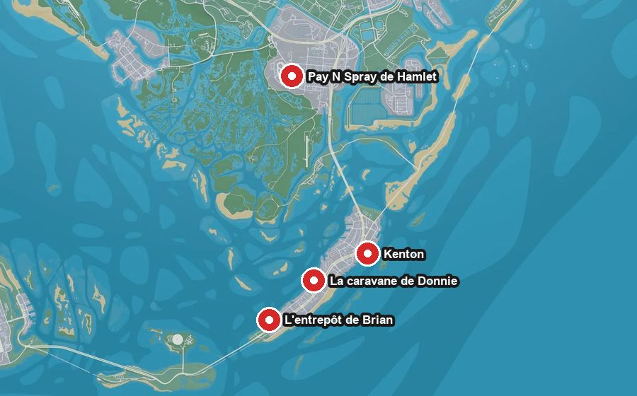
Les lieux du chapitre 1 aux Leonida Keys
Déroulé pas à pas
Partie de Pêche (Gone Fishing)
- Au large : prends la barre du bateau et approche-toi des paquets lâchés par l'avion. Active la concentration avec L3 + R3 pour les repérer. Retiens cette commande, elle sert pendant tout le jeu.
- Le deal : observe Donnie mener un échange qui tourne mal. Tu passes alors sur Jason.
- Infiltration : reste accroupi et pars droit devant. Assomme l'homme qui se trouve à quelques pas.
- Le hangar : continue en ligne droite jusqu'à ce que Donnie signale sa position. Avance doucement en repérant les gardes, puis rejoins le bon hangar et détache Donnie.
- Le magot : ne file pas directement à l'hydravion. Fais le détour par le mobil-home sur ta gauche, signalé par un gros dollar vert sur la minimap, et récupère l'argent de Brian.
- Repartir sans l'argent change la conclusion de la mission, sans grande conséquence.
- Boucler l'infiltration sans tuer personne rapporte des points de bonne réputation à Jason.
- L'hydravion : rejoins Donnie et décolle.
Cette mission débloque le trophée Just Like Paradise.
Aux Armes (Gear Up)
- Le tutoriel des armes : rien de compliqué, mais deux règles à comprendre tout de suite.
- Tu ne portes que deux armes d'épaule à la fois, et te promener avec du gros calibre visible attire les ennuis.
- Les grosses armes se rangent dans le coffre d'un véhicule. Si tu perds le véhicule, tu perds tout ce qu'il contient.
⚠️ Ne charge le coffre que de voitures dont tu es propriétaire. Une voiture volée finit toujours par disparaître, accident ou oubli.
Les quatre corvées de Brian
Elles arrivent en même temps : le jeu ne t'impose aucun ordre. Fais-les dans l'ordre qui t'arrange.
- Juste une Égratignure (Just a Scratch) : le tutoriel de réparation et de personnalisation des véhicules. Tu débloques au passage la réparation gratuite au garage — un coup de fil au mécano et on te livre une voiture neuve du même modèle.
- Frais de Labo (Lab Fees) : va chercher le loyer et menace le type au comptoir.
- Il sort une Batte de sous le comptoir : tu peux la lui prendre sans difficulté.
- Entre dans le labo avec le code 0420 et embarque tout l'Acide que tu peux, en compensation du loyer.
- Force le petit coffret posé sur un des meubles pour un pourboire.
- Attention Indésirable (Unwanted Attention) : Cal t'emmène près d'une fourrière de police bien gardée pour y prendre une Phoenix.
- Saute le grillage, accroupis-toi, puis va au fond à gauche de la première cour et grimpe sur les caisses pour passer dans la seconde.
- Les agents ont le dos tourné : rejoins la Phoenix, encore accrochée à la dépanneuse, détache le crochet et monte.
- Démarrer alerte tout le monde. Tire sur la commande du portail sans sortir de la voiture, puis fonce.
- Sors des zones d'investigation, va repeindre la voiture au Pay N Spray de Hamlet, livre-la au garage de Brian et récupère l'argent dans l'arrière-salle.
- Plomberie (Pipework) : Brian t'appelle quand tu circules du côté de Key Lento. Mandy, locataire provocatrice, ne paiera pas tant que son évier ne sera pas débouché.
- Elle t'entraîne vers sa chambre et part dans un long monologue. Tu peux la laisser parler ou l'interrompre pour demander les outils.
- La Ventouse est posée par terre dans la salle de bains, en face de la chambre.
- La Clé anglaise est prise automatiquement dans le placard sous l'évier quand Jason en a besoin.
- Pompe avec le stick droit (ou en tapotant R3 selon la configuration affichée), puis maintiens R2 pour intervenir à la clé.
- Ramasse le Cigare qui traîne par terre avant de partir : il régénère la concentration.
Hé, Arnold ! (Hey Arnold!)
- La station radio : accompagne Brian et Cal au deal.
- La course-poursuite : le jeu te demande de tirer en conduisant. C'est le premier vrai test de cette mécanique.
- Le choix : épargner ou tuer Arnold.
| Choix | Effet connu |
|---|---|
| Le tuer | Impact négatif sur ta réputation de criminel. Il faudra plusieurs bonnes actions pour remonter |
| L'épargner | Points de bonne réputation pour ta clémence |
Au-delà de la réputation, ce choix n'a aucune conséquence scénaristique connue dans le chapitre 1. Seule la romance entre Jason et Lucia semble peser sur la suite.
Island Dreams
C'est ta première mission pour Kenton, l'explorateur, et elle débloque toute l'activité de plongée et de chasse au trésor. Elle devient disponible un peu après l'épisode Arnold.
- La barre : prends le gouvernail du bateau de Kenton et mène les participants de l'enterrement de vie de garçon jusqu'au point de plongée.
- L'épave : escorte-les jusqu'à l'épave, puis sors le Détecteur de métaux pendant qu'ils s'amusent.
- Le signal clignote en vert de plus en plus vite quand tu chauffes. Cible le sol progressivement : les trois trésors sont enfouis dans le sable.
- Le temps est limité, ne traîne pas.
- Le marié : soulève la grille de la cale pour décoincer sa jambe, puis entre vite à l'intérieur pour un quatrième trésor.
- Le requin : remonte et équipe le lance-harpons par avance. Un carreau bien placé et il s'enfuit.
- La surface : remonte avec les touristes pour terminer et débloquer l'activité pour de bon.
Feng Shui
⚠️ Point à ne pas rater : un compte à rebours invisible lié à la sortie de prison de Lucia démarre à la fin de cette mission. Si la maison n'est pas retapée et que tes activités traînent, tu vas manquer de temps. Lis la partie 4 et règle tout avant de rentrer chez toi quand Cal est là.
- Le salon : Cal décide de réorganiser ton intérieur au nom du Feng Shui. Refuser n'est pas une option pour l'instant. Saisis les meubles et déplace-toi : la trajectoire est précalculée, c'est facile.
- La table basse : Cal te demande de l'optimiser au millimètre. Tu peux refuser, ça n'a aucune conséquence sur ta relation avec Lucia. Si tu acceptes, il te troll quelques minutes.
- Lux Tenebrae : le premier jeu de la soirée, une parodie des titres de Kojima croisés avec les jeux obscurs de développeurs solo.
- Longe le bord gauche de l'île jusqu'à un damier posé sur une caisse.
- Élimine les quatre obstacles en diagonale avec la tour noire, sans toucher l'autre tour.
- Fais ensuite entrer la tour brune en contact avec la noire.
- Street Trash III: Dezombifier : le second jeu, inspiré des titres de Capcom, et franchement plus drôle.
- Reste mobile et utilise les tonneaux explosifs sur les groupes de zombies.
- L'objectif est de ramasser six engrenages pour appeler une évacuation en moins de 20 minutes.
- La session s'interrompt après 5 minutes ou à ta mort, comme la précédente.
Les deux jeux sont accessibles à tout moment sur ta télé après cette mission, et terminer une partie d'arcade donne le trophée Stick Fiddler.
Enfin Libre (Coming Home)
- Les préparatifs : mets les vêtements de Lucia dans le coffre de ta voiture. Va-y bien habillé et avec une coupe de cheveux neuve si tu peux.
- Le centre de détention : va chercher Lucia.
- Le bar : retrouve toute la bande. Tu fais connaissance avec de nouveaux personnages, tu joues au billard, et tu donnes une leçon à des militaires un peu lourds.
BuckMe
- La banque : entre le casier de Lucia et le passé de Jason, la Fleeca n'a que le service BuckMe à leur proposer.
- Le tutoriel : apprends à déposer et à retirer de l'argent depuis l'appli.
- Les dépôts : le jeu te demande ensuite de déposer de l'argent puis d'épargner pour l'avenir. Ce sont deux petites tâches scénarisées, pas de vraies missions, mais elles comptent dans la progression.
Mets le maximum sur BuckMe. C'est le conseil le plus important, et pour une bonne raison : si tu meurs hors mission, tout l'argent liquide que tu portes est perdu, et la sauvegarde automatique t'empêche de revenir en arrière.
Quêtes et lieux
Les personnages du chapitre
| Personnage | Rôle |
|---|---|
| Brian Heder | Propriétaire de ta maison et employeur. Trafiquant qui héberge Jason dans une de ses propriétés |
| Cal Hampton | L'ami complotiste de Jason. Il revient souvent, et il est battable à la pêche (trophée Baited My Tackle) |
| Donnie | Le pilote casse-cou. Tu le sauves deux fois dans ce chapitre |
| Mandy | Locataire de Key Lento, celle de Plomberie |
| Arnold | Le contact de la station radio, et ton premier choix moral |
| Kenton | L'explorateur. Il ouvre toute la chasse au trésor sous-marine (partie 25) |
| Shirley | Ta voisine. Ses courses débloquent ton premier braquage (partie 4) |
Les activités qui s'ouvrent ici
- La pêche, depuis le ponton de ta maison ou depuis un bateau. C'est de loin la meilleure méthode pour monter la concentration : 5 à 10 % par poisson.
- Le punching-ball, dans la remise sous la maison. Accroche-le à une poutre et tape dessus : c'est la méthode gratuite la plus rapide pour monter le cardio.
- La plongée et la chasse au trésor, après Island Dreams.
- Les largages de Donnie dans les mangroves, très rentables.
- Les deux jeux d'arcade sur ta télé, après Feng Shui.
Butin exhaustif
| Nom exact | Type | Où / comment l'obtenir | Utilité |
|---|---|---|---|
| Argent de Brian | Argent | Partie de Pêche : mobil-home à gauche du hangar, dollar vert sur la minimap | Première rentrée d'argent du jeu |
| Batte | Arme de corps-à-corps | Frais de Labo : le type au comptoir la sort, prends-la-lui | Arme de mêlée de départ |
| Acide | Marchandise | Frais de Labo : dans le labo, code 0420 | Compensation du loyer impayé |
| Petit coffret | Argent | Frais de Labo : posé sur un meuble du labo, à forcer | Pourboire |
| Cigare | Consommable | Plomberie : par terre chez Mandy, à ramasser avant de partir | Régénère la concentration |
| Phoenix | Véhicule | Attention Indésirable : accrochée à la dépanneuse de la fourrière | À livrer à Brian, tu ne la gardes pas |
| Détecteur de métaux | Équipement | Island Dreams : fourni par Kenton | Trouver les trésors enfouis |
| Lance-harpons | Arme | Island Dreams : fourni par Kenton | Faire fuir le requin, et pêcher ensuite |
| Trésors de l'épave | Objets de valeur | Island Dreams : trois enfouis dans le sable, un quatrième dans la cale | À revendre à Kenton |
| Voiture de Jason | Véhicule | Disponible dès le début | Ton seul véhicule de tout le chapitre 1 |
Conseils et pièges
N'enchaîne pas les missions principales. C'est l'erreur la plus coûteuse du chapitre. Certaines missions sont limitées dans le temps, à commencer par la sortie de Lucia. Nettoie la carte tranquillement et repousse l'avancée du scénario.
Achète le bijou dès qu'il apparaît. Quand l'objectif du bijou à 450 $ se débloque, vas-y en priorité : il met plusieurs jours en jeu à arriver chez Jason.
Fais les activités à cœur dès qu'elles apparaissent. Les icônes en forme de cœur sur la carte sont des moments à passer avec Lucia. Elles montent la jauge d'affinité, qui compte vraiment pour la suite (partie 18).
Deux armes d'épaule, pas plus. Et le coffre de ta propre voiture pour le reste.
Pense à la boussole de la croix directionnelle. Elle existe, et beaucoup de joueurs ne la trouvent jamais.
Ouvre la liste des objectifs. Sur l'écran de carte, croix directionnelle vers la droite : tu obtiens la liste complète des types d'activités disponibles, parfois avec leur position exacte. C'est le meilleur outil du jeu pour ne rien manquer.
Tout prendre en main. Les missions secondaires ne sont presque jamais scriptées : elles viennent des réseaux sociaux, des prospectus, des affiches collées aux murs et des passants qui t'interpellent. Si quelqu'un te hèle ou si un dialogue monte en volume, va voir.
Alertes
- ⚠️ Compte à rebours invisible : il démarre à la fin de Feng Shui et court jusqu'à la sortie de Lucia. Termine la rénovation de la maison et tes activités en cours avant.
- ⏳ Manquable : l'argent de Brian dans le mobil-home de Partie de Pêche. Repartir sans lui change la fin de la mission.
- ⏳ Manquable : le Cigare chez Mandy et le petit coffret du labo. Une fois la mission finie, tu ne reviens pas.
- ⚠️ Mort hors mission : tout l'argent liquide que tu portes est définitivement perdu, et la sauvegarde automatique t'empêche d'y remédier. Dépose sur BuckMe avant toute activité risquée.
Check-list
- Partie de Pêche terminée, argent du mobil-home récupéré
- Infiltration bouclée sans tuer personne (bonus de réputation)
- Aux Armes terminée
- Juste une Égratignure terminée, réparation gratuite débloquée
- Frais de Labo : Batte prise, Acide récupéré, petit coffret forcé
- Attention Indésirable : Phoenix repeinte et livrée, argent de l'arrière-salle pris
- Plomberie : évier débouché et Cigare ramassé
- Hé, Arnold ! : choix fait et noté
- Island Dreams : quatre trésors trouvés, requin repoussé, plongée débloquée
- Maison entièrement retapée avant de finir Feng Shui
- Feng Shui : Lux Tenebrae et Street Trash III joués (trophée Stick Fiddler)
- Enfin Libre : Lucia récupérée, vêtements dans le coffre
- BuckMe débloqué, dépôt et épargne faits
- Bijou à 450 $ commandé dès son apparition
- Punching-ball accroché dans la remise
Complément
Chapitre 1 : l'arrivée de Lucia et la fin des Keys
L'essentiel
- Le moment dur : la fin du chapitre enchaîne Piège à Touristes, Home Sweet Home et Sortie d'Hôpital sans te laisser respirer. Prépare-toi avant.
- Ne pas rater : la Photo sur le mur de l'entrée pendant Home Sweet Home, et tous les objets surlignés chez Donnie.
- Le drame : Donnie meurt pendant Bourbier, quoi que tu fasses. Ce n'est pas un échec de ta part.
- Avant de partir : vide ton argent liquide sur BuckMe. Tu risques de perdre le magot caché sous le parquet.
Objectif
Lucia est sortie. À partir d'ici, le chapitre monte en intensité jusqu'à une fin qui ferme définitivement la page des Leonida Keys. Tu alternes entre Jason et Lucia, et le jeu commence à t'apprendre à les faire travailler ensemble.
C'est aussi la partie où le chapitre 1 cesse d'être une suite de corvées.
Itinéraire
On reste dans l'archipel des Leonida Keys et dans le comté de Mariana, mais trois nouveaux lieux entrent en jeu :
- Le camp des Kingfishers : à quelques centaines de mètres en bateau, le repaire des rednecks du coin.
- Les mangroves du nord : pour les largages et les deals.
- L'hôtel : pour la première sortie de Lucia.
Le reste tourne autour de ta maison, de la caravane de Donnie et de chez Cal.
📍 La zone en images : la soluce illustrée française du chapitre 1 couvre ces missions avec captures — https://www.jeuxvideo.com/news/2115487/chapitre-1-gta-6-comment-finir-toutes-les-missions-principales.htm
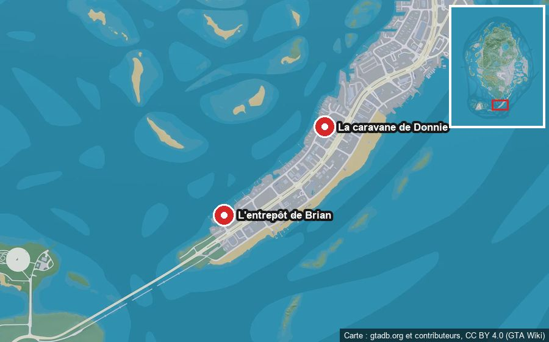
La caravane de Donnie et l'entrepôt de Brian
Déroulé pas à pas
Nettoyer Après Donnie (Clean Up After Donnie)
- Le point de rendez-vous : rejoins-le et emprunte le bateau pour atteindre le camp des Kingfishers, à quelques mètres de là.
- Le camp : nettoie les quelques ennemis présents. Ils ne sont pas nombreux ici, contrairement à ce qui t'attend plus tard dans le chapitre.
- Le cabanon : va chercher la Coke à l'intérieur.
- La livraison : ramène la marchandise au mobil-home de Donnie.
Terre à Terre (Down to Earth)
- L'hydravion : première mission en amoureux. Récupère les paquets aux commandes de l'hydravion.
- La baie : livre-les aux quatre coins de la baie, Lucia aux commandes de la livraison.
C'est une introduction à la complémentarité du duo, une mécanique que le jeu exploite de plus en plus ensuite. Prends le temps de comprendre qui fait quoi.
Ciel Dégagé (Clear Skies)
⚠️ Prends une arme d'épaule avant de lancer cette mission. Il y a beaucoup d'ennemis et ça peut très mal finir.
- Le décollage : prends l'avion avec Donnie pour rejoindre le lieu d'un nouveau deal.
- Les bikers : comme d'habitude, ça tourne mal. Gros combat.
- Le sauvetage : tire Donnie d'une mort certaine une nouvelle fois.
- La poursuite : course derrière son avion à moto, avec un saut à l'intérieur à tenter. Le saut semble faisable, mais le rater n'empêche pas la mission de se terminer.
Permission de Sortie (Day Release)
- Première prise en main de Lucia Caminos : aucun combat ici, aucune action particulière, juste des courses improvisées pour le plaisir.
- L'hôtel : quand tu cherches une chambre avec Lucia, ouvre toutes les portes. Les développeurs ont prévu une situation absurde derrière chacune.
- Contenu explicite droit devant : tu es averti.
Bourbier (Swamped)
⚠️ Prépare-toi sérieusement : armes d'épaule et cachets pour te soigner. Grosse bataille.
- Le marais : avance et nettoie. C'est le plus gros affrontement du chapitre.
- La poursuite : la mission se conclut en hydrocoptère puis en hydroglisseur, en territoire Kingfishers.
- L'hélico est capricieux au début. Vas-y doucement sur le manche, le temps de prendre le pli.
⚠️ Donnie meurt pendant cette mission. C'est scripté et tu ne peux rien y faire. Le fait d'avoir pu le favoriser dans les livraisons et de l'avoir sauvé deux fois laissait penser le contraire : ce n'est pas le cas.
Bye Bye Don (Don Gone)
- La caravane de Donnie : passe en mode concentration pour voir tous les objets surlignés en blanc et ramasse-les tous.
- Le drapeau : baisse le drapeau avant de partir, comme Brian te l'a demandé.
- On ignore encore si laisser la maison à moitié vide ou le drapeau en haut a des conséquences plus loin dans le scénario. ⚠️ à vérifier en jeu.
- Les militaires : en sortant, tu retrouves tes amis de l'armée du bar, bien décidés à prendre leur revanche.
- La voiture : repars avec le véhicule de Donnie.
Recalibrage (Recalibration)
- Les bières : va en acheter avant de rejoindre Cal.
- Chez Cal : il faut lui remonter le moral et lui avouer la vérité sur le sort de son pote.
- La pêche : participe à une petite partie de pêche avec lui.
- Le vrai morceau de gameplay de la mission est la cuisson des poissons sur le barbecue.
- C'est aussi l'occasion de monter ta concentration : chaque poisson rapporte 5 à 10 %.
- Le retour : rentre chez toi après la discussion.
Cal est battable à la pêche, et ça vaut un trophée (Baited My Tackle). Rien n'oblige à le faire pendant cette mission.
Piège à Touristes (Tourist Trap)
On entre dans la dernière phase du chapitre, et les trois missions qui suivent s'enchaînent.
- Le changement de point de vue : le jeu appuie enfin franchement sur cette mécanique. Tu commences en Jason et passes sur Lucia en cours de route.
- La fusillade finale : couvre bien Jason et ne le laisse pas partir trop devant.
- ⚠️ S'il prend trop de balles, c'est le game over.
Home Sweet Home
- Chez Jason, en Lucia : retourne récupérer toutes les affaires.
- La Photo : prends la photo sur le mur, à gauche de l'entrée, avant de fuir. C'est le seul objet unique de la mission.
- Le magot : tu risques fort de perdre tout l'argent planqué sous le parquet. C'est exactement pour ça qu'il faut remplir ton compte BuckMe depuis le début du chapitre.
- La fuite : sors des cercles de recherche de la police par n'importe quel moyen, puis rejoins la voiture de ton amie une fois en sécurité.
Sortie d'Hôpital (Discharge Time)
- La dernière mission du chapitre : mise en scène démente et quelques bonnes idées qui renouvellent les séquences de tir sur rail.
- L'arsenal : tu n'as pas besoin de ton propre équipement, les armes nécessaires te sont fournies automatiquement. Du bourrinage pur.
Terminer le chapitre débloque le trophée Paradise Lost et t'envoie à Port Gellhorn, pour le chapitre 2.
Quêtes et lieux
Ce qui se ferme avec le chapitre
Les Leonida Keys restent accessibles après le chapitre 1 : la carte ne se referme pas. En revanche, les occasions liées aux personnages du chapitre disparaissent. Les activités de Shirley, les largages de Donnie et les corvées de Brian appartiennent à ce chapitre.
Comme dans Red Dead Redemption 2, certaines opportunités s'effacent avec le temps ou selon ta progression dans l'histoire. Si une icône traîne sur ta carte depuis un moment, va la voir avant de finir Piège à Touristes.
Les deux arcs qui continuent
- Kenton et sa chasse au trésor sous-marine traversent tout le jeu (partie 25). Son arc a son propre trophée, This Was No Boat Accident.
- Le Singe qui pue (Skunk Ape) démarre ici par une rencontre scriptée et se poursuit bien plus tard (partie 4).
Butin exhaustif
| Nom exact | Type | Où / comment l'obtenir | Utilité |
|---|---|---|---|
| Coke | Marchandise | Nettoyer Après Donnie : dans le cabanon du camp des Kingfishers | À livrer au mobil-home de Donnie |
| Paquets | Marchandise | Terre à Terre : récupérés en hydravion, livrés aux quatre coins de la baie | Objectif de mission |
| Affaires de Donnie | Objets divers | Bye Bye Don : tous les objets surlignés en blanc en mode concentration, dans la caravane | Nettoyer les traces. Conséquences inconnues si tu en laisses |
| Voiture de Donnie | Véhicule | Bye Bye Don : tu repars avec elle | Véhicule supplémentaire |
| Bières | Consommable | Recalibrage : à acheter en boutique avant de rejoindre Cal | Objectif de mission |
| Poissons | Consommable | Recalibrage : pêchés chez Cal, cuits au barbecue | 5 à 10 % de concentration par poisson |
| Photo | Objet unique | Home Sweet Home : sur le mur, à gauche de l'entrée | Souvenir, à prendre avant de fuir |
| Argent sous le parquet | Argent | Home Sweet Home : la planque de Jason depuis le début du chapitre | Tu risques de tout perdre. Dépose sur BuckMe avant |
| Armes de la dernière mission | Armes | Sortie d'Hôpital : fournies automatiquement | Aucune préparation nécessaire |
Conseils et pièges
Deux missions demandent une vraie préparation. Ciel Dégagé et Bourbier sont les deux gros affrontements du chapitre. Arrive avec deux armes d'épaule dans le coffre, des cachets, et de quoi recharger.
Le switch n'est pas encore libre. Dans ce chapitre, le jeu décide quand tu joues Jason et quand tu joues Lucia. Le changement à volonté n'arrive qu'au milieu du chapitre 2, et seulement quand les deux sont proches (partie 18).
Jason peut te faire perdre. Pendant Piège à Touristes, il est une escorte, pas un allié invincible. Reste à sa hauteur.
Sauvegarde avant Piège à Touristes. Les trois dernières missions s'enchaînent et ferment le chapitre. Prends un emplacement propre avant de les lancer, surtout si tu veux comparer des choix.
Fais le tour de la carte avant la fin. Le chapitre 2 se passe ailleurs, et revenir aux Keys est long. Ramasse ce qui traîne, finis les activités de Shirley, vends ce que tu as à vendre.
Vends ta coke au bon endroit. Les briques récupérées pendant les événements de carte se déposent dans l'entrepôt de Brian ou derrière la caravane de Donnie. Donnie paye mieux que Brian.
Alertes
- ⚠️ Donnie meurt pendant Bourbier. Scripté, inévitable, quoi que tu aies fait avant.
- ⚠️ Game over possible : pendant la fusillade finale de Piège à Touristes, Jason meurt s'il prend trop de balles. C'est un échec de mission, pas une mort de personnage.
- ⏳ Manquable : la Photo du mur de l'entrée pendant Home Sweet Home.
- ⏳ Manquable : les objets surlignés chez Donnie pendant Bye Bye Don, et le drapeau à baisser.
- ⚠️ Argent perdu : l'argent planqué sous le parquet est en danger pendant Home Sweet Home. Dépose tout sur BuckMe avant.
- ⏳ Manquable : les opportunités de carte du chapitre 1 disparaissent avec la progression. Fais le tour avant Piège à Touristes.
Check-list
- Nettoyer Après Donnie : Coke récupérée et livrée
- Terre à Terre : paquets livrés aux quatre coins de la baie
- Ciel Dégagé : fait avec une arme d'épaule, Donnie sauvé
- Permission de Sortie : toutes les portes de l'hôtel ouvertes
- Bourbier : fait avec armes et cachets
- Bye Bye Don : tous les objets surlignés ramassés, drapeau baissé
- Recalibrage : bières achetées, poissons pêchés et cuits
- Cal battu à la pêche (trophée Baited My Tackle)
- Argent liquide déposé sur BuckMe
- Sauvegarde manuelle avant Piège à Touristes
- Piège à Touristes : Jason gardé en vie
- Home Sweet Home : Photo prise avant la fuite
- Sortie d'Hôpital terminée (trophée Paradise Lost)
- Tour des Leonida Keys fait avant de quitter le chapitre
Complément
Chapitre 1 : les optionnelles, la maison et les secrets
L'essentiel
- Le gros gain : la voiture pailletée de Shirley, offerte après deux courses. Une caisse rapide très tôt dans le jeu.
- Ne pas rater : trois optionnelles sont manquables — le rhum de Shirley, le scooter de Peggy et la méditation avec Lucia.
- L'arme à aller chercher : le Fusil à petit gibier W-22, le premier fusil silencieux du jeu, au nord du comté de Mariana.
- Avant de partir : termine la maison avant la fin de Feng Shui, sinon le compte à rebours de Lucia te prend de vitesse.
Objectif
Le chapitre 1 contient treize missions optionnelles en plus de ses missions principales, plus la rénovation de la maison et une poignée de secrets planqués sur la carte. Rien de tout ça n'est obligatoire pour avancer. Tout compte en revanche pour le 100 % et pour ta relation avec Lucia.
Cette partie regroupe l'ensemble pour que tu puisses nettoyer le chapitre d'un coup, au bon moment.
Note sur les noms : seuls Bruits Suspects et Chien Cool ont un nom français connu. Les autres optionnelles gardent leur titre anglais ci-dessous.
Itinéraire
Tout tient dans un rayon de quelques minutes autour de ta maison, sur Key Lento, sauf trois choses :
- Le camp des Kingfishers au fusil silencieux : au nord, au milieu du comté de Mariana, accessible en bateau.
- Le Chien Cool : en pleine baie de Leonida sud, à repérer depuis un bateau.
- La première rencontre du Singe qui pue : dans la mangrove au nord de ta maison, sur la route d'un largage de Donnie.
📍 La zone en images : les guides illustrés français de ces secrets, avec captures et positions sur la carte — https://www.jeuxvideo.com/news/2115477/shirley-gta-6-comment-finir-les-missions-annexes-de-la-voisine.htm
Déroulé pas à pas
Les deux courses de Shirley
Ta voisine la plus proche t'alpague quand tu traînes dans le quartier, après avoir retapé la maison et bouclé les premières missions. Ses deux courses sont manquables : vas-y dès qu'elle t'appelle.
- Achat de rhum (Get Shirley's Rum) : file à la boutique la plus proche et rapporte-lui son rhum.
- C'est dans ce commerce que tu entends les Bruits Suspects et que tu débloques ton premier braquage. Fais les deux dans la même sortie.
- Voler le scooter (Steal the Scooter) : Shirley t'envoie piquer le scooter de Peggy, sa pire ennemie.
- Entre dans la cour de Peggy et embarque l'engin.
- Peggy te poursuit sur quelques mètres avant de tomber lamentablement à mi-parcours. Ne t'arrête pas.
- Planque le scooter chez Shirley : elle te confie alors les clés de sa voiture pailletée. C'est un excellent plan pour une caisse rapide très tôt dans l'histoire.
Bruits Suspects
C'est ton premier braquage du jeu, et il se déclenche naturellement pendant la course au rhum.
- La boutique de Hamlet : chez le vendeur de boissons, tu remarques des bruits d'oiseaux qui semblent gêner le caissier.
- L'arrière-boutique : sors du magasin et prends directement la ruelle de droite pour y accéder.
- Les hommes armés : tu tombes sur un perroquet et plusieurs hommes armés. Élimine-les pour pouvoir continuer tranquillement.
- Le perroquet : parle-lui. Il finit par te balancer la planque du magot.
- Le magot : il est près du générateur, à l'intérieur de la boutique.
- Plusieurs milliers de dollars sont cachés derrière une bouche de ventilation à côté du générateur.
- Fouille aussi l'arrière-boutique, il y a de l'argent là aussi.
- La fuite : force le coffre, prends tout et détale avant l'arrivée de la police.
Le Chien Cool
Un des secrets les plus réussis du début de jeu, et il rapporte.
- La baie : le Chien Cool se balade à jetski en pleine baie de Leonida sud. Tu le croises en bateau, souvent simplement arrêté sur le côté.
- La balade : dès que tu le repères, monte derrière lui et reste accroché jusqu'au bout. Ce n'est pas qu'une blague, il t'emmène quelque part.
- L'île des chiens : sur la plage, prends le ballon de football américain et lance-le.
- Au lieu du ballon, il te rapporte un Portefeuille contenant plus de 1 000 dollars.
- Fouille le sable : tu y trouves le modèle de Lunettes du Chien Cool.
- Le centre de l'île : avant de partir, va voir la caravane. Elle contient un petit coffre-fort — code 44017.
Le Fusil à petit gibier W-22 des Kingfishers
La meilleure arme accessible au chapitre 1 : un fusil de précision silencieux. Sa lunette et son calibre sont médiocres, mais avec des tirs à la tête il suffit largement pour tout le chapitre et au-delà.
- La position : au nord, au milieu du comté de Mariana, sous la forme d'une Opportunité de cambriolage d'une opération des Kingfishers.
- L'approche : ⚠️ ne t'amarre pas directement au ponton. Il y a une vingtaine de Kingfishers sur place et c'est la mort rapide, donc une perte d'argent liquide.
- Arrête-toi devant la plage à l'ouest.
- Élimine quelques ennemis discrètement en mêlée, ou avec un silencieux installé sur ton pistolet de base. Ce silencieux est un excellent investissement.
- Le nettoyage : le combat ouvert finit par s'engager. Nettoie la périphérie d'abord pour ne pas être pris à revers, puis place-toi à couvert et enchaîne les head shots en concentration.
- Le centre du camp contient un stock de Cocktails Molotov bien utile.
- Le bâtiment sur pilotis : l'arme est à l'étage, dans sa valise de transport. Méfie-toi des ennemis embusqués à l'intérieur.
- Sur la table, ramasse aussi l'argent et la drogue.
- ⚠️ Saisir l'arme fait apparaître de nouveaux adversaires. C'est l'occasion de la tester.
- La sortie : la police est automatiquement alertée au bout d'un moment. Une fois le butin en main, repars discrètement en volant l'hydravion garé à proximité.
Viens avec des kits de soin, des bonus de santé et une bonne réserve de munitions.
Le Singe qui pue (Skunk Ape)
La tradition du Bigfoot, version Floride. Le cryptide local porte plusieurs noms selon les personnages : Singe qui pue, Skunk Ape, Sasquash, M. Mangrove.
- La rencontre scriptée : sur la route d'un des largages de paquets de Donnie, dans la mangrove au nord de ta maison, après un accident d'avion.
- De puissants rugissements se font entendre en approchant.
- La créature est au milieu de la route, en train de dévorer un cerf. Elle prend la fuite à ton approche.
- Tu peux la percuter en voiture ou la cribler de balles : ça la fait juste disparaître.
- L'effigie : active la concentration à proximité pour repérer un son louche. Il te mène à une effigie inquiétante à l'odeur méphitique.
- Le malaise : après l'avoir inspectée, ton personnage s'évanouit. Une cinématique montre les pieds de la créature, puis tu reprends conscience dans ton véhicule comme si rien ne s'était passé.
- Les affiches de Kirk : pour continuer la traque, il faut avoir avancé dans l'histoire — Lucia doit être sortie de prison et ses quêtes de départ faites, dont l'ouverture du compte bancaire commun.
- Tu croises alors des affiches placardées en ville, par exemple sur le panneau à l'entrée du magasin d'armes près de chez toi.
- Elles sont l'œuvre de Kirk, dont l'esprit est visiblement dérangé. Il cherche des informations sur le Skunk Ape et des gens entrés en contact avec lui.
- Son numéro de téléphone est sur l'affiche : appelle-le, au besoin manuellement depuis tes contacts.
- La suite : l'arc se poursuit avec Kirk. ⚠️ Le détail des missions suivantes n'est pas encore publié : à vérifier en jeu.
La rénovation de la maison de Jason
Quatre chantiers, à finir avant la fin de Feng Shui. C'est le meilleur moyen de faire démarrer ta relation avec Lucia du bon pied.
- Les marches de l'entrée : prends les planches au bas de l'escalier. Retire les marches moisies et remplace-les par les neuves.
- La balustrade de la cour arrière : les planches et les clous sont posés par terre, près du banc de musculation. Quelques coups de marteau et c'est fait.
- Le toit : prends l'échelle posée devant l'entrée de la maison et fixe les dernières tuiles, pour que le toit cesse de fuir.
- La chambre : termine les cloisons, puis choisis ta peinture pour les murs.
- La notification : quand tout est fait, le jeu t'annonce que la rénovation est terminée.
Cal vient ensuite finir l'aménagement avec Feng Shui (partie 2).
Les autres optionnelles du chapitre
Ce sont des petites courses, souvent liées à l'arrivée de Lucia. Elles sont rapides et comptent pour le compteur des tâches optionnelles (partie 21).
| Titre | Ce qu'elle demande | Quand |
|---|---|---|
| Pick Up Groceries | Faire les courses | Après Feng Shui |
| Buy Flowers | Acheter des fleurs à Lucia | Avant son arrivée |
| Buy Lucia a Necklace | Acheter le bijou à 450 $. Il met plusieurs jours en jeu à arriver : commande-le dès que l'objectif apparaît | Avant son arrivée |
| Get The Chop | Passer chez le coiffeur avant d'aller la chercher | Avant Enfin Libre |
| Get Lucia's Clothes | Récupérer ses vêtements et les mettre dans le coffre | Avant Enfin Libre |
| Catch a Bigger Fish | Pêcher une plus grosse prise | À volonté |
| Meditate with Lucia | Méditer à deux. Manquable | Après Terre à Terre |
| Find the Lost Drugs | Retrouver de la drogue perdue | Après Meditate with Lucia |
| Clock Out | Finir la journée | Après Permission de Sortie |
| Ring the Bell! | Manquable | Après la rénovation de la maison |
| Donnie's Lost Drugs | Récupérer les derniers paquets de Donnie | Après Bye Bye Don |
La méditation à deux compte doublement : chaque spot de méditation peut être validé par Jason et par Lucia, et le compteur du 100 % demande 15 validations sur 18 (partie 22).
Quêtes et lieux
Où trouver les opportunités
Elles ne sont presque jamais scriptées. Elles viennent de quatre sources :
- Les réseaux sociaux sur ton téléphone. Consulte-les avant de te coucher.
- Les prospectus et les affiches collés aux murs, comme celles de Kirk.
- Les passants qui t'interpellent. Si un dialogue monte en volume, tends l'oreille.
- Les coins reculés de la carte. L'exploration est presque toujours récompensée : le Chien Cool et le fusil silencieux en sont la preuve.
Pour voir ce qui est disponible à un instant donné, ouvre la carte et fais croix directionnelle vers la droite : tu obtiens la liste complète des types d'activités, parfois avec leur position exacte.
Les gains de ce chapitre
| Source | Gain |
|---|---|
| Shirley | La voiture pailletée |
| Bruits Suspects | Plusieurs milliers de dollars |
| Chien Cool | Portefeuille à plus de 1 000 $, lunettes, coffre à 44017 |
| Camp des Kingfishers | Fusil à petit gibier W-22, argent, drogue, Molotov, un hydravion |
| Largages de Donnie | Très rentables, et Donnie paye mieux que Brian |
| Plongée avec Kenton | Simple et rentable, sans combat |
Butin exhaustif
| Nom exact | Type | Où / comment l'obtenir | Utilité |
|---|---|---|---|
| Voiture pailletée de Shirley | Véhicule | Récompense des deux courses de Shirley | Véhicule rapide très tôt dans le jeu |
| Rhum | Consommable | Boutique de Hamlet, pour Get Shirley's Rum | Objectif de mission |
| Scooter de Peggy | Véhicule | Cour de Peggy, pour Steal the Scooter | À planquer chez Shirley |
| Argent de la bouche de ventilation | Argent | Bruits Suspects : derrière la bouche de ventilation, près du générateur | Plusieurs milliers de dollars |
| Coffre de l'arrière-boutique | Argent | Bruits Suspects : à forcer dans l'arrière-boutique | Complément du braquage |
| Portefeuille | Argent | Chien Cool : lance le ballon, il te le rapporte | Plus de 1 000 $ |
| Lunettes du Chien Cool | Cosmétique | Chien Cool : en fouillant le sable de la plage | Tenue |
| Coffre-fort de la caravane | Argent | Chien Cool : au centre de l'île, code 44017 | Argent |
| Fusil à petit gibier W-22 | Arme unique | Camp des Kingfishers, bâtiment sur pilotis, à l'étage, dans sa valise | Premier fusil de précision silencieux du jeu |
| Cocktails Molotov | Arme de jet | Camp des Kingfishers, au centre | Stock utile |
| Argent et drogue du camp | Argent, marchandise | Camp des Kingfishers, sur la table du bâtiment sur pilotis | À revendre |
| Hydravion des Kingfishers | Véhicule | Garé à proximité du camp | Fuite discrète |
| Silencieux de pistolet | Accessoire d'arme | À acheter au magasin d'armes | Excellent investissement pour tout le chapitre |
| Bijou à 450 $ | Cadeau | Buy Lucia a Necklace, en boutique | Affinité avec Lucia. Plusieurs jours de livraison |
| Planches, clous, marteau, échelle, peinture | Matériel | Autour de la maison de Jason | Rénovation complète |
| Effigie du Singe qui pue | Objet de scénario | Mangrove au nord, repérée en concentration | Lance l'arc de Kirk |
Conseils et pièges
Les trois manquables en premier. Get Shirley's Rum, Steal the Scooter et Meditate with Lucia portent l'étiquette manquable. Les deux premières s'enchaînent et rapportent une voiture. La troisième demande juste d'aller méditer à deux après Terre à Terre.
Le silencieux avant le camp. Monter un silencieux sur ton pistolet de base change complètement l'approche du camp des Kingfishers, et sert pour tout le chapitre.
Ne meurs pas avec ton argent sur toi. Le camp des Kingfishers est l'endroit du chapitre où on meurt le plus. Dépose sur BuckMe avant d'y aller.
La maison avant Feng Shui, vraiment. C'est la seule contrainte de temps dure du chapitre. Les quatre chantiers prennent un quart d'heure, le compte à rebours est invisible : ne prends pas le risque.
Le bijou se commande, il ne s'achète pas. 450 $ et plusieurs jours en jeu. Si tu le commandes trop tard, il arrive après l'arrivée de Lucia.
Tire sur le Singe qui pue si ça t'amuse. Ça ne casse rien : il disparaît, et l'effigie reste trouvable.
Alertes
- ⏳ Manquables : Get Shirley's Rum, Steal the Scooter et Meditate with Lucia. Les deux premières conditionnent la voiture pailletée.
- ⚠️ Mort quasi certaine : t'amarrer directement au ponton du camp des Kingfishers. Passe par la plage à l'ouest.
- ⚠️ Noms français non publiés : les onze optionnelles listées en anglais dans cette partie n'ont pas encore de titre français publié. Elles sont rassemblées dans les annexes.
- ⏳ Manquable : commander le bijou à 450 $ trop tard. Il met plusieurs jours en jeu à arriver.
Check-list
- Rhum acheté et rapporté à Shirley
- Bruits Suspects : hommes armés éliminés, perroquet interrogé, bouche de ventilation et arrière-boutique fouillées
- Scooter de Peggy volé et planqué
- Voiture pailletée récupérée
- Chien Cool trouvé, portefeuille, lunettes et coffre 44017 obtenus
- Fusil à petit gibier W-22 récupéré, avec l'argent, la drogue et les Molotov
- Silencieux acheté pour le pistolet de base
- Première rencontre du Singe qui pue et effigie inspectée
- Kirk appelé depuis le numéro de l'affiche
- Marches, balustrade, toit, cloisons et peinture terminés
- Notification de rénovation complète reçue
- Meditate with Lucia fait après Terre à Terre
- Bijou à 450 $ commandé à temps
- Les onze autres optionnelles du chapitre faites
Complément
Chapitre 2 : Port Gellhorn et le Starlet Motel
L'essentiel
- Aucun boss, mais une grosse bagarre à mains nues contre les Kolt à la fin de Virée Entre Filles.
- Ne pas rater : passer voir Jason chaque soir au motel. L'icône devient rose quand il t'attend, et ça fait monter votre relation.
- Ce qui s'ouvre : Moses débloque le scan, l'enregistrement et la revente de voitures, de loin le meilleur plan d'argent du chapitre.
- Avant de partir : le chapitre demande 15 000 $ sur ton compte BuckMe pour avancer. Commence à mettre de côté tout de suite.
Objectif
Tu es à Port Gellhorn, dans le comté de Kelly, et tu ne contrôles plus que Lucia Caminos. Ses statistiques sont assez différentes de celles de Jason, qui se remet de la fin du chapitre 1 dans une chambre du Starlet Motel.
Ce chapitre s'appelle Paradise Lost. C'est lui qui ouvre vraiment le jeu : la carte se remplit, les braquages deviennent accessibles, et le changement de personnage finit par se débloquer.
Itinéraire
Port Gellhorn est une ville côtière du bord du golfe. Les points à retenir :
- Le Starlet Motel : ta planque de tout le chapitre, débloquée automatiquement. Il a une piscine avec des poids et des kettlebells, et trois chats dans les environs.
- La chambre de Jason : à visiter chaque soir.
- Le garage de Moses : où tu scannes, enregistres et revends.
- La zone industrielle : pour Daily Driver et les opportunités de vol.
- Ambrosia et Lake Leonida : aussi dans le comté de Kelly, à explorer en chemin.
📍 La zone en images : la soluce illustrée française du chapitre 2, mission par mission — https://www.jeuxvideo.com/news/2115971/chapitre-2-gta-6-comment-finir-toutes-les-missions-principales.htm
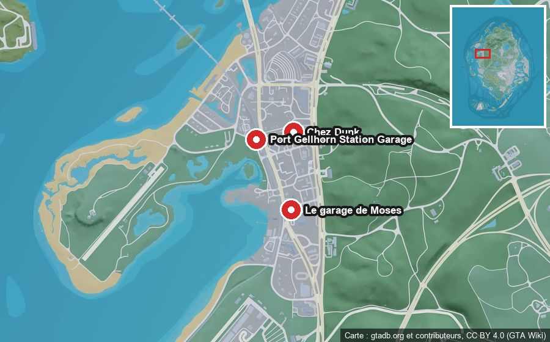
Port Gellhorn au chapitre 2
Note sur les noms : treize missions de ce chapitre ont un nom français connu. Cinq autres gardent pour l'instant leur titre anglais.
Déroulé pas à pas
Y a Quoi dans le Sac ? (What's in the Bag?)
- L'introduction : aucun objectif particulier. Enchaîne les cinématiques, puis va parler à la réceptionniste pour le règlement de la chambre.
- Le changement : à partir de maintenant tu ne joues plus que Lucia. Prends le temps de regarder ses statistiques, elles ne ressemblent pas à celles de Jason.
Play Nurse ⚠️ nom français à vérifier en jeu
Cette mission court sur tout le chapitre et ne se termine pas d'un coup. Elle n'a pas de marqueur sur la carte : tu la trouves dans la liste des missions, sous Carte → Histoire.
- Chaque fin de journée : passe à la chambre de Jason au Starlet Motel pour voir s'il a besoin de quelque chose.
- L'icône du motel devient rose quand une visite est attendue.
- Il arrive qu'une cinématique se déclenche, où Lucia s'occupe de lui. Elle fait monter la relation.
- La fin : la mission se termine toute seule après Course Matinale.
Entre deux visites, utilise les poids et les kettlebells près de la piscine du motel : ils montent la force de Lucia et sa barre de santé.
Traque d'Ambulance (Ambulance Chaser)
- Le symbole d'ambulance : va au marqueur et passe derrière le bâtiment pour trouver des marches qui mènent à l'étage.
- L'observation : planque-toi derrière le muret pour observer les junkies.
- La poursuite : saute pour prendre la moto et lance la course-poursuite.
- L'ambulance : après avoir chassé ses occupants, débarrasse-t'en définitivement. Le plus simple reste d'aller la couler au point d'eau le plus proche.
Overnight Charges ⚠️ nom français à vérifier en jeu
- Les frais du motel : une petite tâche scénarisée liée à la chambre. Elle compte dans la progression du chapitre sans demander d'action compliquée.
Nouvelle Adresse (Just Moved In)
- Les courses : si ça te rappelle quelque chose, c'est normal — tu as fait la même chose avec Jason quelques heures plus tôt.
- Les points roses : prends tous les articles correspondant aux points roses de ta minimap.
- Le retour au motel : rentre passer un peu de temps avec Jason.
- Les réseaux sociaux : consulte-les avant de te coucher. Certaines opportunités de missions secondaires se cachent dans les posts.
Virée Entre Filles (Girls' Trip)
- Vikki : il est temps de partir à la découverte de la faune locale avec elle.
- Les trajets : il y a beaucoup de route et beaucoup de discussions. Utilise la vue cinématique et la conduite automatique pour en profiter sans quitter la route des yeux.
- La bagarre : à la fin, combat à mains nues contre quelques Kolt. C'est l'occasion de découvrir que Lucia connaît son karaté.
- Dunk : poursuis-le une dernière fois et ramène-le chez lui.
Pick Up a Gun ⚠️ nom français à vérifier en jeu
- L'arme : optionnelle, disponible juste après Virée Entre Filles. Va te procurer une arme — tu en auras besoin très vite, et elle accélère l'arrivée de l'appel de Dunk.
Moses
- Le tutoriel : voilà la fonctionnalité que tu attends depuis le début, l'enregistrement et la revente de voitures.
- Le scan : utilise l'application Waink pour scanner les voitures et suis toutes les instructions de Moses.
- La limite : ⚠️ le mécano ne reprend pas toutes les voitures. Scanne-les avant de les embarquer, sinon tu fais le trajet pour rien.
Le scan sert aussi à connaître le niveau de sécurité d'un véhicule. Si ce niveau est trop élevé, Moses refuse la voiture — une restriction qui se lève en avançant dans l'histoire.
New Look et How Do I Look? ⚠️ noms français à vérifier en jeu
- Les vêtements : deux petites tâches de garde-robe pour Lucia, dans la foulée l'une de l'autre. Elles comptent pour la progression et pour le compteur des styles découverts (partie 22).
Got Pills? ⚠️ nom français à vérifier en jeu
C'est une mission d'attente, sans marqueur sur la carte. Elle apparaît dans la liste après Virée Entre Filles et se termine toute seule.
- L'attente : Dunk t'appelle au bout de quelques jours en jeu.
- L'accélération : pour aller plus vite, fais d'autres missions — Pick Up a Gun, Moses, New Look, How Do I Look? et Traque d'Ambulance.
- Le second appel : après le premier, la mission devient Dunk Will Be in Touch et il faut un deuxième appel. C'est celui-là qui débloque Et Moi Dunk !.
- Tu peux aussi appeler Dunk toi-même. Il te donne parfois la mission directement.
Les trois chats du Starlet Motel : complimente-les jusqu'à ce qu'ils s'approchent, puis caresse-les et nourris-les. Tu gagnes un bonus de concentration, des points de profil criminel Professionnel, et un peu de progression vers le niveau de concentration suivant. C'est gratuit et ça prend deux minutes.
Véhicule Quotidien (Daily Driver)
- La zone : va à l'emplacement du véhicule indiqué sur ta carte, puis entre en sautant par-dessus le grillage du coin sud-est.
- L'infiltration : contourne les trois personnes en train de discuter en profitant des nombreux éléments de décor pour te planquer.
- Le Crawler 82 : embarque-le et ramène-le chez Moses.
Cette mission débloque gratuitement le Port Gellhorn Station Garage, ton premier garage (partie 24).
Behind on Payments ⚠️ nom français à vérifier en jeu
- Les impayés : une tâche de recouvrement qui ferme cette première moitié de chapitre. Elle s'enchaîne naturellement avec les activités de Moses.
Quêtes et lieux
Les personnages du chapitre
| Personnage | Rôle |
|---|---|
| Jason Duval | Convalescent au Starlet Motel. À visiter chaque soir |
| Vikki | L'amie de Lucia à Port Gellhorn, celle de Virée Entre Filles |
| Dunk | Le contact qui débloque Et Moi Dunk ! et toute la suite du chapitre |
| Moses | Le mécano. Scan, enregistrement et revente de voitures. Il a aussi des requêtes perso à compléter |
| Billy | Le contact du Thrillbilly, rencontré dans la seconde moitié du chapitre (partie 6) |
| Les Kolt | Le gang local. Tu les croises à mains nues, puis dans leur bowling |
Le profil criminel
Le jeu tient un profil criminel qui se remplit selon ta façon de travailler. Le profil Professionnel récompense les braquages propres : désarmer un garde plutôt que le tuer, lui tirer dans les genoux ou sortir l'arme de ses mains fait monter ce profil. Caresser les chats du motel y contribue aussi, aussi étrange que ça paraisse.
Ce qui s'ouvre dans ce chapitre
- Le scan, l'enregistrement et la revente de voitures, avec Moses. Le plan le plus rentable du chapitre.
- Le premier garage, gratuit, après Daily Driver.
- Les braquages de magasins et les premières opportunités de cambriolage.
- Les courses de drones et le circuit auto de la région.
- Les poids du motel pour la force de Lucia.
Butin exhaustif
| Nom exact | Type | Où / comment l'obtenir | Utilité |
|---|---|---|---|
| Starlet Motel | Planque | Débloquée automatiquement au début du chapitre | Ta maison de tout le chapitre 2 |
| Moto des junkies | Véhicule | Traque d'Ambulance : à prendre en sautant depuis l'étage | Lance la poursuite |
| Ambulance | Véhicule | Traque d'Ambulance : à faire disparaître, pas à garder | Objectif de mission |
| Articles du motel | Objets divers | Nouvelle Adresse : tous les points roses de la minimap | Installation dans la chambre |
| Crawler 82 | Véhicule | Véhicule Quotidien : dans la zone gardée, par le coin sud-est | À livrer à Moses |
| Port Gellhorn Station Garage | Propriété | Gratuit après Véhicule Quotidien | Premier garage, une place |
| Application Waink | Appli | Pendant Moses | Scanner les voitures et lire leur niveau de sécurité |
| Outil de crochetage | Outil | Obtenu très tôt dans le chapitre | Voler les voitures peu sécurisées |
| Poids et kettlebells | Équipement | Près de la piscine du Starlet Motel | Force et barre de santé de Lucia |
| Tenues de Lucia | Cosmétiques | New Look et How Do I Look? | Compteur des styles découverts |
| Bonus de concentration | Bonus | Les trois chats près du Starlet Motel, à complimenter puis caresser et nourrir | Concentration et profil Professionnel |
Conseils et pièges
Scanne avant de voler. C'est la règle du chapitre. Une voiture non scannée peut avoir un niveau de sécurité que Moses refuse, et tu auras fait le trajet pour rien.
La revente à Moses est le meilleur plan. De tous les moyens de gagner de l'argent à ce stade, c'est de loin le plus rentable. Refourgue-lui un maximum de tes trouvailles et complète aussi ses requêtes perso.
Vise les 15 000 $ dès maintenant. La fin du chapitre les exige, et les garder sur BuckMe évite de tout perdre à la première mort.
Passe voir Jason tous les soirs. C'est la mécanique la plus facile à oublier du chapitre, et celle qui compte le plus pour la relation. Guette l'icône rose du motel.
Les réseaux sociaux avant de dormir. Plusieurs opportunités du chapitre ne se déclenchent que par un post.
Vue cinématique et conduite automatique. Le chapitre contient beaucoup de trajets bavards. Ces deux options te laissent écouter les dialogues, qui sont une bonne partie de l'intérêt du jeu.
Lucia n'est pas Jason. Ses statistiques de départ diffèrent. Sa force monte aux poids du motel, sa concentration à la pêche, son cardio au sprint et à la nage.
Alertes
- ⚠️ Moses refuse les voitures trop sécurisées. Scanne avec Waink avant d'embarquer.
- ⏳ Manquable : les visites du soir à Jason. Chaque cinématique ratée est un gain de relation perdu, et la relation pèse vraiment sur la suite du scénario.
- ⚠️ Noms français non publiés : Play Nurse, Overnight Charges, Pick Up a Gun, New Look, How Do I Look?, Got Pills? et Behind on Payments. Ils sont rassemblés dans les annexes.
Check-list
- Y a Quoi dans le Sac ? : réceptionniste payée
- Statistiques de Lucia consultées
- Traque d'Ambulance : ambulance coulée
- Overnight Charges réglée
- Nouvelle Adresse : tous les points roses ramassés
- Réseaux sociaux consultés avant de dormir
- Virée Entre Filles : Kolt battus à mains nues, Dunk ramené
- Pick Up a Gun faite
- Moses : appli Waink obtenue, premier scan réussi
- New Look et How Do I Look? faites
- Got Pills? : les deux appels de Dunk reçus
- Les trois chats du motel caressés et nourris
- Véhicule Quotidien : Crawler 82 livré, garage débloqué
- Behind on Payments faite
- Visites du soir à Jason faites à chaque icône rose
- Poids du motel utilisés pour la force de Lucia
- Mise de côté commencée vers les 15 000 $
Complément
Chapitre 2 : le Thrillbilly et le départ pour Vice City
L'essentiel
- Le gros morceau : le bowling de Kolt & Associates, bourré de bandits, avec un coffre au code 0300 et un fusil à pompe unique.
- Ne pas rater : le fusil à pompe unique sur la table centrale du bowling, et les poches des clients pendant Course Matinale.
- Ce qui s'ouvre : Pause Café débloque le changement de personnage à volonté, à condition que Jason et Lucia soient proches.
- Avant de partir : Heurts de Départ est un point de non-retour. Tu perds le Starlet Motel définitivement.
Objectif
Le jeu décolle enfin. À partir de Et Moi Dunk !, les missions alignent les morceaux de bravoure, la relation entre Jason et Lucia devient une vraie mécanique de gameplay, et la carte se couvre d'opportunités rentables.
Il faut aussi réunir 15 000 $ pour pouvoir quitter le chapitre. Ce n'est pas une contrainte artificielle : c'est le signal que tu as assez joué avec les outils du chapitre.
Itinéraire
Trois nouveaux lieux, tous dans le comté de Kelly ou juste à côté :
- Le Thrillbilly Mud Club : le parc à boue, avec son festival, ses courses tout-terrain et sa boutique de tenues.
- Le bowling de Kolt & Associates : le repaire du gang local.
- Les montagnes : les chemins étroits de Self Défense, et un point de vue qui vaut l'arrêt.
Tu passes aussi par le strip club de Délits et Délices et par le Gellhorn Raceway, le circuit de la région.
📍 La zone en images : la soluce illustrée française du chapitre 2 et le guide du coffre du bowling — https://www.jeuxvideo.com/news/2115958/bowling-gta-6-quel-est-le-code-du-coffre-de-ce-braquage-du-chapitre-2.htm
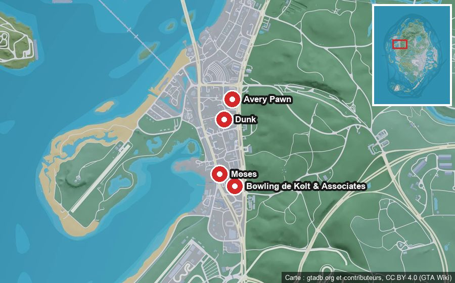
Les braquages du chapitre 2 et les contacts de Port Gellhorn
Déroulé pas à pas
Et Moi Dunk ! (Slam Dunk)
Avant que la mission ne se déclenche, le jeu te laisse du temps libre. Utilise-le.
- Le temps libre : découvre les courses de drones, le circuit auto de la région, et fais quelques braquages pour mettre de l'argent de côté.
- Remplis ton compte BuckMe et épargne régulièrement.
- La préparation : la mission est mouvementée, avec un bâtiment entier à vider. Arrive équipé.
- Le bâtiment : exploite à fond le mode concentration pour ralentir le temps.
- Vise les parties jaunes pour neutraliser sans tuer. Les repères rouges sont les points vitaux, les jaunes les articulations.
- Désarmer plutôt que tuer fait monter ton profil criminel Professionnel.
Course Matinale (Breakfast Run)
C'est un peu comme si le « vrai » Grand Theft Auto commençait ici, avec une mise en scène particulièrement réussie.
- Le braquage : au premier coup, utilise le maximum du temps alloué.
- Les poches : fais les poches des clients pour rentabiliser au maximum la sortie. C'est le genre de détail qui ne se rattrape pas.
Cette mission donne le trophée Trust, et termine automatiquement Play Nurse.
Pause Café (Coffee Break)
- Le switch : tu peux désormais contrôler Jason et Lucia, mais seulement quand ils sont proches l'un de l'autre. C'est la grande nouveauté du chapitre.
- Le temps à deux : profite de toutes les occasions de vous retrouver pour commettre des délits ensemble et passer du temps à deux. Tout va dans la relation.
- La destination : choisissez votre prochaine destination tous les deux. Va au Thrillbilly Mud Club : c'est là que se trouve la prochaine série de missions principales.
Cette mission ouvre aussi les Bret's Target Decks, une collection réservée à Jason (partie 22).
Délits et Délices (Afternoon Delight)
Elle est listée avant le Thrillbilly, mais il y a de grandes chances que tu la fasses après. Les deux sont disponibles en même temps.
- Le strip club : saute par-dessus le grillage avec Jason pour trouver les backstages.
- La scène : propose aux strip-teaseuses de les aider à danser.
- Le coffre : après la séquence, va ouvrir le coffre au fond de la cuisine avec Lucia.
- Le sauvetage : va la chercher avec Jason, dans une petite séquence au corps-à-corps à crever de rire.
Thrillbilly (Thrillbillies)
- Le Mud Park : direction le parc à boue pour découvrir ses activités.
- Les tenues : tu dois acheter des tenues sur place pour les deux personnages. C'est obligatoire pour participer.
- Les courses : prends part aux courses tout-terrain.
- Le contact : tu te fais un nouveau contact, Billy, et tu peux profiter à fond du festival.
Si tu aimes l'offroad, il y a de quoi y passer beaucoup de temps, et c'est relativement rentable.
Self Défense
- La suite directe : avec Billy et sa bande, vous prenez un fourgon dans les chemins étroits de la région.
- La conduite : il va falloir la soigner. Les chemins sont serrés et le fourgon n'est pas une voiture de sport.
- Le panorama : en conclusion, prends le temps d'explorer les montagnes. Il y a de quoi en prendre plein les yeux, et des collectibles à ramasser au passage.
⚠️ Self Défense serait une mission principale du chapitre, juste après Thrillbilly. Billy propose aussi un contrat optionnel appelé Twist Wrist, Smash, Grab : il s'agit probablement de la même mission. À vérifier en jeu.
Prepare for Vice City ⚠️ nom français à vérifier en jeu
- L'objectif : gagner au moins 15 000 $ pendant que Dre'Quan te trouve un logement à Vice City.
- Le dépôt : garde-les sur BuckMe. C'est la condition, et c'est aussi la seule façon de ne pas tout perdre à la première mort.
- Les contrats : n'importe quelle méthode marche, mais les jobs marqués sur la carte sont les plus simples.
| Contrat | Note |
|---|---|
| Thrillbilly | Les courses du Mud Park, rentables |
| Twist Wrist, Smash, Grab | Pour Billy |
| Hit Avery Pawn | Le prêteur sur gages |
| Hit Kingpin Bowling | Le bowling de Kolt & Associates, détaillé ci-dessous |
| Impounded Vehicle | Un véhicule à récupérer à la fourrière |
| Veteran Hunted | Un contrat de chasse |
| Délits et Délices | Le coffre de la cuisine du strip club |
Une fois les 15 000 $ atteints et les autres missions principales du chapitre terminées, ta chambre de motel est marquée comme objectif suivant.
Le bowling de Kolt & Associates (Hit Kingpin Bowling)
⚠️ Attends d'avoir retrouvé Jason avant de t'y lancer. C'est une des premières missions que tu fais en couple, et elle est bien plus simple à deux.
- L'instance : le bâtiment est bourré de bandits, avec un gros coffre-fort au fond.
- Le switch : change de point de vue régulièrement quand tu es en difficulté, pour prendre les ennemis de côté. Ça te donne aussi deux fois plus d'armes dans une même arène.
- Les cloisons : ⚠️ attention, les ennemis tirent à travers les cloisons en contreplaqué placées au centre du bâtiment. Elles ne protègent pas.
- Le fusil à pompe unique : prends-le sur la table au centre du bâtiment. Ne repars pas sans.
- Le coffre : deux solutions.
- Entrer le code 0300.
- Utiliser des explosifs contrôlés à distance. On trouve des bombes collantes à plusieurs endroits au chapitre 2.
- La fuite : prends le pactole et file par la porte de derrière.
Ce braquage donne un trophée, Let's Go Bowling. Un second, Ten Pin, demande d'y faire un drive-by au corps-à-corps.
⚠️ Ce braquage est peut-être une étape obligatoire du chapitre, peut-être optionnel ; il fait en tout cas partie des contrats qui servent à réunir les 15 000 $. Dans les deux cas, fais-le.
Heurts de Départ (Checking Out)
⚠️ Point de non-retour. Lancer cette mission ferme le chapitre 2 et tu perds définitivement le Starlet Motel comme planque. Fais le tour de la région avant : fais un maximum d'argent et vérifie que tu n'as plus rien à faire sur place.
- L'appel : ton partenaire t'appelle au sujet d'un article que Cal a envoyé.
- La chambre : va à la chambre du motel et interagis avec la porte de la salle de bains.
- Le fusil à pompe : prends-le sur le lit. Des policiers corrompus vous ont retrouvés.
- La cafétéria : repousse-les, puis rejoins la cafétéria du motel, où Lucia se trouve.
- La poursuite : le jeu passe sur Lucia. Continue à tirer. Jason prend la route et vole une voiture.
- Tire sur le motard qui fonce sur Lucia, prends sa moto et suis Jason — c'est le point rose sur la minimap. Ne te crashe pas.
- Le saut : quand l'indication apparaît, roule tout près de la voiture et maintiens le bouton pour sauter dedans.
- La fuite : Jason conduit, tu tires sur les voitures de police en Lucia. Vise les pneus.
- Vice City : après la cinématique, vous entrez dans la ville. Le chapitre 3 commence avec Welcome to Vice City, qui débloque le trophée du chapitre 2.
Deux avertissements sur cette mission :
- ⚠️ Bug connu : mourir pendant la poursuite en moto peut faire disparaître Jason comme objectif et te laisser dans une zone de recherche policière dont tu ne peux plus sortir. Relance la mission si ça arrive.
- ⚠️ Tu peux fuir sans Lucia, mais l'abandonner abîme leur relation.
Jason risque d'être à court de Zombix et d'Adrénaline à ce moment-là. Utilise les grenades à fragmentation que tu as en réserve.
Quêtes et lieux
Les activités du Thrillbilly
Le Mud Club n'est pas qu'un décor de mission. Il concentre une bonne partie des activités offroad du jeu : courses tout-terrain, festival, boutique de tenues spécifiques. Les courses uniques et les médailles d'or de défi de course comptent pour le 100 % (partie 23).
Le Gellhorn Raceway et le Boone Speedway sont les deux autres circuits liés à un code de triche : finir premier dans dix courses sur ces trois pistes débloque le code Réparer le véhicule (partie 26).
Les personnages
| Personnage | Rôle |
|---|---|
| Dunk | Celui par qui le chapitre décolle |
| Billy | Le contact du Thrillbilly. Son arc a son propre trophée, The Lone Rider |
| Dre'Quan Priest | Il prépare votre arrivée à Vice City depuis les coulisses |
| Cal Hampton | Il envoie l'article qui déclenche Heurts de Départ |
| Kolt & Associates | Le gang du bowling |
Butin exhaustif
| Nom exact | Type | Où / comment l'obtenir | Utilité |
|---|---|---|---|
| Fusil à pompe unique | Arme unique | Bowling de Kolt & Associates : sur la table au centre du bâtiment | Arme de close combat pour tout le milieu de jeu |
| Coffre du bowling | Argent | Au fond du bowling, code 0300 ou explosifs | Gros apport vers les 15 000 $ |
| Bombes collantes | Explosif | À plusieurs endroits du chapitre 2 | Ouvrir le coffre du bowling sans le code |
| Coffre de la cuisine | Argent | Délits et Délices : au fond de la cuisine du strip club, à ouvrir avec Lucia | Argent |
| Poches des clients | Argent | Course Matinale : pendant le braquage, dans le temps alloué | Rentabilise le braquage |
| Tenues du Thrillbilly | Cosmétiques | À acheter sur place, pour les deux personnages | Obligatoires pour les courses |
| Fusil à pompe du lit | Arme | Heurts de Départ : sur le lit de la chambre de motel | Repousser les policiers corrompus |
| Moto du motard | Véhicule | Heurts de Départ : tire sur lui et prends sa moto | Suivre Jason |
| Zombix | Soin | En boutique et dans les planques | Se soigner. Fais le plein avant Heurts de Départ |
| Adrénaline | Soin | En boutique et dans les planques | Se relever. Fais le plein avant Heurts de Départ |
| Grenades à fragmentation | Explosif | Trouvées et achetées au fil du chapitre | Utiles dans Heurts de Départ |
| Fourgon de Billy | Véhicule | Self Défense : fourni par la mission | Objectif de mission |
Conseils et pièges
Fais le tour avant Heurts de Départ. C'est le vrai piège du chapitre. La région du chapitre 2 reste visitable, mais tu perds ta planque, et revenir coûte du temps. Vends tout, finis les contrats, ramasse les collectibles des montagnes.
Le switch double ton arsenal. Dès Pause Café, changer de personnage en combat te donne accès aux armes de l'autre. Dans le bowling, c'est la différence entre galérer et dominer.
Les cloisons en contreplaqué ne protègent pas. Elles ont l'air d'un couvert, elles n'en sont pas. Les ennemis tirent au travers.
Vise jaune, pas rouge. Neutraliser plutôt que tuer fait monter le profil Professionnel, qui compte pour les braquages ultérieurs et pour le trophée Gunslinger — cinq ennemis en une seule utilisation de la concentration.
Les 15 000 $ ne sont pas un plafond. Tu arrives à Vice City où tout coûte plus cher. Si tu peux partir avec 40 000 $, fais-le.
Sauvegarde avant Heurts de Départ. Le bug de la poursuite en moto est connu, et une sauvegarde propre t'évite de refaire la moitié de la mission.
Alertes
- ⚠️ Point de non-retour : Heurts de Départ ferme le chapitre 2 et te fait perdre le Starlet Motel définitivement.
- ⚠️ Bug connu : mourir pendant la poursuite en moto de Heurts de Départ peut rendre la mission infaisable. Relance-la.
- ⏳ Manquable : le fusil à pompe unique sur la table centrale du bowling.
- ⏳ Manquable : faire les poches des clients pendant Course Matinale.
- ⚠️ Abandonner Lucia pendant Heurts de Départ est possible, et abîme la relation.
- ⚠️ Noms français non publiés : Prepare for Vice City, Twist Wrist, Smash, Grab, Hit Avery Pawn, Hit Kingpin Bowling, Impounded Vehicle, Veteran Hunted.
Check-list
- Courses de drones et circuit auto découverts avant Et Moi Dunk !
- Et Moi Dunk ! : bâtiment vidé, parties jaunes visées
- Course Matinale : temps alloué utilisé à fond, poches des clients faites (trophée Trust)
- Pause Café : switch débloqué, destination choisie
- Délits et Délices : coffre de la cuisine ouvert
- Thrillbilly : tenues achetées pour les deux, courses faites
- Self Défense : fourgon ramené, montagnes explorées
- Bowling de Kolt & Associates : coffre ouvert au 0300, fusil à pompe unique pris (trophées Let's Go Bowling et Ten Pin)
- Hit Avery Pawn, Impounded Vehicle et Veteran Hunted faits
- 15 000 $ réunis et déposés sur BuckMe
- Tour complet de la région fait, tout vendu
- Zombix, Adrénaline et grenades en réserve
- Sauvegarde manuelle avant Heurts de Départ
- Heurts de Départ terminée avec Lucia
Complément
Chapitre 3 : bienvenue à Vice City
L'essentiel
- Le choix qui coûte cher : refuser de confier la statue à Halifax et ne jamais le rappeler te fait perdre les deux tiers de sa quête, définitivement, à la fin du chapitre.
- Ne pas rater : la montre Crowex Octane « Bobby Ambrose », les 600 $ du conteneur SCOOP, et le Surf and Turf à commander pour Lucia.
- L'alligator : pendant Mami Knows Best, il attrape la jambe de Mia. Tire vite ou la mission échoue.
- Avant de partir : gare-toi sous l'auvent de l'appartement Bayside. C'est là que tes voitures sont conservées pour tout le chapitre.
Objectif
Vice City. Le couple s'installe dans un appartement de Bayside prêté par Boobie Ike, et travaille pour lui tant qu'il les héberge. Le chapitre s'appelle Tits Ass Drug Money et c'est le plus long du jeu : 28 missions.
Cette première partie installe tout le monde : Dre'Quan et son label, Boobie et ses collectes, Brian de retour avec sa femme, Mia la mère de Lucia, Tyrone le dealer, et une statue douteuse qui lance l'une des meilleures quêtes du jeu.
Note sur les noms : les titres de missions de cette partie sont donnés en anglais et rassemblés dans les annexes avec la mention « nom français à vérifier en jeu ». Les noms de lieux et de personnages, eux, ne se traduisent pas dans la série.
Itinéraire
Vice City est coupée en deux moitiés reliées par les Rialto Islands. Les quartiers qui comptent dans cette partie :
- Crosstown : le Jack of Hearts, le club de Dre'Quan et Boobie. Ton point de ralliement.
- Bayside : ton appartement, sur Catalan Boulevard. Gare-toi sous l'auvent.
- La Perle : le complexe de Tyrone et le camp de sans-abri au nord-ouest.
- Rockridge : l'appartement de Charles.
- Capri : à l'extrême ouest de la carte, la boutique Evelyn Andrews Antiques et son motel voisin.
- Peacock Bay : le bureau de Mia.
- Hamlet : le quartier de la première maison à vendre de Mia.
- Southside et Stockyard : les livraisons de Dre'Quan et le dockyard.
📍 La zone en images : la carte interactive communautaire en français, utile pour situer chaque quartier — https://gta6map.io/ — et celle d'IGN, plus complète mais en anglais.
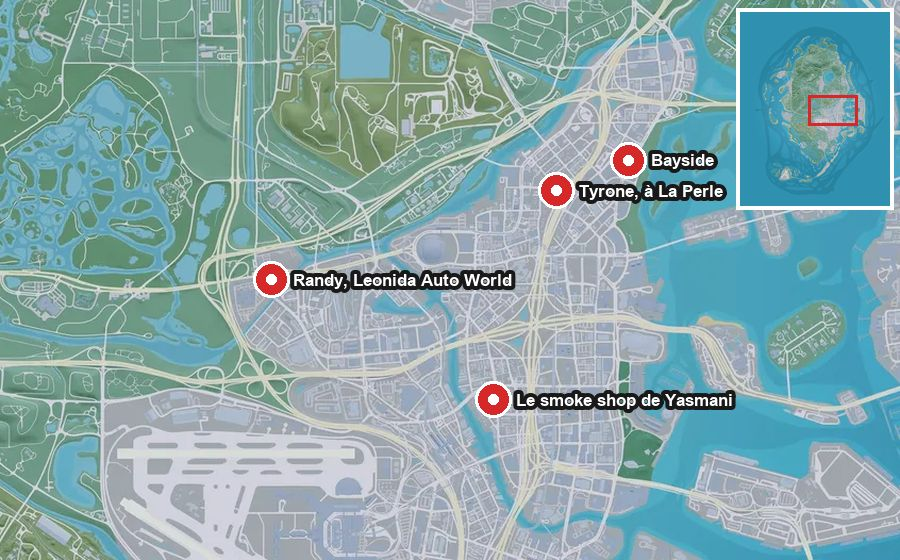
Les contacts de Vice City au chapitre 3
Déroulé pas à pas
Welcome to Vice City
- Le Jack of Hearts : rejoins le club de Crosstown. Parle au videur, puis fais le tour du bâtiment pour retrouver Dre'Quan de l'autre côté.
- Les danseuses : il te propose de l'argent à lancer sur scène. C'est facultatif, accepte si ça t'amuse.
- Boobie Ike : tu rencontres son patron, qui prête au couple un appartement voisin.
- L'appartement de Bayside : gare-toi sous l'auvent. ⚠️ C'est là et seulement là que tes voitures sont conservées pour le reste du chapitre.
- La chambre : monte au deuxième étage et entre par la première porte en face de toi.
Cette mission débloque le trophée du chapitre 2, et Moses t'envoie un message : les Pay 'n' Spray peuvent désormais acheter et enregistrer les voitures à traceur standard.
Dealer's Choice
- Le studio : retourne au Jack of Hearts, monte l'escalier et passe la porte du haut pour entrer dans le studio, puis dans la cabine d'enregistrement.
- Le refrain : Dre'Quan enregistre et te demande ton avis. Réponds ce que tu veux.
- Boobie : suis Dre'Quan à l'étage. Boobie précise que l'appartement vient avec un service à rendre.
- Tyrone : monte dans la voiture de Dre'Quan, roule jusqu'à l'appartement voisin et suis-le jusqu'à la pièce du premier étage, où il discute avec le dealer.
- Le choix du produit : coupé ou pur.
| Choix | Ce qui se passe |
|---|---|
| Coupé (Cut) | Tyrone fait miroiter un bénéfice supplémentaire, mais les acheteurs s'en aperçoivent. Tu peux proposer la marchandise à moitié prix : ils rendent le produit et l'argent |
| Pur (Pure) | Les acheteurs testent et paient sans problème. Deal propre |
Le choix n'a d'effet que sur cette mission.
- Le parc : en chemin, Dre'Quan fait un détour par un grand parc, avec un petit tutoriel de football américain. Renvoie le ballon aux gamins.
- Le deal : roule jusqu'au point de rendez-vous, au sud du Jack of Hearts. Suis Dre'Quan jusqu'au groupe près des voitures et donne le sac quand on te le demande.
- L'acheteur vérifie lentement. Tu peux lui demander d'accélérer.
- Récupère le sac à dos avec l'argent.
- Résoudre le deal pacifiquement donne un bonus de réputation Professionnel.
- L'importun : au retour, un homme prétend que le sac est à lui et t'attaque quoi que tu dises. Assomme-le au corps-à-corps et remonte en voiture.
- Southside : dépose Dre'Quan à une boutique. À mi-chemin, une cinématique montre Cal échouer à casser le disque dur. Il mentionne que Brian avait un contact compétent à Vice City.
Meet the Heders
Elle arrive un ou deux jours après que Cal ait examiné le disque dur. Elle démarre depuis le sac de vêtements de la chambre.
- Le rooftop bar : conduis Lucia jusqu'au restaurant de l'est de Vice City et prends l'ascenseur pour rejoindre Brian et Lori au bar.
- Les verres : prends deux boissons au comptoir et donne-en une à Lucia.
- Quand le serveur arrive, commande le Surf and Turf que Lucia réclame. Petit bonus de relation.
- Brian : une fois les femmes parties, rejoins-le à la rambarde. Tu peux accepter ou refuser son cigare.
- Le van : passe sur Lucia quand le jeu te le propose. Traverse le pont et trouve le van blanc dans le parking de droite. Ouvre ses portes arrière : tu récupères un déguisement et le siège conducteur.
- Le dockyard : roule vers le sud, attends qu'on t'ouvre le portail et gare-toi.
- Le conteneur SCOOP : cherche les conteneurs jaunes. Celui qu'il te faut est au sommet de la pile du milieu.
- Coupe le cadenas avec le nouvel outil de découpe, en gardant la barre mobile dans la zone marquée pour aller plus vite.
- Les autres conteneurs SCOOP s'ouvrent aussi. Le premier contient un Cigare et 600 $ en petites boîtes.
- La poursuite : un gang embarque le conteneur sur une remorque. Prends une moto, rattrape-les en esquivant les tirs depuis l'arrière du camion, et saute sur la remorque.
- La sortie en force : monte dans la voiture et maintiens le bouton jusqu'à ce qu'elle défonce la paroi en marche arrière.
- La fuite : la voiture est très rapide. Reste sur l'autoroute, évite les accidents et attends que la police abandonne.
- Le lockup : va au garage du coin nord-ouest de la ville et rentre dedans.
À partir de là, Jason et Lucia gardent l'outil de découpe définitivement.
Dubious Provenance
⚠️ La mission la plus piégeuse du chapitre. Elle se joue en trois parties, et un mauvais choix te fait perdre les deux dernières.
- Le sac du placard : interagis avec lui dans l'appartement de Bayside pour lancer la mission.
- Capri : roule jusqu'à l'extrême ouest de la carte, ou prends un RideMe.
- Evelyn Andrews : essaie la porte d'entrée de la boutique, tu montes automatiquement. Elle refuse d'examiner la statue — soit un faux incroyable, soit une pièce volée — et te met dehors.
- Benedict Halifax : l'antiquaire britannique te rattrape et propose une expertise discrète, en laissant sa montre de valeur en garantie.
| Choix | Conséquence |
|---|---|
| Accepter | Il prend la statue et te laisse la Crowex Octane « Bobby Ambrose », portable depuis Accessoires → Montres à une penderie. La quête continue normalement |
| Refuser | Tu reçois un objectif optionnel : l'appeler plus tard pour la lui confier. ⚠️ Si tu ne l'appelles jamais, l'objectif disparaît à la fin du chapitre 3 et tu ne joues jamais les parties 2 et 3 |
L'histoire principale continue dans les deux cas, mais tu perds les récompenses supplémentaires.
- Capri à deux : un objectif optionnel te demande d'explorer la ville ensemble. Visiter n'importe quelle boutique ou quitter la ville le valide.
- Le retour à la boutique : Halifax ne rappelle jamais. Reviens à la boutique et laisse le temps passer jusqu'au départ d'Evelyn.
- Tu peux défoncer la porte, mais la voie discrète passe par l'arrière : prends les escaliers, saute sur le toit bas et entre par la fenêtre au-dessus du climatiseur.
- Ouvre la porte à Jason, puis fouille le tiroir du bureau, dans le coin nord de la pièce.
- Le motel : il est juste à côté. Parle à un résident, qui t'indique une chambre à l'étage, côté ouest. Frappe à la porte.
- La confiance : après la scène, tu choisis si tu fais confiance à Halifax. ⚠️ Lui faire confiance est ce qui te permet de jouer la partie 3.
- L'adresse d'Evelyn : elle rappelle avec une information. Retourne à la boutique, elle te donne l'adresse d'une maison au nord-ouest de la ville.
- La poursuite en mer : Halifax s'échappe en bateau. Jason saute sur un Seashark, s'approche et maintient le bouton pour sauter sur son bateau.
- À pied : il se crashe et court. Nage jusqu'au rivage et suis-le. Quand il vole une voiturette de golf, prends la moto de la cour.
- Le gaz lacrymogène : il asperge Jason. Tu passes sur Lucia pendant qu'il court vers sa voiture. Sors, concentration, tire-lui dans la jambe.
- La fin : marche jusqu'à lui pour qu'il s'arrête, appelle Jason depuis le téléphone de Lucia. Quand il arrive, tu récupères la statue et tu choisis de l'abattre ou de l'épargner.
Dans le conteneur de stockage lié à cette quête : environ 2 500 $ en bijoux et en liquide, plus une '32 Hustler garée là, à garder ou à revendre.
Mami Knows Best
- Peacock Bay : va retrouver Mia Caminos, la mère de Lucia.
- Hamlet : monte dans sa voiture et conduis jusqu'au quartier marqué, où elle a sa première maison à vendre.
- La visite : suis-la à l'intérieur et parcours les pièces pendant qu'elle inspecte. Reviens près de l'entrée et aide-la à se relever.
- La pelouse : ramasse les détritus, porte-les jusqu'à la benne bleue et jette-les. Continue pendant qu'elle téléphone.
- Le matelas : rejoins-la dans la cour arrière. Interagis avec le matelas et tapote le bouton pour l'aider à le sortir de la piscine.
- L'alligator : ⚠️ il jaillit et attrape la jambe de Mia. Tire vite pour la sauver.
- Les M7 : les membres du gang voisin vous mettent en joue et vous disent de dégager.
- La vengeance : une fois partis, Mia propose de se venger. Monte dans la pelleteuse d'en face, conduis-la jusqu'à la maison et démolis le bâtiment et les voitures de l'allée.
- Ferme la pince pour saisir et écraser les voitures.
- Le bureau : quand les dégâts suffisent, remonte dans la voiture de Mia et conduis jusqu'à son bureau.
South Leonida Real Estate
Elle arrive quand Mia recontacte Lucia, ce qui peut prendre plusieurs jours en jeu. Elle démarre depuis le mot sur la porte de son bureau de Hamlet.
- La maison : Mia te demande de la retrouver là-bas. Entre la chercher, puis ressors. Les M7 l'embarquent.
- La filature : prends sa voiture et suis le véhicule des ravisseurs à distance. ⚠️ Si le marqueur au-dessus se remplit de jaune, tu es trop près.
- La ruelle : la voiture s'arrête dans une arrière-cour bloquée par un van. Continue à pied et passe par la porte du côté sud.
- La négociation : Mia s'en sort en proposant de trouver un nouveau quartier général au chef des M7, Terro.
- La tournée : conduis le groupe à chaque propriété qu'elle propose, prudemment, puis suis Mia dans la visite de la dernière maison jusqu'à la cour arrière.
- Viper : le lieutenant de Terro débarque avec sa bande et ouvre le feu.
- ⚠️ Tu n'as que ton pistolet de départ. Ramasse les armes des ennemis tombés.
- Nettoie la cour, puis l'avant de la maison.
- L'otage : retourne vite à l'intérieur, où Viper tient Mia. Pendant qu'il parle, sors ton pistolet et tire pour terminer.
Mia t'envoie 2 000 $, mais seulement de nombreux jours en jeu plus tard.
Here, Kitty Kitty
- Tyrone : reviens le voir au complexe d'appartements de La Perle, en Jason. Il veut que tu retrouves Charles, qui habite Rockridge.
- Le choix de la méthode :
| Méthode | Comment |
|---|---|
| Soudoyer | Paie 20 $ à l'homme près de la porte pour un tuyau. Il faut avoir le liquide sur toi |
| Entrer par effraction | L'appartement est vide. Inspecte le reçu de l'Aline's Thrift Store dans la chambre, Tyrone te donne l'adresse |
- Le camp : va au camp de sans-abri de la bordure nord-ouest de La Perle et défonce la porte du rez-de-chaussée.
- La course : Charles détale. Suis-le par l'escalier du fond.
- ⚠️ Si des vagabonds t'attaquent, assomme-les au corps-à-corps plutôt que de tirer.
- La chute : au dernier étage, Charles passe par-dessus le mur. Redescends par l'escalier et fouille son corps : tu trouves un sac de Kitty Litter.
Send Money to Lorena
- Le virement : une petite tâche scénarisée. Envoie de l'argent à Lorena depuis ton téléphone. Elle revient une seconde fois plus loin dans le chapitre (partie 8).
Quêtes et lieux
Les personnages qui arrivent
| Personnage | Rôle |
|---|---|
| Boobie Ike | Le patron du label Only Raw Records. Il vous héberge, vous travaillez pour lui |
| Dre'Quan Priest | Le producteur. Il monte le label et gère les Real Dimez |
| Tyrone | Le dealer de La Perle. Son arc a son propre trophée, Spin On This! |
| Mia Caminos | La mère de Lucia, agent immobilier à Peacock Bay |
| Lori Heder | La femme de Brian |
| Evelyn Andrews | L'antiquaire de Capri |
| Benedict Halifax | L'antiquaire britannique, et le choix le plus piégeux du chapitre |
| Randy | Le patron du showroom. Son arc a son propre trophée, Supply & Demand |
| Yasmani | Le receleur du smoke shop. Il paie plus que les autres pour les bijoux et les billets marqués |
Les gangs de Vice City
| Gang | Où |
|---|---|
| M7 | Hamlet, dans le quartier des maisons de Mia |
| San4San | Rockridge, aux Venture Apartments |
| Cash City | L'entourage de DWNPLY |
| La Polilla Negra | Le cartel. L'ennemi de tout le chapitre |
| Kolt & Associates | Hérité du chapitre 2 |
Braquer une opération illégale de chaque gang donne le trophée Pest Control (partie 21).
Le profil criminel
Le jeu note ta façon de travailler sur une échelle : Professionnel, Endurci (Hardened), Violent, Psychopathe (Psycho).
Ce qui fait monter Professionnel : désarmer au lieu de tuer, tirer dans les jambes ou les genoux, viser les pneus et les moteurs des voitures de police, résoudre un deal pacifiquement, ne pas tuer un interrogé.
Ce qui fait descendre vers Psychopathe : tuer les conducteurs, écraser des cyclistes, défoncer des pierres tombales, et faire du mal aux chiens — c'est un très gros malus.
Butin exhaustif
| Nom exact | Type | Où / comment l'obtenir | Utilité |
|---|---|---|---|
| Appartement de Bayside | Planque | Welcome to Vice City | Ta planque de tout le chapitre 3 |
| Sac à dos de Dre'Quan | Argent | Dealer's Choice : récupéré après le deal | Argent de la mission |
| Outil de découpe | Outil | Meet the Heders : fourni au dockyard | Gardé définitivement par les deux personnages. Coupe les cadenas |
| Cigare | Consommable | Meet the Heders : dans le premier conteneur SCOOP ouvert en plus | Régénère la concentration |
| 600 $ en petites boîtes | Argent | Meet the Heders : dans le même conteneur SCOOP | Argent |
| Déguisement du van | Cosmétique | Meet the Heders : en ouvrant les portes arrière du van blanc | Passer le portail du dockyard |
| Crowex Octane « Bobby Ambrose » | Montre | Dubious Provenance : laissée en garantie par Halifax si tu acceptes | Montre de luxe. Compte pour les styles découverts |
| Bijoux et liquide du conteneur | Argent | Dubious Provenance : dans le conteneur de stockage | Environ 2 500 $ |
| '32 Hustler | Véhicule | Dubious Provenance : garée au conteneur de stockage | À garder ou à revendre |
| La statue | Objet de scénario | Dubious Provenance : récupérée à la fin de la poursuite | Objet central de la quête |
| Kitty Litter | Marchandise | Here, Kitty Kitty : sur le corps de Charles | Objectif de mission |
| Reçu de l'Aline's Thrift Store | Indice | Here, Kitty Kitty : dans la chambre de Charles, si tu entres par effraction | Donne l'adresse sans payer |
| Pelleteuse | Véhicule | Mami Knows Best : en face de la maison | Démolir la propriété des M7 |
| Armes des M7 | Armes | South Leonida Real Estate : sur les ennemis tombés | Indispensable, tu n'as que ton pistolet |
| RideMe | Service | Disponible depuis le téléphone | Se déplacer sans voiture, utile pour Capri |
Conseils et pièges
Accepte de confier la statue. C'est le conseil le plus important de cette partie. Refuser n'est jouable que si tu penses à rappeler Halifax, et l'objectif disparaît sans avertissement à la fin du chapitre. Tu perdrais la montre, les deux tiers de la quête et le contenu du conteneur.
Gare-toi sous l'auvent de Bayside. C'est le seul endroit où tes voitures sont conservées pendant le chapitre 3.
Ne tire pas sur les chiens. Un chien garde souvent un portail. Lui faire du mal a un très gros effet négatif sur ton profil criminel.
Yasmani paie mieux. Dès qu'il est débloqué (partie 8), c'est chez lui que tu refourgues bijoux et billets marqués.
Les missions de Mia prennent du temps. South Leonida Real Estate peut attendre plusieurs jours en jeu, et ses 2 000 $ arrivent encore plus tard. Ne reste pas planté devant son bureau.
Vise les jambes, partout. Le profil Professionnel se construit mission après mission, et il compte pour les braquages de la fin du chapitre.
Prends le RideMe pour Capri. C'est à l'extrême ouest de la carte. Le trajet en voiture est long et sans intérêt.
Alertes
- ⚠️ Perte définitive : refuser la statue à Halifax et ne jamais le rappeler supprime les parties 2 et 3 de Dubious Provenance à la fin du chapitre 3, avec leurs récompenses.
- ⚠️ Noms français non publiés : toutes les missions de cette partie. Elles sont rassemblées dans les annexes.
- ⏳ Manquable : la montre Crowex Octane, si tu refuses la proposition d'Halifax.
- ⏳ Manquable : les 600 $ et le Cigare des conteneurs SCOOP supplémentaires de Meet the Heders.
- ⏳ Manquable : le Surf and Turf à commander pour Lucia au rooftop bar.
- ⚠️ Échec de mission : ne pas tirer assez vite sur l'alligator qui attrape Mia pendant Mami Knows Best.
- ⚠️ Filature ratée : suivre les ravisseurs de trop près pendant South Leonida Real Estate. Surveille le marqueur jaune.
Check-list
- Welcome to Vice City : voiture garée sous l'auvent de Bayside
- Dealer's Choice : choix coupé ou pur fait, deal résolu pacifiquement
- Meet the Heders : Surf and Turf commandé, conteneur SCOOP coupé
- Conteneurs SCOOP supplémentaires ouverts : Cigare et 600 $
- Outil de découpe acquis définitivement
- Dubious Provenance partie 1 : statue confiée à Halifax, montre Crowex Octane obtenue
- Capri explorée à deux
- Dubious Provenance partie 2 : entrée par la fenêtre, tiroir du bureau fouillé
- Confiance accordée à Halifax au motel
- Dubious Provenance partie 3 : poursuite terminée, statue récupérée
- Conteneur de stockage vidé : 2 500 $ et '32 Hustler
- Mami Knows Best : alligator abattu, maison des M7 démolie
- South Leonida Real Estate : filature réussie, Viper abattu, Mia sauvée
- Here, Kitty Kitty : Charles retrouvé, Kitty Litter récupéré
- Send Money to Lorena faite
Complément
Chapitre 3 : les contrats, le label et l'équipe de Raul
L'essentiel
- La course à ne pas manquer : Race Against Yago apparaît avec un sablier et disparaît au bout d'un moment. Elle n'est jouable qu'à ce point de l'histoire.
- Ne pas rater : le Klose K17 silencieux dans le coffre de voiture au début de Car Service, et Yasmani, qui paie mieux que tous les autres receleurs.
- Le piège : ne tire jamais sur le chien du chop shop. C'est le plus gros malus de profil criminel du jeu.
- Avant de partir : Credit Check débloque le vol de billets marqués dans toutes les banques et tous les Payday Loans. C'est le robinet à argent du jeu.
Objectif
Cette partie installe les deux moteurs de la fin du jeu : le label de Dre'Quan, avec les Real Dimez et la guerre contre DWNPLY, et surtout l'équipe de Raul Bautista, qui recrute Jason et Lucia pour un casse bien plus gros que tout ce qu'ils ont fait.
Tu travailles en parallèle pour Boobie, pour Randy et pour Yasmani. C'est le cœur du jeu : beaucoup d'argent, beaucoup de contrats, et la carte enfin complètement ouverte.
Note sur les noms : comme pour la partie précédente, les titres de missions sont donnés en anglais faute de localisation française publiée, et rassemblés dans les annexes.
Itinéraire
Les quartiers de cette partie :
- Salton, au sud de Vice City : le chop shop de Car Service, et le rassemblement de courses de Yago.
- Leonida Auto World, au coin nord-ouest de Vice City : le showroom de Randy.
- Waxman Island : le garage à code de First Impressions.
- Ocean Beach et Washington Beach : les Hathaway Apartments, la Fleeca, le point de rendez-vous de Raul.
- Stockyard : le Courtyard Bar et la salle de planification de Raul, près du magasin de tuning Vice Vinyl.
- La Perle : le chantier naval.
- Downtown : le magasin Eris sur le front de mer.
- Rialto Islands : le passage entre les deux moitiés de la ville, avec son pont à moitié relevé.
📍 La zone en images : la carte interactive française pour situer les quartiers — https://gta6map.io/
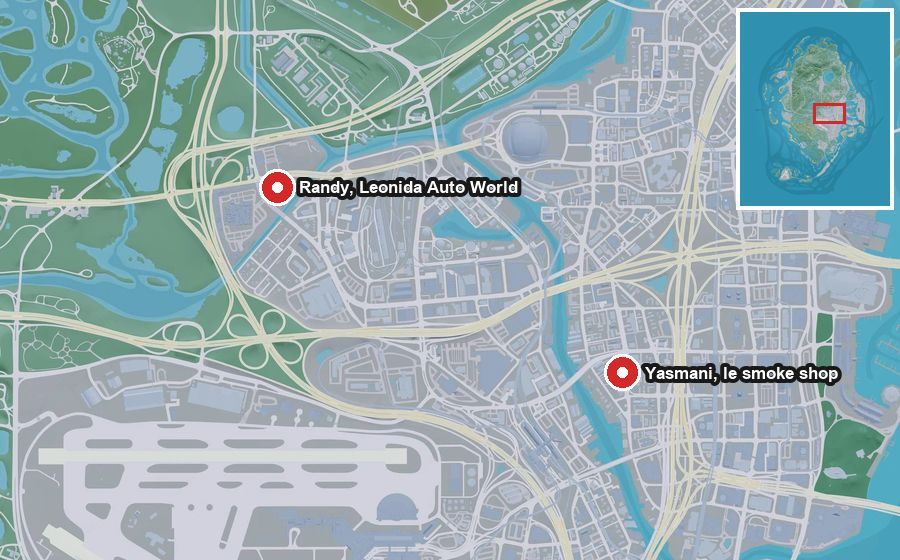
Les deux receleurs du chapitre
Déroulé pas à pas
Car Service
Elle arrive environ un jour après Meet the Heders, par un message de Raul depuis un numéro masqué. Elle démarre près du marqueur de Salton, au sud de Vice City. Tu joues Lucia.
- L'équipement : près du point de départ, le coffre d'une voiture contient des grenades flash et un pistolet Klose K17 silencieux. Le silencieux t'aide énormément à rester discrète.
- L'entrée du chop shop : la voie facile passe par le van blanc du côté nord. Grimpe dessus et marche sur le toit métallique qui fait le tour de la cour.
- Les gardes : surveille les deux hommes qui chargent le van au milieu et les deux gardes aux portails. Si une bagarre éclate, d'autres membres du gang arrivent en voiture.
- Le chien : ⚠️ un chien attend généralement près d'un des gardes. Ne lui tire pas dessus à moins qu'il n'attaque. Faire du mal aux chiens a un très gros effet négatif sur ton profil criminel.
- Le Schafter V12 : il est garé au milieu de la zone couverte, à côté de la petite pièce. Monte dedans et sors avant l'arrivée de la police.
- Si tu es repérée, sème-les avant de livrer.
- Leonida Auto World : conduis jusqu'au showroom du coin nord-ouest de Vice City. Entrer dans le parking déclenche la cinématique finale.
Récompense : 3 000 $. Après ça, Randy devient un point de dépôt de véhicules : il prend les voitures à traceur standard et les modèles de sa liste de requêtes.
Send More Money to Lorena
- Le second virement : la suite de la petite tâche de la partie précédente. Un passage par le téléphone.
Top Billing
Elle arrive après Car Service. Dre'Quan t'invite au Jack of Hearts pour voir les Real Dimez se produire.
- Les backstages : tu entres automatiquement. Retrouve Dre'Quan dans le couloir à droite de l'escalier des missions précédentes.
- La recherche : tu passes sur Lucia. Demande à l'hôte de l'entrée : les Dimez ont été jetées dehors.
- La dispute : sur le parking, Bae-Luxe et Roxy se disputent. Roxy part en trombe. Monte avec les autres et suis-la jusqu'à ce qu'un train vous coupe la route.
- Peewees : Dre'Quan propose de manger. Entre, commande pour le groupe au comptoir, puis retourne à la voiture de Bae-Luxe quand ils décident de rattraper Roxy.
- La house party : roule jusqu'à la maison au sud, près du VCIA, et entre par l'arrière.
- Jacki : elle bloque la porte de la pièce où se trouve Roxy. Va dans la cuisine à l'autre bout, où son chien gratte à la porte, et laisse-le sortir dans le jardin. Jacki s'en va s'en occuper.
- Kaamal : à l'intérieur, Roxy discute avec lui. Quand il se lève, assomme-le au corps-à-corps pour convaincre Roxy de partir avec vous.
- Le compteur : tu passes sur Jason, dehors. Ouvre le boîtier électrique vert du coin de trottoir, regarde son côté gauche et bascule l'interrupteur pour plonger la maison dans le noir.
- La sortie : repasse sur Lucia et suis Roxy dehors.
Boobie Time
Elle se débloque après la première partie de Dubious Provenance. Va au Jack of Hearts en Jason. Tu joues Jason seul.
- Le volant : suis Boobie dehors et prends le volant de sa voiture.
- Première collecte : quelques rues au sud. Attends pendant qu'il parle aux hommes du parking.
- Deuxième collecte : court trajet au sud-ouest. Klaxonne et attends qu'il parle à l'homme de l'escalier.
- Le centre-ville : roule au sud et gare-toi à côté du bâtiment près de la rivière.
- Le vol : des voleurs arrachent le sac de la voiture. Jason les poursuit en Seashark sur la rivière.
- Ils tournent dans un cul-de-sac en tirant, ce qui les rend plus faciles à toucher.
- Roule sur le sac pour le récupérer.
- Le retour : remonte la rivière, laisse le Seashark et remonte dans la voiture de Boobie.
- Yasmani : traverse la rivière jusqu'au smoke shop. Entre avec Boobie pour le rencontrer.
Yasmani devient un point de dépôt, et il paie plus que les autres receleurs pour les bijoux et les billets marqués. C'est chez lui qu'il faut écouler.
First Impressions
Elle se débloque après Car Service. Raul te demande de récupérer une voiture et de le retrouver au garage de Waxman Island, avec Jason et Lucia.
- Le code du garage : utilise le panneau murail et entre le code 2404. Le jeu passe sur Lucia, qui monte dans la voiture.
- Le rendez-vous : roule jusqu'au point du côté sud d'Ocean Beach. Dès que Raul est monté, la police arrive.
- La fusillade : en Jason, tire en arrière pendant que Lucia conduit. Après le crash, tiens les agents à distance de la voiture, puis passe sur Lucia.
- La marche arrière : recule jusqu'à la rue et continue.
- Rialto Islands : fuis vers les îles du milieu de la ville pendant que Jason et Raul tirent. Évite les voitures de police.
- Sauter le pont à moitié relevé sème les flics d'un coup.
- Le changement de véhicule : entre dans le parking marqué, sors vite et prends le van garé à côté.
- La livraison : conduis Raul jusqu'au point de dépôt de Bayside.
Récompense : 3 000 $.
Pour garder un profil Professionnel ou Endurci, vise les pneus et les moteurs pour détruire les voitures de patrouille, et tire dans les jambes des agents plutôt que de les tuer. Tirer sur les conducteurs marche aussi, mais pousse le profil vers Violent. Soigne Jason depuis l'inventaire si sa santé descend.
Caught Slipping
Elle démarre automatiquement la prochaine fois que tu essaies d'entrer dans l'appartement de Bayside, après Boobie Time et First Impressions.
- Le premier voleur : en Jason, poursuis-le à travers le chantier voisin. Sors ton arme, concentration, tire-lui dans les jambes.
- Le sac : cours jusqu'à lui et fouille le sac.
- Le second voleur : tu passes sur Lucia. Même méthode : concentration et tir dans les jambes, puis fouille le sac qu'il laisse tomber.
- Big House Storage : Jason et Lucia se retrouvent devant l'appartement. Roule au sud jusqu'au bâtiment, suis Jason à l'intérieur et prends l'ascenseur jusqu'au box qu'il a acheté.
Crosstown Traffic
Elle se débloque après Car Service et un appel de Raul. Tu peux la lancer en Lucia au Courtyard Bar de Stockyard ou en Jason au chantier naval de La Perle : l'un ou l'autre la démarre pour les deux.
- Les bateaux : Jason suit les bateaux sur la rivière à moto. Reste sur les chemins de terre le long de la berge.
- Le métro : au point de dépôt, tu passes sur Lucia, qui rate son train. Sprinte sous les voies aériennes indiquées sur la minimap jusqu'à la station suivante, monte l'escalier et embarque dans la voiture de queue.
- Le frère Guardia : avance jusqu'à l'avant de la voiture et intimide le membre du gang. Une fois à terre, mets-lui la pression et prends son téléphone pour qu'il passe l'appel.
- Le dock : en Jason, élimine les deux tireurs du dock et remonte sur la moto. Suis le chemin — Karim te dit de tourner à droite au pont — jusqu'à ce qu'un saut te fasse atterrir sur un bateau.
- L'abordage : tire d'abord sur l'équipage du bateau le plus proche, puis sur le tireur du bateau cible. Saute quand tu es assez près.
- Le train : de retour avec Lucia, des membres du gang attaquent dans le wagon. Assomme-les au corps-à-corps, puis appuie sur le bouton d'arrêt d'urgence à l'arrière du train avant la station suivante.
- La défense du bateau : Lucia saute sur le bateau pendant que Jason conduit.
- Ouvre les sièges arrière : tu y trouves un fusil d'assaut et un gilet pare-balles.
- Les munitions sont illimitées sur cette séquence.
- Tire sur les conducteurs des Seashark et des bateaux qui vous poursuivent, puis sur les garde-côtes.
- Tire sur le pilote de l'hélicoptère à travers le pare-brise : il tombe immédiatement.
- La poursuite se termine quand Karim lâche des conteneurs depuis un pont.
Récompense : 3 000 $.
Credit Check
Elle se débloque en terminant Crosstown Traffic. Raul t'invite à rencontrer son équipe : va avec Jason et Lucia au marqueur près du magasin de tuning Vice Vinyl et utilise l'interphone.
- L'équipe : après Raul, monte voir Andrea et choisis une des deux paires de masques sur la table.
- Karim : parle-lui de l'autre côté de la pièce et prends le Dye Pack Jammer sur le bureau.
- À partir de là, tu peux voler les billets marqués dans les banques et les boutiques Payday Loans. C'est le déblocage le plus rentable du jeu.
- Prends aussi des bombes collantes sur le bureau voisin si besoin.
- La Fleeca de Washington Beach : sors, Felipe a une voiture prête. Roule jusqu'à la banque.
- ⚠️ Équipe ton masque depuis l'inventaire avant d'entrer.
- Menace les gardes, puis vide les quatre tiroirs-caisses marqués derrière le comptoir et repars.
- La deuxième banque : Karim marque la succursale suivante. Reste à l'écart de la zone de recherche autour de la première.
- Le jeu t'apprend à dire à ton partenaire d'attendre dans la voiture comme chauffeur de fuite. Entre seul, masque en place.
- Ouvre la porte de derrière au Snap Gun ou en force : l'alarme est coupée.
- Menace le guichetier pour le code du coffre et vide le tiroir-caisse.
- Fais sauter la porte intérieure à l'explosif, ouvre le petit coffre au code ou avec une autre charge, et cours à la voiture.
- La troisième banque : la plus grande succursale est plus au sud.
- Gare-toi face à la route pour une sortie propre et remets le masque.
- Si le sac d'un personnage est plein, passe à l'autre.
- Menace les nombreux gardes rapidement, puis prends les billets marqués des quatre tiroirs.
- La fuite : l'alarme se déclenche et la sécurité sort par l'arrière. Dégage-toi en tirant et laisse tomber le coffre : la police arrive.
- Séparez-vous pour diviser la police, semez-la, et rentrez à l'appartement de Bayside.
- Après une courte scène, réponds à la porte pour terminer.
Récompense : 6 000 $. Si un garde sort une arme, désarme-le ou tire-lui dans les genoux plutôt que de le tuer, pour protéger ton profil Professionnel.
Les optionnelles de cette partie
-
Get Your Wheels : disponible après Mami Knows Best. Va te procurer un véhicule à toi à Vice City.
-
Yasmani's Jewelry Jobs : disponible après Boobie Time. Une série de contrats de bijouterie pour Yasmani. C'est aussi le meilleur moyen de préparer le trophée Sneakthief — braquer une bijouterie sans être repéré.
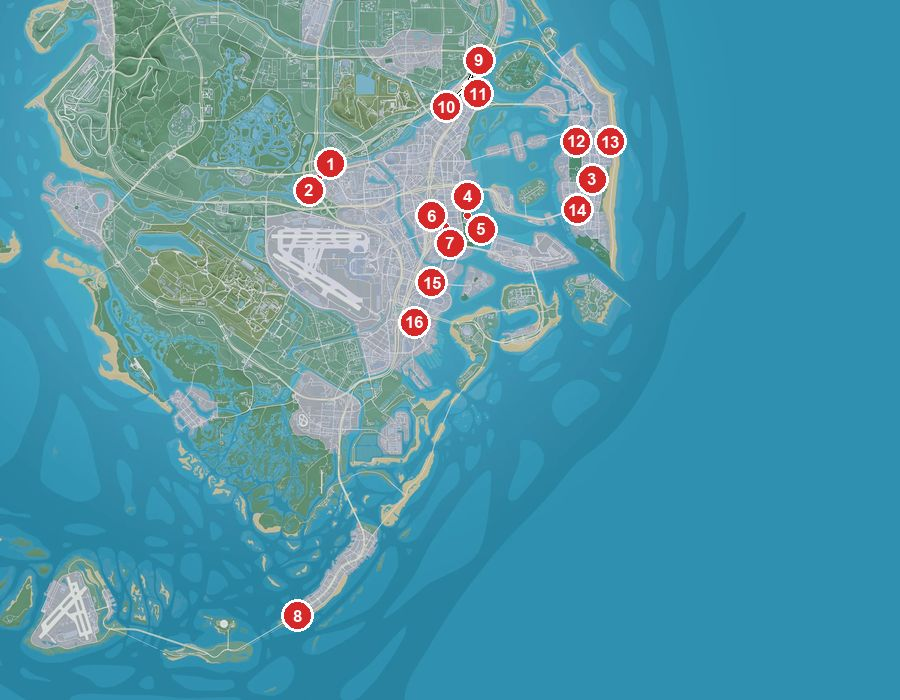
Les 16 bijouteries que le wiki place sur la carte, du nord au sud (1 à 8 : modestes ; 9 à 16 : de luxe) — 1. The Jewelry Place ; 2. Crown Jewels ; 3. Rococo Rich ; 4. All That Glitters ; 5. All That Glitters ; 6. Richardson Jewelry & Diamonds ; 7. Icegem Diamonds & Watches ; 8. The Siren's Chest ; 9. Covgari ; 10. Roval Jewelry ; 11. Blanc & Giroux ; 12. Ayoka Jewelers ; 13. Marshal's ; 14. Legendary Custom Jewelry ; 15. Plush ; 16. Donovan Banks & Co. -
Race Against Yago : manquable et limitée dans le temps.
- Elle se débloque après Bumper to Bumper, puis plusieurs jours en jeu passent avant le message de Yago à Jason.
- Elle apparaît à Vice City avec une icône de sablier. Fais-la dès qu'elle apparaît : elle disparaît quand le sablier se vide, et elle n'est jouable qu'à ce moment de l'histoire.
- Va au rassemblement de Salton, parle à Santiago et choisis la deuxième course, Freeway Run. Loue une voiture et termine.
- Gain : jusqu'à 3 800 $ pour une première place.
- ⚠️ La fiche de cette mission se contredit sur sa nécessité pour le 100 % : son encadré dit oui, son texte dit non. À vérifier en jeu.
Quêtes et lieux
Les trois receleurs
| Receleur | Où | Ce qu'il prend |
|---|---|---|
| Yasmani | Le smoke shop, après Boobie Time | Bijoux et billets marqués. Il paie le mieux |
| Randy | Leonida Auto World, nord-ouest, après Car Service | Véhicules à traceur standard et les modèles de sa liste de requêtes |
| Les Pay 'n' Spray | Partout, après Welcome to Vice City | Achètent et enregistrent les voitures à traceur standard |
L'équipe de Raul
| Membre | Rôle |
|---|---|
| Raul Bautista | Le cerveau du casse |
| Andrea | Les masques et les contacts |
| Karim | La logistique, les explosifs, le Dye Pack Jammer |
| Felipe | Les véhicules |
| Nicole Park | L'experte en sécurité, recrutée dans la partie suivante |
Le vol de billets marqués
C'est le système d'argent le plus important du jeu, et il s'ouvre ici. Une fois le Dye Pack Jammer en main, les billets marqués se volent dans les banques et les Payday Loans, puis se blanchissent chez un receleur. Le compteur du 100 % demande 250 000 $ de billets marqués écoulés, et le trophée Dime on the Dollar la même somme (partie 20).
Les Bank Jobs et les Payday Loan Jobs se débloquent précisément après Credit Check : 22 banques et 7 Payday Loans à faire entièrement (partie 21).
Butin exhaustif
| Nom exact | Type | Où / comment l'obtenir | Utilité |
|---|---|---|---|
| Klose K17 | Pistolet silencieux | Car Service : dans le coffre d'une voiture près du point de départ | Infiltration du chop shop et de tout le milieu de jeu |
| Grenades flash | Explosif | Car Service : même coffre | Neutraliser sans tuer |
| Schafter V12 | Véhicule | Car Service : au milieu de la zone couverte du chop shop | À livrer à Leonida Auto World |
| Dye Pack Jammer | Outil | Credit Check : sur le bureau de Karim | Débloque le vol de billets marqués dans tout le jeu |
| Masques | Équipement | Credit Check : sur la table d'Andrea, deux paires au choix | Obligatoires pour braquer une banque |
| Bombes collantes | Explosif | Credit Check : sur le bureau voisin de Karim | Ouvrir les portes et les coffres |
| Snap Gun | Outil | Utilisé pendant Credit Check | Ouvrir les portes de service |
| Billets marqués | Argent | Les quatre tiroirs marqués de chaque banque | À écouler chez Yasmani |
| Fusil d'assaut | Arme | Crosstown Traffic : dans les sièges arrière du bateau | Munitions illimitées sur la séquence |
| Gilet pare-balles | Protection | Crosstown Traffic : même endroit | Survivre à la poursuite |
| Téléphone du frère Guardia | Objet de scénario | Crosstown Traffic : sur le membre du gang, dans le train | Passer l'appel |
| Sacs des voleurs | Argent | Caught Slipping : à fouiller sur chaque voleur | Récupérer ce qui a été volé |
| Box de Big House Storage | Propriété | Caught Slipping : acheté par Jason | Stockage |
| Van de Rialto Islands | Véhicule | First Impressions : garé près du parking marqué | Changer de véhicule pour semer la police |
| Gain de Yago | Argent | Race Against Yago : selon la place | Jusqu'à 3 800 $ |
Conseils et pièges
Le Klose K17 change tout. Ce pistolet silencieux est gratuit, posé dans un coffre, au début d'une mission d'infiltration. Ne le laisse pas.
Masque avant d'entrer, toujours. Pendant Credit Check, oublier de l'équiper depuis l'inventaire avant d'entrer dans une banque gâche le braquage.
Deux sacs valent mieux qu'un. Dans la troisième banque, quand le sac d'un personnage est plein, passe à l'autre. Tu doubles le butin.
Séparez-vous pour semer la police. La mécanique est enseignée pendant Credit Check et elle reste valable tout le jeu : deux fuyards divisent les patrouilles.
Écoule chez Yasmani. Dès qu'il est débloqué, c'est le meilleur taux du jeu pour les bijoux et les billets marqués.
Surveille les sabliers. Race Against Yago n'est pas la seule occasion limitée dans le temps du chapitre. Une icône de sablier sur la carte veut dire « maintenant ou jamais ».
Reste loin de la zone de recherche de la banque précédente. Pendant Credit Check, enchaîner trop vite te fait arriver à la deuxième banque avec la police déjà sur le dos.
Alertes
- ⏳ Manquable et limitée dans le temps : Race Against Yago. Icône de sablier, jouable uniquement à ce point de l'histoire.
- ⚠️ Gros malus de profil criminel : tirer sur le chien du chop shop pendant Car Service.
- ⏳ Manquable : le Klose K17 silencieux et les grenades flash du coffre, au début de Car Service.
- ⏳ Manquable : le fusil d'assaut et le gilet pare-balles des sièges arrière du bateau, pendant Crosstown Traffic.
- ⚠️ Noms français non publiés : toutes les missions de cette partie.
Check-list
- Car Service : Klose K17 et grenades flash pris, chien épargné, Schafter V12 livré
- Send More Money to Lorena faite
- Top Billing : chien de Jacki libéré, Kaamal assommé, compteur coupé
- Boobie Time : sac récupéré au Seashark, Yasmani rencontré
- First Impressions : code 2404 entré, pont de Rialto Islands sauté, Raul livré
- Caught Slipping : les deux voleurs arrêtés aux jambes, les deux sacs fouillés
- Crosstown Traffic : fusil d'assaut et gilet pris dans les sièges arrière, hélicoptère abattu
- Credit Check : Dye Pack Jammer obtenu, les trois banques faites, les quatre tiroirs de chacune vidés
- Vol de billets marqués débloqué
- Get Your Wheels faite
- Yasmani's Jewelry Jobs lancées
- Race Against Yago faite dès l'apparition du sablier
- Profil criminel maintenu en Professionnel ou Endurci
Complément
Chapitre 3 : la préparation et le braquage du cartel
L'essentiel
- Le braquage : The Cartel Heist, dix objectifs, 120 000 $. Le plus gros coup du jeu jusque-là.
- La chaîne à comprendre : chaque caisse sauvée dans Company Property donne une charge explosive en plus dans Hidden Charges, et chaque charge posée donne plus de temps dans le braquage.
- Ne pas rater : le pistolet de Monty, une variante qui ne s'obtient que en revenant dans la pièce photo, et le Kalinga .50 de Gil.
- Avant de partir : entraîne-toi au perçage de coffre chez Raul autant que tu veux. Les trois mêmes gestes servent pendant le braquage.
Objectif
Tout converge. Nicole Park est recrutée, le plan est bouclé, les tours relais sautent et l'équipe attaque la Sinfrontera National Bank, où La Polilla Negra blanchit son argent.
En parallèle, Dre'Quan règle ses comptes avec DWNPLY, Boobie récupère sa marchandise, et Brian rend un dernier service. Douze missions, et la fin du plus long chapitre du jeu.
Note sur les noms : les titres sont donnés en anglais faute de localisation française publiée, et rassemblés dans les annexes.
Itinéraire
- Tequesta : la Sinfrontera National Bank, la cible.
- Stockyard : la salle de planification de Raul et son enceinte, où l'on s'entraîne au coffre.
- Ocean Beach : les Hathaway Apartments et leur parking fermé.
- Waning Sands, dans le comté de Leonard : la maison de Nicole Park.
- Hamlet : le bar Skeeter's au sud, et l'aérodrome plus au sud encore.
- Watson Bay : Sloppy Molly's et le combat de coqs clandestin.
- Peacock Estates, au sud lointain : le manoir de Gil.
- Rockridge : les Venture Apartments de San4San.
- Crosstown et Downtown : le Jack of Hearts, le magasin Eris, le Stockyard Speedshop et les trois tours relais.
📍 La zone en images : la carte interactive française — https://gta6map.io/
Déroulé pas à pas
Steal the Zorrusso for Randy
Elle se débloque après Crosstown Traffic. Randy te demande de voler une voiture garée aux Hathaway Apartments d'Ocean Beach.
- Le mur : la voiture est dans le parking clos de l'immeuble. Escalade le mur. Jason ou Lucia appelle Randy automatiquement.
- Le Key Cloner : Randy explique que la voiture a un traceur avancé et t'envoie l'outil. Ouvre le téléphone et choisis l'option d'installation de
key_cloner_v1.6.9. Il s'installe pour les deux personnages. - Le Zorrusso : il est au rez-de-chaussée, côté est. Utilise la portière, puis le Key Cloner.
- Comme avec le Slim Jim, pousse dans la bonne direction quand l'indicateur devient rose pour cloner la clé.
- Le traceur : roule jusqu'au showroom de Randy. L'icône rouge au-dessus de la minimap est le traceur.
- ⚠️ Si tu roules trop lentement, sa barre se remplit et ta position est envoyée à la police.
- Près du showroom, l'icône devient grise : le traceur se coupe.
- Le garage : fais le tour du parking et rentre dans le garage.
- La liste de souhaits de Randy : suis-le jusqu'au tableau. Les emplacements des voitures rares sont inconnus au départ. Trouve-les toi-même, ou demande un tuyau à Randy, un à la fois.
- Les livraisons sont optionnelles, mais nécessaires pour le trophée Supply & Demand.
Récompense : 21 250 $, plus 10 000 $ de bonus si tu livres la voiture sans dégâts. C'est la mission la plus rentable du chapitre : conduis proprement.
Sinfrontera National Bank
Elle se débloque après Steal the Zorrusso for Randy. Raul te demande de le retrouver à la banque de Tequesta, où le cartel La Polilla Negra blanchit son argent.
- L'entrée principale : monte le grand escalier et entre par la porte de devant.
- Le camouflage : tu contrôles Lucia. Reste avec Jason, va jusqu'à la table voisine et interagis avec elle pour que vous vous y accoudiez tous les deux et passiez pour des clients.
- Le repérage : active la concentration et maintiens le bouton d'inspection sur chaque point d'intérêt. Il y en a quatre :
- les caméras au-dessus du comptoir ;
- l'homme en costume rose, juste derrière Jason ;
- les deux gardes à côté des ascenseurs ;
- le panneau de sécurité entre les deux ascenseurs.
- À l'étage : une fois les quatre validés, Raul t'appelle en haut. Rejoins-le avec Andrea et assieds-toi dans le fauteuil pour terminer.
Il faut maintenant trouver Nicole Park, l'experte en sécurité de la banque.
Security Expert
Elle démarre juste après la précédente.
- Waning Sands : la mission t'emmène dans le comté de Leonard. Descends vers le sud à travers le quartier jusqu'à la maison marquée.
- Le repérage : passe devant lentement, comme Jason le demande, puis gare-toi à côté.
- L'approche : à pied, reste derrière Jason, qui te montre le chemin par l'arrière.
- Le garde : attends qu'il quitte la porte de derrière et s'éloigne. Glisse-toi à l'intérieur pendant que Jason fait le guet.
- La chambre : traverse le couloir jusqu'aux chambres et ouvre la porte fermée de celle du coin nord-est.
- Nicole : après la cinématique, elle est inconsciente. Prends-la sur ton épaule.
- Reste collé aux talons de Jason en la portant : les gardes ne te remarquent pas.
- Le coffre : suis Jason par la porte de derrière puis le long de la maison jusqu'à l'avant. Ouvre le coffre de ta voiture et mets-la dedans.
- La salle de planification : quitte la zone rapidement, avant que les gardes réagissent, et roule jusqu'à Stockyard. Raul lui annonce qu'il sait qu'elle volait La Polilla Negra, et elle accepte de rejoindre l'équipe.
Heist Planning
- Le plan : la réunion où l'équipe passe le casse en revue.
⚠️ Le déroulé de cette mission n'est pas encore connu. Elle est obligatoire et comptée dans le 100 %. À vérifier en jeu.
Ride or Die
Elle se débloque après Credit Check, puis un jour environ avant le message de Dre'Quan. Va seul, en Jason, au Jack of Hearts de Crosstown.
- Le rebord : assieds-toi sur le rebord dehors jusqu'à ce que Dre'Quan sorte. Il veut se venger de DWNPLY en volant sa voiture.
- Le magasin Eris : roule jusqu'au front de mer de Downtown et entre avec Dre'Quan. À l'étage, à droite du DJ, un homme avec un sac propose des baskets DWNPLY à 1 580 $.
- Les baskets gratuites : tu peux payer ou négocier — il refuse et s'en va.
- Suis-le dehors, prends un ballon de basket sur le présentoir de droite, lance-le-lui dessus pour qu'il lâche le sac, et ramasse-le.
- Tu obtiens les baskets gratuitement et tu économises 1 580 $.
- Le carré VIP : suis Dre'Quan à l'étage. Quand le videur te bloque, regarde-le et choisis « Montrer les chaussures » pour entrer sans payer.
- Les clés : DWNPLY est assis à gauche du bar. Approche, Jason lui tend les baskets. Pendant qu'il signe, maintiens le bouton pour attraper ses clés.
- Il s'arrête pour demander à qui dédier la signature. Réponds, puis continue à maintenir jusqu'à ce que Jason ait les clés.
- La voiture : descends et sors sur le parking. Utilise le bouton de klaxon et suis le son jusqu'au côté est, où la voiture est dans une place VIP éclairée. Monte et attends Dre'Quan.
- La fuite : en sortant, un membre du gang saute sur le capot — braque à gauche et à droite pour le faire tomber. Si le garde du corps de DWNPLY et le gang Cash City suivent, sors de la zone rouge pour les semer, puis roule jusqu'au Stockyard Speedshop.
Company Property
Elle se débloque après Security Expert. Retrouve Brian à Skeeter's, au sud de Hamlet.
- Le bar : Raul fait rendre un service à Brian — une livraison d'armes par son vieux contact de contrebande, Pilot Pete. Parle à Brian au bar, suis-le dehors et monte dans son pick-up.
- L'aérodrome : roule jusqu'à celui du sud de Hamlet et attends l'avion de Pete.
- Les caisses : Pete tend une caisse à Jason et Lucia. Porte-la à l'arrière du pick-up, puis ramasse la seconde caisse au sol et charge-la aussi.
- L'IAA : les agents et la police font une descente. Lucia part avec Brian, tu contrôles Jason.
- Suis Pete par la porte de garage de droite dans le hangar.
- En face de la porte : un fusil d'assaut et des objets de soin.
- Repousse les agents qui entrent, puis suis Pete par l'arrière, sur la route au sud, et monte sur un toit pour tirer sur les voitures qui arrivent.
- Le décollage : suis Pete à travers les arbres et la piste jusqu'à l'autre hangar, en surveillant les voitures de l'autre côté. Jason monte dans l'avion avec Pete.
- Sors du hangar, tourne à gauche sur la piste à pleine vitesse et tire sur le manche le plus tôt possible.
- La protection du chargement : tu passes sur Lucia, à l'arrière du pick-up, avec un LMG à munitions illimitées.
- ⚠️ Tire sur les véhicules avant qu'ils percutent le camion : chaque impact fait tomber une caisse.
- Ne recharge que quand personne n'est juste derrière.
- L'atterrissage forcé : après que Lucia soit remontée en voiture, suis l'objectif routier jusqu'à repasser sur Jason. L'avion est trop endommagé : pose-le dans le champ coloré, à droite de la rivière.
⚠️ C'est ici que se joue la difficulté du braquage final. Le nombre de caisses sauvées détermine le nombre de charges explosives que tu auras dans Hidden Charges. Tout garder donne aussi un bonus Professionnel.
The Missing Link
Elle se débloque après Company Property. Va seule, en Lucia, à Sloppy Molly's, à Watson Bay.
- Andrea : Monty est un exécuteur haut placé de La Polilla Negra, présent à un combat de coqs clandestin. Une fois Lucia changée, suis Andrea de l'autre côté de la rue, dans l'entrepôt.
- L'accès : attends qu'Andrea écrive à son contact. Rejoins-la à la porte nord, à côté du videur en costume blanc, puis suis-la au fond pour rencontrer Monty.
- Les photos : dans l'arrière-salle, il veut des photos pour les réseaux du cartel. Change de pose à gauche et à droite et prends les clichés.
- Le poing : la rencontre tourne au pugilat. Frappe Monty jusqu'à le mettre K.-O.
- La sortie : tire-toi un chemin pour qu'Andrea puisse le porter dehors. Surveille les portes et les angles. Dans la grande salle du combat de coqs, attention aux tireurs qui arrivent en voiture par le garage de droite.
- Le piège à ne pas rater : tue le premier ennemi, puis retourne dans la pièce photo avant de continuer. Le pistolet de Monty est par terre. C'est une arme variante qu'on ne peut obtenir que de cette façon.
- La route : Lucia et Andrea jettent Monty dans une voiture. File vers le marqueur de Vice City et ignore les membres du gang, semés peu après Hamlet. À mi-chemin, tu passes sur Jason.
- L'interrogatoire : en Jason, retrouve Lucia et Andrea devant le bâtiment, sors Monty du coffre et conduis-le dans la cour arrière sous la menace. Mets-le à terre quand Raul le dit.
- Utilise le chariot élévateur pour le balancer au-dessus du bassin aux alligators et monte ou descends selon les questions de Raul.
- ⚠️ Ne le plonge pas complètement, il meurt.
- Répondre à toutes les questions sans tuer Monty donne un bonus Professionnel.
- Le sort de Monty : quand Raul a ce qu'il voulait, pose-le sur la terre ferme ou lâche-le dans le bassin. La mission se termine dans les deux cas.
Safe Word
Elle se débloque après Company Property. Parle à Nicole dans l'enceinte de Raul, à Stockyard.
- Le camion : Nicole veut que Lucia s'entraîne sur un modèle réduit du coffre de la banque, que le pornographe Gil garde dans son manoir. Prends le gros camion dehors et roule jusqu'à Peacock Estates, loin au sud.
- L'infiltration : tu passes sur Jason. Accroupis-toi, passe le portail d'entrée et longe le côté droit de la maison par l'arche.
- Le camouflage : une femme t'arrête. Fonds-toi dans le décor : suis l'assistant de Gil jusqu'à la cour arrière, où un tournage est en cours.
- Le choix du tournage :
| Choix | Conséquence |
|---|---|
| Participer | Jason reste plus longtemps dans la scène. ⚠️ Lucia ne sera pas contente |
| Ne pas participer | Jason s'en va et passe directement au coffre. Le choix qui évite de fâcher Lucia |
- Le rôle : après le maquillage, va à la piscine, prends l'épuisette et fais-la aller et venir jusqu'à ce qu'on te dise d'arrêter. Regarde Samantha sur la chaise longue, prends la lotion et étale-la sur le dos de Sasha.
- Rodney : quand il intervient, frappe-le quelques fois, arrête-toi et laisse-le te frapper, puis continue jusqu'au K.-O.
- Le bureau de Gil : fais le tour de la maison jusqu'à la porte que tu ne pouvais pas passer. Passe les premières portes doubles, puis les portes fermées à droite du couloir.
- Ouvre le tiroir de gauche du bureau : tu y trouves la télécommande qui révèle le coffre.
- Le treuil : Lucia recule le camion contre la maison. Ouvre la fenêtre, accroche le treuil au coffre, puis, en Lucia, maintiens le bouton jusqu'à ce que le coffre soit arraché.
- La livraison à Felipe : roule à l'ouest jusqu'à son garage, le coffre en remorque.
- Braque à gauche et à droite pour balancer le coffre dans les voitures qui te poursuivent, police comprise.
- ⚠️ Évite les cyclistes que Jason signale, et les pierres tombales du cimetière : les toucher te donne la note Psychopathe.
- Rentre dans le garage pour déposer.
- L'entraînement au coffre : de retour chez Raul, tu peux t'entraîner autant de fois que tu veux. Trois gestes, et ce sont exactement les mêmes pendant le braquage :
- La perceuse : tiens-la à la bonne position, garde la jauge de droite stable et ajuste quand celle de gauche monte. Ne laisse pas le voyant passer au rouge.
- Le câble : guide-le à travers la porte sans toucher le câble ni les parois, et accroche l'anneau doré au bout.
- La porte : maintiens les gâchettes et martèle le bouton pour tenir la porte pendant que Nicole perce et entre la combinaison.
- La fin : quitte l'entraînement quand tu as compris.
Récompenses : 1 500 $ dans le coffre d'entraînement, et le Kalinga .50 de Gil, un pistolet variante.
Cooties
Elle se débloque après Ride or Die, puis quelques jours en jeu avant l'appel de Dre'Quan. Tu joues Lucia seule.
- Crosstown : Dre'Quan tourne le clip de la chanson des Dimez, Cooties, avec la voiture volée de DWNPLY en vedette.
- Le tournage : très scripté. Dans les parties conduites, maintiens l'accélérateur et utilise le stick pour déraper en rond.
- La bagarre : quand la voiture s'arrête, sors, arrache l'homme accroché à Roxy et bats le second.
- Le saccage : après que les filles aient démoli la voiture, Lucia reçoit une batte et peut s'y mettre aussi. Secoue la bombe de peinture et peins le flanc de la voiture pour terminer.
- La fuite : DWNPLY et sa bande débarquent. Roule jusqu'à ce que toutes les voitures aient disparu et que tu sois sortie de la zone rouge.
- Le studio : ramène la voiture.
Bricked Up
Elle se débloque après Hidden Charges et les autres missions principales restantes du chapitre. Reviens à l'appartement de Bayside quand Boobie se manifeste.
- L'appartement : Boobie dort chez vous. Tant que vous y vivez, vous travaillez pour lui. Il vous envoie récupérer des briques de cocaïne que le gang San4San lui doit.
- Venture Apartments : roule jusqu'à Rockridge. ⚠️ Gare-toi en dehors de la zone rouge de la carte, sinon la voiture est mise à la fourrière pendant la mission.
- Raymond : dans le hall, tourne à droite et parle à l'homme près de l'ascenseur. À l'étage, remonte le couloir et frappe à la porte rouge avec la fente au milieu.
- La descente : le capitaine Méndez et ses policiers ripoux font une descente. Vous n'avez que des pistolets : ramasse les armes d'épaule que la police laisse tomber.
- Le sac rouge : avant de quitter la première pièce, prends le sac rouge près du bout de la table. Ce sont les briques de Boobie.
- Les prendre donne un bonus Professionnel et 3 500 $ de Boobie à la fin. Sans le sac, pas de paiement.
- Les ascenseurs : reviens vers eux en surveillant les portes latérales et la grande salle. Prends l'escalier du bout du couloir ou l'ascenseur — s'il s'arrête, martèle le bouton pour forcer les portes.
- Le troisième étage est sombre : il est bien plus simple avec une arme de police équipée d'une lampe.
- La fenêtre : descends en combattant jusqu'au deuxième. Au bout du dernier couloir, Raymond t'indique l'appartement à sa gauche. Lucia sort par la fenêtre : aide-la à descendre, puis, en Lucia, cours au parking au sud, prends une voiture et reviens sous la fenêtre chercher Jason.
- L'hélicoptère : un hélico de police est sur vous dès le départ. Éloigne-toi le plus possible du bâtiment et évite les barrages. Une fois dégagé, roule jusqu'au Jack of Hearts, où Boobie attend dans sa voiture devant.
- Reste en dehors de la zone de recherche. Tu peux changer de voiture.
Hidden Charges
Elle se débloque après Company Property et Cooties. Elle apparaît d'abord sur la carte comme Prepping the Explosives, mais Karim ne t'appelle à la salle de planification qu'une fois Cooties et la plupart des autres missions principales faites.
- Le plan : Karim explique qu'il faut faire sauter des tours relais de Vice City pour couper les communications d'urgence de la banque. Jason et Lucia parlent aussi de Tomas et du disque dur à Raul, qui promet son aide après le coup.
- Le van : monte dans celui que Karim charge d'explosifs et roule jusqu'au marqueur du centre-ville. Gare-toi dans le garage marqué de la ruelle.
- Poser les charges avec les deux personnages est plus rapide et fait monter leur relation.
- Le nombre de charges : ⚠️ tu en as au maximum trois, et une de moins par caisse perdue dans Company Property.
- La tour est : les tours se font dans n'importe quel ordre. Celle-ci est juste au-dessus du van.
- Va devant le bâtiment ouest marqué d'un héliport, prends l'ascenseur jusqu'au toit, monte l'escalier jusqu'à l'héliport, traverse la passerelle vers le toit suivant, grimpe à la tour et pose la charge.
- La tour sud : passe sur l'autre personnage, déjà à proximité. Passe la piscine, prends l'ascenseur jusqu'au toit, monte l'échelle et pose la charge.
- La tour ouest : si tu as une troisième charge, choisis qui la pose — changer de personnage te ramène au van.
- Prends le sac et va au bâtiment du côté nord, un chantier dont les ouvriers te signalent immédiatement pour intrusion : fais vite.
- L'ascenseur est à l'intérieur, sur la gauche. Sur le toit, fais le tour de la tour grise par l'autre côté, monte l'échelle et pose la charge sur le boîtier.
- La fuite : une fois la dernière charge posée, quitte la zone. Prends un parachute dans le coffre du toit si besoin, saute, planne et sors de la zone de recherche.
⚠️ Chaque charge posée donne plus de temps pendant The Cartel Heist. C'est la raison de toute cette préparation.
Pick Up Shayna
- Le coup de fil : optionnelle, manquable et limitée dans le temps. Quelqu'un demande à Lucia de venir le chercher, juste après Cooties.
⚠️ Aucune fiche n'est publiée pour cette mission : la page qui devrait la décrire n'existe pas. Je sais seulement qu'elle est optionnelle, manquable et sensible au temps. Fais-la dès qu'elle apparaît. À vérifier en jeu.
The Cartel Heist
Elle se débloque en terminant Hidden Charges et toutes les autres missions principales du chapitre 3, puis en retrouvant Raul à la salle de planification de Stockyard. Dix objectifs, et le jeu passe de Jason à Lucia tout du long.
- Les tours relais : roule jusqu'aux tours et déclenche les charges.
- Le hall : dans la banque, assomme un garde et menace les clients.
- Occupe-toi d'abord de ceux que Karim signale comme se dirigeant vers la sortie.
- L'étage du coffre : descends.
- Le bâtiment et le toit : nettoie-les.
- Le coffre : il s'ouvre avec exactement les trois gestes que tu as répétés dans Safe Word — la perceuse, le câble, puis la porte à maintenir.
- La police : tiens-la à distance.
- La rue : enfume-la.
- Nicole : sors-la du bâtiment.
- Le bus : défends-le. Raul te donne un lance-grenades à munitions illimitées.
- Un hélicoptère arrive : touche-le à la grenade, ou abats le pilote en concentration.
- L'autoroute : échappe-toi.
Récompense : 120 000 $.
Pour garder ta note Professionnel : quand c'est possible, sors l'arme des mains d'un garde plutôt que de le tuer.
Après la dernière scène, tu peux traîner ou enchaîner directement sur Ocean Beach, la première mission du chapitre 4. Terminer le chapitre 3 débloque le trophée Vice City, Baby! et Break the Bank pour le braquage.
Quêtes et lieux
La chaîne de préparation du braquage
C'est le système le plus élégant du chapitre, et il est facile de passer à côté.
| Étape | Ce qui se joue |
|---|---|
| Company Property | Chaque caisse sauvée à l'arrière du pick-up compte |
| Hidden Charges | Une charge explosive par caisse sauvée, trois au maximum |
| The Cartel Heist | Chaque charge posée donne plus de temps pendant le braquage |
| Safe Word | L'entraînement au coffre : les trois mêmes gestes que dans le braquage |
| Security Expert | Nicole Park, sans qui le coffre ne s'ouvre pas |
| Sinfrontera National Bank | Le repérage des quatre points de sécurité |
Autrement dit : tire bien sur les voitures qui foncent sur le camion, et le braquage final sera plus confortable.
Les armes variantes de ce chapitre
Deux armes uniques se cachent dans cette partie, et aucune des deux n'est signalée par le jeu.
| Arme | Où | Condition |
|---|---|---|
| Pistolet de Monty | The Missing Link : par terre dans la pièce photo | Il faut y retourner après avoir tué le premier ennemi. Pas d'autre moyen de l'obtenir |
| Kalinga .50 | Safe Word : dans le coffre de Gil | Ouvrir le coffre d'entraînement |
Butin exhaustif
| Nom exact | Type | Où / comment l'obtenir | Utilité |
|---|---|---|---|
Key Cloner (key_cloner_v1.6.9) |
Outil | Steal the Zorrusso for Randy : envoyé par Randy, à installer depuis le téléphone | Gardé définitivement par les deux personnages. Cloner les clés des voitures à traceur avancé |
| Zorrusso | Véhicule | Steal the Zorrusso for Randy : rez-de-chaussée des Hathaway Apartments, côté est | 21 250 $, plus 10 000 $ sans dégâts |
| Pistolet de Monty | Arme variante | The Missing Link : par terre dans la pièce photo, à récupérer en revenant | Introuvable autrement |
| Kalinga .50 | Pistolet variante | Safe Word : dans le coffre de Gil | Arme de poing haut de gamme |
| 1 500 $ | Argent | Safe Word : dans le coffre d'entraînement | Argent |
| Télécommande du coffre | Objet | Safe Word : tiroir de gauche du bureau de Gil | Révèle le coffre |
| Baskets DWNPLY | Cosmétique | Ride or Die : au magasin Eris, gratuites en lançant un ballon de basket sur le vendeur | Entrer au carré VIP, et 1 580 $ économisés |
| Clés de DWNPLY | Objet de scénario | Ride or Die : en maintenant le bouton pendant la dédicace | Sa voiture |
| Fusil d'assaut | Arme | Company Property : dans le hangar, en face de la porte de garage de droite | Repousser l'IAA |
| Objets de soin | Soin | Company Property : même endroit | Survivre à la descente |
| LMG | Arme | Company Property : à l'arrière du pick-up, munitions illimitées | Protéger le chargement |
| Sac rouge de Boobie | Marchandise | Bricked Up : près du bout de la table, dans la première pièce | 3 500 $ et bonus Professionnel. Sans lui, pas de paiement |
| Arme de police à lampe | Arme | Bricked Up : lâchée par les policiers | Éclairer le troisième étage |
| Batte et bombe de peinture | Objets | Cooties : fournies pendant le tournage | Saccager la voiture |
| Parachute | Équipement | Hidden Charges : dans le coffre du toit | Fuir la tour ouest |
| Lance-grenades | Arme | The Cartel Heist : donné par Raul, munitions illimitées | Défendre le bus, abattre l'hélicoptère |
| Butin du braquage | Argent | The Cartel Heist | 120 000 $ |
Conseils et pièges
Livre le Zorrusso intact. 10 000 $ de bonus pour une conduite propre, sur une mission qui paie déjà 21 250 $. C'est le meilleur rapport du chapitre.
Ne roule pas trop lentement avec le Zorrusso. Son traceur se remplit à basse vitesse et prévient la police. Contre-intuitif, mais c'est ainsi.
Retourne dans la pièce photo. Le pistolet de Monty ne s'obtient que là, et seulement si tu reviens en arrière. Aucune indication en jeu.
Chaque caisse compte. Dans Company Property, tire sur les véhicules avant qu'ils touchent le camion. Trois caisses sauvées, c'est trois charges, c'est un braquage final nettement plus simple.
Entraîne-toi au coffre jusqu'à le faire sans réfléchir. L'entraînement de Safe Word est illimité et c'est littéralement la même séquence que pendant le casse, sous pression.
Gare-toi hors de la zone rouge à Rockridge. Sinon ta voiture part à la fourrière pendant Bricked Up.
Ne noie pas Monty. Le bonus Professionnel demande de répondre à toutes les questions sans le tuer. Monte et descends, mais ne plonge pas.
Pose les charges à deux. Plus rapide, et ça fait monter la relation.
Alertes
- ⚠️ Conséquence directe sur le braquage : chaque caisse perdue dans Company Property retire une charge explosive dans Hidden Charges, et chaque charge manquante retire du temps pendant The Cartel Heist.
- ⏳ Manquable et introuvable autrement : le pistolet de Monty, dans la pièce photo de The Missing Link.
- ⏳ Manquable : le sac rouge de Bricked Up. Sans lui, Boobie ne paie pas les 3 500 $.
- ⏳ Manquable et limitée dans le temps : Pick Up Shayna, juste après Cooties.
- ⏳ Manquable : les 10 000 $ de bonus du Zorrusso, si la voiture est abîmée.
- ⚠️ Note Psychopathe : écraser les cyclistes ou les pierres tombales du cimetière pendant la livraison du coffre de Safe Word.
- ⚠️ Mort de Monty : le plonger complètement dans le bassin aux alligators pendant l'interrogatoire.
- ⚠️ Détail non publié : le déroulé de Heist Planning et celui de Pick Up Shayna. À vérifier en jeu.
Check-list
- Steal the Zorrusso for Randy : Key Cloner installé, voiture livrée sans dégâts (+10 000 $)
- Liste de souhaits de Randy entamée (trophée Supply & Demand)
- Sinfrontera National Bank : les quatre points de sécurité inspectés
- Security Expert : Nicole portée en restant collé à Jason
- Heist Planning terminée
- Ride or Die : baskets DWNPLY obtenues gratuitement, voiture livrée au Speedshop
- Company Property : les deux caisses sauvées, avion posé dans le champ
- The Missing Link : pistolet de Monty récupéré dans la pièce photo, Monty interrogé sans être tué
- Safe Word : Kalinga .50 et 1 500 $ pris, entraînement au coffre maîtrisé
- Cooties : clip tourné, voiture ramenée au studio
- Bricked Up : sac rouge pris, 3 500 $ encaissés
- Hidden Charges : trois charges posées, à deux personnages
- Pick Up Shayna faite dès son apparition
- The Cartel Heist : coffre percé, bus défendu, 120 000 $ (trophées Break the Bank et Vice City, Baby!)
- Profil criminel toujours Professionnel
Complément
Chapitre 4 : la belle vie au Y Hotel
L'essentiel
- Le compte qui décide de la fin : Another Life te donne le BuckMe Black, plafonné à 2 000 000 $. C'est lui qui conditionne la meilleure fin du jeu. Commence à virer maintenant.
- Ne pas rater : les deux voitures offertes de Company Cars, et le service de voiture du Y Hotel, un taxi gratuit à vie.
- Le gros morceau : Party Hard, l'enlèvement d'Andrés de León, qui finit dans un hélicoptère en vol.
- Avant de partir : profite du couple maintenant. À partir de la partie suivante, Jason et Lucia ne peuvent plus être vus ensemble en public pendant une longue série de missions.
Objectif
Le couple quitte Bayside pour la suite 701 du Y Hotel, à Ocean Beach, offerte par Valentina — qui s'en sert accessoirement pour blanchir de l'argent. Le chapitre s'appelle Vice City, Baby et il est le plus riche du jeu : 28 missions.
Cette première partie installe la nouvelle vie : l'hôtel, l'avocat Abraham Gonzalez, les deux voitures, et un premier contrat de sécurité qui part très mal.
Note sur les noms : les titres sont donnés en anglais faute de localisation française publiée, et rassemblés dans les annexes.
Itinéraire
- Le Y Hotel, à Ocean Beach : ta planque. Suite 701, septième étage, à gauche puis tout au bout du couloir.
- Status Auto Imports : le concessionnaire de Company Cars.
- Downtown : le cabinet d'Abe Gonzalez et le siège du Megamundo Network.
- Little Cuba : l'arrêt boisson d'Andrés.
- VCIA, l'aéroport international de Vice City : le point de départ de Party Hard.
- Starfish Island : la maison d'Andrés (partie 11).
📍 La zone en images : la carte interactive française — https://gta6map.io/
Déroulé pas à pas
Ocean Beach
Elle se débloque en terminant The Cartel Heist, puis en revenant à l'appartement de Bayside.
- Le départ : Jason et Lucia font leurs cartons et quittent Bayside définitivement.
- Le Y Hotel : roule jusqu'à l'hôtel. Le voiturier prend la voiture, entre à pied.
- Valentina : elle attend à droite du hall. La suite fait partie de son dispositif de blanchiment. Elle te présente Santino, le concierge, et promet un rendez-vous avec Abraham Gonzalez, un avocat réputé de Vice City. Suis-la à l'ascenseur.
- La suite 701 : septième étage, tourne à gauche et va tout au bout du couloir.
- La visite : Lucia ouvre chaque pièce. Dans la chambre, interagis avec la penderie : de nouvelles tenues sont disponibles à partir de ce chapitre.
- Le balcon : suis Lucia dehors jusqu'à ce qu'elle parle de champagne. Retourne à l'intérieur, prends deux verres au comptoir et apporte-lui le sien.
Another Life
Elle démarre juste après.
- Le flashback : tu joues Lucia. C'est son dernier matin avec Tomás, et les heures qui précèdent son arrestation. Prends le téléphone sur la table.
- Tomás : va dans la pièce au bout du couloir et sors-le de son berceau.
- Le réconfort : porte-le au salon et interagis avec les objets pour le calmer. Quand on te le demande, monte le son de la radio sur le comptoir.
- La danse : suis les indications pour danser avec lui dans le salon.
⚠️ La récompense de cette mission est la plus importante du chapitre. Tu obtiens le compte BuckMe Black, qui porte le plafond de l'Épargne familiale à 2 000 000 $.
⏳ L'épargne elle-même existe dès le chapitre 1 : c'est la petite tâche Save for the Future qui l'ouvre, juste après la mission BuckMe (partie 2). Another Life ne fait qu'en relever le plafond. Si tu as épargné depuis le début, tu as une longueur d'avance.
⚠️ Et surtout : au chapitre 5, la mission Honest Abe fait disparaître ton compte courant. Seule l'épargne est protégée, et Abe exige un compte vieux d'au moins deux mois (partie 13). C'est la vraie raison de commencer maintenant.
Trois choses à savoir dès maintenant :
- Seul l'argent viré compte. Gagner de l'argent ne suffit pas, il faut le transférer.
- L'argent n'est pas retirable. Ce que tu mets dedans y reste.
- Les paliers annoncés sont 5 000 $, 15 000 $, 100 000 $ et 2 000 000 $.
Commence à virer tout de suite, à chaque passage par le téléphone. Deux millions, c'est long à réunir.
Cette mission débloque le trophée Vice City, Baby!.
Pool Day
Elle démarre juste après, quand tu repasses sur Jason dans la suite. Elle n'est pas marquée comme une mission normale.
- Le balcon : sors parler à Lucia. Si tu essaies de quitter la suite, elle te rappelle. Accepte de descendre à la piscine.
- Le cocktail : installé au cabana, passe à droite de la piscine jusqu'au bar et commande un Tequila Sunrise pour Lucia.
- Eddie Acosta : au retour, il t'arrête et t'invite à une fête. Tu peux accepter ou refuser : tu es invité dans les deux cas, et la mission optionnelle Attend Eddie Acosta's Party apparaît sur la carte.
- L'observation : apporte son verre à Lucia et assieds-toi. Regarde l'homme sur la bouée flamant rose et devine son métier, puis le groupe à gauche — l'un d'eux ressemble à Cal — puis la femme au grand chapeau au bord droit de la piscine.
- La plage : quand Lucia se lève, suis-la pour terminer. Valentina appelle peu après et les deux missions suivantes apparaissent.
Company Cars
Elle se débloque après Pool Day, en parlant à Santino dans le hall.
- Santino : le marqueur peut encore afficher un cadenas juste après Pool Day, tu peux quand même lancer la mission. Dis-lui que tu veux y aller maintenant.
- Status Auto Imports : le service de voiture de l'hôtel t'y conduit. Valentina a tout arrangé.
- Le vendeur : parle à celui qui se dispute avec un autre homme à côté de la voiture rouge. Suis ensuite Rob jusqu'aux voitures de l'autre côté du showroom.
- Les deux voitures : choisis-en une pour Jason d'abord, puis une pour Lucia. Monte au volant de celle que tu veux et confirme.
| Choix | Pourquoi |
|---|---|
| Pfister Comet S2 | Les meilleures statistiques de vitesse de base |
| Le pick-up ou le SUV | Un duo plus équilibré, utile hors des routes |
Les deux voitures sont à toi ensuite, et elles peuvent être améliorées, personnalisées ou revendues.
- La course : dehors, poursuis Lucia jusqu'à ce qu'elle te défie de rentrer au Y Hotel. Les dégâts n'ont aucune importance, mais elle te charriera. Arrive à l'hôtel pour terminer.
Deux choses à retenir de cette mission :
- Le service de voiture du Y Hotel est un taxi gratuit, appelable depuis le devant de l'hôtel à n'importe quel moment du reste du jeu.
- Le showroom contient des voitures haut de gamme à scanner à l'appli WAiNK pour ta collection (partie 22).
Lawyer Up
Elle se débloque après Pool Day, quand Valentina appelle au sujet de l'avocat.
- Le cabinet : roule jusqu'à celui d'Abe Gonzalez, à Downtown.
- Sandy : parle à la réceptionniste, puis va au fond du bureau rencontrer l'assistante d'Abe.
- Abe Gonzalez : monte à l'étage. Il accepte de s'occuper de leurs ennuis judiciaires en échange d'un service.
- Pendant que Jason est sorti, Abe explique à Lucia que sa situation serait bien plus simple si elle livrait Jason. Elle refuse.
It's a Date!
- La soirée en amoureux : une mission de couple, obligatoire et comptée dans le 100 %.
⚠️ Le déroulé de cette mission n'est pas encore connu, ni le personnage jouable. Suis les marqueurs : c'est une mission de rendez-vous, sans combat annoncé. À vérifier en jeu.
Party Hard
Elle se débloque après Lawyer Up, en acceptant le contrat de sécurité de Valentina, qui démarre au VCIA. Neuf objectifs, et la plus longue mission de cette partie.
- Andrés de León : Valentina propose un contrat de sécurité pour payer l'avocat — protéger la star de telenovela à l'ouverture du siège du Megamundo Network. Retrouve Valentina au VCIA, puis conduis Andrés hors de l'aéroport, derrière la voiture de tête.
- Le détour : Andrés veut un verre. Arrête-toi au point marqué de Little Cuba pour prendre sa commande, puis roule jusqu'aux bureaux de Megamundo, à Downtown.
- La fête : suis Andrés à l'intérieur. Après la scène du hall, suis Petra et les autres dans l'ascenseur. À l'étage, va à la salle de conférence marquée voir comment il va.
- L'attaque : des hommes armés du FAP prennent le bâtiment et enlèvent Andrés.
- Sors l'arme des mains de l'assaillant resté dans la pièce et assomme-le.
- Nettoie le couloir et l'étage, puis ramasse la radio sur le corps marqué.
- La cage d'escalier : en Lucia, accroupis-toi et longe le côté gauche de la pièce jusqu'à l'escalier.
- Martèle les indications pour te débarrasser de l'homme qui te saute dessus, écarte son arme d'un coup de pied, et quand on te le demande, frappe-le avec la chaussure posée par terre.
- La poursuite : en Jason, continue à te battre en suivant l'étage par la gauche. Les ennemis sortent des bureaux. Prends l'escalier vers le haut quand c'est dégagé.
- En Lucia, abats l'homme dans l'ascenseur, monte l'escalier jusqu'au trou dans le mur et rampe dans la gaine jusqu'à tomber sur l'étage de la fête.
- L'étage de la fête : élimine tous les hommes armés.
- ⚠️ Le pistolet silencieux n'a aucune munition de rechange : chaque balle compte.
- Utilise la concentration sans viser pour surligner les ennemis proches.
- ⚠️ Si tu es repérée ou si tu tires avec une arme bruyante, tout l'étage te cherche. Et ne touche pas les otages en dessous.
- Quand c'est dégagé, descends, détache Valentina et va voir les Navarro cachés derrière la porte marquée.
- L'hélicoptère : en Jason, sprinte sur le toit et saute dans l'hélico au décollage.
- Martèle les indications pour combattre les ravisseurs, esquive, éjecte-les, puis ramène Andrés à l'intérieur.
- L'atterrissage : prends les commandes, retourne au siège de Megamundo et pose-toi sur l'héliport du toit.
Le bon réflexe : prends les ennemis un par un depuis un couvert avec le pistolet silencieux. Se faire repérer retourne tout l'étage contre toi.
Quêtes et lieux
Les personnages qui arrivent
| Personnage | Rôle |
|---|---|
| Valentina | La propriétaire de la suite, et la blanchisseuse. Retiens bien son nom |
| Santino | Le concierge du Y Hotel. Il gère le service de voiture et les messages |
| Abraham « Abe » Gonzalez | L'avocat de Downtown. Son arc a son propre trophée |
| Sandy | L'assistante d'Abe |
| Tomás | Le fils de Lucia, au cœur de toutes les fins du jeu |
| Andrés de León | La star de telenovela de Megamundo. Deux missions tournent autour de lui |
| Eddie Acosta | Le type de la piscine. Son invitation devient une mission optionnelle |
| Rob | Le vendeur de Status Auto Imports |
| Le FAP | Le groupe armé qui attaque Megamundo |
L'Épargne familiale, à comprendre tout de suite
C'est le système le plus important du chapitre, et le jeu ne te dit pas pourquoi.
| Palier | À quoi ça sert |
|---|---|
| 5 000 $ | Premier objectif affiché |
| 15 000 $ | Deuxième objectif |
| 100 000 $ | Troisième objectif |
| 2 000 000 $ | ⚠️ Le seuil de la meilleure fin du jeu |
Le compte BuckMe Black accepte jusqu'à 2 000 000 $. Seul l'argent viré compte, il n'est pas retirable, et son solde survit à la perte du magot de Piège à Touristes. Si tu veux la fin 5, chaque dollar gagné à partir de maintenant a une destination (partie 13).
Butin exhaustif
| Nom exact | Type | Où / comment l'obtenir | Utilité |
|---|---|---|---|
| Suite 701 du Y Hotel | Planque | Ocean Beach | Ta planque du chapitre 4 |
| Compte BuckMe Black | Compte | Another Life | Épargne familiale, plafond 2 000 000 $. Décide de la meilleure fin |
| Nouvelles tenues | Cosmétiques | Ocean Beach : la penderie de la chambre | Disponibles à partir de ce chapitre. Comptent pour les styles découverts |
| Voiture de Jason | Véhicule | Company Cars : à choisir au showroom | À toi, améliorable et revendable |
| Voiture de Lucia | Véhicule | Company Cars : la seconde du showroom | À toi également |
| Pfister Comet S2 | Véhicule | Company Cars : au showroom | Meilleures statistiques de vitesse parmi les choix proposés |
| Service de voiture du Y Hotel | Service | Company Cars | Taxi gratuit depuis le devant de l'hôtel, pour tout le reste du jeu |
| Tequila Sunrise | Consommable | Pool Day : au bar de la piscine | Objectif de mission |
| Radio du FAP | Objet de scénario | Party Hard : sur le corps marqué de l'étage | Suivre les ravisseurs |
| Pistolet silencieux | Arme | Party Hard : fourni, sans munitions de rechange | Nettoyer l'étage de la fête discrètement |
| Chaussure | Arme improvisée | Party Hard : par terre dans la cage d'escalier | Finir l'agresseur de Lucia |
Conseils et pièges
Vire sur l'Épargne familiale dès le premier dollar. Deux millions de dollars, ce n'est pas une somme qu'on réunit dans la dernière heure. Et comme l'argent n'est pas retirable, autant commencer tôt : il n'y a aucun risque à trop en mettre.
Profite du couple maintenant. À partir de Making Gainz, dans la partie suivante, Jason et Lucia ne peuvent plus être vus ensemble en public jusqu'à VCIA Takedown. Les rendez-vous et les activités à deux, c'est le moment.
Le taxi gratuit change le confort du jeu. Beaucoup de joueurs ne remarquent jamais que le service de voiture du Y Hotel est appelable à volonté, gratuitement.
Scanne le showroom. Status Auto Imports contient des voitures haut de gamme qu'on ne croise pas en ville. Deux minutes de scan WAiNK, autant d'entrées dans ta collection.
Un par un, à couvert. Sur l'étage de la fête de Party Hard, le pistolet silencieux n'a pas de munitions de rechange et le bruit alerte tout l'étage. C'est une séquence d'infiltration déguisée en fusillade.
Ne touche pas les otages. En plus de l'échec probable, ça abîme ton profil criminel.
Alertes
- ⚠️ Conséquence sur la fin du jeu : l'Épargne familiale du BuckMe Black conditionne la meilleure fin. Seul l'argent viré compte, et il n'est pas retirable.
- ⚠️ Fenêtre qui se ferme : à partir de Making Gainz (partie 11) et jusqu'à VCIA Takedown, le couple ne peut plus se montrer en public. Fais les activités à deux avant.
- ⏳ Manquable : les tenues de la penderie de la suite, à débloquer en interagissant avec elle.
- ⚠️ Détail non publié : le déroulé de It's a Date!. À vérifier en jeu.
- ⚠️ Noms français non publiés : toutes les missions de cette partie.
Check-list
- Ocean Beach : suite 701 trouvée, penderie ouverte, champagne apporté
- Another Life : compte BuckMe Black obtenu (trophée Vice City, Baby!)
- Premiers virements sur l'Épargne familiale effectués
- Pool Day : Tequila Sunrise commandé, les trois observations faites
- Invitation d'Eddie Acosta notée sur la carte
- Company Cars : les deux voitures choisies, course gagnée
- Voitures du showroom scannées à la WAiNK
- Service de voiture du Y Hotel essayé au moins une fois
- Lawyer Up : Abe rencontré
- It's a Date! terminée
- Party Hard : étage de la fête nettoyé sans alerter, Valentina détachée, Navarro retrouvés, hélicoptère posé sur l'héliport
- Activités et rendez-vous à deux faits avant d'entamer la partie 11
Complément
Chapitre 4 : l'Ajax Gym et la préparation du coup de l'aéroport
L'essentiel
- La manquable la plus brutale du jeu : Bad Driver! disparaît définitivement si tu lances Power Play avant. Elle vaut 20 000 $.
- Le choix qui marque Lucia : accepter les stéroïdes de Nate pendant Making Gainz change son physique pour le reste du jeu.
- La fenêtre qui se ferme : de Making Gainz à VCIA Takedown, le couple ne peut plus être vu ensemble en public.
- Avant de partir : les filatures de ce chapitre se ratent facilement. Garde le marqueur blanc, jamais jaune.
Objectif
Raul veut braquer une équipe rivale menée par Kordell Grant, un culturiste. Lucia s'infiltre à l'Ajax Gym et met des semaines à gagner la confiance de sa bande, pendant que Jason travaille pour Dre'Quan et pour Andrés.
Treize missions principales et une optionnelle à ne pas manquer. C'est le cœur du chapitre 4, et la partie où le jeu assume enfin sa longueur.
Note sur les noms : les titres sont donnés en anglais faute de localisation française publiée, et rassemblés dans les annexes.
Itinéraire
- L'Ajax Gym : la salle de Kordell, avec son Trauma Floor privé à l'étage, sa piscine et son salon de bronzage. Le décor central de cette partie.
- Le comté de Leonard : la péniche de Raul.
- Le Grand Majestic Aparthotel : le bout de la filature de Heavy Lifting.
- Tequesta : le Velvet Palm Motel et le point de rendez-vous de Photo/Shoot.
- Millport : le bar de Bad Driver!.
- Le VCIA : l'aéroport, à repérer dans Too Much Baggage.
- Ocean Beach : la Muscle Beach gym, la boutique Nola, le parking Cruda.
- Starfish Island : la maison d'Andrés.
- The Vault : la boîte de nuit d'Adventures in Babysitting.
- Washington Island : le guet-apens d'Amateur Hour.
- Le Doight d'Or : l'hôtel de Royce Jones.
📍 La zone en images : la carte interactive française — https://gta6map.io/
Déroulé pas à pas
Heavy Lifting
Elle se débloque après Lawyer Up, quand Raul réclame le disque dur. Huit objectifs.
- Le disque dur : va au bâtiment de stockage, prends l'ascenseur et récupère-le dans le box.
- La péniche : roule jusqu'au comté de Leonard, où Raul est amarré. Prends l'escalier de droite vers le pont supérieur, où Karim attend. Raul veut braquer l'équipe de Kordell Grant, un culturiste avec qui il a travaillé.
- L'Ajax Gym : navigue vers le sud et amarre-toi à côté. Lucia entre la première. En Jason, parle à la réceptionniste en débardeur bleu et suis J-Wang pour la visite.
- Le sac de Raina : tu passes sur Lucia, à l'accueil. Change de tenue au casier marqué, puis fouille le sac à dos de Raina dans le casier de gauche.
- L'entraînement de couverture : monte à la salle principale.
- En Jason : tapote le bouton sur le tapis de course pour tenir le rythme.
- En Lucia : utilise la machine à extensions de jambes.
- Quand l'équipe de Kordell s'en va, va au salon de bronzage avec Jason.
- Le piège à Nate : pendant que Jason distrait l'employé, entre dans les cabines. Nate est dans la deuxième à droite.
- Ramasse la sangle de musculation par terre et utilise-la sur le banc de bronzage pour l'enfermer.
- Fouille son sac, ouvre l'appli WhatUp sur son téléphone et lis les messages, range le téléphone, puis libère Nate.
- La filature : sors de la salle — tu peux te changer d'abord — et retrouve Jason au bord de l'eau. La nuit, suis les culturistes en voiture.
- ⚠️ Garde le marqueur au-dessus d'eux blanc. Il devient jaune quand tu es trop près.
- Si c'est le cas, lève le pied et laisse une autre voiture s'intercaler.
- Le long trajet finit au Grand Majestic Aparthotel.
- Le toit : suis-les à l'intérieur et regarde-les prendre un ascenseur. Jason appelle un autre ascenseur, monte au dernier étage et suit le couloir jusqu'au toit.
Karim découvre que le disque dur appartenait à Giorgio Gallo, héritier de la compagnie maritime Bilgeco. Retiens ce nom : c'est le fil rouge jusqu'à la fin du jeu.
Photo/Shoot
Elle se débloque après Party Hard, quand Dre'Quan demande de l'aide pour un shooting promo des Dimez.
- Tequesta : va au bâtiment marqué, suis-le dans l'ascenseur jusqu'au toit.
- Les photos : quand l'hélicoptère décolle, tu contrôles Lucia. Utilise l'appareil du téléphone sur les Dimez qui posent dans l'hélico.
- L'enlèvement : dans le hall, Cash City embarque Dre'Quan.
- En Jason, pilote l'hélicoptère derrière la voiture. Quand elle entre dans un bâtiment, passe sur Lucia, qui suit à moto au niveau de la rue.
- ⚠️ La voiture des ravisseurs ne peut pas être détruite par les tirs.
- Après le deuxième saut, d'autres voitures arrivent. Celles-là peuvent être abattues : élimine-les avant qu'elles te percutent ou te tirent dessus.
- Le sauvetage : taille-toi un chemin jusqu'à Dre'Quan. Sous l'autoroute, surveille les renforts qui arrivent en voiture par la droite et les autres par les portes de garage de gauche. Nettoie la ruelle et rejoins la voiture au bout.
Récompense : 6 000 $.
Bad Driver! — la manquable à ne pas rater
⚠️ Cette mission optionnelle disparaît définitivement si tu lances Power Play avant de la faire. Elle se débloque après Party Hard, quand Andrea te demande de régler le cas de Felipe, à Millport. Fais-la dès qu'elle apparaît.
- Le bar : roule jusqu'au bar marqué de Millport et avance vers le fond. Felipe sort des toilettes et détale.
- La poursuite : il court vers les bois. Tire-lui dans les jambes ou dans le dos, rattrape-le et frappe-le pour qu'il abandonne.
- Le sort de Felipe : interroge-le sur son lâchage pendant le braquage du cartel. Tu choisis la suite.
| Choix | Conséquence |
|---|---|
| Le tuer | 20 000 $ versés par Andrea. Tire sur lui à n'importe quel moment de la conversation |
| L'épargner | Felipe débloque plus tard la mission optionnelle Collect Felipe's Gift, où tu récupères un véhicule qu'il t'a laissé |
Les deux options ont une vraie valeur : 20 000 $ tout de suite, ou une voiture gratuite plus tard. Ce qui serait une erreur, c'est de ne pas faire la mission du tout.
Making Gainz
Elle se débloque un ou deux jours en jeu après Heavy Lifting, quand Raul contacte Lucia. Tu joues Lucia seule.
⚠️ À partir de cette mission et jusqu'à VCIA Takedown, Jason et Lucia ne peuvent plus être vus ensemble en public. Ils ne peuvent se retrouver que dans leur chambre du Y Hotel. Fais tes activités de couple avant de la lancer, ou enchaîne les missions suivantes d'affilée.
- La salle de planification : vas-y seule, avec Lucia.
- Nate : après la cinématique, monte à la salle principale et trouve-le près des bancs de musculation. Parle-lui plusieurs fois jusqu'à ce qu'il fasse attention à elle.
- L'entraînement : enchaîne le développé couché derrière lequel il se tient, puis le rack à squat, puis le soulevé de terre dehors. Quand Nate part avec Kordell, utilise le vélo d'appartement libre de l'autre côté de la piscine.
- La montée en forme : un montage suit, Lucia s'entraînant avec Nate pendant des semaines. Continue à enchaîner les exercices et à parler à Nate.
- Le choix des stéroïdes : Nate en propose à Lucia.
| Choix | Conséquence |
|---|---|
| Refuser (par défaut) | Le physique de Lucia reste identique |
| Accepter (choix actif) | ⚠️ Change le physique de Lucia pour tout le reste du jeu |
- Le Trauma Floor : après le montage, Nate montre à Lucia la salle privée de Kordell. Sors, retrouve Jason au nord du bâtiment. En Jason, roule jusqu'à la salle de planification et utilise l'interphone.
- La confiance de la bande : en Lucia, change-toi au casier de droite du Trauma Floor et parle à Nate.
- Entraîne-toi à côté des culturistes : d'abord près de Raina, puis près de Nate et Francisco, puis utilise le soulevé de terre de l'estrade, là où Kordell se trouve.
- Quand Kordell discute, réponds ce que tu veux, parle à la bande et quitte la salle.
Too Much Baggage
Elle se débloque après Making Gainz. Raul envoie Jason repérer le Vice City International Airport.
- L'aéroport : roule, parle au garde, gare-toi dans le parking et va au bureau voisin retrouver Andrea.
- Omar : le chef des bagagistes fait entrer Jason. En vue à la première personne, regarde chaque boîte blanche que les lunettes surlignent jusqu'à ce qu'elle devienne verte. Ce sont les points d'intérêt de Karim.
- Le tracteur à bagages : suis Omar, monte dessus, recule dans les deux remorques pour les attacher, puis roule jusqu'à l'avion, au sud de l'aéroport.
- Le chargement : lance les sacs à Omar. Maintiens le bouton pour remplir la jauge et relâche un peu avant la zone du milieu : la barre continue de monter brièvement après que tu aies lâché.
- Le mouchard : trouve une excuse pour quitter Omar, sors de la soute, longe le mur vers le sud jusqu'aux dernières portes doubles à gauche.
- Suis le mur de gauche jusqu'au couloir, passe la porte bleue vers le bureau de sécurité, entre dans les toilettes à droite et place le dispositif derrière la cuvette.
- Le poste : retourne voir Omar. Concentre-toi sur lui et dis-lui que tu veux le job.
Watch It
Elle se débloque après Making Gainz, quand Dre'Quan veut impressionner un patron de boîte de nuit.
- La boutique : va au magasin marqué, monte à l'étage, attends que Dre'Quan ait fini avec le vendeur et suis-le à la voiture.
- Le parking Cruda : roule au sud, prends les rampes jusqu'au dernier étage et gare-toi à côté de la voiture marquée, où attendent les hommes qui lui ont vendu la montre.
- La bagarre : aide Dre'Quan à assommer les deux hommes. Une voiture d'hommes armés arrive et tire immédiatement, puis d'autres ennemis viennent par l'escalier. Élimine-les tous, remonte en voiture et repars avant la police.
- Nola : roule jusqu'à la boutique, vers le sud d'Ocean Beach. Choisis une des deux tenues sur les mannequins. Dre'Quan paie et prend l'autre.
- Royce Jones : roule au nord jusqu'à l'hôtel Doight d'Or, suis Dre'Quan à travers le bâtiment et par l'arrière. La mission se termine après sa discussion avec le patron du VYB.
Cash Injections
Elle se débloque après Amateur Hour, quand Nate écrit à Lucia. Tu peux l'appeler ou attendre environ un jour.
- Muscle Beach : va à la salle d'Ocean Beach le retrouver.
- Le deal de Synthol : suis-le hors de la plage jusqu'à sa voiture, monte, roule quelques rues au nord jusqu'à la ruelle. Quand il le demande, ouvre le coffre pour prendre le sac.
- Le retournement : les acheteurs se retournent contre vous. Appuie sur l'indication pour sortir l'arme des mains de l'homme à côté de toi, puis élimine les ennemis autour de Nate pendant que l'un d'eux part avec sa voiture.
- La poursuite : prends la voiture laissée dans la ruelle et suis le voleur. ⚠️ Tirer sur le conducteur ne sert à rien ici : reste collée à lui.
- La reprise : la voiture s'arrête dans la ruelle d'un motel et plusieurs hommes armés en sortent. Nettoie la zone pour atteindre la voiture de Nate sur le parking, en surveillant les ennemis de l'étage du motel et ceux des portes latérales.
- La sortie : repars immédiatement. Si la police te repère, sème-la d'abord. Nate offre une glace à Lucia : roule jusqu'au glacier du nord de Vice Beach pour terminer.
Amateur Hour
Elle se débloque dans la foulée. Tu joues Lucia seule. Cinco objectifs.
- Francisco : trouve-le à l'Ajax Gym, sur le Trauma Floor, en train de faire du soulevé de terre sur l'estrade. Cisco veut de l'aide avec un réalisateur qui lui doit de l'argent.
- La tenue : au casier de Lucia, change de tenue. Suis Cisco par la porte arrière du Trauma Floor jusqu'à sa voiture.
- Washington Island : roule au nord jusqu'au point de rendez-vous et gare-toi à l'emplacement marqué. Assieds-toi sur le banc voisin pendant que Cisco se cache, et attends le camping-car.
- La poursuite : saute dans la voiture de Cisco et poursuis le Coochie Camper. Cisco tire, et toi aussi.
- Vise les pneus : crevés, le camping-car s'arrête presque immédiatement.
- Le retour : Judd descend et Cisco récupère son argent. Ramène Cisco à l'arrière de l'Ajax Gym et gare-toi à sa place pour terminer.
Récompense : 1 000 $.
Dirty Work
Elle se débloque quand Too Much Baggage et Cash Injections sont faites. Lucia a Cisco et Nate de son côté, mais pas Raina.
- La salle de planification : vas-y avec Jason ou Lucia pour lancer la mission. Andrea a un plan.
- Le Velvet Palm Motel : en Lucia, roule jusqu'à Tequesta. Choisis un poste d'observation : les conteneurs que Jason indique donnent une vue directe sur les fenêtres du motel.
- Le rendez-vous de Jason : il fait semblant d'engager Raina comme dominatrice. Appuie sur le bouton chaque fois qu'il apparaît pour lui résister, jusqu'à ce que Jason ouvre une fenêtre.
- Les photos : en Lucia, photographie Raina et Jason par la fenêtre. Après quelques clichés, Lucia part d'elle-même.
- Nate : en Jason, fais le tour du bâtiment pour retrouver Lucia dans la ruelle. Le lendemain, Lucia est à la salle : monte à l'étage, sors vers la piscine et parle à Nate sur une chaise longue.
Adventures in Babysitting
Elle se débloque un temps après Making Gainz, quand Andrés rappelle Jason pour la sécurité. Neuf objectifs, et une des missions les plus longues du jeu. Tu joues Jason seul.
- Starfish Island : roule jusqu'à la maison d'Andrés, suis Paulo par l'arrière pour le retrouver, puis roule jusqu'à la boîte The Vault.
- L'entrée : intervient quand un homme ivre arrête Andrés à l'entrée.
- Le verre : sur la première piste, commande au barman de gauche. Andrés l'a demandé sans citron, mais se tromper n'a aucune conséquence. Apporte-le-lui près de l'escalier, prends une photo de lui avec ses amis, puis suis-le à l'étage.
- L'étage : invite le groupe de filles de droite au carré d'Andrés. Confirme la commande au barman et prends la place libre sur le canapé. Quand on te le demande, va parler à la sécurité de Donatello à l'autre carré, puis reviens.
- La drogue : Andrés te tend un verre. ⚠️ Tu ne peux pas le refuser.
- Un peu avant, il propose aussi de la drogue. Accepter ne change rien à long terme ; refuser ne sert à rien non plus, parce qu'il te drogue le verre de toute façon.
- La recherche : suis-le au pupitre du DJ, au bureau, et retour. Sors du pupitre et cherche-le à la table. Ses amis t'orientent vers les toilettes de l'autre bout de l'étage : il est dans la dernière cabine.
- La livraison : prends l'escalier principal, sors par la porte du bas et va à la voiture qui se gare au bout de la ruelle à droite. Reviens vite vers Andrés, au bar du coin sud-est.
- L'attaque : les hommes du FAP prennent la boîte. ⚠️ La vision de Jason est fortement déformée par la drogue jusqu'à ce que tu sortes.
- Combats à travers l'étage avec Andrés, en ramassant les armes des ennemis tombés.
- Surveille la voiture pleine d'hommes armés au bas de l'escalier et passe par la porte de droite.
- Quand un assaillant te plaque, martèle l'indication pour éviter le coup de couteau.
- ⚠️ Les civils qui courent pendant la fusillade comptent si tu veux garder une bonne note de profil criminel.
- La fuite en voiture : dehors, monte avec la sécurité d'Andrés et utilise le LMG à travers le toit pour détruire les véhicules qui vous poursuivent. ⚠️ Surveille la santé de Jason, il prend très cher là-haut.
- L'héliport : suis Paulo dans l'escalator et le bâtiment, aide Andrés à traverser les voies ferrées et continue à nettoyer. Prends l'ascenseur, suis Paulo sur le toit, dégage l'héliport et pousse Andrés dans l'hélicoptère.
- La défense de l'hélicoptère : utilise le fusil d'assaut à munitions illimitées sur les hélicos ennemis, en changeant de côté quand on te le demande.
- Puis le lance-roquettes : attends que le carré sur chaque hélico devienne rouge pour verrouiller, et tire.
- Vise les rotors de queue : ils tombent beaucoup plus vite qu'en visant les pilotes ou les tireurs.
De retour chez lui, Andrés apprend que son fils Rafa a été enlevé.
Fresh Evidence, Power Play, Child's Play et Headliners
Les quatre dernières missions de cette partie enchaînent la suite directe : Jason et Dre'Quan vont chercher de quoi faire chanter quelqu'un, l'équipe de Kordell est infiltrée pour de bon, l'affaire Rafa se règle, et les Dimez montent sur la scène du VYB.
| Mission | Personnage | Ce qu'on en sait |
|---|---|---|
| Fresh Evidence | Jason | Jason et Dre'Quan partent chercher du matériel de chantage |
| Power Play | Jason et Lucia | Aider l'équipe de Kordell et récolter des informations |
| Child's Play | Jason et Lucia | L'affaire Rafa : le couple intervient pour aider une connaissance. Trophée Family Matters |
| Headliners | Jason et Lucia | Les Dimez se produisent au VYB et le couple aide à la soirée de lancement. Trophée DWNFALL |
Ce qu'on en sait de plus, à prendre avec prudence : ces résumés sont moins sûrs que le reste du guide.
| Mission | Donneur d'ordre | Ce qu'elle semble demander |
|---|---|---|
| Fresh Evidence | Dre'Quan | Repérer le manoir de Dante Fresh, sur Starfish Island, pour y chercher des cassettes privées |
| Power Play | Nate | Détaillée dans la partie 12 : le siège de l'équipe de Kordell et le braquage du fourgon blindé |
| Child's Play | Abe, par un appel de groupe | Lucia fait traîner une remise de rançon dans une cimenterie au sud de l'aéroport |
| Headliners | Dre'Quan | Une nuit au club pendant que Dre'Quan négocie la tête d'affiche pour les Dimez |
⚠️ Le déroulé pas à pas de Fresh Evidence, Child's Play et Headliners reste non publié. À vérifier en jeu.
⚠️ L'ordre peut varier : Power Play se place avant Delivery Method et Close Surveillance, ou après Headliners. Close Surveillance et Delivery Method sont interchangeables (partie 12).
⚠️ Et surtout : Power Play est la mission qui fait disparaître Bad Driver!. Si tu ne l'as pas faite, arrête-toi ici et va la faire.
Quêtes et lieux
Les culturistes de l'Ajax Gym
| Personnage | Rôle |
|---|---|
| Kordell Grant | Le chef de l'équipe rivale, ancien associé de Raul. La cible du chapitre |
| Nate | Celui par qui Lucia entre dans la bande. Beaucoup de missions passent par lui |
| Raina | Celle qu'il faut faire plier, dans Dirty Work |
| Francisco « Cisco » | Le culturiste d'Amateur Hour |
| J-Wang | Le coach qui fait visiter la salle |
Le Trauma Floor
C'est l'étage privé de Kordell, et il revient dans trois missions. On y accède par la confiance de la bande, pas par la force. Le casier de droite sert à se changer, l'estrade porte le soulevé de terre de Kordell, et la porte arrière donne sur le parking de Cisco.
Les filatures de ce chapitre
Deux missions reposent dessus — Heavy Lifting et, plus tôt, South Leonida Real Estate. La règle est la même partout dans le jeu :
| Couleur du marqueur | Ce que ça veut dire |
|---|---|
| Blanc | Bonne distance, continue |
| Jaune | ⚠️ Trop près. Lève le pied et laisse une voiture s'intercaler |
Butin exhaustif
| Nom exact | Type | Où / comment l'obtenir | Utilité |
|---|---|---|---|
| Disque dur | Objet de scénario | Heavy Lifting : dans le box du bâtiment de stockage | Le fil rouge jusqu'à la fin du jeu. Il appartenait à Giorgio Gallo, héritier de Bilgeco |
| Sangle de musculation | Objet | Heavy Lifting : par terre dans la cabine de bronzage | Enfermer Nate dans le banc |
| Téléphone de Nate | Objet de scénario | Heavy Lifting : dans son sac, appli WhatUp | Lire les messages de l'équipe |
| Tenue de sport | Cosmétique | Heavy Lifting : au casier marqué de l'Ajax Gym | Couverture, et styles découverts |
| 20 000 $ | Argent | Bad Driver! : versés par Andrea si tu tues Felipe | ⚠️ Manquable si tu lances Power Play avant |
| Véhicule de Felipe | Véhicule | Collect Felipe's Gift, débloquée si tu l'épargnes | L'autre branche de Bad Driver! |
| Tenue de Nola | Cosmétique | Watch It : une des deux sur les mannequins, payée par Dre'Quan | Tenue de soirée gratuite |
| Sac de Synthol | Marchandise | Cash Injections : dans le coffre de la voiture de Nate | Objectif de mission |
| 1 000 $ | Argent | Amateur Hour : payés par Cisco | Argent |
| 6 000 $ | Argent | Photo/Shoot | Argent |
| LMG | Arme | Adventures in Babysitting : à travers le toit de la voiture de fuite | Détruire les poursuivants |
| Fusil d'assaut | Arme | Adventures in Babysitting : dans l'hélicoptère, munitions illimitées | Abattre les hélicos ennemis |
| Lance-roquettes | Arme | Adventures in Babysitting : dans l'hélicoptère | Verrouiller au carré rouge, viser les rotors de queue |
| Dispositif d'écoute | Objet | Too Much Baggage : fourni, à placer derrière la cuvette du bureau de sécurité | Préparer le coup de l'aéroport |
| Appareil photo du téléphone | Outil | Photo/Shoot et Dirty Work | Photos de mission |
Conseils et pièges
Fais Bad Driver! avant Power Play. C'est le seul endroit du jeu où une mission optionnelle disparaît à cause d'une mission principale précise. Elle vaut 20 000 $ ou une voiture gratuite.
Réfléchis avant les stéroïdes. Le choix est actif, donc tu ne le feras pas par accident, mais il change le physique de Lucia pour tout le reste du jeu. Il n'y a pas de retour en arrière sans recharger une sauvegarde.
Le couple est en pause. Entre Making Gainz et VCIA Takedown, les retrouvailles ne se font que dans la chambre du Y Hotel. Si tu veux monter la relation — et tu le veux, c'est une condition des bonnes fins — fais-le avant, ou enchaîne les missions sans traîner.
Marqueur blanc, toujours. Les deux filatures du jeu se ratent de la même façon : en collant la cible.
Vise les pneus, encore. Le camping-car d'Amateur Hour s'arrête net, et les voitures de police aussi. C'est la solution à presque toutes les poursuites du jeu.
Les rotors de queue. Dans Adventures in Babysitting, les hélicoptères tombent bien plus vite en visant la queue qu'en tirant sur les occupants.
Attention aux civils. Les passants qui fuient pendant la fusillade de la boîte comptent pour ton profil criminel, et donc pour les bonnes fins.
Vire ton argent. 6 000 $ ici, 20 000 $ là, 1 000 $ ailleurs : tout cela va sur l'Épargne familiale (partie 13).
Alertes
- ⚠️ Manquable définitivement : Bad Driver! disparaît si tu lances Power Play avant de la faire. C'est la manquable la plus coûteuse du chapitre.
- ⚠️ Choix irréversible : accepter les stéroïdes de Nate dans Making Gainz change le physique de Lucia pour le reste du jeu.
- ⚠️ Fenêtre fermée : de Making Gainz à VCIA Takedown, le couple ne peut pas être vu ensemble en public.
- ⚠️ Filature ratée : marqueur jaune dans Heavy Lifting. Lève le pied.
- ⚠️ Profil criminel : les civils touchés pendant la fusillade de Adventures in Babysitting.
- ⚠️ Détail non publié : le déroulé de Fresh Evidence, Power Play, Child's Play et Headliners. À vérifier en jeu.
- ⚠️ Noms français non publiés : toutes les missions de cette partie.
Check-list
- Heavy Lifting : disque dur récupéré, Nate enfermé, filature réussie en blanc
- Photo/Shoot : Dre'Quan récupéré (6 000 $)
- Bad Driver! faite AVANT Power Play
- Choix sur Felipe fait : 20 000 $ ou Collect Felipe's Gift
- Activités de couple faites avant Making Gainz
- Making Gainz : choix des stéroïdes fait en connaissance de cause, confiance de la bande gagnée
- Too Much Baggage : points d'intérêt passés au vert, mouchard placé derrière la cuvette
- Watch It : tenue de Nola choisie, Royce Jones rencontré
- Cash Injections : voiture de Nate récupérée, glace livrée
- Amateur Hour : pneus du Coochie Camper crevés (1 000 $)
- Dirty Work : photos prises par la fenêtre, Nate retrouvé à la piscine
- Adventures in Babysitting : hélicos abattus aux rotors de queue, civils épargnés
- Fresh Evidence terminée
- Power Play terminée
- Child's Play terminée (trophée Family Matters)
- Headliners terminée (trophée DWNFALL)
- Tous les gains virés sur l'Épargne familiale
Complément
Chapitre 4 : le casse de l'aéroport et la trahison
L'essentiel
- Le chronomètre : pendant Delivery Method, tu as environ 90 secondes après avoir tiré l'alarme incendie avant l'arrivée des pompiers.
- Ne pas rater : le câble bleu fin, pas le gros, pendant VCIA Takedown. Et l'optionnelle That's Where the Money Is… qui ouvre les coffres de banque.
- La négociation : dans Team Building, Lucia fait passer votre part de 20 % à 30 % d'environ 10 millions. Insiste.
- Avant de partir : après Sunset, vos comptes sont gelés. Tout ce qui est sur toi au moment de Starting From Zero est hors de portée.
Objectif
Le coup de l'aéroport se prépare, s'exécute, et tout s'écroule juste après. C'est la fin du chapitre 4 et le basculement du jeu.
Note sur l'ordre : l'enchaînement exact des dernières missions peut varier ; Headliners se place avant Close Surveillance ou après Fully Catered. Close Surveillance et Delivery Method sont interchangeables. Suis tes marqueurs : le jeu ne t'impose pas un ordre strict ici.
Note sur les noms : les titres sont donnés en anglais faute de localisation française publiée, et rassemblés dans les annexes.
Itinéraire
- Sultan : Vice Dale Water and Sewage, sur Westbrook Drive, le quartier général de l'équipe de Kordell.
- Atlantic : le parking où Karim installe sa camionnette de surveillance.
- L'appartement 405 : troisième balcon, fenêtre de droite.
- Les bureaux de TSS (Transport Security Services) : la cible de Delivery Method.
- Northwest 8th Avenue : l'entrepôt d'Arlo.
- Riverbank, sur Northbrook Drive, à Little Cuba : le restaurant de Raul.
- Le dépôt Plane & Simple Catering, près de l'aéroport.
- Le VCIA : la cible.
- L'Ocean Beach Marina : la péniche de Raul, et la pire fusillade du chapitre.
- L'Aqua Stadium, Big House Storage et le rooftop d'Acai Dreams : la fuite finale.
📍 La zone en images : la carte interactive française — https://gta6map.io/
Déroulé pas à pas
Power Play
Elle suit Child's Play. Tu joues Jason puis Lucia, pour deux moitiés très différentes. Compte 20 à 25 minutes.
- Vice Dale Water and Sewage : en Jason, entre dans le bâtiment de Westbrook Drive, à Sultan.
- Le personnel te met dehors et menace d'appeler la police. ⚠️ Raul te demande de ne pas faire de dégâts.
- Si un employé prévient la police, un objectif Sème la police apparaît, puis Retourne à Water and Sewage une fois au calme.
- La salle de planification : reconnaissable à son vieux matériel de musculation. Raul veut des photos de tout.
- Le tableau blanc : cherche les sacs — plutôt des valises —, les gilets Bravo Security, et le tableau.
- ⏳ La face avant n'est qu'un programme d'entraînement. Retourne-le.
- La photo : l'arrière porte les plans de l'aéroport, les horaires de service, les portes du terminal et les points de contrôle. Prends la photo et sors. Raul te dit de laisser Lucia tranquille pour ne pas griller sa couverture.
- Les cônes : en Lucia, Kordell l'appelle « Payday ». Il veut la route coupée avant l'arrivée d'un fourgon blindé, dans deux minutes. Prends les cônes à l'arrière du véhicule et pose-les au marqueur.
- En position : Cisco attend dans la dépanneuse, Nate conduit le bulldozer — ⚠️ il doit toucher le fourgon du premier coup —, et la grue est réglée, il suffit d'appuyer. Reste avec Kordell : prends une arme, mets-toi à couvert, et attends son signal.
- L'immeuble : le bulldozer retourne le fourgon, la police arrive vite. Suis Kordell dans le bâtiment en construction pendant que Cisco tient l'escalier. Quand il n'y a plus d'étages, la seule issue est de redescendre.
- La Hamilton Highway : l'équipe atterrit à pied sur l'autoroute, police de tous les côtés. Reste derrière les barrières de béton et continue à tirer : la séquence ne s'arrête que quand Juice arrive en voiture.
- La fuite : Lucia prend le volant, l'équipe entassée. Sème la police et rentre à la salle.
La cible est annoncée à la fin : le coffre de l'aéroport, où une cargaison de vin est stockée à côté de dépôts de devises qu'une compagnie aérienne rapatrie d'Amérique latine. Le plan : neutraliser la femme qui authentifie le vin et mettre Lucia à sa place.
Delivery Method
Elle suit Power Play. Tu joues Jason. Six à dix minutes.
- Andrea : retrouve-la à sa boutique. Lucia ne ressemble en rien à l'experte en vin : la solution est de réécrire les fichiers de TSS pour que les empreintes de Lucia correspondent.
- Andrea te donne une clé USB et détourne les commandes de repas du bureau vers toi. Un deux-roues t'attend en bas.
- Les bureaux de TSS : vas-y en tenue de livreur rouge, avec le sac isotherme.
- Le portail de sécurité : annonce une livraison, on te laisse passer.
- L'ordinateur de l'accueil : dis à la réceptionniste que tu as une commande pour la sécurité des données de l'aéroport, sans nom, et demande-lui le code. Pendant qu'elle s'absente, branche la clé.
- ⚠️ Cet ordinateur n'a pas les accès. C'est scripté. Andrea t'oriente vers un poste du deuxième étage, mais le bâtiment doit d'abord être vide.
- L'alarme incendie : tire la poignée murale. Le personnel est évacué vers le point de rassemblement.
- Le deuxième étage : monte au bureau principal. ⏳ Tu as environ 90 secondes avant l'arrivée des pompiers.
- Le bon poste : si le premier bureau ne donne rien, essaie celui de l'administrateur informatique ou celui du responsable. Dès que la clé fonctionne, les identités sont échangées.
- La sortie : retire la clé et passe par le toit pour éviter les pompiers du rez-de-chaussée. La police reçoit des signalements : reprends le deux-roues et dégage.
Close Surveillance
Interchangeable avec la précédente. Tu joues Jason. Quinze à vingt minutes.
- La camionnette verte : retrouve Karim sur le toit d'un parking. Il tient le micro et les systèmes, tu prends la manette et le casque.
- Le drone : fais-le voler jusqu'au rooftop bar juste derrière le parking, où Nate et Cisco boivent un verre.
- Les culturistes : Karim marque des zones à vérifier une par une. ⏳ Cherche deux hommes deux fois plus larges que les autres. Quand tu les trouves, il allume le micro : reste assez près pour entendre.
- La filature aérienne : ils repartent en ascenseur vers la voiture de Cisco, derrière le bâtiment. Reprends la voiture dès qu'elle sort et reste près d'elle — la portée tient tant que tu colles. Perdre la voiture, c'est les perdre.
- L'appartement 405 : la voiture s'arrête devant un immeuble. Le duo monte au 405, troisième balcon, fenêtre de droite. Fais entrer le drone par l'extérieur.
- Les caméras : Karim marque les emplacements. Pose un mouchard à chacun en restant caché pendant que l'homme circule entre la cuisine, la bibliothèque et le couloir. Il en veut aussi un dans la chambre.
- ⚠️ Si tu te fais repérer, recule dans un coin, attends qu'il quitte la pièce, puis reprends au marqueur suivant.
- L'interrogatoire : quand Nate et Cisco arrivent à la porte, planque le drone. Change de caméra pour suivre la scène. L'homme est Omar, le chef des bagagistes du VCIA : il accepte d'être leur homme à l'intérieur.
- Chez Raul : Karim a ouvert le disque dur. Il touche un sénateur en exercice, et deux parties très riches veulent l'acheter aux enchères, anonymement. Raul demande à Lucia de continuer avec les culturistes.
- Le dépôt : en repartant, ⏳ dépose Lucia dans la ruelle près de la salle pour que personne ne voie qui l'a conduite, puis gare-toi et attends un instant avant de repartir.
Team Building
Elle suit les deux précédentes. Tu joues Lucia. Environ quinze minutes.
- Kordell : il écourte l'entraînement de Lucia à la salle et l'embarque.
- L'entrepôt : conduis jusqu'à celui de Northwest 8th Avenue. Sur la route, il te teste sur le nombre de criminels que tu connais : le coup demandera beaucoup de bras une fois l'avion posé.
- Arlo : c'est l'ancien compagnon de cellule de Kordell, avec un carnet d'adresses d'ex-détenus. Demande aux gens à l'intérieur, on t'oriente vers la cage.
- Le combat en cage : annoncer que tu as un message de Kordell te fait monter dessus. ⚠️ Ce combat ne peut pas être évité. Barres de vie en haut à gauche.
- Esquive et contre-attaque, et recule quand tu es bas.
- Le marché : Arlo accepte de monter une équipe et d'attendre l'appel. ⏳ Il faut un passeport pour tout le monde — c'est ce qui enchaîne sur Fully Catered.
- Riverbank : remonte en voiture, direction le restaurant de Northbrook Drive, à Little Cuba. Gare-toi à côté et suis Kordell à l'intérieur. ⚠️ Reste sur le trajet, il râle si tu t'écartes.
- La table de Raul : Lucia reste debout et se tait pendant que Kordell et Raul s'accrochent sur un vieux coup.
- La négociation : après coup, Lucia appelle Jason puis va trouver Raul, furieuse qu'il ne l'ait pas prévenue.
- Raul annonce un butin d'environ 10 millions à l'aéroport et propose 20 % au couple.
- ⏳ Lucia pousse, et la part passe à 30 % — dont 10 % payés à la fin du coup, le reste une fois que Valentina aura blanchi.
Fully Catered
Elle suit Team Building. Dix à douze minutes.
- Le dépôt Plane & Simple : le camion de traiteur est sur le parking près de l'aéroport, en livrée blanche Plane & Simple Catering. Tu peux commencer avec Jason ou Lucia.
- L'entrée : ⚠️ marcher sur le parking est interdit : un gardien essaie de te menotter et appelle la police. Monte dans un camion et roule.
- La livraison : sème la police avant d'arriver. ⏳ Les agents peuvent avoir le signalement de ta tenue : te changer les met hors piste.
- Le garage : le mécano de Raul le prend pour un nouveau moteur, de nouvelles plaques et un blindage.
- Les faux billets : à la base de Raul, remplis les sacs de faux billets. ⚠️ Les premiers sacs sont trop légers : il faut les bourrer de rembourrage pour qu'ils passent pour vrais.
- Les passeports : Abe fournit les passeports et les nouvelles identités via Valentina.
Les faux sacs sont la copie de ceux que les culturistes transportaient. Le jour J, ils entrent à l'aéroport dans le camion de traiteur et sont échangés contre les sacs de vrai argent.
VCIA Takedown
Le braquage. Tu joues les deux.
- Lucia à la place de Janice : elle prend l'identité de l'experte en vin, passe les contrôles grâce à l'échange d'empreintes de Delivery Method, descend au coffre et ouvre les grilles.
- Jason sur les toits : il traverse les toits jusqu'à un casier au pied de la tour de contrôle.
- ⚠️ Branche le câble bleu fin, pas le gros.
- Omar : il s'occupe de lui, puis charge les sacs dans l'avion.
- Le mouchard : Karim a glissé un traceur dans un sac de devises.
- La sortie : le camion de traiteur emporte l'argent.
⚠️ Deux façons de rater : un indic sur les toits peut faire fermer l'aéroport, et si l'échange de Lucia est découvert, tu te retrouves dans une longue course-poursuite sur les pistes.
Cette mission donne le trophée Hi-Jacked, et ⏳ elle lève l'interdiction faite au couple de se montrer ensemble en public depuis Making Gainz.
Tie Up Loose Ends
- Les comptes à régler : après le casse, il reste des traces à effacer.
⚠️ Le déroulé de cette mission n'est pas encore connu, ni le personnage jouable. Elle est obligatoire et comptée dans le 100 %. À vérifier en jeu.
That's Where the Money Is… — l'optionnelle à faire absolument
- Le café : attends que quelqu'un se montre. Le reste du déroulé n'est pas encore connu.
Mais c'est l'une des optionnelles les plus importantes du jeu, parce qu'elle débloque les coffres de banque.
| Contenu débloqué | Pour quoi |
|---|---|
| Les 8 coffres de banque | 2 % du compteur de complétion (partie 27) |
| Le trophée Maximum Withdrawal | Braquer 5 coffres et s'échapper. Argent |
⚠️ Elle s'ouvre vers la fin du chapitre 4 et se saute définitivement si tu ne la fais pas pendant ce chapitre.
Sunset
C'est la mission charnière. Neuf objectifs. Tu joues les deux.
- Valentina : la mission ouvre au Y Hotel, par un appel à Lucia. Valentina sait pour le disque dur et négocie avec les acheteurs, Camila Fuentes et Giorgio Gallo. Elle préfère un bon accord à un accord rapide, mais dit de la rappeler pour accélérer.
- Le rappel : rappelle-la en Lucia et demande d'accélérer. Elle accepte de mettre la pression.
- Le mot : Santino appelle : un mot attend à la réception. Il dit que le bateau de Raul est à l'Ocean Beach Marina. ⏳ Tu peux te changer avant de partir.
- La marina : en route, Jason appelle Abe, qui ne connaît pas Raul : Valentina est son seul contact.
- La péniche : marche le long du ponton et fouille le bateau jusqu'à trouver Raul, battu et à peine vivant.
- Les dernières paroles : la police lui a fait ça, et Valentina l'a vendu. Andrea a toujours le disque dur. Il supplie Jason d'en finir.
- La fuite : une force conjointe de police et de NOOSE encercle le bateau. Combats le long des pontons de couvert en couvert.
- ⚠️ La fusillade démarre avec un indice de recherche déjà élevé et les ennemis arrivent de plusieurs directions.
- La poursuite en mer : relayez-vous à la barre et au tir. ⏳ Quand tu es à court, prends des armes dans le casier à armes du bateau.
- L'esquive : pilote automatique, passe entre les barges droit devant, et saute à l'eau. La police poursuit un bateau vide. Reste caché pour terminer.
Starting From Zero
La mission finale du chapitre. Vingt-cinq à trente minutes. Tu joues les deux.
- La barge : ça commence là. Consulte ton téléphone dès que tu as du réseau. ⚠️ Vos comptes sont gelés.
- L'Aqua Stadium : Lucia appelle Andrea, qui accepte de vous voir mais n'attendra pas.
- ⚠️ Un avis de recherche est lancé avec vos deux noms. Garde l'indice de recherche propre pendant le trajet.
- Vous appelez aussi Abe : la police est déjà passée à son cabinet, il ne veut plus rien savoir.
- Andrea : sa voiture est sur le parking, mais elle est dans les gradins, sans marqueur au début. ⏳ Monte dans les gradins. Elle rend le disque dur et demande qu'on efface son numéro.
- Big House Storage : va au box. La statue y est, le dernier objet de valeur qui vous reste. La police peut se montrer : sois prêt à repartir et à la semer.
- Le message : un texte, apparemment de Mattia, demande d'apporter ses affaires au rooftop d'Acai Dreams. ⏳ Changez-vous d'abord.
- La terrasse : ⚠️ Lucia monte seule avec la statue, Jason reste en bas avec le disque dur comme assurance.
- Giorgio Gallo : Mattia n'est pas là. La fête est celle de Gallo, qui accuse Lucia de l'avoir volé. Elle bluffe : son partenaire a le disque dur et agira s'il lui arrive quelque chose.
- L'hélicoptère : tu passes sur Jason, qui monte à son tour. Gallo les emmène chez lui par les airs. Mattia est là : il les a piégés.
- Le marché : le National Office of Security Enforcement a saisi les navires de Gallo, le disque dur contient de quoi faire chanter un sénateur, et ses associés albanais s'impatientent. Il les appelle ses « armes secrètes » et promet le plan pour le matin.
Terminer la mission donne le trophée Top Of The World, Ma, et enchaîne sur le chapitre 5.
Quêtes et lieux
Qui est qui, à la fin du chapitre 4
| Personnage | Ce qu'on apprend |
|---|---|
| Valentina | Elle a vendu Raul |
| Raul Bautista | Il meurt dans Sunset |
| Andrea | Elle garde le disque dur jusqu'à Starting From Zero |
| Giorgio Gallo | Héritier de Bilgeco, acheteur du disque dur, et votre nouveau geôlier |
| Camila Fuentes | L'autre acheteuse |
| Mattia | Il vous piège à Acai Dreams |
| Omar | Le chef des bagagistes du VCIA, retourné dans Close Surveillance |
| Arlo | L'ancien compagnon de cellule de Kordell, qui fournit les bras |
| Juice | Celui qui vient vous chercher sur la Hamilton Highway |
| Janice | L'experte en vin dont Lucia prend la place |
Ce qui s'ouvre et ce qui se ferme
| Événement | Effet |
|---|---|
| That's Where the Money Is… | Débloque les 8 coffres de banque |
| VCIA Takedown | Rend le couple à nouveau visible en public |
| Sunset | Valentina devient une ennemie, Raul meurt |
| Starting From Zero | ⚠️ Vos comptes sont gelés et le chapitre 4 se ferme |
Butin exhaustif
| Nom exact | Type | Où / comment l'obtenir | Utilité |
|---|---|---|---|
| Clé USB | Outil | Delivery Method : donnée par Andrea | Réécrire les fichiers de TSS |
| Tenue de livreur | Cosmétique | Delivery Method : fournie avec le sac isotherme | Passer le portail de sécurité |
| Drone de surveillance | Équipement | Close Surveillance : dans la camionnette de Karim | Filer, écouter, poser des mouchards |
| Mouchards | Équipement | Close Surveillance : posés dans l'appartement 405 | Écouter l'interrogatoire d'Omar |
| Photo des plans de l'aéroport | Objet de scénario | Power Play : l'arrière du tableau blanc, à retourner | Préparer le casse |
| Gilets Bravo Security | Équipement | Power Play : dans la salle de planification | Repérage |
| Camion Plane & Simple | Véhicule | Fully Catered : au dépôt près de l'aéroport | Faire entrer les faux sacs |
| Faux billets | Marchandise | Fully Catered : à bourrer de rembourrage à la base de Raul | L'échange au coffre |
| Passeports et identités | Objets clés | Fully Catered : fournis par Abe via Valentina | Pour toute l'équipe d'Arlo |
| Part du butin | Argent | Team Building : 30 % d'environ 10 millions, négociés par Lucia | 10 % à la fin du coup, le reste après blanchiment |
| Mot de la réception | Objet de scénario | Sunset : au comptoir du Y Hotel | La position de Raul |
| Casier à armes du bateau | Armes | Sunset : à bord, pendant la poursuite | Se réapprovisionner |
| Disque dur | Objet clé | Starting From Zero : rendu par Andrea dans les gradins | L'assurance de Jason |
| La statue | Objet clé | Starting From Zero : au box de Big House Storage | La monnaie d'échange de Lucia |
Conseils et pièges
Retourne le tableau blanc. C'est le blocage le plus signalé de Power Play : la face avant n'est qu'un programme de musculation.
Quatre-vingt-dix secondes, pas plus. Dans Delivery Method, si le premier bureau ne marche pas, file directement chez l'administrateur informatique ou le responsable, et sors par le toit.
Colle la voiture avec le drone. La portée tient tant que tu restes près et bas. Perdre la voiture de Cisco, c'est recommencer la filature.
Insiste dans la négociation. Vingt pour cent proposés, trente obtenus. Sur dix millions, ça se sent.
Change de tenue après un vol. La police retient ton signalement, et Fully Catered le rappelle explicitement.
Le câble bleu fin. Pas le gros. C'est la seule manipulation de VCIA Takedown où l'on peut se tromper bêtement.
Fais That's Where the Money Is… avant la fin du chapitre. Deux pour cent du compteur et un trophée argent, pour une mission qui se résume à attendre dans un café.
Prépare Sunset. La fusillade de la marina commence avec un indice déjà haut, sur plusieurs flancs. Deux armes d'épaule, des soins, et le casier à armes du bateau en réserve.
Dépense ou place ton argent avant Sunset. Les comptes sont gelés juste après. Ce n'est pas définitif, mais c'est une contrainte dont le chapitre 5 va se servir (partie 13).
Alertes
- ⚠️ Comptes gelés après Sunset, et avis de recherche aux deux noms pendant Starting From Zero.
- ⏳ À ne pas sauter : That's Where the Money Is…, qui débloque les coffres de banque et se perd à la fin du chapitre.
- ⚠️ Échec de mission : l'indic des toits pendant VCIA Takedown, qui peut faire fermer l'aéroport.
- ⚠️ Mauvais câble : le gros au lieu du bleu fin, pendant VCIA Takedown.
- ⚠️ Fusillade difficile : Sunset démarre avec un indice de recherche élevé et des ennemis sur plusieurs flancs.
- ⏳ Manquable : le casier à armes du bateau pendant la poursuite de Sunset.
- ⚠️ Détail non publié : le déroulé de Tie Up Loose Ends et celui de That's Where the Money Is…. À vérifier en jeu.
- ⚠️ Noms français non publiés : toutes les missions de cette partie.
- ⚠️ Ordre variable : Headliners, Close Surveillance et Delivery Method peuvent s'enchaîner différemment. Suis tes marqueurs.
Check-list
- Power Play : tableau blanc retourné et photographié, cônes posés, Hamilton Highway tenue jusqu'à Juice
- Delivery Method : alarme tirée, bon poste trouvé en 90 secondes, sortie par le toit
- Close Surveillance : culturistes repérés, appartement 405 bugué, Omar retourné
- Lucia déposée dans la ruelle près de la salle
- Team Building : Arlo trouvé, combat en cage gagné, 30 % négociés
- Fully Catered : camion Plane & Simple livré, faux sacs bourrés, passeports récupérés
- VCIA Takedown : câble bleu fin branché, sacs chargés (trophée Hi-Jacked)
- Activités à deux reprises après VCIA Takedown
- Tie Up Loose Ends terminée
- That's Where the Money Is… faite, coffres de banque débloqués
- Sunset : mot récupéré, Raul retrouvé, casier à armes utilisé, barges franchies
- Starting From Zero : Andrea trouvée dans les gradins, statue récupérée, terrasse d'Acai Dreams (trophée Top Of The World, Ma)
Complément
Chapitre 5 : la fin et ses dénouements
L'essentiel
- L'avertissement le plus coûteux du jeu : quand l'accord d'Abe passe, ton compte courant est perdu. Vire tout sur l'Épargne familiale avant de signer.
- Ne pas rater : appuie sur Tirer à la fin de Protective Custody. C'est ce qui t'emmène au pont, et donc aux bonnes fins.
- Le choix final : au barrage, Nager (△) ou Pas de reddition (R2). Ta sauvegarde a déjà décidé quelle version de « Nager » se joue.
- Avant de partir : fais une sauvegarde manuelle dans un emplacement libre. Les missions ne se rejouent pas.
⚠️ Cette partie contient des spoilers sur la fin du jeu. Si tu veux seulement savoir quoi préparer sans savoir ce qui arrive, lis l'encadré ci-dessus et la rubrique « Conseils et pièges », et saute le reste.
Objectif
Le chapitre s'appelle Top of the World, Ma. C'est le plus court du jeu, il se joue en fuite, et il se termine sur un choix.
Son enjeu réel n'est pas dans ses missions, mais dans tout ce que tu as fait avant.
Note sur l'ordre et le nombre de missions : ce chapitre compte 7 à 9 missions selon le découpage. Suis tes marqueurs.
| Source | Missions | Écart |
|---|---|---|
| outputlag.com | 8 | L'ordre suivi ici |
| gtabase.com | 9 | Ajoute Unfinished Business, et place VC Baby avant Doggie Bag |
| keengamer.com | 7 | N'a ni Honest Abe ni Unfinished Business |
⚠️ Unfinished Business n'apparaît que chez une seule source sur trois. Son existence est donc incertaine. À vérifier en jeu.
Itinéraire
- Chez Gallo : le chapitre démarre là, le lendemain de Starting From Zero.
- La salle de sport : le point de ralliement de la nouvelle équipe.
- Le spa : le rendez-vous de Taking Liberties.
- La base militaire : l'hélicoptère de transport lourd.
- Le paquebot : la croisière de Doggie Bag.
- Le penthouse : l'appartement de Gallo, où Kat accouche.
- La National Coast Guard base : la cible d'Operation Savage Glory.
- Le cabinet d'Abe : la négociation.
- Le Hamlet Police Department : le commissariat où Jason est écroué.
- Chez Cal, aux Keys : le point de départ de la dernière mission.
Déroulé pas à pas
Bird in the Hand
- La salle de sport : Jason et Lucia y rencontrent la nouvelle équipe — Vinny, Kevin et Liz, les ORCAs.
- Le repérage : l'équipe observe la base des garde-côtes et Rocco, le chien.
- Le vol : le travail consiste à voler un hélicoptère de transport lourd sur une base militaire.
- La défense : ⚠️ le vrai morceau est la séquence « défendre l'hélicoptère », contre des chasseurs. Tu passes sur Jason à ce moment-là.
Taking Liberties
- Le spa : environ sept minutes, et ⏳ rien ne peut être raté dans cette mission. Marche jusqu'au spa et retrouve Giorgio Gallo.
- L'offre : il propose une grâce en échange du disque dur.
- La cargaison : il est ensuite question d'une cargaison perdue de 2 milliards de dollars. ⚠️ À vérifier en jeu.
Doggie Bag
- Le paquebot : Lucia monte à bord pendant une fouille des garde-côtes.
- L'équipement : ⏳ Vinny te donne un morceau de bœuf trafiqué et des munitions non létales. Ne les gaspille pas.
- Le pont supérieur : prends l'ascenseur jusqu'en haut.
- Rocco : assomme-le à la piste de course et porte-le jusqu'à la zone d'atterrissage, à l'arrière du navire.
- L'extraction : Jason et Vinny vous récupèrent en hélicoptère.
VC Baby
- Le penthouse : Kat entre en travail.
- Le choix : aider ou refuser d'aider Mattia — celui-là même qui vous a piégés à la fin du chapitre 4.
| Choix | Ce qui se passe |
|---|---|
| Aider | Lucia distrait Dardan pendant que Jason subtilise une clé de voiture, puis vous conduisez Mattia à l'hôpital |
| Refuser | La mission se termine en quelques minutes |
⏳ Les deux options mènent à Operation Savage Glory. Le choix n'ouvre ni ne ferme rien d'autre que cette scène.
Operation Savage Glory
- La base des garde-côtes : environ cinquante minutes, la plus longue mission du chapitre. L'objectif est de récupérer de la cocaïne à la National Coast Guard base.
- Le pilier du pont : pose les charges dessus.
- Le cargo : Jason monte à bord et suit Rocco.
- La défense : protège la cargaison pendant que le camion charge.
- La fuite : par hélicoptère.
Cette mission donne le trophée Snow Storm et ⏳ débloque deux garages gratuits, le NE 15th Street Garage et le Pegassi Residences Garage, soit cinq places (partie 24).
Honest Abe — la mission qui peut te coûter ta fortune
⚠️ C'est l'avertissement le plus important de tout le guide. Lis-le avant de lancer la mission.
- Le cabinet : aucune action, aucun combat. Retrouve Abe dans son bureau.
- L'offre : une grâce déposée auprès du ministère de la Justice, et Tommy récupéré.
- La contrepartie financière : Abe explique comment il protège l'argent, et c'est là que ça se joue.
| Ce qu'Abe dit | Ce que ça implique |
|---|---|
| ⚠️ « Le compte courant est perdu une fois l'accord passé » | Dépense-le ou vire-le avant de signer |
| « Seule l'épargne peut être protégée » | L'Épargne familiale est le seul abri |
| Il veut un compte d'épargne « pas un compte courant », et « vieux d'au moins deux mois » | Ouvre et alimente ton épargne bien avant ce moment |
| Il dit d'« atteindre le plafond » | Le plafond du BuckMe Black est de 2 000 000 $ |
| Il place le tout dans un trust offshore à la signature | Moins ses honoraires |
| Les fonds sont acquis au bout de deux ans environ | Et reviennent à Tommy s'il t'arrive quelque chose |
- La manipulation : ouvre BuckMe, sélectionne le compte courant, et vire vers l'Épargne familiale. ⚠️ Ces virements ne sont pas retirables.
⚠️ Une précision : le conseil d'Abe sert à garder ton argent, pas à choisir une fin, et l'effet du solde sur la fin n'est pas confirmé. Vire quand même : tu ne perds rien, et tu évites de voir ton compte courant s'évaporer.
Le point de non-retour
Après Honest Abe, il y a une respiration en monde libre jusqu'à ce qu'Abe rappelle. Profites-en : c'est ta dernière fenêtre tranquille.
⚠️ Avant de lancer la suite, fais une sauvegarde manuelle dans un emplacement libre. Tu en as quinze. Les missions ne se rejouent pas et l'unique sauvegarde automatique est écrasée après chacune.
Protective Custody
Quarante à cinquante minutes. Tu joues les deux.
- La signature : Abe appelle pour dire que tu es en règle. Signe à son cabinet.
- Le penthouse : va livrer le disque dur au point de dépôt, puis retourne voir Dardan.
- Le retournement : la police arrive, la grâce a disparu, et Jason est écroué au Hamlet Police Department. Le capitaine Aldo Méndez, de la Serious Crime Task Force, se fait éconduire.
- La cellule : rejoins-la, puis évade-toi du commissariat.
- La barricade : bloque la porte avec les casiers.
- La sortie est : gagne-la, puis franchis la rambarde.
- L'armurerie : passe par là t'équiper.
- L'entrepôt : ouvre-toi un chemin jusqu'à lui.
- L'assaut du NOOSE : survis.
- Lucia : tu passes sur elle. Rejoins Jason, puis élimine la task force de Méndez.
- Le choix : ⚠️ le premier des deux choix qui décident de la fin.
| Option | Touche | Quand elle apparaît | Ce qu'elle déclenche |
|---|---|---|---|
| Tirer (Shoot) | R2 | Immédiatement | L'histoire continue vers The End of the Road. ⚠️ Nécessaire pour toutes les fins du pont |
| Accepter l'accord (Take Deal) | X | Après environ une minute de monologue | Mène à la fin de l'accord, et saute le pont |
⏳ Appuie sur Tirer dès que l'option apparaît, sauf si tu veux expressément voir l'autre branche.
⚠️ Cette scène de choix reste incertaine, et son point de départ aussi : la branche « accord » commencerait dans un hangar avec Méndez, ou la mission suivante commencerait chez Cal dans tous les cas. À vérifier en jeu.
The End of the Road
- Chez Cal, aux Keys : la dernière mission démarre là.
- La table d'armes : ⏳ prends le gilet pare-balles et les grenades à fragmentation.
- La tour : attaque la tour du front de mer pour récupérer les dossiers de Cal.
- Le choix final : environ vingt-cinq minutes après le début, au barrage du pont.
| Option | Touche | Effet |
|---|---|---|
| Nager (Swim for It) | △ | La suite dépend de ta sauvegarde |
| Pas de reddition (No Surrender) | R2 | Jason force le barrage. Les deux meurent |
⏳ Ta sauvegarde a déjà décidé quelle version de « Nager » se joue, et la première réplique de Jason te le dit :
| Sa réplique | Ce qui t'attend |
|---|---|
| « Ne sors pas ton arme » | La bonne issue : Lucia s'échappe |
| « Ne fais pas de bêtise » | La mauvaise : les deux meurent sur le pont |
Le trophée or You Gotta Know When to Get Off tombe après le générique.
Les fins : ce qui est établi et ce qui ne l'est pas
⚠️ Les fins restent incertaines : le nombre de fins et leurs conditions ne sont pas confirmés.
Ce qui est sûr :
- Il y a deux choix : Tirer / Accepter l'accord à la fin de Protective Custody, puis Nager / Pas de reddition au pont.
- Pas de reddition tue les deux personnages, quoi que tu aies préparé.
- Nager a plusieurs issues, et l'issue est fixée avant le choix par l'état de ta sauvegarde.
- La réplique d'ouverture de Jason révèle laquelle se joue.
- Dans la bonne issue, Lucia s'échappe et Jason est arrêté puis emprisonné.
Ce qui reste incertain :
| Point | Version la plus complète | Version prudente |
|---|---|---|
| Nombre de fins | Cinq, nommées et classées | Trois confirmées, « une quatrième devrait exister » |
| Les conditions | Relation au palier Amour Ardent, 2 000 000 $ d'Épargne familiale, les deux profils criminels propres | ⚠️ « Rien de tout cela n'apparaît à l'écran : aucune vérification d'épargne ni de profil ». Les conditions sont données comme des rumeurs |
| Le seuil de 2 000 000 $ | Une condition ferme | Une rumeur, jamais présentée comme une mécanique du jeu |
| La meilleure fin | Deux ans plus tard : Lucia appelle Abe, 2 500 000 $ quittent son appli Fleeca, Jason est libéré et rencontre Tomás | Non décrite |
Ce que fait ce guide : il te donne les deux choix, qui sont certains, et la liste des préparatifs, qui ne coûtent rien à faire. Il ne te promet pas que 2 000 000 $ garantissent une fin précise.
Après le générique
⏳ Rien n'est verrouillé. Tu reviens juste avant le final, avec les deux personnages jouables. Le marqueur du final reste sur la carte, tout le contenu reste disponible, et n'importe quelle fin peut être rejouée.
Terminer l'histoire débloque aussi la liste de complétion à 100 % sous Progression → Statistiques, et l'onglet des codes de triche (partie 26).
Quêtes et lieux
Les préparatifs, et pourquoi les faire quand même
Aucun ne coûte quoi que ce soit, et tous servent au-delà de la fin.
| Préparatif | Pourquoi le faire |
|---|---|
| Relation au palier Amour Ardent | Elle débloque du contenu de couple et plusieurs codes de triche, et c'en est peut-être une condition |
| Épargne familiale au maximum | ⚠️ Certain : ton compte courant est perdu à la signature d'Abe. L'épargne est le seul abri |
| Les deux profils criminels propres | Ils conditionnent des bonus en mission tout au long du jeu |
| Sauvegarde manuelle libre | ⚠️ Certain : les missions ne se rejouent pas |
Les choix de scénario signalés
Cinq choix, répartis sur tout le jeu, sont cités comme pesant sur la relation ou le profil :
| Mission | Partie du guide |
|---|---|
| Hé, Arnold ! | Partie 2 |
| Island Dreams | Partie 2 |
| Bourbier | Partie 3 |
| Permission de Sortie | Partie 3 |
| Safe Word | Partie 9 |
⏳ Et un choix qui ne compte pas : le ton employé avec Mandy pendant Plomberie, provoquer ou apaiser, n'a aucun effet.
Les personnages de la fin
| Personnage | Rôle |
|---|---|
| Giorgio Gallo | Votre geôlier et commanditaire du chapitre |
| Vinny, Kevin, Liz | Les ORCAs, la nouvelle équipe |
| Rocco | Le chien des garde-côtes, au centre de deux missions |
| Kat et Mattia | Le couple du penthouse, et le choix de VC Baby |
| Dardan | L'associé de Gallo |
| Capitaine Aldo Méndez | De la Serious Crime Task Force. Le premier choix final |
| Abe Gonzalez | L'avocat, et le gardien de ton argent |
| Cal Hampton | Le point de départ de la dernière mission, et une scène post-générique |
| Tommy | Celui à qui revient l'épargne, selon Abe |
Butin exhaustif
| Nom exact | Type | Où / comment l'obtenir | Utilité |
|---|---|---|---|
| Hélicoptère de transport lourd | Véhicule | Bird in the Hand : volé sur une base militaire | Le moyen de transport de tout le chapitre |
| Bœuf trafiqué | Objet | Doggie Bag : donné par Vinny | Neutraliser Rocco |
| Munitions non létales | Munitions | Doggie Bag : données par Vinny | Monter à bord sans tuer |
| Clé de voiture | Objet | VC Baby : subtilisée par Jason si tu aides Mattia | Conduire Mattia à l'hôpital |
| Cargaison de cocaïne | Marchandise | Operation Savage Glory : à la National Coast Guard base | Objectif de mission |
| NE 15th Street Garage | Propriété | Gratuit après Operation Savage Glory | 2 places |
| Pegassi Residences Garage | Propriété | Gratuit après Operation Savage Glory | 3 places |
| Gilet pare-balles | Protection | The End of the Road : sur la table d'armes, chez Cal | Survivre à la dernière mission |
| Grenades à fragmentation | Explosif | The End of the Road : même table | Survivre à la dernière mission |
| Dossiers de Cal | Objet de scénario | The End of the Road : dans la tour du front de mer | Objectif final |
| Armurerie du commissariat | Armes | Protective Custody : pendant l'évasion | S'équiper avant l'assaut du NOOSE |
Conseils et pièges
Vide ton compte courant avant de signer chez Abe. C'est le seul conseil vraiment coûteux de cette partie si tu l'ignores. Vire tout sur l'Épargne familiale, ou dépense-le.
Ouvre ton épargne tôt. Abe veut un compte vieux d'au moins deux mois. Si tu découvres l'Épargne familiale au chapitre 5, il sera peut-être trop tard pour qu'elle compte.
Appuie sur Tirer. À la fin de Protective Custody, l'option Accepter l'accord n'apparaît qu'après une minute de monologue. Tirer tout de suite te garantit d'arriver au pont.
Écoute la première réplique de Jason au pont. Elle te dit quelle fin tu as. Si c'est la mauvaise, recharge ta sauvegarde manuelle plutôt que de subir.
Sauvegarde dans un emplacement libre. C'est le seul moyen de comparer les fins sans refaire la partie.
Dis non au moins une fois. Après Honest Abe, tu as une fenêtre de monde libre. Rien ne presse.
Les munitions non létales, c'est pour Rocco. Ne les gaspille pas sur les garde-côtes de Doggie Bag.
Tu n'es pas enfermé dans ta fin. Après le générique, tu reviens juste avant le final et tu peux rejouer n'importe quel dénouement.
Alertes
- ⚠️ Perte d'argent certaine : ton compte courant disparaît quand l'accord d'Honest Abe passe. Vire ou dépense avant de signer.
- ⚠️ Virements irréversibles : l'argent mis sur l'Épargne familiale n'est pas retirable.
- ⚠️ Point de non-retour : après Honest Abe, l'appel d'Abe enchaîne la fin de l'histoire.
- ⚠️ Choix décisif : Tirer à la fin de Protective Custody est nécessaire pour atteindre le pont.
- ⚠️ Choix décisif : Pas de reddition au pont tue les deux personnages, quoi que tu aies préparé.
- ⚠️ Fins incertaines : le nombre de fins et l'existence même des conditions restent à confirmer. À vérifier en jeu.
- ⚠️ Mission incertaine : Unfinished Business n'apparaît pas dans toutes les listes.
- ⚠️ Information incertaine : la cargaison de 2 milliards évoquée dans Taking Liberties.
- ⚠️ Sauvegarde : les missions ne se rejouent pas et l'unique sauvegarde automatique est écrasée après chacune.
Check-list
La préparation
- Relation du couple au palier Amour Ardent
- Épargne familiale ouverte tôt et alimentée régulièrement
- Compte courant vidé ou viré avant de signer chez Abe
- Profil criminel de Jason propre
- Profil criminel de Lucia propre
- Sauvegarde manuelle dans un emplacement libre
- Tour de Leonida fait pendant la fenêtre libre d'après Honest Abe
Le chapitre
- Bird in the Hand : hélicoptère volé, séquence de défense passée
- Taking Liberties : Gallo rencontré au spa
- Doggie Bag : Rocco neutralisé au bœuf trafiqué et extrait
- VC Baby : choix sur Mattia fait
- Operation Savage Glory : cargaison récupérée (trophée Snow Storm, deux garages gratuits)
- Honest Abe : accord signé après avoir mis l'argent à l'abri
- Protective Custody : évasion réussie, Tirer choisi
- The End of the Road : gilet et grenades pris chez Cal, dossiers récupérés
- Première réplique de Jason entendue : « Ne sors pas ton arme »
- Nager choisi au pont
Après
- Fin obtenue, et laquelle notée
- Scène post-générique de Cal vue
- Trophée You Gotta Know When to Get Off obtenu
- Liste de complétion à 100 % débloquée
- Onglet des codes de triche débloqué
Complément
La carte de Leonida
L'essentiel
- La taille : environ 125 km², soit à peu près 1,7 fois Los Santos et Blaine County réunis, sans aucun temps de chargement.
- Ne pas rater : la carte poster officielle, téléchargeable gratuitement sur le site de Rockstar. Idéale pour se repérer sans se spoiler.
- Le bon réflexe : sur l'écran de carte, croix directionnelle vers la droite ouvre la liste complète des activités disponibles, parfois avec leur position.
- Avant de partir : les coins les plus reculés cachent presque toujours quelque chose. L'exploration est récompensée dans ce jeu.
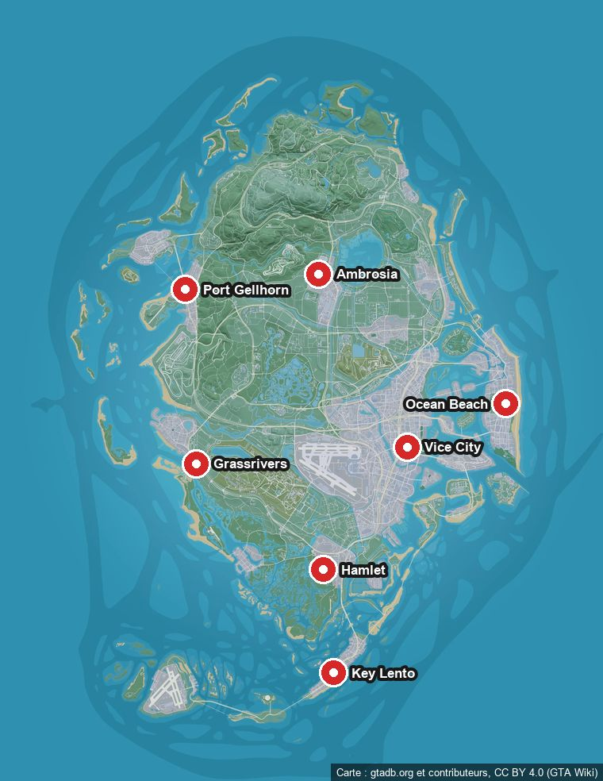
L'État de Leonida, avec ses grandes villes
Objectif
Comprendre comment Leonida est découpé, pour savoir où tu es et où aller. L'État est vaste, mais sa structure est simple : cinq comtés, six grandes régions sans chargement, et une ville qui occupe à elle seule un comté entier.
Cette partie couvre l'État. Vice City et son comté ont leur propre partie (partie 15).
Itinéraire
Il n'y a pas d'itinéraire imposé : la carte s'ouvre avec l'histoire, région par région. Le parcours naturel est celui des chapitres.
| Chapitre | Région |
|---|---|
| Chapitre 1 | Les Leonida Keys, comté de Mariana |
| Chapitre 2 | Port Gellhorn, comté de Kelly |
| Chapitres 3 à 5 | Vice City, comté de Vice-Dale |
Le reste — Grassrivers, Mount Kalaga, Ambrosia — s'explore librement, et c'est là que se cache une bonne partie des collections.
📍 La zone en images : la carte poster officielle de Rockstar, en téléchargement gratuit sur son site, et deux cartes interactives — https://gta6map.io/ en français, et celle d'IGN, plus complète mais en anglais.
Déroulé pas à pas
Les cinq comtés
- Vice-Dale County : le comté de Vice City, et de loin le plus dense. Vingt et un lieux nommés (partie 15).
- Mariana County : le sud maritime. Les Leonida Keys, Grassrivers, Key Lento, Watson Bay et Capri. C'est le terrain du chapitre 1.
- Kelly County : la côte du golfe. Port Gellhorn, Ambrosia et Lake Leonida. Le terrain du chapitre 2.
- Lummox County : le nord forestier. Mount Kalaga National Park et Yorktown.
- Leonard County : Waning Sands, et la péniche de Raul. ⚠️ C'est le comté le moins connu de l'État : son détail reste à découvrir.
⚠️ Un doute : Ambrosia serait un lieu du comté de Kelly, mais on parle ailleurs d' un « comté d'Ambrosia » avec son propre shérif. Les deux ne peuvent pas être vrais. À vérifier en jeu.
Les six régions, sans temps de chargement
- Vice City : le cœur de l'État. Plages, vie nocturne, port et centre d'affaires (partie 15).
- Leonida Keys : la chaîne d'îles du sud, reliées par des ponts. Ta maison du chapitre 1 est sur Key Lento.
- Grassrivers : les marais et les zones humides, avec leurs hydroglisseurs et leurs alligators.
- Port Gellhorn : la ville côtière du bord du golfe, et sa région.
- Ambrosia : la zone industrielle, bâtie autour d'une raffinerie de sucre.
- Mount Kalaga National Park : le nord boisé, ses rivières, ses sentiers et ses terrains de chasse.
Les lieux nommés, comté par comté
Mariana County
- Leonida Keys : l'archipel.
- Key Lento : l'île de ta maison, du ponton de pêche et de la remise. Elle a son propre Key Lento Police Department.
- Grassrivers : les marais.
- Watson Bay : la baie, et le bar Sloppy Molly's.
- Capri : à l'extrême ouest, la boutique Evelyn Andrews Antiques et son motel.
À quoi ajouter, trouvés en mission : le camp des Kingfishers au nord du comté, la mangrove au nord de la maison, et l'île des chiens en pleine baie.
Kelly County
- Port Gellhorn : la ville du chapitre 2, avec le Starlet Motel, le garage de Moses et son Port Gellhorn Police Department.
- Ambrosia : la raffinerie de sucre et sa zone industrielle.
- Lake Leonida : le lac.
À quoi ajouter : le Thrillbilly Mud Club, le Gellhorn Raceway et le Boone Speedway, et le bowling de Kolt & Associates.
Lummox County
- Mount Kalaga National Park : les sentiers, la chasse, les rivières. Les meilleures lignes droites pour monter le cardio au sprint.
- Yorktown : la localité du comté.
Leonard County
- Waning Sands : le quartier de la maison de Nicole Park. Le comté a son Leonard County Sheriff's Office.
Les forces de l'ordre, par territoire
Leonida compte douze services distincts, et savoir lequel te court après aide à comprendre où tu es.
| Service | Territoire |
|---|---|
| Vice City Police Department | Vice City |
| Vice Beach Police Department | Vice Beach |
| Vice-Dale Police Department | Le comté de Vice-Dale |
| Port Gellhorn Police Department | Port Gellhorn |
| Key Lento Police Department | Key Lento |
| Mariana County Sheriff's Office | Comté de Mariana |
| Leonard County Sheriff's Office | Comté de Leonard |
| Ambrosia County Sheriff | Ambrosia |
| Leonida Highway Patrol | Les autoroutes |
| Highway Patrol Agency | Les autoroutes |
| POACH — Leonida Protection of Animals & Controlled Hunting | La chasse et la faune |
| NOOSE et le STF | Les interventions lourdes, croisés en fin de jeu |
⚠️ Deux services d'autoroute portent deux noms différents. Il s'agit peut-être du même. À vérifier en jeu.
Les gangs, par territoire
| Gang | Type | Territoire |
|---|---|---|
| Final Chapter MC | Club de motards hors-la-loi, couleur noire | Ambrosia |
| PTT Youngin$ | Gang de rue | Southside, Vice City |
| San4San | Gang de rue haïtien | Vice City, aux Venture Apartments de Rockridge |
| La Polilla Negra | Le cartel | Vice City et au-delà. L'ennemi du chapitre 3 |
| M7 | Gang de rue | Hamlet |
| Cash City | L'entourage de DWNPLY | Vice City |
| Kolt & Associates | Le gang du bowling | Comté de Kelly |
| Les Kingfishers | Les rednecks des Keys | Comté de Mariana |
| Le FAP | Groupe armé | Vice City |
Braquer une opération illégale de chaque gang donne le trophée Pest Control (partie 21). Rockstar n'a pas confirmé l'existence de guerres de gangs ni de conquête de territoire.
Quêtes et lieux
Les trois cartes à utiliser
| Carte | Pour quoi |
|---|---|
| La carte poster officielle de Rockstar | Gratuite sur son site. À imprimer, ou juste pour découvrir la forme de l'État sans se spoiler |
| gta6map.io | Carte interactive en français, assez complète. Rare et précieux |
| La carte interactive d'IGN | Bien plus complète, mais en anglais. Le meilleur choix si tu ne veux rien rater, y compris les poissons |
Comment s'en servir sans se noyer : clique d'abord sur Tout masquer pour éliminer la bouillie d'icônes, puis réactive seulement ce que tu cherches — une salle de sport, un cinéma, les paquets cachés. Créer un compte permet de suivre sa progression en cochant les lieux visités.
La carte en jeu
Elle n'est pas qu'un plan. Croix directionnelle vers la droite sur l'écran de carte ouvre la liste des objectifs et des types d'activités disponibles, parfois avec leur position exacte. C'est le meilleur outil du jeu pour ne rien manquer, et beaucoup de joueurs ne le trouvent jamais.
Il existe aussi une boussole sur la croix directionnelle, en jeu.
Butin exhaustif
Les secrets et objets uniques de l'État qui ne sont pas à Vice City.
| Nom exact | Type | Où / comment l'obtenir | Utilité |
|---|---|---|---|
| Fusil à petit gibier W-22 | Arme unique | Camp des Kingfishers, nord du comté de Mariana, bâtiment sur pilotis, à l'étage | Premier fusil de précision silencieux (partie 4) |
| Portefeuille du Chien Cool | Argent | Île des chiens, baie de Leonida sud : lance le ballon de football américain | Plus de 1 000 $ |
| Lunettes du Chien Cool | Cosmétique | Île des chiens : en fouillant le sable | Tenue |
| Coffre de la caravane | Argent | Île des chiens, au centre : code 44017 | Argent |
| Effigie du Singe qui pue | Objet de scénario | Mangrove au nord de Key Lento, repérée en concentration | Lance l'arc de Kirk |
| Coffre du bowling | Argent | Bowling de Kolt & Associates, comté de Kelly : code 0300 | Argent |
| Fusil à pompe unique | Arme unique | Même bowling, sur la table centrale | Arme de close combat |
| Cocktails Molotov | Arme de jet | Centre du camp des Kingfishers | Stock |
| Hydravion | Véhicule | À côté du camp des Kingfishers | Fuite |
| Voiture pailletée de Shirley | Véhicule | Récompense de ses deux courses, Leonida Keys | Véhicule rapide très tôt |
Conseils et pièges
Fouille les coins paumés. C'est la règle la plus rentable du jeu. Le Chien Cool, le fusil silencieux et plusieurs secrets se trouvent là où rien n'invite à aller.
Pas de temps de chargement, mais des distances. Les six régions s'enchaînent sans coupure, et c'est impressionnant. Ça veut dire aussi que traverser l'État prend du temps : le service de voiture du Y Hotel (partie 10) et les RideMe (partie 19) existent pour ça.
Les régions ne se ferment pas. Quitter les Keys ou Port Gellhorn ne t'empêche pas d'y revenir. Ce qui disparaît, ce sont les opportunités liées aux personnages du chapitre, pas les lieux.
Tout masquer, puis réactiver. Les cartes interactives sont illisibles par défaut. Deux clics et elles deviennent utiles.
Les alligators mordent. Grassrivers et les points d'eau de l'État en sont pleins, et l'un d'eux attaque Mia en pleine mission. Ne nage pas n'importe où.
Alertes
- ⚠️ Divergence de sources : Ambrosia est décrit comme un lieu du comté de Kelly, mais un « comté d'Ambrosia » est nommé ailleurs, avec son propre shérif. À vérifier en jeu.
- ⚠️ Divergence de sources : les deux services d'autoroute, Leonida Highway Patrol et Highway Patrol Agency, sont peut-être le même. À vérifier en jeu.
- ⚠️ Zone peu connue : le comté de Leonard.
Check-list
- Carte poster officielle téléchargée sur le site de Rockstar
- Une carte interactive choisie et configurée en Tout masquer
- Liste des objectifs ouverte à la croix directionnelle droite
- Vice-Dale County parcouru (partie 15)
- Mariana County : Leonida Keys, Key Lento, Grassrivers, Watson Bay, Capri
- Kelly County : Port Gellhorn, Ambrosia, Lake Leonida
- Lummox County : Mount Kalaga National Park, Yorktown
- Leonard County : Waning Sands
- Les six régions visitées
- Trophée The Goodtime State — tout Leonida exploré
- Trophée Pest Control — une opération illégale braquée par gang
Complément
Vice City quartier par quartier
L'essentiel
- La structure : la ville est coupée en deux moitiés reliées par les Rialto Islands. Retiens ce point de passage, il revient en mission.
- Ne pas rater : la Penumbra de Paul Walker, planquée dans un garage de Vespucci Island, et enregistrable pour 6 750 $.
- Les trois planques : l'appartement de Bayside au chapitre 3, la suite 701 du Y Hotel au chapitre 4, et le box de Big House Storage.
- Avant de partir : le comté compte vingt et un lieux nommés, et le trophée The Goodtime State demande d'avoir tout exploré.
Objectif
Savoir où se trouvent les choses à Vice City. C'est la zone la plus dense du jeu : elle occupe à elle seule le comté de Vice-Dale, elle concentre les chapitres 3 à 5, et c'est là que vivent la plupart des boutiques, des contrats et des collections.
Itinéraire
La ville s'articule autour de trois axes simples :
- La bande côtière, à l'est : Ocean Beach, South Beach, Washington Beach, Vice Beach. Les plages, les hôtels, la vie nocturne.
- Le centre et l'ouest : Downtown, Crosstown, Stockyard, Rockridge, Little Haiti, Little Havana. Les affaires, les studios, les gangs.
- Les îles : Venetian Islands, Starfish Island, Dalton Island, Catalan Key, Gloriana Key, Rialto Islands. Le luxe et les points de passage.
📍 La zone en images : la carte interactive française — https://gta6map.io/ — ou celle d'IGN, plus complète, en anglais.
Déroulé pas à pas
Les vingt et un lieux nommés du comté de Vice-Dale
- Vice City : la ville elle-même.
- Vice Beach : la station balnéaire, avec son propre Vice Beach Police Department. Le glacier de Cash Injections est dans sa partie nord.
- Ocean Beach : le quartier du Y Hotel et de sa suite 701, de la boutique Nola au sud, de la Muscle Beach gym, des Hathaway Apartments et de l'Ocean Beach Marina. Le décor central du chapitre 4.
- South Beach : la plage voisine.
- Washington Beach : la Fleeca du premier braquage de Credit Check.
- Crosstown : le Jack of Hearts, le club de Dre'Quan et Boobie, et le studio d'Only Raw Records. Ton point de ralliement de tout le chapitre 3.
- Stockyard (Wynwood) : la salle de planification de Raul, son enceinte, le magasin de tuning Vice Vinyl, le Courtyard Bar et le Stockyard Speedshop.
- Rockridge : l'appartement de Charles et les Venture Apartments, le territoire de San4San.
- Little Haiti : le quartier haïtien.
- Little Havana : le quartier cubain. ⚠️ Les missions parlent aussi de Little Cuba pour l'arrêt boisson d'Andrés : il s'agit peut-être du même quartier sous deux noms. À vérifier en jeu.
- Leaf Links : le golf.
- Belville : la localité du comté.
- Ekanfinaka : la localité du comté.
- Tequesta Retreat : la Sinfrontera National Bank et le Velvet Palm Motel sont donnés à « Tequesta » par les missions. ⚠️ Même remarque : probablement le même lieu, à vérifier en jeu.
- Venetian Islands : les îles résidentielles.
- Dalton Island : une île du comté.
- Catalan Key : l'île du Catalan Boulevard, où se trouve l'appartement de Bayside, ta planque du chapitre 3.
- Gloriana Key (inspirée de Virginia Key) : une île du comté.
- Vice City International Airport (VCIA) : la cible du casse du chapitre 4. Le trophée Catch Me If You Can demande d'y faire « un départ non programmé ».
- Vice City Port : le port, et le dockyard aux conteneurs SCOOP de Meet the Heders.
- Hamlet : le bourg des missions de Mia Caminos et du bar Skeeter's, avec un voisinage tenu par les M7. ⚠️ Il serait dans le comté de Vice-Dale, mais les corvées du chapitre 1 t'y envoient depuis les Leonida Keys. À vérifier en jeu.
Les quartiers nommés par les missions
Ces lieux ne figurent pas dans la liste officielle des vingt et un, mais les missions les nomment. Ils existent, et il faut savoir les situer.
| Lieu | Ce qu'on y fait |
|---|---|
| Downtown | Le cabinet d'Abe Gonzalez, le siège du Megamundo Network, le magasin Eris sur le front de mer, les tours relais de Hidden Charges |
| Bayside | L'appartement du chapitre 3, sur Catalan Boulevard. ⚠️ Gare-toi sous l'auvent |
| La Perle | Le complexe de Tyrone, le chantier naval, et le camp de sans-abri de la bordure nord-ouest |
| Southside | Le territoire des PTT Youngin$, et la boutique où tu déposes Dre'Quan |
| Salton | Le chop shop de Car Service, et le rassemblement de courses de Yago |
| Waxman Island | Le garage à code 2404 de First Impressions |
| Rialto Islands | Le passage entre les deux moitiés de la ville, avec son pont à moitié relevé qui sème la police |
| Starfish Island | La maison d'Andrés de León |
| Peacock Bay | Le bureau de Mia Caminos |
| Peacock Estates | Le manoir de Gil, loin au sud |
| Millport | Le bar de Bad Driver! |
| Sultan | Vice Dale Water and Sewage, sur Westbrook Drive : le quartier général de l'équipe de Kordell |
| Little Cuba | Le restaurant Riverbank, sur Northbrook Drive, et l'arrêt boisson d'Andrés |
| Atlantic | Le parking d'où Karim surveille Nate et Cisco |
| Washington Island | Le guet-apens d'Amateur Hour |
| Vespucci Island | Le garage de la Penumbra de Paul Walker, au nord-est du comté |
| Muscle Beach | La salle de sport d'Ocean Beach où Nate retrouve Lucia |
| The Vault | La boîte de nuit d'Adventures in Babysitting |
| Le VYB | La boîte de Royce Jones, où les Dimez se produisent |
| Le Doight d'Or | L'hôtel où l'on rencontre Royce Jones |
| Le Grand Majestic Aparthotel | Le bout de la filature de Heavy Lifting |
| Leonida Auto World | Le showroom de Randy, au coin nord-ouest de la ville |
| Status Auto Imports | Le concessionnaire de Company Cars |
| Big House Storage | Le box acheté par Jason dans Caught Slipping |
| L'Ajax Gym | La salle de Kordell, avec son Trauma Floor privé |
| Le parking Cruda | La bagarre de Watch It, au dernier étage |
| Peewees | Le fast-food de Top Billing |
Le secret de Vespucci Island : la voiture de Paul Walker
Un clin d'œil à Fast & Furious, et une Penumbra d'un modèle particulier.
- La position : va sur Vespucci Island, au nord-est du comté de Vice-Dale. La maison est isolée, et son emplacement caché est la seule difficulté.
- Le garage : entre par la porte de droite — elle est ouverte en pleine journée. Ouvre d'abord le volet du garage, puis repars tranquillement avec la voiture.
- Pas de système de sécurité complexe, pas de balise : c'est un vol rapide et très rentable.
- L'enregistrement : ⚠️ ne vas pas la chercher trop tôt. Si tu n'as pas dépassé la mission qui débloque l'enregistrement des voitures, tu ne pourras pas la garder.
- Au chapitre 2 : va voir Moses.
- Au chapitre 3 : n'importe quel Pay 'n' Spray te l'enregistre pour 6 750 $.
Viens quand même équipé, au cas où ça tournerait mal.
Quêtes et lieux
Les trois planques de Vice City
| Planque | Quartier | Quand |
|---|---|---|
| Appartement de Bayside | Catalan Boulevard, Catalan Key | Chapitre 3, prêté par Boobie Ike |
| Suite 701 du Y Hotel | Ocean Beach | Chapitre 4, prêtée par Valentina |
| Box de Big House Storage | Au sud de Bayside | Acheté par Jason dans Caught Slipping |
Aucune ne s'achète : elles arrivent avec l'histoire. Les garages, eux, s'achètent (partie 24).
Les trois receleurs de la ville
| Receleur | Où | Ce qu'il prend |
|---|---|---|
| Yasmani | Le smoke shop, de l'autre côté de la rivière | Bijoux et billets marqués. Il paie le mieux |
| Randy | Leonida Auto World, nord-ouest | Véhicules à traceur standard, et sa liste de requêtes |
| Les Pay 'n' Spray | Partout | Repeignent, achètent et enregistrent les voitures à traceur standard |
Les rumeurs de boutiques
On parle de plus de 700 boutiques et lieux accessibles dans le jeu. ⚠️ C'est une rumeur, pas un chiffre confirmé. Le trophée Treat Yo Self demande en revanche bien de dépenser 100 000 $ dans les boutiques.
Butin exhaustif
| Nom exact | Type | Où / comment l'obtenir | Utilité |
|---|---|---|---|
| Penumbra de Paul Walker | Véhicule unique | Garage d'une maison de Vespucci Island, nord-est du comté. Porte de droite, volet à ouvrir | Easter egg Fast & Furious. 6 750 $ pour l'enregistrer au chapitre 3 |
| Crowex Octane « Bobby Ambrose » | Montre | Capri, auprès d'Halifax (partie 7) | Montre de luxe, styles découverts |
| '32 Hustler | Véhicule | Conteneur de stockage de Dubious Provenance | À garder ou revendre |
| Pistolet de Monty | Arme variante | Watson Bay, pièce photo de The Missing Link | Introuvable autrement |
| Kalinga .50 | Pistolet variante | Peacock Estates, coffre de Gil | Arme de poing haut de gamme |
| Klose K17 | Pistolet silencieux | Salton, coffre d'une voiture au début de Car Service | Infiltration |
| Baskets DWNPLY | Cosmétique | Magasin Eris, Downtown : lance un ballon de basket sur le vendeur | Gratuites, 1 580 $ économisés |
| Dye Pack Jammer | Outil | Stockyard, bureau de Karim | Débloque le vol des billets marqués |
| Outil de découpe | Outil | Vice City Port, dockyard de Meet the Heders | Gardé définitivement |
| Key Cloner | Outil | Ocean Beach, Hathaway Apartments, envoyé par Randy | Gardé définitivement |
| 600 $ et un Cigare | Argent, consommable | Vice City Port : les conteneurs SCOOP ouverts en plus | Argent, concentration |
| 2 500 $ en bijoux et liquide | Argent | Conteneur de stockage de Dubious Provenance | Argent |
Conseils et pièges
Retiens les Rialto Islands. C'est le passage entre les deux moitiés de la ville, et son pont à moitié relevé est une échappatoire connue : le sauter sème la police d'un coup.
Gare-toi sous l'auvent de Bayside. Au chapitre 3, c'est le seul endroit où tes voitures sont conservées.
Gare-toi hors des zones rouges. À Rockridge pendant Bricked Up, se garer dans la zone rouge envoie ta voiture à la fourrière pendant la mission. La règle vaut ailleurs.
Ne va pas chercher la Penumbra trop tôt. Sans l'enregistrement débloqué, tu ne peux pas la garder, et le trajet est long depuis les chapitres 1 et 2.
Le taxi du Y Hotel est gratuit. Appelable depuis le devant de l'hôtel, à n'importe quel moment du reste du jeu. La ville est grande.
Scanne tout ce qui roule. Vice City concentre les voitures rares. Le showroom Status Auto Imports et le Leonida Auto World sont des mines pour la collection des 277 modèles de base (partie 22).
Écoute la ville. Les opportunités viennent des affiches, des prospectus, des réseaux sociaux et des passants qui t'interpellent. Vice City est le quartier le plus bavard du jeu.
Alertes
- ⚠️ Divergence de noms : Little Havana et Little Cuba d'un côté, Tequesta Retreat et Tequesta de l'autre. Les deux formes désignent sans doute les mêmes quartiers. À vérifier en jeu.
- ⚠️ Divergence de rattachement : Hamlet est listé dans le comté de Vice-Dale, mais les corvées du chapitre 1 t'y envoient depuis les Leonida Keys. À vérifier en jeu.
- ⚠️ Chiffre non confirmé : les « plus de 700 boutiques accessibles » sont une rumeur, pas un décompte officiel.
- ⏳ Manquable au mauvais moment : la Penumbra de Vespucci Island ne peut pas être conservée avant que l'enregistrement des voitures ne soit débloqué.
Check-list
- Les vingt et un lieux nommés du comté visités
- Les deux moitiés de la ville reliées par les Rialto Islands repérées
- Appartement de Bayside occupé, voiture garée sous l'auvent
- Suite 701 du Y Hotel occupée
- Box de Big House Storage visité
- Yasmani, Randy et un Pay 'n' Spray utilisés au moins une fois
- Penumbra de Vespucci Island volée et enregistrée
- VCIA visité, trophée Catch Me If You Can tenté
- Leaf Links, Venetian Islands, Dalton Island, Gloriana Key et Catalan Key parcourus
- Belville et Ekanfinaka visités
- 100 000 $ dépensés en boutiques (trophée Treat Yo Self)
- Trophée The Goodtime State — tout Leonida exploré
Complément
Le combat, les armes et la police
L'essentiel
- La commande à retenir : L3 + R3 active la concentration. Elle ralentit le temps, surligne les ennemis et sert pendant tout le jeu.
- Rouge ou jaune : les repères rouges sont les points vitaux, les jaunes les articulations. Viser jaune désarme et fait monter ton profil Professionnel.
- La limite d'arsenal : deux armes de poing dissimulées et deux armes d'épaule visibles. Le reste va dans le coffre d'une voiture dont tu es propriétaire.
- Avant de partir : la police se souvient de toi — de tes vêtements, de ton véhicule, de ton visage. Change-les.
Objectif
Comprendre les trois systèmes qui décident de tes combats : la concentration, qui remplace la visée automatique des anciens épisodes ; l'arsenal limité, qui t'oblige à choisir ; et la nouvelle police, qui ne se contente plus de te perdre de vue.
Itinéraire
Rien à parcourir ici. Trois endroits à connaître quand même :
-
Les magasins d'armes : il y en a un près de ta maison du chapitre 1, et c'est là qu'on achète le silencieux de pistolet, le meilleur investissement du début de jeu.
![Les 24 magasins d'armes que le wiki place sur la carte, du nord au sud — 1. Rusty Willis Jr. Hunting Supplies ; 2. Biff's Gun Supply ; 3. Gellhorn Outfitters ; 4. Pawn & Gun - Port Gellhorn ; 5. Tactical Outlet Guns ; 6. Iron & Oak ; 7. Prestige Firearms ; 8. Black Eagle ; 9. Zenon's Pawn Shop ; 10. Pawn & Gun - Crosstown ; 11. Vice City Gun & Pawn ; 12. Jackson Firearms ; 13. Quickscope ; 14. Martez Empeños ; 15. Woodhatch ; 16. Vice City Firearms ; 17. Tequesta Guns & Ammo ; 18. Richardson Hunting Supplies ; 19. Phil's Ammu-Nation ; 20. Hamlet Traders ; 21. Guns Aplenty! ; 22. Big Shots ; 23. Chuck's Tackle & Shot ; 24. Barrage Gun Supply](images/16-carte-armureries.jpg)
Les 24 magasins d'armes que le wiki place sur la carte, du nord au sud — 1. Rusty Willis Jr. Hunting Supplies ; 2. Biff's Gun Supply ; 3. Gellhorn Outfitters ; 4. Pawn & Gun - Port Gellhorn ; 5. Tactical Outlet Guns ; 6. Iron & Oak ; 7. Prestige Firearms ; 8. Black Eagle ; 9. Zenon's Pawn Shop ; 10. Pawn & Gun - Crosstown ; 11. Vice City Gun & Pawn ; 12. Jackson Firearms ; 13. Quickscope ; 14. Martez Empeños ; 15. Woodhatch ; 16. Vice City Firearms ; 17. Tequesta Guns & Ammo ; 18. Richardson Hunting Supplies ; 19. Phil's Ammu-Nation ; 20. Hamlet Traders ; 21. Guns Aplenty! ; 22. Big Shots ; 23. Chuck's Tackle & Shot ; 24. Barrage Gun Supply -
Les stands de tir : le Griffin Shooting Range avec ses 18 médailles d'or et le Rodgers Ranch avec ses 24. Un Waiver Pass à 5 $ débloque les défis (partie 23).
-
Les Pay 'n' Spray : pour faire repeindre un véhicule que la police a repéré (partie 17).
Déroulé pas à pas
La concentration
C'est l'équivalent de la vision de l'aigle de Red Dead Redemption 2, mais en combat.
- L'activation : L3 + R3, une fois la capacité débloquée pendant Partie de Pêche.
- Ce qu'elle fait : elle ralentit le temps et remplit une jauge violette propre à chaque personnage.
- Les repères : en visée ralentie, les cibles s'affichent avec des marques.
- Rouge : les points vitaux.
- Jaune : les articulations. Tirer dessus désarme l'ennemi sans le tuer.
- Sans viser : activer la concentration sans être en visée surligne les ennemis proches. C'est indispensable dans les infiltrations comme l'étage de la fête de Party Hard.
- Hors combat : elle sert aussi à repérer les objets et les sons — les objets surlignés en blanc chez Donnie, l'effigie du Singe qui pue, les points de sécurité de la banque.
Ce que la statistique de concentration change
| Effet | Détail |
|---|---|
| Durée | Plus la statistique est haute, plus la jauge violette est grande et plus tu as de secondes pour ajuster |
| Stabilité | Le recul et la dispersion des balles sont mieux maîtrisés, surtout en tir enchaîné ou à une main |
| Sang-froid | Pendant les braquages, un personnage concentré garde plus facilement son calme pour intimider les otages et manipuler sous pression |
Comment la monter : la pêche est de loin la méthode la plus efficace, avec 5 à 10 % par poisson. Tu peux pêcher depuis le ponton de ta maison ou depuis un bateau, de préférence sur un banc de poissons. Le cigare et les trois chats du Starlet Motel donnent aussi des bonus.
Le trophée Gunslinger demande cinq ennemis abattus en une seule utilisation de la concentration.
L'arsenal : ce que tu peux porter
- La règle : deux armes de poing, qui restent dissimulées, et deux armes d'épaule, qui sont visibles.
- La conséquence : te promener avec du gros calibre apparent est une mauvaise idée en Leonida. Les PNJ réagissent, et la police aussi.
- Le coffre : les grosses armes se rangent dans le coffre d'un véhicule.
- ⚠️ Ne charge que des voitures dont tu es propriétaire. Une voiture volée finit par disparaître, par accident ou par oubli, et tout ce qu'elle contient avec elle.
Les armes du jeu
On recense 206 armes confirmées, dont plus de 120 variantes uniques.
- Les variantes uniques : signalées par une icône de pistolet jaune et un nom en jaune.
- Elles ne peuvent pas être modifiées.
- Elles sont débloquées pour Jason et pour Lucia en même temps.
- Les dix classes :
| Classe | Exemples |
|---|---|
| Handguns | Klose K17 (silencieux), Kalinga .50, Duke Arms Mustang .357, le pistolet de Monty |
| Assault Rifles | Duke Arms 556 Assault Rifle, Kozlov KZ-59 |
| Shotguns | Mason & Keen Shortstraw (version à cartouches explosives par code de triche), Shrewsbury Drifter |
| SMG | — |
| LMG | Utilisé dans Company Property et Adventures in Babysitting |
| Sniper Rifles | Fusil à petit gibier W-22 des Kingfishers (silencieux) |
| Tactical Rifles | — |
| Melee | Baseball Bat, Crowbar, Hammer, Pool Cue, Golf Club, Hunting Knife, Switchblade, Brass Knuckles, Pipe Wrench, Tallaloko Knife, Coil Shocker |
| Throwable | Frag Grenade, Molotov, Sticky Bomb, Smoke Grenade, Jerry Can |
| Launchers | Hauners H-AT (lance-roquettes) |
⚠️ Je ne donne pas la liste complète des 206 armes : la page qui les recense n'est lisible qu'en partie, et les noms que j'aurais pu en extraire se contredisent. Ceux ci-dessus sont ceux que j'ai pu vérifier.
- Les munitions : cinq types — Heavy Ammo, Shotgun Ammo, Pistol Ammo, Spear Ammo et Rockets.
- Les armes standard à trouver : il y a 66 Standard Issue Weapons dans le jeu, et le compteur de complétion en demande 50 (partie 27).
L'équipement
Vingt-quatre objets d'équipement, au-delà des armes. Beaucoup viennent de missions et restent définitivement.
| Objet | Objet | Objet |
|---|---|---|
| Auto Dialer | Backpack | Binoculars |
| Body Armor | Cigarettes | Cut-off Tool |
| Face Wrap | Fishing Rod | Flashlight |
| Food and Drink | Immobilizer Bypass | Lock Pick |
| Loot Bag | Painkillers | Rod's Racing Cap |
| Slim Jim | Soda | Taser |
| Torch Flashlight | Tracker Jammer | Trauma Kit |
| USB Drive | Wine | Zipties |
Les soins portent aussi des noms de marque en jeu : Zombix et Adrénaline sont ceux que les missions nomment explicitement.
La police et l'indice de recherche
C'est le système le plus refondu du jeu, et le moins connu pour l'instant.
- Ce qui est sûr : la police est plus intelligente et se souvient de toi. Elle retient tes vêtements, ton véhicule, ton visage et ta dernière position connue.
- Les étoiles : l'indice de recherche compte jusqu'à six étoiles. On le sait par les conditions de déblocage des codes de triche, qui parlent d'échapper à 3 étoiles et de survivre six minutes à 6 étoiles.
- Les icônes sous les étoiles : l'interface affiche de petites icônes sous l'indice de recherche pour le visage, les vêtements et le véhicule. Elles te disent ce que la police a identifié, et donc ce qu'il faut changer.
- Les étoiles creuses : quand les étoiles sont creuses, la police cherche sans savoir exactement qui. C'est l'état le plus facile à faire retomber.
- Le niveau de tension : le jeu suit en plus un niveau d'alerte distinct, à l'échelle de la carte. Deux codes de triche le manipulent (partie 26).
- La roue des objets : le masque et les tenues se choisissent dans une roue d'objets ouverte depuis la roue des armes. ⏳ Tu peux donc mettre un masque n'importe où, sans passer par une boutique.
- Les zones de recherche : quand tu es traqué, des cercles ou des zones rouges apparaissent sur la carte. En sortir fait abandonner la police.
- Les méthodes pour se défaire d'eux :
- Sortir de la zone de recherche, la méthode de base, utilisée dans presque toutes les missions.
- Changer de véhicule — plusieurs missions te le font faire explicitement.
- Faire repeindre la voiture au Pay 'n' Spray.
- Se séparer de son partenaire pour diviser les patrouilles : la mécanique est enseignée pendant Credit Check.
- Le tir de suppression effraie les policiers.
- Viser les pneus et les moteurs des voitures de patrouille les met hors course sans tuer personne.
⚠️ Ce que chaque niveau d'étoile apporte, le fonctionnement exact de la mémoire policière et les autres états de recherche restent à relever en jeu.
Le profil criminel
Le jeu note ta façon de travailler, séparément pour Jason et pour Lucia. L'échelle va du meilleur au pire :
Professionnel → Endurci → Violent → Psychopathe → Irrécupérable
| Ce qui fait monter | Ce qui fait descendre |
|---|---|
| Désarmer au lieu de tuer | Tuer les conducteurs |
| Tirer dans les jambes ou les genoux | Écraser des civils ou des cyclistes |
| Viser les pneus et les moteurs | ⚠️ Faire du mal aux chiens — le plus gros malus signalé |
| Résoudre un deal pacifiquement | Défoncer des pierres tombales |
| Interroger sans tuer | Toucher des otages |
| Ramener un butin complet | Blesser les civils qui fuient |
| Caresser les chats du Starlet Motel | — |
⚠️ Ce n'est pas qu'un score cosmétique : les deux profils doivent être propres pour obtenir les deux bonnes fins du jeu (partie 13).
Quêtes et lieux
Les trophées de combat
| Trophée | Condition | Grade |
|---|---|---|
| Gunslinger | Cinq ennemis en une seule utilisation de la concentration | Bronze |
| The Shootist | Une médaille d'or à tous les défis de stand de tir | Argent |
| Hot Together | Perdre un indice de recherche 4 étoiles avec ton partenaire et semer la police | Bronze |
| Retail Therapy | Braquer trois boutiques d'affilée avec ton partenaire sans perdre l'indice de recherche | Bronze |
| Sneakthief | Braquer une bijouterie sans être repéré | Bronze |
| Pest Control | Braquer une opération illégale de chaque gang | Bronze |
| Challenging Tank | « Il fait un peu chaud dans ces Rhino » | Bronze |
Les stands de tir
| Stand | Médailles d'or |
|---|---|
| Griffin Shooting Range | 18 |
| Rodgers Ranch | 24 |
Les 42 médailles d'or réunies valent 1 % du compteur de complétion et le trophée argent The Shootist. Un Waiver Pass à 5 $ débloque les défis.
Elles débloquent aussi trois codes de triche : 25 médailles de bronze pour Munitions au maximum, 25 d'argent pour Munitions infinies, 25 d'or pour Aucun rechargement (partie 26).
Butin exhaustif
Les armes uniques dont l'emplacement est connu.
| Nom exact | Type | Où / comment l'obtenir | Utilité |
|---|---|---|---|
| Fusil à petit gibier W-22 | Fusil de précision silencieux | Camp des Kingfishers, nord du comté de Mariana, bâtiment sur pilotis, à l'étage, dans sa valise | Premier fusil silencieux du jeu (partie 4) |
| Fusil à pompe unique | Fusil à pompe | Bowling de Kolt & Associates, sur la table centrale | Close combat du milieu de jeu (partie 6) |
| Klose K17 | Pistolet silencieux | Coffre d'une voiture au début de Car Service, à Salton | Infiltration (partie 8) |
| Pistolet de Monty | Pistolet variante | Par terre dans la pièce photo de The Missing Link, à récupérer en revenant | ⚠️ Introuvable autrement (partie 9) |
| Kalinga .50 | Pistolet variante | Coffre de Gil, Peacock Estates, pendant Safe Word | Arme de poing haut de gamme (partie 9) |
| Silencieux de pistolet | Accessoire | À acheter au magasin d'armes | Excellent investissement dès le chapitre 1 |
| Cocktails Molotov | Arme de jet | Stock au centre du camp des Kingfishers | Réserve |
| Bombes collantes | Explosif | À plusieurs endroits du chapitre 2, et sur le bureau de Karim | Ouvrir coffres et portes |
| Grenades flash | Explosif | Coffre d'une voiture au début de Car Service | Neutraliser sans tuer |
Conseils et pièges
Achète le silencieux tout de suite. Monté sur le pistolet de base, il change complètement l'approche du camp des Kingfishers et de toutes les infiltrations du chapitre 1.
Vise jaune. C'est le conseil le plus rentable du jeu : désarmer plutôt que tuer protège ton profil criminel, et donc tes chances d'avoir une bonne fin. Ça ne coûte rien, ça demande juste de regarder où tu tires.
Deux armes de poing, deux armes d'épaule. Et pas de gros calibre à l'air libre si tu ne veux pas d'ennuis.
Le coffre, mais pas n'importe lequel. Seules tes propres voitures sont fiables pour stocker un arsenal.
Prépare-toi avant les grosses missions. Ciel Dégagé, Bourbier, le bowling, Sunset : toutes commencent par une fusillade et toutes se passent mieux avec deux armes d'épaule, des Zombix, de l'Adrénaline et des munitions.
Change de tenue après un coup. La police retient tes vêtements. Un passage par une penderie ou une boutique vaut une course-poursuite évitée.
Sépare-toi de ton partenaire. Deux fuyards divisent les patrouilles. La mécanique est enseignée dans Credit Check et reste valable partout.
Alertes
- ⚠️ Perte définitive : les armes rangées dans le coffre d'un véhicule volé disparaissent avec lui.
- ⚠️ Conséquence sur la fin du jeu : les deux profils criminels doivent être propres pour obtenir les fins 4 et 5 (partie 13).
- ⚠️ Gros malus de profil : faire du mal aux chiens. C'est le pire de tous.
- ⚠️ Système encore mal connu : le détail de l'indice de recherche, de la mémoire policière et de la dissimulation. À vérifier en jeu.
- ⚠️ Liste incomplète : sur les 206 armes du jeu, seules celles nommées ci-dessus sont vérifiées. Je ne complète pas la liste de mémoire.
Check-list
- Concentration débloquée pendant Partie de Pêche, commande L3 + R3 retenue
- Différence rouge / jaune comprise
- Silencieux de pistolet acheté
- Deux armes de poing et deux armes d'épaule en permanence
- Coffre de ta voiture utilisé comme réserve
- Pêche utilisée pour monter la concentration
- Waiver Pass à 5 $ acheté
- 18 médailles d'or au Griffin Shooting Range
- 24 médailles d'or au Rodgers Ranch (trophée The Shootist)
- 50 des 66 Standard Issue Weapons trouvées
- Profil criminel de Jason maintenu propre
- Profil criminel de Lucia maintenu propre
- Trophée Gunslinger — cinq ennemis en une concentration
- Trophée Hot Together — 4 étoiles semées à deux
- Trophée Retail Therapy — trois boutiques d'affilée à deux
- Trophée Sneakthief — une bijouterie sans être repéré
Complément
La conduite et les véhicules
L'essentiel
- Scanne avant de voler : l'appli WAiNK révèle le niveau de sécurité d'une voiture. Trop élevé, et personne ne te la rachètera.
- Le piège du traceur : sur une voiture à traceur avancé, rouler trop lentement remplit la jauge et envoie ta position à la police. Contre-intuitif, mais vrai.
- Ne pas rater : la réparation gratuite au garage, débloquée dès Juste une Égratignure. Un coup de fil et on te livre une voiture neuve du même modèle.
- Avant de partir : 277 modèles de base sont à scanner, et le compteur de complétion en demande 200.
Objectif
GTA VI a complètement revu le vol de voiture. Il ne suffit plus de monter dedans : il faut savoir ce que tu voles, avec quel outil l'ouvrir, et à qui la revendre. Cette partie couvre la conduite, les outils, les traceurs, l'enregistrement et les collections de véhicules.
Il y a du carburant dans ce jeu : la description d'un code de triche parle explicitement de carburant et de nitro infinis.
Itinéraire
Les lieux liés aux véhicules :
- Le garage de Moses, à Port Gellhorn : le premier point de scan, d'enregistrement et de revente (partie 5).
- Leonida Auto World, coin nord-ouest de Vice City : le showroom de Randy, qui reprend les véhicules à traceur standard et les modèles de sa liste de requêtes.
- Status Auto Imports : le concessionnaire de Company Cars, plein de voitures haut de gamme à scanner.
- Les Pay 'n' Spray : partout. Repeindre, et à partir de Welcome to Vice City, acheter et enregistrer.
- Les trois circuits : le Gellhorn Raceway, le Thrillbilly Mud Club et le Boone Speedway.
- Les douze garages : détaillés dans la partie 24.
📍 La zone en images : la carte interactive française, filtrable par type de lieu — https://gta6map.io/
Déroulé pas à pas
La conduite
-
Le modèle de conduite est plus réaliste que dans les épisodes précédents, avec un vrai poids des véhicules.
-
Le carburant existe : le code de triche Nitro illimitée rend « le carburant et la nitro infinis », ce qui le confirme indirectement.
-
La vue cinématique et la conduite automatique sont tes amies pendant les longs trajets bavards du jeu, qui sont nombreux. Elles te laissent écouter les dialogues sans quitter la route des yeux.
-
Tes voitures comptent plus qu'avant. Soigne-les : elles servent de coffre à armes, elles s'améliorent, et elles se revendent.
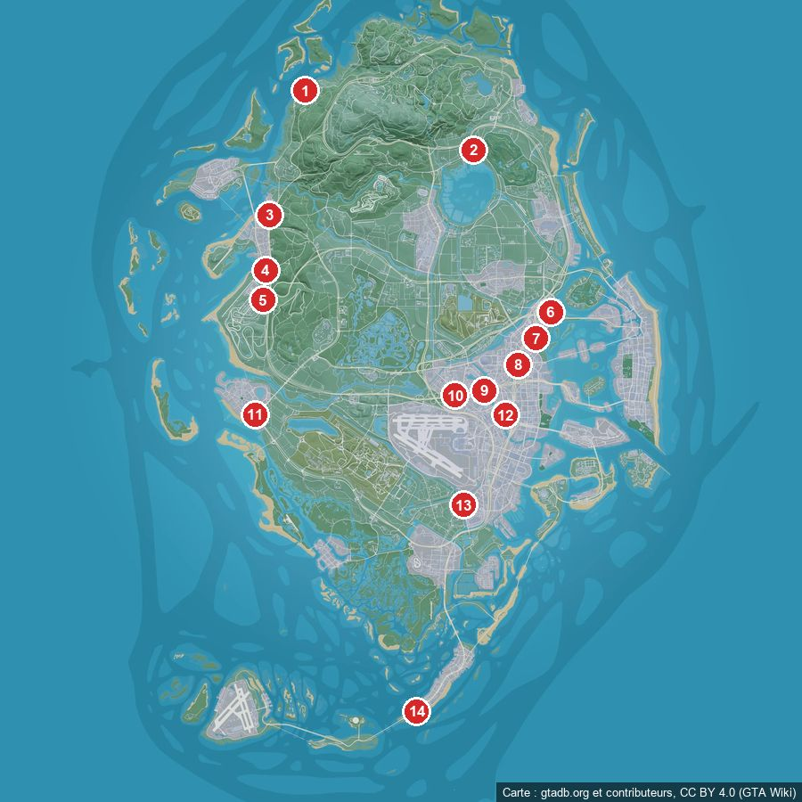
Les 14 garages de personnalisation, du nord au sud — 1. Ledford Motorcycle Workshop ; 2. One-Eyed Willie's Auto Shop ; 3. Wasteland Off-Road ; 4. Dirt Merchants ; 5. Whisler Motorsport ; 6. Stockyard Speedshop ; 7. Vice Vinyl ; 8. Rideout Customs ; 9. Vice Auto Customs ; 10. Lowballers Customs ; 11. Capri Classic ; 12. Euroform Automotive ; 13. Two Wheel Fury Motorsports ; 14. Coastal Auto Care -
La réparation gratuite : débloquée dès Juste une Égratignure, au chapitre 1. Appelle le mécano et on te livre une voiture neuve du même modèle.
Voler une voiture, étape par étape
- Le scan : ouvre l'appli WAiNK et scanne le véhicule. Elle te donne son niveau de sécurité — et l'ajoute à ta collection au passage.
- Le bon outil : selon le niveau, il te faut l'un ou l'autre.
| Outil | Quand |
|---|---|
| Lock Pick | Obtenu très tôt au chapitre 2. Les voitures peu sécurisées |
| Slim Jim | Les portières. Pousse dans la bonne direction quand l'indicateur devient rose |
| Snap Gun | Les portes de service, utilisé pendant Credit Check |
| Key Cloner | key_cloner_v1.6.9, envoyé par Randy pendant Steal the Zorrusso. Gardé définitivement par les deux personnages. Les voitures à traceur avancé. Même manipulation que le Slim Jim |
| Immobilizer Bypass | Dans la liste d'équipement du jeu |
| Tracker Jammer | Dans la liste d'équipement du jeu |
- La limite de Moses : ⚠️ si le niveau de sécurité est trop élevé, Moses ne reprend pas la voiture. Scanne avant d'embarquer, sinon tu fais le trajet pour rien. Cette restriction se lève en avançant dans l'histoire.
Les traceurs
C'est la nouveauté la plus piégeuse du système.
- Le traceur standard : les Pay 'n' Spray et Randy achètent et enregistrent ces voitures sans histoire.
- Le traceur avancé : une icône rouge apparaît au-dessus de la minimap.
- ⚠️ Si tu roules trop lentement, sa barre se remplit et ta position est envoyée à la police.
- En approchant du point de livraison, l'icône devient grise : le traceur se coupe.
- Il faut un Key Cloner pour ouvrir ces voitures.
Enregistrer et revendre
-
Au chapitre 2 : Moses est le seul point de scan, d'enregistrement et de revente. C'est le plan le plus rentable du chapitre. Complète aussi ses requêtes perso.
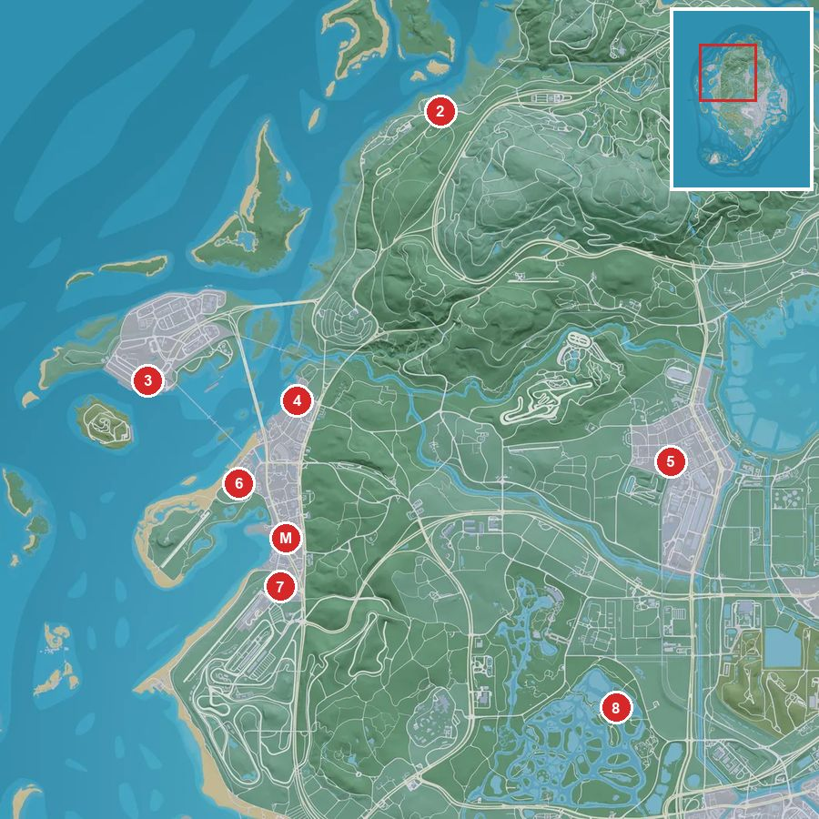
Le garage de Moses (M) et les véhicules de sa liste que le wiki situe — M. Moses ; 2. DeClasse '74 Vamos ; 3. Karin '85 Futo ; 4. Canis '82 Crawler ; 5. Western Nightblade ; 6. Declasse Yosemite 1500 ; 7. Annis '95 Hellion ; 8. BF '77 Bandito -
Au chapitre 3 : les Pay 'n' Spray achètent et enregistrent les voitures à traceur standard, dès Welcome to Vice City. Compte environ 6 750 $ pour un enregistrement.
![Les 19 Pay 'n' Spray, du nord au sud — 1. Pay 'N' Spray - Grayson ; 2. Pay 'N' Spray - Millport ; 3. Pay 'N' Spray - Ambrosi ; 4. Pay 'N' Spray - Port Gellhorn ; 5. Pay 'N' Spray - Waning Sands ; 6. Pay 'N' Spray - Washington Beach ; 7. Pay 'N' Spray - Stockyard ; 8. Pay 'N' Spray - La Perle ; 9. Pay 'N' Spray - Ocean Beach ; 10. Pay 'N' Spray - Balsero ; 11. Pay 'N' Spray - Waxman Island ; 12. Pay 'N' Spray - Downtown ; 13. Pay 'N' Spray - West Vice-Dale County ; 14. Pay 'N' Spray - Grassrivers ; 15. Pay 'N' Spray - Salton ; 16. Pay 'N' Spray - Hamlet ; 17. Pay 'N' Spray - Watson Bay ; 18. Pay 'N' Spray - Key Lento ; 19. Pay 'N' Spray - Southwind](images/17-carte-pay-n-spray.jpg)
Les 19 Pay 'n' Spray, du nord au sud — 1. Pay 'N' Spray - Grayson ; 2. Pay 'N' Spray - Millport ; 3. Pay 'N' Spray - Ambrosi ; 4. Pay 'N' Spray - Port Gellhorn ; 5. Pay 'N' Spray - Waning Sands ; 6. Pay 'N' Spray - Washington Beach ; 7. Pay 'N' Spray - Stockyard ; 8. Pay 'N' Spray - La Perle ; 9. Pay 'N' Spray - Ocean Beach ; 10. Pay 'N' Spray - Balsero ; 11. Pay 'N' Spray - Waxman Island ; 12. Pay 'N' Spray - Downtown ; 13. Pay 'N' Spray - West Vice-Dale County ; 14. Pay 'N' Spray - Grassrivers ; 15. Pay 'N' Spray - Salton ; 16. Pay 'N' Spray - Hamlet ; 17. Pay 'N' Spray - Watson Bay ; 18. Pay 'N' Spray - Key Lento ; 19. Pay 'N' Spray - Southwind -
Randy devient un point de dépôt après Car Service. Il prend les véhicules à traceur standard et les modèles de sa liste de requêtes, dont les emplacements sont inconnus au départ : trouve-les, ou demande un tuyau à Randy, un à la fois. Ses livraisons valent le trophée Supply & Demand.
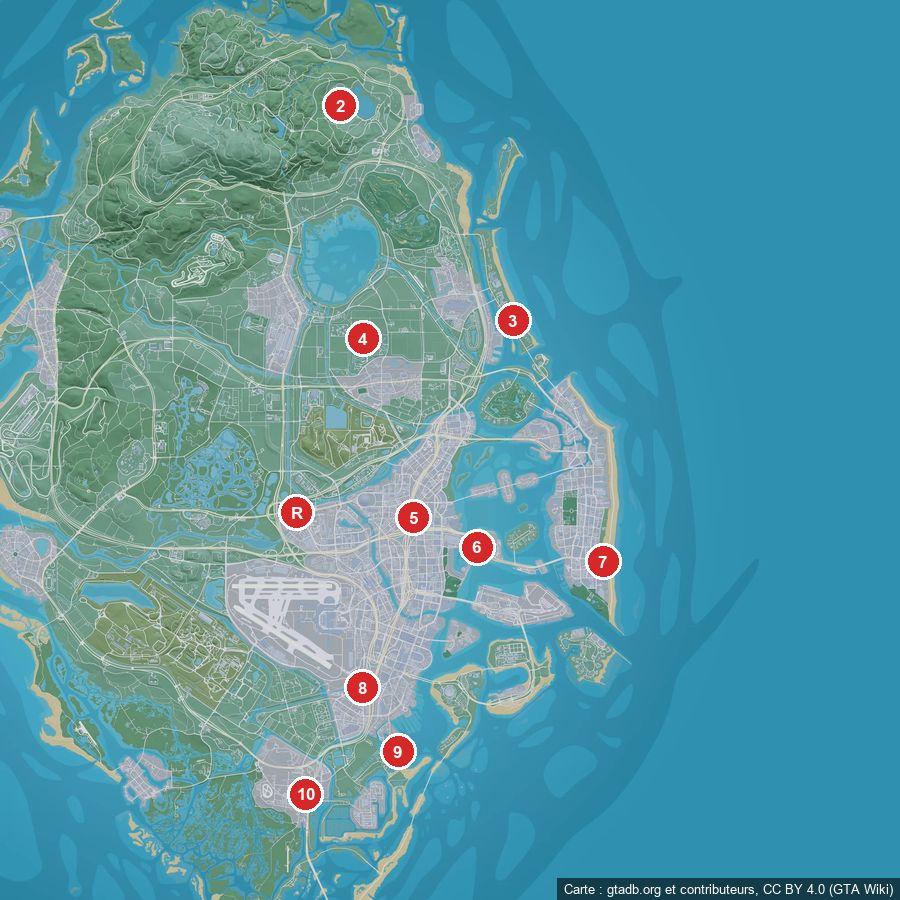
Leonida Auto World, chez Randy (R), et les véhicules de sa liste de requêtes que le wiki situe — R. Randy ; 2. Pegassi Tempesta ; 3. Pegassi Vitello ; 4. Ascot Paragon ; 5. Pegassi '96 Infernus ; 6. Invetero Coquette D10 ; 7. Granforma Zorrusso ; 8. Bravado Banshee ; 9. Piccia Furia ; 10. Bravado Gauntlet Hellfire -
Le rappel : une fois un véhicule enregistré, tu peux le rappeler depuis l'application dédiée.
⚠️ Deux applis : Waink pour le scan, et Scooter Bros pour enregistrer dix véhicules (trophée On the Spot). Les deux coexistent probablement. À vérifier en jeu.
Les collections de véhicules
-
Les 277 modèles de base : à scanner à la WAiNK. Le compteur de complétion en demande 200, pour 1 %.
-
Les 280 Standout Vehicles : ⚠️ ils ne comptent pas pour ce compteur. Ne te fatigue pas à les scanner en croyant avancer.
![Véhicules remarquables : le nord (comtés de Lummox et de Leonard, autour d'Ambrosia) — 1. Declasse Martha's Vamos ; 2. Del Perro Midsummer Erode ; 3. Vapid Grady's Slamvan ; 4. Bravado Bison 1800 ; 5. Del Perro Scorcher ; 6. Canis Nancy's Crawler ; 7. Maibutsu Myway's Manchez ; 8. Annis '95 Hellion ; 9. Buckingham Volatus ; 10. Albany Verdant Buccaneer ; 11. Vapid Finns Reclaimer ; 12. Bravado Third Eye Youga ; 13. Bravado Third Eye Youga ; 14. Declasse Flower Powered Rancher ; 15. Declasse Truther Burrito ; 16. Dinka Verus ; 17. Albany Driveshaft Devanity ; 18. Brute Boxville ; 19. Taci Ragno ; 20. LCC Monarch Avarus ; 21. Nagasaki Hung Carbos RS ; 22. Western Searing Zombie Bobber ; 23. Ocelot Bloodless Jugular](images/17-vehicules-nord.jpg)
Véhicules remarquables : le nord (comtés de Lummox et de Leonard, autour d'Ambrosia) — 1. Declasse Martha's Vamos ; 2. Del Perro Midsummer Erode ; 3. Vapid Grady's Slamvan ; 4. Bravado Bison 1800 ; 5. Del Perro Scorcher ; 6. Canis Nancy's Crawler ; 7. Maibutsu Myway's Manchez ; 8. Annis '95 Hellion ; 9. Buckingham Volatus ; 10. Albany Verdant Buccaneer ; 11. Vapid Finns Reclaimer ; 12. Bravado Third Eye Youga ; 13. Bravado Third Eye Youga ; 14. Declasse Flower Powered Rancher ; 15. Declasse Truther Burrito ; 16. Dinka Verus ; 17. Albany Driveshaft Devanity ; 18. Brute Boxville ; 19. Taci Ragno ; 20. LCC Monarch Avarus ; 21. Nagasaki Hung Carbos RS ; 22. Western Searing Zombie Bobber ; 23. Ocelot Bloodless Jugular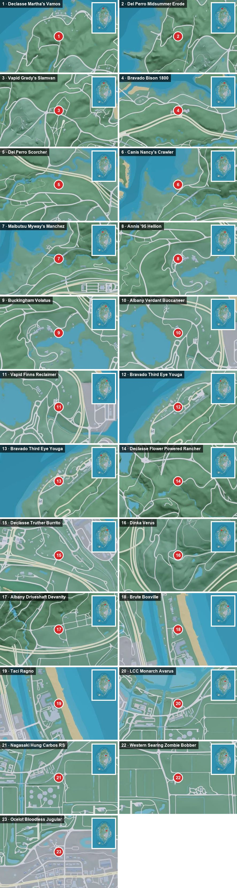
Chaque véhicule remarquable de le nord, de près (même numérotation)![Véhicules remarquables : l'ouest (comté de Kelly, autour de Port Gellhorn) — 1. Declasse Red Apple Orchard Rancher ; 2. BF Sludge Wraith Injection ; 3. Vapid Beer Monster Marshall ; 4. Pegassi Gold Rope Infernus ; 5. Bravado Circles of Hell Youga ; 6. Vapid Smuggler Caracara ; 7. Bravado Copperheads Gauntlet ; 8. Bravado Devil's Rope Gauntlet ; 9. Classique Emancipator Stallion ; 10. Vapid Firebug Dominator ; 11. Sirius Holdout Sungrazer ; 12. Karin Busted Cheater Rebel ; 13. Declasse Fruit Outlet Walton ; 14. Vapid Truth & Justice Caracara ; 15. Walter Ghost Cruiser ; 16. Airgator Naughty Boy Airboat ; 17. Vapid Smush! Ganado ; 18. Bravado Elven Queen Youga](images/17-vehicules-ouest.jpg)
Véhicules remarquables : l'ouest (comté de Kelly, autour de Port Gellhorn) — 1. Declasse Red Apple Orchard Rancher ; 2. BF Sludge Wraith Injection ; 3. Vapid Beer Monster Marshall ; 4. Pegassi Gold Rope Infernus ; 5. Bravado Circles of Hell Youga ; 6. Vapid Smuggler Caracara ; 7. Bravado Copperheads Gauntlet ; 8. Bravado Devil's Rope Gauntlet ; 9. Classique Emancipator Stallion ; 10. Vapid Firebug Dominator ; 11. Sirius Holdout Sungrazer ; 12. Karin Busted Cheater Rebel ; 13. Declasse Fruit Outlet Walton ; 14. Vapid Truth & Justice Caracara ; 15. Walter Ghost Cruiser ; 16. Airgator Naughty Boy Airboat ; 17. Vapid Smush! Ganado ; 18. Bravado Elven Queen Youga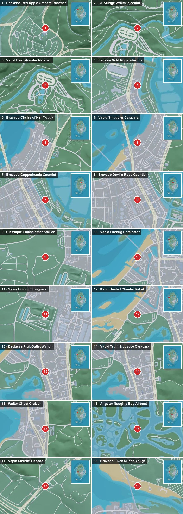
Chaque véhicule remarquable de l'ouest, de près (même numérotation)![Véhicules remarquables : Vice City et ses plages (comté de Vice-Dale) — 1. Vapid Brimstone Golfer ; 2. Buckingham Bourbon Windsor ; 3. Pegassi Charred Toros ; 4. Pegassi Valiant Tempesta ; 5. Progen Royal Ruby Emerus ; 6. Declasse Pink Gin Tulip ; 7. Canis Gunrunner Kamacho ; 8. Truffade Andrew Node's Thrax ; 9. Benefactor Nightlight Schafer ; 10. Progen Purple Drank Emerus ; 11. Pfister Class Act Comet ; 12. Dundreary Cherry Bomb Chino ; 13. Maibatsu Speedy Boomazoom ; 14. Imponte Bloodbath Phoenix ; 15. Maibatsu Tropical Manchez ; 16. Granforma Tsunami Zorrusso ; 17. Vapid Rumpo ; 18. Tuff Immortal BMX ; 19. LCC Midnight Sun Avarus ; 20. Albany Teniente Manana ; 21. BF Blood Moon Bandito](images/17-vehicules-vice-city.jpg)
Véhicules remarquables : Vice City et ses plages (comté de Vice-Dale) — 1. Vapid Brimstone Golfer ; 2. Buckingham Bourbon Windsor ; 3. Pegassi Charred Toros ; 4. Pegassi Valiant Tempesta ; 5. Progen Royal Ruby Emerus ; 6. Declasse Pink Gin Tulip ; 7. Canis Gunrunner Kamacho ; 8. Truffade Andrew Node's Thrax ; 9. Benefactor Nightlight Schafer ; 10. Progen Purple Drank Emerus ; 11. Pfister Class Act Comet ; 12. Dundreary Cherry Bomb Chino ; 13. Maibatsu Speedy Boomazoom ; 14. Imponte Bloodbath Phoenix ; 15. Maibatsu Tropical Manchez ; 16. Granforma Tsunami Zorrusso ; 17. Vapid Rumpo ; 18. Tuff Immortal BMX ; 19. LCC Midnight Sun Avarus ; 20. Albany Teniente Manana ; 21. BF Blood Moon Bandito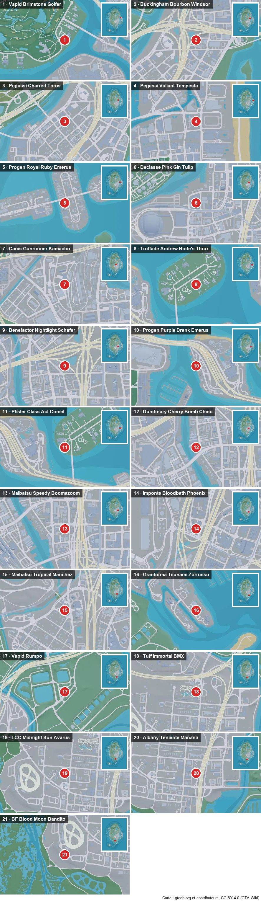
Chaque véhicule remarquable de Vice City et ses plages, de près (même numérotation)![Véhicules remarquables : le sud (Grassrivers, Hamlet et les Leonida Keys) — 1. Invetero Enforcer Coquette ; 2. Declasse Ghosts Exposed Parkland ; 3. Vapid Red Hot Hustler ; 4. Mer-Can Blast ; 5. Declasse Bugstars Burrito ; 6. Vapid Cultivator Sandking ; 7. Declasse Beach Candy Bobcat ; 8. Hauners Ridgway ; 9. Declasse Caliente Picador ; 10. Lapwing Stolen Valor 300-H ; 11. Brute Cherry Popper Boxville ; 12. Western Magma Cliffhanger ; 13. Camus Black Moth Kamacho ; 14. Sirius '61 Sungrazer ; 15. Declasse Mountain Yosemite ; 16. Seashark Westbound Azure ; 17. Airgator Dr Sheehan's Airboat ; 18. Seashark Hydroblast ; 19. Lure Predator Rainbow Ripple L20S ; 20. Bravado Tropic Dawn Youga ; 21. Nagasaki Rudolph Tao ; 22. Vapid Shrimp and Save Shifter ; 23. Declasse Cousin Carlo's Akane](images/17-vehicules-sud.jpg)
Véhicules remarquables : le sud (Grassrivers, Hamlet et les Leonida Keys) — 1. Invetero Enforcer Coquette ; 2. Declasse Ghosts Exposed Parkland ; 3. Vapid Red Hot Hustler ; 4. Mer-Can Blast ; 5. Declasse Bugstars Burrito ; 6. Vapid Cultivator Sandking ; 7. Declasse Beach Candy Bobcat ; 8. Hauners Ridgway ; 9. Declasse Caliente Picador ; 10. Lapwing Stolen Valor 300-H ; 11. Brute Cherry Popper Boxville ; 12. Western Magma Cliffhanger ; 13. Camus Black Moth Kamacho ; 14. Sirius '61 Sungrazer ; 15. Declasse Mountain Yosemite ; 16. Seashark Westbound Azure ; 17. Airgator Dr Sheehan's Airboat ; 18. Seashark Hydroblast ; 19. Lure Predator Rainbow Ripple L20S ; 20. Bravado Tropic Dawn Youga ; 21. Nagasaki Rudolph Tao ; 22. Vapid Shrimp and Save Shifter ; 23. Declasse Cousin Carlo's Akane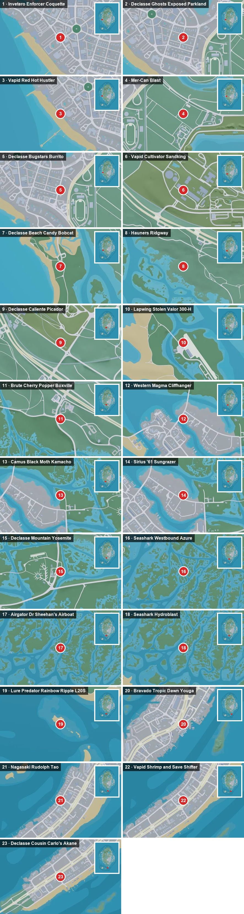
Chaque véhicule remarquable de le sud, de près (même numérotation) -
Les 16 véhicules Girlypop : une catégorie à part, dont la découverte complète débloque le filtre visuel Jungle néon (partie 26).
-
La Wyman's Classic Car Collection : une activité à part entière (partie 23).
Le trophée Whip It Good demande de découvrir 100 véhicules.
Les cascades
397 cascades au total, et le compteur de complétion en demande 300, pour 1 %.
| Type | Nombre |
|---|---|
| Stunt Jumps | 130 |
| Under the Bridges | 202 |
| Knife Flights | 40 |
| Base Jumps | 25 |
Le trophée Cunning Stunts en demande 250. Réussir 50 cascades uniques débloque le code de triche Nitro illimitée.
Les courses
- Les trois circuits : Gellhorn Raceway, Thrillbilly Mud Club et Boone Speedway. Finir premier dans dix courses sur ces trois pistes débloque le code Réparer le véhicule.
- Les 40 courses uniques : le compteur en demande 30 gagnées, pour 1 %.
- Les 13 défis de course : il faut 10 médailles d'or, pour 1 %.
- Les courses de drones Top Fun : 14 emplacements × 3 contre-la-montre = 42, et le compteur en demande les 42.
Le trophée Earn Cash, Not Kudos demande de gagner 20 courses différentes, et Top Fun une course de drone gagnée à chaque emplacement.
Quêtes et lieux
Les véhicules nommés du jeu
Ceux dont j'ai pu vérifier le nom exact, tous types confondus.
| Véhicule | Type | Où on le croise |
|---|---|---|
| Phoenix | Voiture | La fourrière d'Attention Indésirable |
| Crawler 82 | Voiture | Véhicule Quotidien |
| Schafter V12 | Voiture | Le chop shop de Car Service |
| Zorrusso | Voiture | Les Hathaway Apartments, 21 250 $ + 10 000 $ |
| Pfister Comet S2 | Voiture | Company Cars. Meilleures statistiques de vitesse des choix proposés |
| Penumbra | Voiture | Vespucci Island, l'easter egg Fast & Furious |
| '32 Hustler | Voiture | Le conteneur de Dubious Provenance |
| Bravado Banshee | Voiture | Code de triche : tous les défis de combat |
| '65 Vapid Dominator | Voiture | Code : tous les défis de fitness |
| Progen Emerus | Voiture | Code : tous les défis de véhicules |
| Truffade Thrax | Voiture | Code : tous les défis de shopping |
| Maibatsu Boomazoom | Voiture | Code : 5 défis de shopping |
| Vapid Stanier G2 Taxi | Taxi | Code : 5 défis sportifs |
| Ridgeway | Voiture | Sa découverte débloque le filtre Antan |
| Vamos de Martha | Voiture | Sa découverte débloque le filtre Cataclysme |
| Coochie Camper | Camping-car | Amateur Hour, à arrêter aux pneus |
| Maibatsu Sanchez | Moto-cross | Code : 5 défis criminels |
| Western Zombie Bobber | Moto | Code : tous les défis criminels |
| Nagasaki Carbon RS | Moto | Code : tous les défis d'exploration |
| Tuff BMX | Vélo | Code : 5 défis de fitness |
| Seashark | Jet-ski | Les poursuites de Boobie Time et Dubious Provenance |
| Speeder 700 GT | Bateau | Code : 5 défis de combat |
| Airboat 09 | Hydroglisseur | Code : 5 défis de survie |
| Lapwing Mallard | Avion de voltige | Code : 5 défis de véhicules |
| Hauners P-996 Lazer | Avion de chasse | Code : tous les défis du jeu |
| Nagasaki Sea Sparrow | Hélicoptère | Code : 5 défis d'exploration |
| Hauners Rhino Tank | Char | Code : tous les défis de survie. Trophée Challenging Tank |
| HVY Bulldozer | Engin | Code : découvrir le HVY Bulldozer |
| MTL Pumper | Camion de pompiers | Code : découvrir le MTL Pumper |
| Brimstone Golfer | Voiturette de golf | Code : tous les défis sportifs |
| Ambulance | Véhicule de secours | Traque d'Ambulance, et un code de triche |
| Bouée Flamant rose | Bouée | Code : détruire 50 flamants de cocaïne |
À quoi s'ajoutent, sans nom de modèle publié : l'hydravion des Keys, l'hydrocoptère et l'hydroglisseur de Bourbier, la pelleteuse de Mami Knows Best, le tracteur à bagages du VCIA, la voiturette de golf d'Halifax, la voiture pailletée de Shirley, le scooter de Peggy, le fourgon de Self Défense et le camion de traiteur de Fully Catered.
Les trophées liés aux véhicules
| Trophée | Condition | Grade |
|---|---|---|
| Whip It Good | Découvrir 100 véhicules | Bronze |
| On the Spot | Enregistrer 10 véhicules sur l'appli Scooter Bros | Bronze |
| Little Boxes | Acheter tous les garages | Bronze |
| Cunning Stunts | 250 cascades | Argent |
| Earn Cash, Not Kudos | Gagner 20 courses différentes | Bronze |
| Top Fun | Une course de drone gagnée à chaque emplacement | Bronze |
| Capital Offense | « Sortir en force d'un showroom automobile, à l'ancienne » | Bronze |
| Challenging Tank | « Il fait un peu chaud dans ces Rhino » | Bronze |
| Supply & Demand | Finir l'arc de Randy | Bronze |
Butin exhaustif
| Nom exact | Type | Où / comment l'obtenir | Utilité |
|---|---|---|---|
| Application Waink | Appli | Pendant Moses, au chapitre 2 | Scanner les véhicules et lire leur niveau de sécurité |
| Lock Pick | Outil | Très tôt au chapitre 2 | Ouvrir les voitures peu sécurisées |
| Key Cloner | Outil | Steal the Zorrusso for Randy, envoyé par Randy, à installer depuis le téléphone | Gardé définitivement. Les voitures à traceur avancé |
| Slim Jim | Outil | Équipement du jeu | Les portières |
| Snap Gun | Outil | Utilisé pendant Credit Check | Les portes de service |
| Tracker Jammer | Outil | Équipement du jeu | Les traceurs |
| Immobilizer Bypass | Outil | Équipement du jeu | Les antidémarrages |
| Réparation gratuite | Service | Débloquée par Juste une Égratignure | Une voiture neuve du même modèle, par téléphone |
| Service de voiture du Y Hotel | Service | Company Cars | Taxi gratuit, appelable devant l'hôtel |
| Port Gellhorn Station Garage | Propriété | Gratuit après Véhicule Quotidien | Premier garage |
| Les deux voitures de Company Cars | Véhicules | Au showroom, une par personnage | À toi, améliorables et revendables |
Conseils et pièges
Scanne, toujours. C'est la règle du jeu. Un scan te donne le niveau de sécurité, t'évite un trajet inutile, et remplit ta collection. Il n'y a aucune raison de ne pas le faire.
Roule vite avec un traceur avancé. Le réflexe naturel — ralentir pour ne pas se faire remarquer — est exactement le mauvais. La jauge se remplit à basse vitesse.
Ne scanne pas les Standout Vehicles en croyant avancer. Les 280 véhicules remarquables ne comptent pas dans le compteur des 277 modèles de base. Ce sont deux listes différentes.
La revente à Moses est le meilleur plan du chapitre 2. Et ses requêtes perso rapportent en plus.
Appelle le mécano plutôt que de réparer. La réparation gratuite livre une voiture neuve du même modèle. C'est plus rapide qu'un passage au garage.
Livre les voitures intactes. Le Zorrusso rapporte 10 000 $ de bonus sans une égratignure. Les commandes de Randy suivent probablement la même logique.
Les cascades se font en passant. 397 cascades, dont 202 passages sous les ponts : la plupart s'obtiennent simplement en traversant la carte sans couper les ponts. Garde-le en tête en roulant.
Alertes
- ⚠️ Moses refuse les voitures dont le niveau de sécurité est trop élevé. Scanne avant d'embarquer.
- ⚠️ Traceur avancé : rouler trop lentement remplit la jauge et envoie ta position à la police.
- ⚠️ Perte définitive : les armes stockées dans le coffre d'un véhicule volé disparaissent avec lui.
- ⚠️ Les 280 Standout Vehicles ne comptent pas dans le compteur des modèles de base.
- ⚠️ Deux applis : WAiNK et Scooter Bros sont sans doute distinctes, l'une pour scanner, l'autre pour enregistrer. À vérifier en jeu.
Check-list
- Appli Waink obtenue et premier scan réussi
- Réparation gratuite au garage essayée
- Lock Pick obtenu
- Key Cloner installé sur les deux personnages
- Une voiture à traceur avancé livrée sans alerter la police
- Moses utilisé pour revendre, requêtes perso comprises
- Randy débloqué comme point de dépôt
- Liste de requêtes de Randy terminée (trophée Supply & Demand)
- Un Pay 'n' Spray utilisé pour enregistrer une voiture
- 10 véhicules enregistrés (trophée On the Spot)
- 100 véhicules découverts (trophée Whip It Good)
- 200 des 277 modèles de base scannés
- Les 16 véhicules Girlypop découverts
- 300 des 397 cascades réalisées
- 250 cascades (trophée Cunning Stunts)
- 30 des 40 courses uniques gagnées
- 10 des 13 médailles d'or de défi de course
- Les 42 contre-la-montre de drone terminés
- 20 courses différentes gagnées (trophée Earn Cash, Not Kudos)
- Tous les garages achetés (trophée Little Boxes)
Complément
Jason, Lucia, la relation et les statistiques
L'essentiel
- La relation décide de la fin : il faut atteindre le palier Amour Ardent pour les deux bonnes fins du jeu.
- Ne pas rater : les icônes en forme de cœur sur la carte. Chacune est un gain de relation, et elles ne reviennent pas toujours.
- Le switch n'est pas libre tout de suite : scripté au chapitre 1, il se débloque à Pause Café et ne marche que quand les deux sont proches.
- Avant de partir : la pêche monte la concentration, le punching-ball de la remise monte le cardio, les poids du motel montent la force. Trois lieux, trois statistiques.
Objectif
Comprendre le duo. GTA VI ne te donne pas deux personnages interchangeables : Jason et Lucia ont leurs statistiques, leur profil criminel, leurs collections réservées, et une relation qui est le système le plus important du jeu — c'est elle qui conditionne la fin.
Itinéraire
Les lieux où l'on fait progresser le duo :
- Le ponton de ta maison, aux Leonida Keys : la pêche, pour la concentration.
- La remise sous la maison : le punching-ball, la meilleure méthode gratuite pour le cardio.
- La piscine du Starlet Motel, à Port Gellhorn : les poids et les kettlebells, pour la force de Lucia.
- Les salles de sport : vélo d'intérieur et tapis de course, redoutablement efficaces mais payants et loin au début.
- Les dix spots de méditation, répartis dans tout Leonida.
- Les sentiers du Mont Kalaga et les promenades côtières de Vice City : les meilleures lignes droites pour sprinter.
📍 La zone en images : la carte interactive française, pour filtrer les salles de sport et les spots — https://gta6map.io/
Déroulé pas à pas
Les deux protagonistes
- Jason Duval : il a grandi dans un milieu de malfrats, s'est engagé dans l'armée, puis s'est lancé dans le trafic. Sa rencontre avec Lucia lui offre l'espoir d'une vie meilleure. Son métier : « vol de voitures et vols à main armée », et sa voix comme celle de Dylan Rourke.
- Lucia Caminos : elle sort de prison au chapitre 1. Elle a appris les arts martiaux enfant pour se défendre, et ça se voit dès qu'elle se bat à mains nues. Sa voix est celle de Manni L. Perez.
- Tomás Caminos : le fils de Lucia, que le flashback d'Another Life met en scène et dont le sort change selon la fin.
- ⚠️ Il serait aussi lié à la famille de Jason. À vérifier en jeu.
Le changement de personnage
- Au chapitre 1 : le jeu décide pour toi. Tu joues Jason, puis Lucia à partir de Permission de Sortie, et le passage se fait en cours de mission dans Piège à Touristes.
- Au chapitre 2 : tu ne contrôles que Lucia jusqu'à Pause Café, qui débloque le switch.
- ⚠️ Mais seulement quand Jason et Lucia sont proches l'un de l'autre. Du moins dans ce chapitre : la liberté totale vient plus tard.
- L'intérêt en combat : changer de personnage dans une fusillade te donne accès aux armes de l'autre. Dans une même arène, ça double ton arsenal. C'est la clé du braquage du bowling.
- La fenêtre fermée du chapitre 4 : de Making Gainz à VCIA Takedown, le couple ne peut pas être vu ensemble en public. Ils ne se retrouvent que dans leur chambre du Y Hotel.
La relation
C'est le système à ne pas négliger, et le jeu ne te dit pas pourquoi.
- Les paliers : la jauge d'affinité monte par paliers. Deux noms sont publiés :
| Palier | Nom | Ce qu'il débloque |
|---|---|---|
| 1 | ⚠️ non publié | — |
| 2 | ⚠️ non publié | — |
| 3 | Fous Amoureux | Une scène intime brève, qui se termine par un fondu au noir |
| 4 | Amour Ardent (Hot Together) | Une cinématique nettement plus explicite, et ⚠️ le palier exigé par les deux bonnes fins |
- Comment la faire monter : par le temps passé ensemble en monde ouvert. Concrètement :
- Les icônes en forme de cœur sur la carte. Fais-les dès qu'elles apparaissent.
- Les rendez-vous et les activités à deux.
- Les cadeaux : le bijou à 450 $ du chapitre 1, qui met plusieurs jours en jeu à arriver.
- Les courses faites ensemble.
- La rénovation de la maison de Jason, au chapitre 1.
- Les visites du soir à Jason au Starlet Motel, pendant Play Nurse.
- Les petits gestes de mission : commander le Surf and Turf que Lucia réclame, poser les charges à deux dans Hidden Charges.
- Les cinq choix de scénario qui comptent :
| Mission | Partie du guide |
|---|---|
| Hé, Arnold ! | Partie 2 |
| Island Dreams | Partie 2 |
| Bourbier | Partie 3 |
| Permission de Sortie | Partie 3 |
| Safe Word | Partie 9 |
- Un choix qui ne compte pas : le ton employé avec Mandy pendant Plomberie, provoquer ou apaiser, n'a aucun effet.
- Ce qui l'abîme : abandonner Lucia pendant Heurts de Départ, et accepter les stéroïdes dans Making Gainz — le jeu prévient que Lucia ne sera pas contente du choix de Jason pendant Safe Word.
Les scènes intimes
- Par le scénario : certains passages de la trame les déclenchent automatiquement, notamment à l'issue de missions où le couple décide de passer la nuit ensemble.
- En extérieur : une fois le palier atteint, concentre-toi sur ton partenaire. Une icône de maison avec un cœur et le message « Retourner à la maison » peuvent apparaître, ce qui fixe la destination.
- ⚠️ Impossible dans une ruelle ou dans un parc. Il faut rentrer.
- Dans les planques : c'est variable. Parfois interagir avec ton partenaire suffit, parfois des interactions spéciales sont disponibles, y compris avec le lit en allant dormir.
- Le temps de recharge : ⚠️ les scènes ne s'enchaînent pas à l'infini. Un délai s'applique après chacune.
Les statistiques
Le jeu suit plusieurs caractéristiques physiques et techniques qui évoluent selon ta façon de jouer. ⚠️ La liste complète n'est pas connue. Voici les trois qui le sont, et comment les monter.
La concentration
- Ce qu'elle fait : elle détermine la taille de la jauge violette, donc la durée de la visée ralentie, la stabilité de tir, et le sang-froid pendant les braquages (partie 16).
- La meilleure méthode, de loin : la pêche. 5 à 10 % par poisson. Depuis le ponton de ta maison ou depuis un bateau, de préférence sur un banc de poissons.
- Maintiens puis appuie pour lancer la ligne le plus loin possible.
- Trace des cercles très lentement avec le stick pour attirer les poissons.
- Ferre quand l'un mord, puis mouline rapidement.
- Les bonus ponctuels : le Cigare ramassé chez Mandy et dans les conteneurs SCOOP, et les trois chats du Starlet Motel à complimenter, caresser et nourrir.
Le cardio
- Ce qu'il fait : il détermine ta capacité à sprinter longtemps, à nager sans s'épuiser et à enchaîner les efforts pendant les braquages et les poursuites.
- La meilleure méthode gratuite : le punching-ball. Entre dans la remise sous ta maison avec Jason, porte le punching-ball jusqu'à une poutre, accroche-le, et tape dessus en boucle. C'est le moyen le plus rapide de vider ta barre d'endurance, donc de monter le cardio.
- Les autres méthodes : le sprint — privilégie la course à pied sur les courtes distances —, la natation du côté des Leonida Keys, le kayak, le vélo, et la salle de sport avec son vélo d'intérieur et son tapis de course, redoutablement efficaces mais payants et éloignés au début du jeu.
- ⚠️ Il y a des seuils par activité : une même discipline finit par ne plus rien rapporter. Alterne entre plusieurs pratiques.
- L'alimentation compte aussi dans l'entraînement.
La force
- Ce qu'elle fait : elle monte aussi la barre de santé.
- La méthode : les poids et les kettlebells près de la piscine du Starlet Motel, à Port Gellhorn. C'est l'occupation idéale entre deux visites à Jason pendant Play Nurse.
L'apparence
- Elle change avec ce que tu fais : trop manger provoque une prise de poids et un ventre, s'entraîner construit du muscle.
- Le choix des stéroïdes : ⚠️ accepter ceux de Nate dans Making Gainz change le physique de Lucia pour tout le reste du jeu. C'est un choix actif, tu ne le feras pas par accident, mais il est irréversible sans recharger.
Le profil criminel
Chaque personnage a le sien, et les deux doivent être propres pour les bonnes fins. L'échelle et le détail de ce qui le fait monter ou descendre sont dans la partie 16.
Quêtes et lieux
Les contenus réservés à un personnage
| Contenu | Réservé à |
|---|---|
| Bret's Target Decks — 15 jeux, tous requis | Jason seul, à partir de Pause Café |
| Les tatouages de magazine — 13 pour Jason, 15 pour Lucia | Chacun les siens (partie 22) |
| Les spots de méditation | Les deux, et chacun compte : 10 lieux, 18 validations possibles |
Les trophées du duo
| Trophée | Condition | Grade |
|---|---|---|
| Hot Together | Perdre un indice de recherche 4 étoiles avec ton partenaire et semer la police | Bronze |
| Retail Therapy | Braquer trois boutiques d'affilée avec ton partenaire sans perdre l'indice | Bronze |
| Positive Mental Attitude | Méditer à chaque spot de Leonida | Bronze |
| Personal Best | « Un partenariat qui a du ressort » | Bronze |
| Master of None | Essayer chaque type d'activité une fois | Bronze |
| Baited My Tackle | Battre Cal à un défi de pêche | Bronze |
Les codes de triche liés au couple
Plusieurs filtres visuels se débloquent par des actions à deux (partie 26) :
| Code | Condition |
|---|---|
| Heure dorée | Passer 4 heures à se tenir la main |
| Maison de poupée | Passer 8 heures avec ton partenaire |
| Cassette vidéo | 50 activités avec ton partenaire |
| Sténopé | 25 opérations de gangs nettoyées avec ton partenaire |
| Gloire passée | 50 magasins braqués avec ton partenaire |
| Avance rapide | 50 séances de méditation |
Autrement dit : le jeu récompense explicitement le temps passé ensemble, en plus de la fin.
Butin exhaustif
| Nom exact | Type | Où / comment l'obtenir | Utilité |
|---|---|---|---|
| Punching-ball | Équipement | Dans la remise sous la maison de Jason, à accrocher à une poutre | Meilleure méthode gratuite pour le cardio |
| Poids et kettlebells | Équipement | Près de la piscine du Starlet Motel | Force et barre de santé |
| Canne à pêche (Fishing Rod) | Équipement | Disponible dès le chapitre 1 | Concentration, 5 à 10 % par poisson |
| Cigare | Consommable | Chez Mandy, et dans les conteneurs SCOOP | Régénère la concentration |
| Les trois chats | Bonus | Près du Starlet Motel : complimenter, caresser, nourrir | Concentration et profil Professionnel |
| Bijou à 450 $ | Cadeau | En boutique au chapitre 1. Plusieurs jours de livraison | Affinité |
| Surf and Turf | Repas | À commander au rooftop bar pendant Meet the Heders | Petit bonus de relation |
| Compte BuckMe Black | Compte | Another Life | Épargne familiale, plafond 2 000 000 $ (partie 13) |
| Vélo d'intérieur et tapis de course | Équipement | En salle de sport, payant | Cardio, très efficace |
Conseils et pièges
Les cœurs d'abord. Dès qu'une icône de cœur apparaît sur la carte, vas-y. C'est le conseil le plus rentable du jeu : la relation conditionne la fin, et ces occasions ne reviennent pas toujours.
Ne grille pas la fenêtre du chapitre 4. De Making Gainz à VCIA Takedown, le couple ne peut plus se montrer en public. Fais tes rendez-vous avant, et reprends dès que la fenêtre se rouvre.
Pêche quand tu attends. Le jeu te fait souvent patienter plusieurs jours en jeu avant un appel. La pêche remplit ce temps mort et monte la statistique la plus utile du jeu.
Alterne tes entraînements. Chaque activité a un plafond. Punching-ball, sprint, natation, vélo : fais-en un peu de chaque.
Le punching-ball est chez toi. Une fois accroché à sa poutre, il est disponible à chaque passage. Deux minutes à chaque fois, et le cardio monte sans y penser.
Médite à deux, et avec les deux. Chaque spot peut être validé par Jason et par Lucia. Dix lieux, dix-huit validations, et le compteur du 100 % en demande quinze.
Garde ton profil propre, sur cinquante heures. Le profil criminel ne se rattrape pas en une mission. Désarmer plutôt que tuer est une habitude à prendre dès le chapitre 1.
Alertes
- ⚠️ Conséquence sur la fin du jeu : il faut le palier Amour Ardent et les deux profils criminels propres pour les fins 4 et 5 (partie 13).
- ⚠️ Fenêtre fermée : de Making Gainz à VCIA Takedown, le couple ne peut pas être vu ensemble en public.
- ⚠️ Choix irréversible : accepter les stéroïdes de Nate change le physique de Lucia pour le reste du jeu.
- ⏳ Manquable : les icônes en forme de cœur sur la carte, et le bijou à 450 $ s'il est commandé trop tard.
- ⚠️ Abandonner Lucia pendant Heurts de Départ abîme la relation.
- ⚠️ Noms non publiés : les paliers 1 et 2 de la relation, et la liste complète des statistiques. À vérifier en jeu.
Check-list
- Switch débloqué à Pause Café
- Switch utilisé en combat pour doubler l'arsenal
- Toutes les icônes de cœur faites dès leur apparition
- Bijou à 450 $ commandé à temps
- Maison de Jason entièrement rénovée
- Surf and Turf commandé pour Lucia
- Visites du soir à Jason faites pendant Play Nurse
- Charges posées à deux dans Hidden Charges
- Palier Fous Amoureux atteint
- Palier Amour Ardent atteint
- Punching-ball accroché et utilisé
- Poids du Starlet Motel utilisés
- Pêche pratiquée régulièrement
- Cal battu à la pêche (trophée Baited My Tackle)
- Les trois chats caressés et nourris
- 15 des 18 validations de méditation faites
- Tous les spots de méditation faits (trophée Positive Mental Attitude)
- Choix des stéroïdes fait en connaissance de cause
- Chaque type d'activité essayé une fois (trophée Master of None)
- Les deux profils criminels propres
Complément
Le téléphone et ses applications
L'essentiel
- L'appli qui compte le plus : BuckMe, et surtout sa version BuckMe Black. C'est elle qui décide de la meilleure fin du jeu.
- Ne pas rater : consulte les réseaux sociaux avant de dormir. Des opportunités de missions se cachent dans les posts, et elles ne s'annoncent pas autrement.
- L'appli à dégainer partout : WAiNK. Elle scanne les véhicules, les lieux, les débris spatiaux et des tatouages. Trois compteurs du 100 % en dépendent.
- Avant de partir : appelle le mécano. La réparation gratuite d'une voiture tient en un coup de fil.
Objectif
Le téléphone est le centre de commande du jeu. Il gère ton argent, tes véhicules, tes contacts, tes photos, tes collections, tes déplacements et tes codes de triche. Cette partie recense ce qu'on y trouve et ce que chaque appli sert à faire.
Itinéraire
Rien à parcourir. Une seule chose à retenir : le téléphone s'ouvre par une pression sur la croix directionnelle, et c'est aussi par lui que passent les codes de triche en fin de jeu (partie 26).
Déroulé pas à pas
WAiNK
L'appli la plus polyvalente du jeu, et celle qui remplit le plus de compteurs.
- Scanner les véhicules : elle révèle leur niveau de sécurité, ce qui te dit si Moses les reprendra, et elle les ajoute à ta collection. 277 modèles de base à scanner, dont 200 pour le 100 % (partie 17).
- Scanner les lieux : il faut en scanner 100 pour le compteur de complétion et pour le trophée You WAiNKer!.
- Scanner les débris spatiaux : les scanner tous débloque le filtre visuel Sucre glace (partie 26).
- Les tatouages de magazine : 17 des 79 styles découverts passent par WAiNK (partie 22).
BuckMe
- Le compte de base : débloqué pendant la mission BuckMe, au chapitre 1. La Fleeca ne proposait que ce service au jeune couple, vu leurs casiers.
- Son usage vital : ⚠️ si tu meurs hors mission, tout l'argent liquide que tu portes est perdu, et la sauvegarde automatique t'empêche de revenir en arrière. Dépose avant toute activité risquée.
- L'épargne : elle s'ouvre dès le chapitre 1, par la petite tâche Save for the Future qui suit la mission BuckMe. C'est l'Épargne familiale.
- Le BuckMe Black : obtenu dans Another Life, au chapitre 4. Il porte le plafond de l'épargne à 2 000 000 $.
- L'avertissement : ⚠️ au chapitre 5, la mission Honest Abe fait disparaître ton compte courant. Seule l'épargne est protégée, et Abe exige un compte vieux d'au moins deux mois (partie 13).
| Règle de l'Épargne familiale | Détail |
|---|---|
| Seul l'argent viré compte | Gagner ne suffit pas, il faut transférer |
| L'argent n'est pas retirable | Aucun risque à trop en mettre |
| Le solde survit à Piège à Touristes | Contrairement au magot sous le parquet |
| Paliers affichés | 5 000 $, 15 000 $, 100 000 $, 2 000 000 $ |
⚠️ Le palier à 2 000 000 $ est la seule différence entre la quatrième et la cinquième fin du jeu (partie 13).
Scooter Bros
- L'enregistrement des véhicules : le trophée On the Spot demande d'enregistrer dix véhicules sur cette appli. Une fois enregistré, un véhicule se rappelle depuis l'application.
⚠️ Deux applis : Waink pour scanner, une autre appli pour rappeler les voitures, et Scooter Bros pour l'enregistrement (trophée). Elles coexistent probablement, chacune avec son rôle. À vérifier en jeu.
RideMe
- Le taxi : le service de transport du jeu, appelable depuis le téléphone. Utile pour les trajets longs et sans intérêt, comme la traversée jusqu'à Capri dans Dubious Provenance.
Il ne remplace pas le service de voiture du Y Hotel, qui est gratuit et appelable depuis le devant de l'hôtel pour tout le reste du jeu (partie 10).
Vice City Real Estate
- L'achat de garages : c'est par cette appli que passent les huit garages achetables, pour 160 000 $ au total (partie 24).
WhatUp
- La messagerie : l'appli qu'on fouille sur le téléphone de Nate pendant Heavy Lifting, pour lire les messages de l'équipe de Kordell.
Fleeca
- La banque : celle qui refuse le couple au chapitre 1 et ne lui laisse que BuckMe. Ses succursales sont les cibles des braquages de Credit Check.
- L'appli : c'est de la Fleeca de Lucia que partent les 2 500 000 $ de la cinquième fin.
Les réseaux sociaux
- La mécanique : des opportunités de missions secondaires se cachent dans les posts. Le jeu ne te le dit pas clairement et beaucoup de joueurs passent à côté.
- Le réflexe : consulte-les avant de te coucher, chaque soir. La mission Nouvelle Adresse te l'apprend explicitement, puis plus personne ne te le rappelle.
Ils font partie, avec les affiches, les prospectus et les passants qui t'interpellent, des quatre sources d'opportunités non scriptées du jeu.
L'appareil photo
- En mission : il sert dans Photo/Shoot pour les Dimez dans l'hélicoptère, dans Dirty Work pour les photos par la fenêtre du motel, et dans Adventures in Babysitting pour la photo d'Andrés avec ses amis.
- Hors mission : il fait aussi partie des interactions du monde ouvert.
Les contacts
Appeler les gens est une mécanique active du jeu, pas un décor.
| Qui appeler | Pourquoi |
|---|---|
| Le mécano | La réparation gratuite d'un véhicule, débloquée dès Juste une Égratignure |
| Kirk | Lancer l'arc du Singe qui pue, depuis le numéro de son affiche. Manuellement, dans les contacts |
| Dunk | Accélérer l'attente de Got Pills? : il donne parfois la mission suivante directement |
| Nate | Déclencher Cash Injections sans attendre son appel |
| Valentina | La rappeler pour accélérer l'affaire dans Sunset |
| Randy | Demander un tuyau à la fois sur l'emplacement des voitures de sa liste |
| Abe | Se renseigner, et dans la cinquième fin, conclure |
Le jeu liste aussi un Auto Dialer dans son équipement.
La progression et les codes
- Le menu Progression : c'est là que se trouvent les statistiques, le pourcentage de progression de l'histoire, les collections sous Collections → Exploration, et après la fin, la liste de complétion à 100 % sous Statistiques.
- L'onglet des codes de triche : il apparaît dans le menu Progression après le générique de fin, avec ses 61 codes (partie 26).
- La saisie d'un code : ouvre le téléphone à la croix directionnelle, maintiens puis appuie sur les touches indiquées, et entre la combinaison directionnelle.
Quêtes et lieux
Les quatre sources d'opportunités non scriptées
Le jeu ne pose presque jamais une mission secondaire sur ta route. Il faut aller la chercher.
| Source | Exemple concret |
|---|---|
| Les réseaux sociaux | Plusieurs opportunités du chapitre 2 ne se déclenchent que par un post |
| Les affiches et prospectus | Les affiches de Kirk sur le panneau du magasin d'armes |
| Les passants | Shirley t'alpague quand tu traînes dans le quartier |
| L'exploration | Le Chien Cool et le fusil silencieux ne sont annoncés par rien |
Ce que le téléphone remplit dans le compteur du 100 %
| Compteur | Appli concernée |
|---|---|
| 100 lieux scannés à la WAiNK | WAiNK |
| 200 des 277 modèles de base scannés | WAiNK |
| 17 tatouages de magazine | WAiNK |
| Tous les débris spatiaux (code de triche) | WAiNK |
| 2 000 000 $ d'Épargne familiale (fin 5) | BuckMe Black |
| 10 véhicules enregistrés (trophée) | Scooter Bros |
Butin exhaustif
| Nom exact | Type | Où / comment l'obtenir | Utilité |
|---|---|---|---|
| Application Waink | Appli | Pendant Moses, au chapitre 2 | Scanner véhicules, lieux, débris spatiaux, tatouages |
| BuckMe | Compte | Mission BuckMe, chapitre 1 | Mettre l'argent à l'abri de la mort |
| BuckMe Black | Compte | Another Life, chapitre 4 | Épargne familiale, plafond 2 000 000 $. Décide de la meilleure fin |
| Scooter Bros | Appli | Au terme de la mission d'histoire dédiée aux voitures | Enregistrer et rappeler les véhicules |
| RideMe | Service | Disponible depuis le téléphone | Taxi payant |
| Service de voiture du Y Hotel | Service | Company Cars, chapitre 4 | Taxi gratuit, devant l'hôtel |
| Vice City Real Estate | Appli | Chapitre 3 | Acheter les huit garages, 160 000 $ au total |
| Key Cloner | Outil logiciel | key_cloner_v1.6.9, envoyé par Randy, à installer depuis le téléphone |
Les voitures à traceur avancé |
| Auto Dialer | Équipement | Dans la liste d'équipement du jeu | Téléphonie |
| Réparation gratuite | Service | Débloquée par Juste une Égratignure | Une voiture neuve du même modèle, par téléphone |
| Liste des codes de triche | Menu | Menu Progression, après le générique | Les 61 codes |
Conseils et pièges
Dépose sur BuckMe, systématiquement. C'est le conseil le plus important, pour une raison simple : mourir hors mission avec du liquide sur soi, c'est de l'argent définitivement perdu.
Vire sur l'Épargne familiale dès le chapitre 4. Deux millions, c'est long. Et comme l'argent n'est pas retirable, il n'y a aucun inconvénient à commencer tôt.
Les réseaux sociaux avant de dormir. Le réflexe le plus facile à oublier du jeu, et celui qui ouvre le plus de contenu.
Scanne tout. Les voitures, les lieux, les débris. WAiNK alimente quatre compteurs différents et ça ne coûte que quelques secondes.
Appelle plutôt que d'attendre. Got Pills? et Cash Injections se déclenchent par un appel au lieu d'attendre plusieurs jours en jeu.
Demande les tuyaux de Randy un par un. Sa liste de voitures rares démarre sans aucune indication. Chercher soi-même est plus satisfaisant, mais Randy a la réponse si tu bloques.
Alertes
- ⚠️ Argent perdu : mourir hors mission avec du liquide sur soi. Dépose sur BuckMe.
- ⚠️ Conséquence sur la fin du jeu : le palier 2 000 000 $ de l'Épargne familiale sépare la quatrième fin de la cinquième.
- ⏳ Manquable : les opportunités cachées dans les posts des réseaux sociaux, si tu ne les consultes jamais.
- ⚠️ Divergence de sources : la répartition exacte des rôles entre WAiNK et Scooter Bros. À vérifier en jeu.
Check-list
- BuckMe débloqué et utilisé à chaque sortie risquée
- BuckMe Black obtenu dans Another Life
- 2 000 000 $ virés sur l'Épargne familiale
- WAiNK utilisée pour scanner les véhicules
- 100 lieux scannés (trophée You WAiNKer!)
- Débris spatiaux tous scannés
- 10 véhicules enregistrés sur Scooter Bros (trophée On the Spot)
- RideMe et le service de voiture du Y Hotel essayés
- Les huit garages achetés via Vice City Real Estate
- Réseaux sociaux consultés chaque soir
- Kirk appelé depuis le numéro de son affiche
- Dunk et Nate appelés pour accélérer leurs missions
- Réparation gratuite utilisée au moins une fois
- Onglet des codes de triche débloqué après le générique
Complément
L'argent : braquages, recel et revente
L'essentiel
- La règle de survie : si tu meurs hors mission, tout ton argent liquide est définitivement perdu. Dépose sur BuckMe avant chaque sortie risquée.
- Le robinet du jeu : le Dye Pack Jammer de Credit Check débloque le vol des billets marqués dans toutes les banques et tous les Payday Loans.
- Le meilleur receleur : Yasmani. Il paie plus que tous les autres pour les bijoux et les billets marqués.
- Avant de partir : le coup le plus rentable du jeu est The Cartel Heist, à 120 000 $.
Objectif
Gagner de l'argent, et le garder. GTA VI a resserré la vis : l'argent liquide se perd à la mort, les voitures ne se revendent pas toutes, et les gros systèmes de braquage se débloquent au compte-gouttes.
Et il y a une raison de thésauriser au-delà du confort : la cinquième et meilleure fin du jeu exige 2 000 000 $ sur l'Épargne familiale (partie 13).
Itinéraire
Les points de vente et de recel du jeu :
- L'entrepôt de Brian et la caravane de Donnie, aux Leonida Keys : pour la coke du chapitre 1. Donnie paye mieux que Brian.
- Le garage de Moses, à Port Gellhorn : la revente de voitures du chapitre 2, et le meilleur plan de son chapitre.
- Le smoke shop de Yasmani, à Vice City : bijoux et billets marqués, au meilleur taux.
- Leonida Auto World, coin nord-ouest : Randy reprend les véhicules à traceur standard.
- Les Pay 'n' Spray : achètent et enregistrent les voitures à traceur standard.
- Kenton, en mer : les trésors sous-marins, simples et rentables.
📍 La zone en images : la carte interactive française, filtrable par type de lieu — https://gta6map.io/
Déroulé pas à pas
La règle qu'il faut comprendre avant tout
- La mort hors mission coûte tout ton liquide. ⚠️ Et la sauvegarde automatique t'empêche d'y remédier.
- Les deux abris : ton compte BuckMe, et la planque de ton chapitre.
- Le réflexe : déposer avant chaque braquage, chaque camp de gang, chaque sortie en territoire hostile.
Au chapitre 1 : les premiers dollars
Les opportunités sont très limitées, et c'est voulu.
-
Les corvées de Brian : loyers, livraisons, la Phoenix de la fourrière. Payé à chaque fois, souvent dans l'arrière-salle de son garage.
-
Le cambriolage de la Façade d'animaux exotiques (icône jaune) : plusieurs milliers de dollars sont cachés derrière une bouche de ventilation, à côté du générateur, plus de l'argent dans l'arrière-boutique. Ne rate ni l'un ni l'autre.
-
Les largages de Donnie : il te contacte rapidement pour récupérer sa drogue dans les mangroves du nord. C'est très rentable.
-
Les briques de coke : on en trouve lors d'événements de carte. Dépose-les à l'entrepôt de Brian ou derrière la caravane de Donnie.
- Donnie paye mieux que Brian pour ce type de produit.
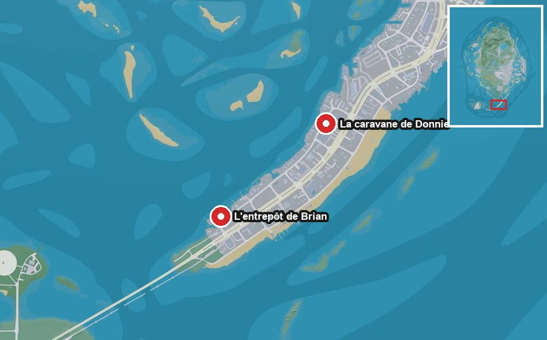
Où déposer la coke au chapitre 1 -
Kenton et la plongée : après Island Dreams, l'arc de l'explorateur ouvre la récupération illégale de trésors dans les épaves. C'est simple, rentable, et sans combat.
- Fais le tour des épaves du sud, puis retourne lui parler. Au bout d'un moment, il en marque de nouvelles.
-
Les secrets : le Chien Cool rapporte un portefeuille à plus de 1 000 $ et un coffre au code 44017. Le camp des Kingfishers donne de l'argent, de la drogue et une arme unique.
Au chapitre 2 : la revente de voitures
- Moses : scanne, enregistre, revend. De tous les plans de ce chapitre, c'est de loin le plus rentable. Refourgue-lui un maximum de tes trouvailles et complète ses requêtes perso.
- Les braquages de magasins s'ouvrent aussi, et le bowling de Kolt & Associates est une excellente affaire (partie 6).
- L'objectif chiffré : le chapitre exige 15 000 $ sur BuckMe pour avancer. Vise plus haut : Vice City coûte cher.
Au chapitre 3 : les billets marqués
C'est le vrai basculement économique du jeu.
-
Le Dye Pack Jammer : pris sur le bureau de Karim pendant Credit Check. Il débloque le vol des billets marqués dans les banques et les boutiques Payday Loans.
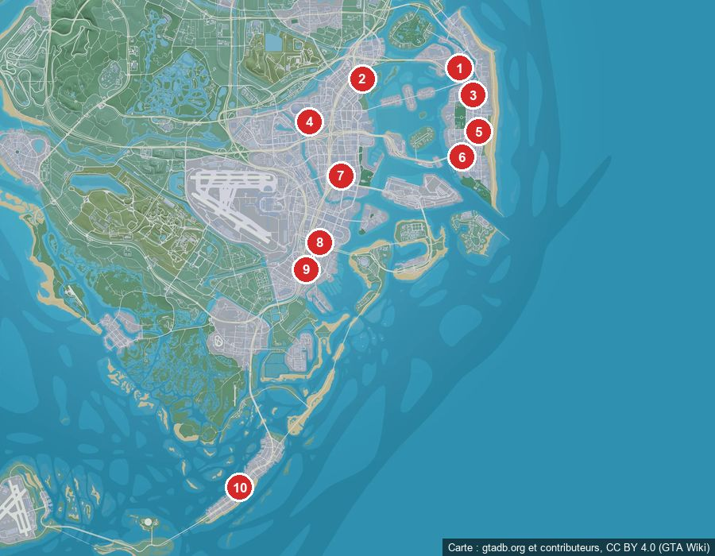
Les 10 agences bancaires que le wiki situe déjà (le jeu compte 22 contrats de banque) — 1. Washington Beach Fleeca Bank ; 2. Bayside Lombank ; 3. Ocean Beach Lombank ; 4. Rockridge Shorefront Bank ; 5. Ocean Beach Fleeca Bank ; 6. Ocean Beach Shorefront Beach ; 7. Downtown Shorefront Bank ; 8. Peacock Bay Fleeca Bank ; 9. Peacock Bay Lombank ; 10. Key Lento Fleeca Bank -
La méthode en banque :
- ⚠️ Équipe ton masque depuis l'inventaire avant d'entrer.
- Menace les gardes, puis vide les quatre tiroirs-caisses marqués derrière le comptoir.
- Dis à ton partenaire d'attendre dans la voiture comme chauffeur de fuite, ou change de personnage quand un sac est plein pour doubler le butin.
- Sépare-toi de ton partenaire pour diviser la police en fuyant.
-
Yasmani : débloqué par Boobie Time. Il paie plus que les autres receleurs pour les bijoux et les billets marqués.
-
Randy : débloqué par Car Service. Il reprend les véhicules à traceur standard et les modèles de sa liste de requêtes.
Au chapitre 4 : les coffres
-
L'optionnelle That's Where the Money Is… débloque les 8 coffres de banque. Ne la saute pas : elle vaut 2 % du compteur de complétion et le trophée argent Maximum Withdrawal (partie 12).
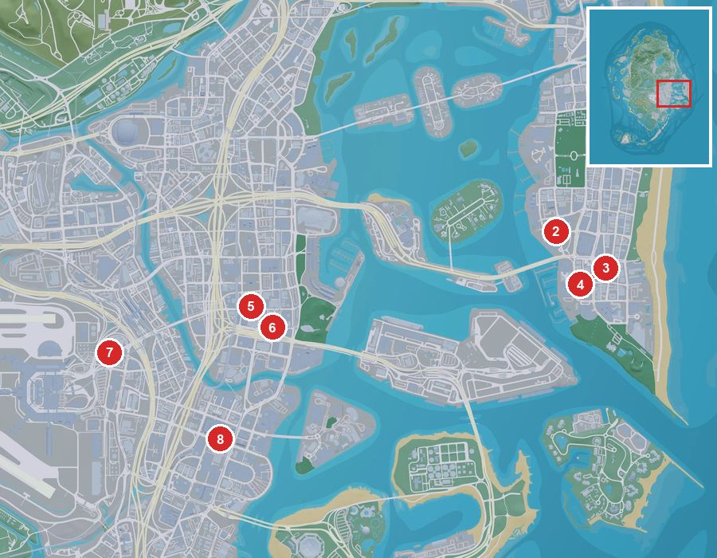
Les 8 coffres de banque — 1. Ocean Beach Shorefront Big Bank 1 ; 2. Ocean Beach Lombank Big Bank 1 ; 3. Ocean Beach Fleeca Big Bank ; 4. Ocean Beach Lombank Big Bank 2 ; 5. Downtown Fleeca Big Bank ; 6. Downtown Lombank Big Bank ; 7. VCIA Fleeca Bank ; 8. Tequesta Fleeca Big Bank
Ce que paient les missions
Les montants publiés, du plus gros au plus petit.
| Mission | Gain | Partie |
|---|---|---|
| The Cartel Heist | 120 000 $ | 9 |
| Steal the Zorrusso for Randy | 21 250 $, plus 10 000 $ si la voiture est intacte | 9 |
| Bad Driver! | 20 000 $ si tu tues Felipe | 11 |
| Credit Check | 6 000 $ | 8 |
| Photo/Shoot | 6 000 $ | 11 |
| Race Against Yago | Jusqu'à 3 800 $ pour une première place | 8 |
| Bricked Up | 3 500 $, uniquement si tu prends le sac rouge | 9 |
| Car Service | 3 000 $ | 8 |
| First Impressions | 3 000 $ | 8 |
| Crosstown Traffic | 3 000 $ | 8 |
| South Leonida Real Estate | 2 000 $, versés bien plus tard | 7 |
| Dubious Provenance | Environ 2 500 $ en bijoux et liquide dans le conteneur | 7 |
| Safe Word | 1 500 $ dans le coffre d'entraînement | 9 |
| Amateur Hour | 1 000 $ | 11 |
| Meet the Heders | 600 $ dans un conteneur SCOOP ouvert en plus | 7 |
⚠️ Plusieurs missions ne publient pas leur gain, dont VCIA Takedown, le braquage du chapitre 4. Je ne vais pas inventer de montants.
Les six types de contrats
Ils forment 13 % du compteur de complétion à eux seuls.
| Contrat | Objectif du 100 % | Poids | Débloqué par |
|---|---|---|---|
| Gang Operations | 39 sur 39 nettoyées | 3 % | La progression |
| Bank Jobs | 22 sur 22 entièrement faites | 2 % | Credit Check |
| Payday Loan Jobs | 7 sur 7 entièrement faites | 2 % | Credit Check |
| Smash 'N' Grabs | 34 sur 35 entièrement faites | 2 % | — |
| Stick Ups | 50 sur 91 entièrement faites | 2 % | — |
| Vaults | 8 sur 8 braqués | 2 % | That's Where the Money Is… |
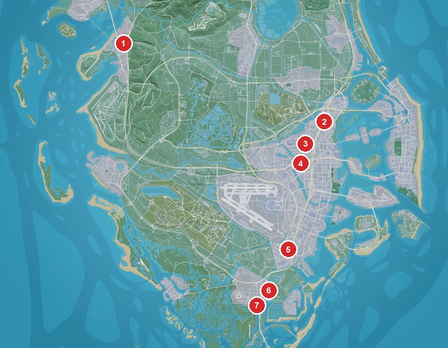
Les 7 boutiques de prêt sur salaire, une par Payday Loan Job — 1. Cash Flow ; 2. La Perle Quick Buck ; 3. Rockridge Payday Loans Store ; 4. Little Cuba Payday Loans Store ; 5. Southside Payday Loans Store ; 6. Payline Loans 247 ; 7. Hamlet Quick Buck
Les quatre compteurs de recel
Chacun vaut 2 %, soit 8 % à eux quatre.
| Compteur | Montant à écouler |
|---|---|
| Narcotics Fenced | 100 000 $ |
| Jewelry Fenced | 100 000 $ |
| Marked Bills Fenced | 250 000 $ |
| Vehicles Fenced | 200 000 $ |
Soit 650 000 $ de marchandise à écouler au total, en plus de ce que tu dépenses.
Quêtes et lieux
Où dépenser
| Dépense | Montant |
|---|---|
| Les huit garages achetables | 160 000 $ au total (partie 24) |
| Enregistrer une voiture au Pay 'n' Spray | Environ 6 750 $ |
| Les baskets DWNPLY | 1 580 $, ou gratuites en lançant un ballon de basket sur le vendeur |
| Le bijou de Lucia | 450 $ |
| Le Waiver Pass des stands de tir | 5 $ |
| Le tuyau du voisin de Charles | 20 $ |
| Le trophée Treat Yo Self | 100 000 $ dépensés dans les boutiques |
Les trophées liés à l'argent
| Trophée | Condition | Grade |
|---|---|---|
| Maximum Withdrawal | Braquer 5 coffres de banque et s'échapper | Argent |
| Dime on the Dollar | 250 000 $ de billets marqués blanchis chez tes contacts | Bronze |
| Treat Yo Self | 100 000 $ dépensés dans les boutiques | Bronze |
| A Classic Blitz Play | Braquer un fourgon blindé et s'échapper | Bronze |
| Sneakthief | Braquer une bijouterie sans être repéré | Bronze |
| Retail Therapy | Trois boutiques d'affilée avec ton partenaire, sans perdre l'indice de recherche | Bronze |
| Little Boxes | Acheter tous les garages | Bronze |
| Pest Control | Une opération illégale par gang | Bronze |
Les codes de triche liés à l'argent
Trois codes se débloquent par des performances financières (partie 26), et un quatrième donne directement de l'argent.
| Code | Condition |
|---|---|
| 250 000 $ | Terminer l'histoire principale |
| Miroir sombre | 500 000 $ gagnés en vendant des véhicules |
| Pixel Art | 250 000 $ gagnés en vendant des objets de collection |
Butin exhaustif
| Nom exact | Type | Où / comment l'obtenir | Utilité |
|---|---|---|---|
| Dye Pack Jammer | Outil | Credit Check : sur le bureau de Karim | Débloque le vol des billets marqués |
| Masques | Équipement | Credit Check : sur la table d'Andrea | Obligatoires pour braquer une banque |
| Bombes collantes | Explosif | Bureau voisin de Karim, et plusieurs endroits du chapitre 2 | Ouvrir coffres et portes |
| Snap Gun | Outil | Credit Check | Les portes de service des banques |
| Loot Bag | Équipement | Dans la liste d'équipement du jeu | Transporter le butin |
| Outil de découpe | Outil | Meet the Heders : au dockyard | Gardé définitivement. Les cadenas |
| Billets marqués | Argent | Les quatre tiroirs marqués de chaque banque | À écouler chez Yasmani |
| Argent de la bouche de ventilation | Argent | Façade d'animaux exotiques, près du générateur | Plusieurs milliers de dollars |
| Coffre du bowling | Argent | Bowling de Kolt & Associates, code 0300 | Argent |
| Coffre de la caravane | Argent | Île des chiens, code 44017 | Argent |
| Portefeuille du Chien Cool | Argent | Île des chiens, en lançant le ballon | Plus de 1 000 $ |
| Trésors sous-marins | Objets de valeur | Les épaves de Kenton | Revente, sans combat |
| Briques de coke | Marchandise | Événements de carte, camps de gang | À déposer chez Donnie, qui paye mieux que Brian |
Conseils et pièges
Dépose, dépose, dépose. Le liquide sur toi est de l'argent en sursis.
Et vire sur l'épargne, pas seulement sur le compte courant. ⚠️ Au chapitre 5, la mission Honest Abe fait disparaître ton compte courant quand l'accord passe. Seule l'Épargne familiale est protégée, et Abe exige un compte vieux d'au moins deux mois (partie 13). Tout ce que tu gagnes à partir du chapitre 1 a donc une destination.
Vire sur l'Épargne familiale à partir du chapitre 4. Deux millions, c'est la condition la plus longue du jeu à remplir. L'argent n'y est pas retirable, donc aucune raison d'attendre.
Yasmani d'abord. Dès qu'il est débloqué, c'est chez lui que partent bijoux et billets marqués, et pas ailleurs.
Livre les voitures intactes. 10 000 $ de bonus sur le Zorrusso pour une conduite propre, sur une mission qui paie déjà 21 250 $.
Deux sacs valent mieux qu'un. Dans une banque, quand le sac d'un personnage est plein, passe à l'autre.
Ne saute pas That's Where the Money Is…. Les huit coffres de banque valent 2 % du compteur, un trophée argent, et beaucoup d'argent. C'est l'optionnelle la plus rentable du jeu.
Fais les épaves de Kenton quand tu veux du calme. C'est le seul gros plan d'argent du jeu qui ne demande aucun combat.
Prends le sac rouge. Dans Bricked Up, sans lui, Boobie ne paie pas les 3 500 $.
Alertes
- ⚠️ Argent définitivement perdu : mourir hors mission avec du liquide sur soi.
- ⚠️ Compte courant perdu : quand l'accord d'Honest Abe passe, au chapitre 5. Vire sur l'Épargne familiale avant de signer.
- ⚠️ Conséquence sur la fin du jeu : le palier 2 000 000 $ de l'Épargne familiale sépare la fin 4 de la fin 5.
- ⏳ Manquable : les 10 000 $ de bonus du Zorrusso si la voiture est abîmée.
- ⏳ Manquable : les 3 500 $ de Bricked Up si tu laisses le sac rouge.
- ⏳ À ne pas sauter : That's Where the Money Is…, qui débloque les coffres de banque.
- ⚠️ Montants non publiés : plusieurs missions, dont VCIA Takedown, ne publient pas leur gain. À vérifier en jeu.
Check-list
- Dépôt sur BuckMe devenu un réflexe
- 15 000 $ réunis au chapitre 2
- Façade d'animaux exotiques cambriolée, ventilation et arrière-boutique
- Briques de coke vendues à Donnie, pas à Brian
- Épaves de Kenton exploitées
- Revente à Moses exploitée à fond, requêtes perso comprises
- Dye Pack Jammer obtenu
- 22 Bank Jobs entièrement faites
- 7 Payday Loan Jobs entièrement faites
- 34 des 35 Smash 'N' Grabs faites
- 50 des 91 Stick Ups faites
- That's Where the Money Is… faite, puis les 8 coffres braqués
- 39 opérations de gang nettoyées
- 100 000 $ de narcotiques écoulés
- 100 000 $ de bijoux écoulés
- 250 000 $ de billets marqués écoulés (trophée Dime on the Dollar)
- 200 000 $ de véhicules écoulés
- 100 000 $ dépensés en boutiques (trophée Treat Yo Self)
- 2 000 000 $ sur l'Épargne familiale
- Trophées Maximum Withdrawal, A Classic Blitz Play et Sneakthief obtenus
Complément
Les missions optionnelles, les défis et les gangs
L'essentiel
- Le plus gros bloc hors histoire : 100 tâches optionnelles, qui valent 6 % du compteur de complétion à elles seules.
- Ne pas rater : Bad Driver! disparaît définitivement si tu lances Power Play avant. Et trois optionnelles du chapitre 1 sont manquables.
- Les gangs : 39 opérations à nettoyer, dont 19 sont marquées par la progression de l'histoire. Les autres se trouvent.
- Avant de partir : rien n'est perdu après la fin du jeu, sauf ce qui est marqué manquable ici.
Objectif
Recenser tout ce qui n'est ni une mission principale, ni une collection, ni une activité de loisir : les tâches optionnelles, les contrats de gang, les arcs d'inconnus, les défis et les événements aléatoires.
C'est la partie du jeu la plus difficile à inventorier, parce que les opportunités ne sont presque jamais scriptées : elles viennent des réseaux sociaux, des affiches, des passants et de l'exploration.
Itinéraire
Le seul itinéraire qui compte ici est la méthode. Sur l'écran de carte, croix directionnelle vers la droite ouvre la liste complète des types d'activités disponibles, parfois avec leur position exacte. C'est l'outil à utiliser avant chaque session.
Attention quand même : ⚠️ comme dans Red Dead Redemption 2, certaines opportunités disparaissent avec le temps ou selon ta progression dans l'histoire. Si une icône traîne sur ta carte, va la voir.
📍 La zone en images : la carte interactive française, filtrable par type — https://gta6map.io/
Déroulé pas à pas
Les 100 tâches optionnelles
- Le poids : 6 % du compteur de complétion, le plus gros bloc hors histoire.
- Ce que c'est : les petites missions marquées OPTIONAL dans la liste des missions. Courses, services, contrats courts, tous rattachés à un chapitre.
- La bonne nouvelle : la plupart ne sont pas manquables, et le jeu précise que rien n'est manquable pour le 100 % — tout reste faisable en monde libre après la fin de l'histoire.
- La mauvaise : ⚠️ une poignée d'entre elles est tout de même manquable pendant l'histoire. Celles-là sont listées plus bas.
Les optionnelles connues, chapitre par chapitre
Chapitre 1 — treize optionnelles
| Titre | Note |
|---|---|
| Get Shirley's Rum | Manquable. Débloque aussi Bruits Suspects |
| Steal the Scooter | Manquable. Rapporte la voiture pailletée |
| Pick Up Groceries | Après Feng Shui |
| Buy Flowers | Avant l'arrivée de Lucia |
| Buy Lucia a Necklace | Le bijou à 450 $, plusieurs jours de livraison |
| Get The Chop | Le coiffeur, avant Enfin Libre |
| Get Lucia's Clothes | Avant Enfin Libre |
| Catch a Bigger Fish | À volonté |
| Meditate with Lucia | Manquable. Après Terre à Terre |
| Find the Lost Drugs | Après Meditate with Lucia |
| Clock Out | Après Permission de Sortie |
| Ring the Bell! | Manquable. Après la rénovation de la maison |
| Donnie's Lost Drugs | Après Bye Bye Don |
Le détail est dans la partie 4.
Chapitre 2 — six optionnelles
| Titre | Note |
|---|---|
| Pick Up a Gun | Après Virée Entre Filles. Accélère l'appel de Dunk |
| Thrillbilly | Les courses du Mud Park |
| Twist Wrist, Smash, Grab | Pour Billy |
| Hit Avery Pawn | Le prêteur sur gages |
| Check Out McKittrick Farm | Une ferme à aller voir |
| Hit Kingpin Bowling | Le bowling de Kolt & Associates, code 0300 |
| Impounded Vehicle | Un véhicule à la fourrière |
| Veteran Hunted | Un contrat de chasse |
⚠️ Ces contrats servent aussi à réunir les 15 000 $ exigés par Prepare for Vice City. Détail dans la partie 6.
Chapitre 3 — quatre optionnelles
| Titre | Note |
|---|---|
| Get Your Wheels | Après Mami Knows Best |
| Yasmani's Jewelry Jobs | Après Boobie Time. Prépare le trophée Sneakthief |
| Race Against Yago | Manquable et limitée dans le temps. Icône de sablier, jouable uniquement à ce point de l'histoire. Jusqu'à 3 800 $ |
| Pick Up Shayna | Manquable et limitée dans le temps. Après Cooties. ⚠️ Aucune fiche publiée |
| Join a Street Race | Une course de rue à rejoindre |
| Brother to Brother | Pas encore détaillée |
À quoi s'ajoute Bumper to Bumper, qui conditionne Race Against Yago sans figurer dans la liste principale des missions.
Chapitre 4 — trois optionnelles
| Titre | Note |
|---|---|
| Bad Driver! | ⚠️ Disparaît définitivement si tu lances Power Play avant. 20 000 $ si tu tues Felipe |
| Collect Felipe's Gift | Débloquée seulement si tu épargnes Felipe. Un véhicule à récupérer |
| Attend Eddie Acosta's Party | Apparaît après Pool Day, que tu acceptes ou non son invitation |
| This Is a Free Call From… | ⚠️ Manquable. Une récupération limitée dans le temps, en Lucia, qui implique Shayna |
| That's Where the Money Is… | Débloque les 8 coffres de banque. Ne la saute pas |
Les 39 opérations de gang
-
Le poids : 3 % du compteur de complétion.
-
Comment les trouver : dix-neuf d'entre elles sont marquées sur la carte par la progression de l'histoire. Les vingt autres se découvrent par l'exploration et les opportunités.
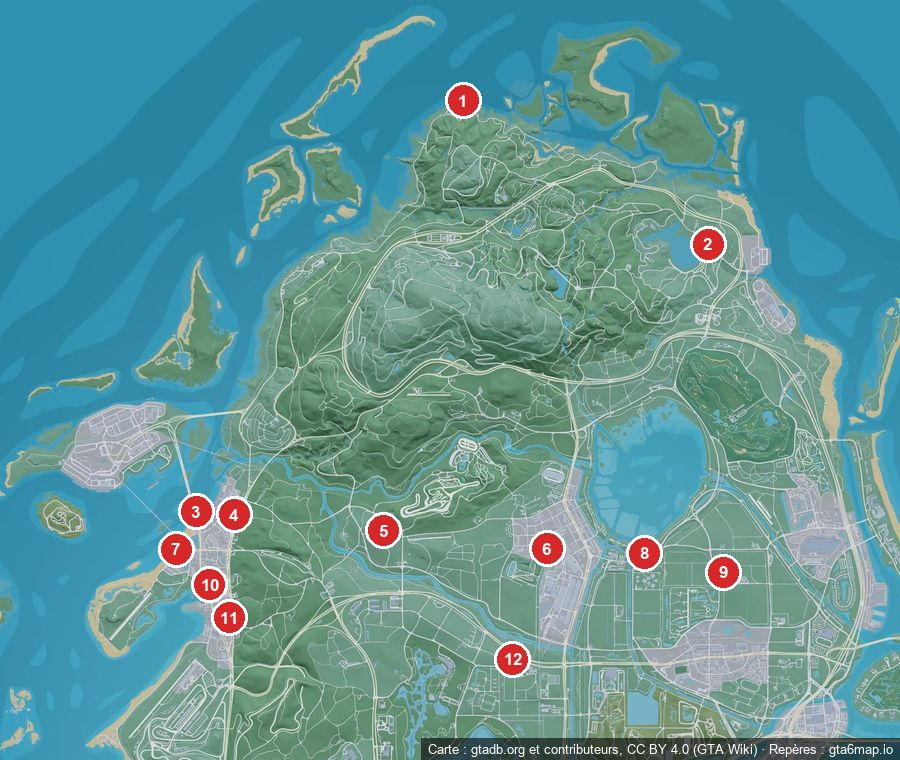
Les opérations de gang du nord de Leonida — 1. Carter Mining Boathouse ; 2. Robbery Opportunity – M7 ; 3. Brooks Boatworks ; 4. Robbery Opportunity – Kolts & Associates ; 5. Criminals: Walker Farm ; 6. Irons Building Supply ; 7. La Cascara Motel ; 8. Robbery Opportunity ; 9. Farm Fix Meth Lab ; 10. June Warehouse ; 11. Backroom Weed Front ; 12. Gas Station Meth Front · Carte : gtadb.org et contributeurs, CC BY 4.0 (GTA Wiki)![Les opérations de gang de Vice City et du sud — 1. Sound4Sond Studio ; 2. San4San: La Perle Trap House ; 3. Robbery Opportunity – San4San ; 4. Robbery Opportunity – San4San ; 5. Cigar Import Front ; 6. Criminals: Vespucci Mansion ; 7. JanJak’s Garage ; 8. Robbery Opportunity – San4San ; 9. Criminals: Ocean Beach Lab ; 10. Robbery Opportunity – The Guardia Brothers ; 11. Casa Guardia ; 12. Chatfield Storage & Logistics ; 13. Robbery Opportunity – The Guardia Brothers ; 14. Criminals: Industrial Weed Grow ; 15. Slator Towing Inc ; 16. PTT Youngin$: Illegal Goods Store ; 17. Robbery Opportunity – PTT Youngin$ ; 18. PTT Youngin$: Southside Trap House ; 19. Robbery Opportunity – PTT Youngin$ ; 20. Criminals: Mill Station Radar Base ; 21. La Polilla Negra: Watson Bay Safehouse ; 22. M7: Nova Auto Junkyard ; 23. M7 Compound ; 24. Manatee Motel ; 25. Fishing Shacks ; 26. Sunrise RV Park ; 27. Exotic Animals Front](images/21-operations-de-gang-sud.jpg)
Les opérations de gang de Vice City et du sud — 1. Sound4Sond Studio ; 2. San4San: La Perle Trap House ; 3. Robbery Opportunity – San4San ; 4. Robbery Opportunity – San4San ; 5. Cigar Import Front ; 6. Criminals: Vespucci Mansion ; 7. JanJak’s Garage ; 8. Robbery Opportunity – San4San ; 9. Criminals: Ocean Beach Lab ; 10. Robbery Opportunity – The Guardia Brothers ; 11. Casa Guardia ; 12. Chatfield Storage & Logistics ; 13. Robbery Opportunity – The Guardia Brothers ; 14. Criminals: Industrial Weed Grow ; 15. Slator Towing Inc ; 16. PTT Youngin$: Illegal Goods Store ; 17. Robbery Opportunity – PTT Youngin$ ; 18. PTT Youngin$: Southside Trap House ; 19. Robbery Opportunity – PTT Youngin$ ; 20. Criminals: Mill Station Radar Base ; 21. La Polilla Negra: Watson Bay Safehouse ; 22. M7: Nova Auto Junkyard ; 23. M7 Compound ; 24. Manatee Motel ; 25. Fishing Shacks ; 26. Sunrise RV Park ; 27. Exotic Animals Front · Carte : gtadb.org et contributeurs, CC BY 4.0 (GTA Wiki) -
Ce qu'on y fait : on nettoie une planque de gang et on repart avec son contenu — argent, drogue, armes uniques. Le camp des Kingfishers du chapitre 1 est exactement ça (partie 4).
![Les coffres-forts que le wiki place sur la carte (planques, entrepôts, motels), du nord au sud — 1. Locked Safe - Carter Mining Boathouse ; 2. RV Safe - Weed Grow ; 3. Safe - Weed Grow ; 4. Warehouse Safe - Brooks Boatworks ; 5. Safe - Stash House ; 6. Office Safe - Brooks Boatworks ; 7. Locked Safe - Walker Farm ; 8. Office Safe - Hog Stars Garage ; 9. Lieutenant Room Safe - La Cascara Motel ; 10. Safe - Irons Building Supply ; 11. Safe - Biker Hideout ; 12. Safe - Farm Fix Meth Lab ; 13. Safe - June Warehouse ; 14. Locked Safe - Backroom Weed Front ; 15. Office Safe - Kingpin Bowling ; 16. Safe ; 17. Safe - Sound4Sound Studio ; 18. Safe - Illegal Sneaker Trade ; 19. Safe - Cigar Import Front ; 20. Armory Safe - Vespucci Mansion ; 21. Armory Safe 2 - Vespucci Mansion ; 22. Safe -Janjak's Garage ; 23. Safe - Leonida Carrier Warehouse ; 24. Safe - Parlor Apartments ; 25. Safe - Saber Shipping Facility ; 26. Safe - Ocean Beach Lab ; 27. Safe - Casa Guardia ; 28. Office Safe - Chatfield Storage & Logistics ; 29. Office Safe - Saber Shipping Facility ; 30. Safe - Industrial Weed Grow ; 31. Safe - Slator Towing Inc ; 32. Safe - Illegal Goods Store ; 33. Locked Safe - Mill Station Radar Base ; 34. Safe - Watson Bay Safe House ; 35. Safe - Palmer Fishing Warehouse ; 36. Garage Safe - Nova Auto Junkyard ; 37. Safe - Manatee Motel ; 38. Office Safe - Sunrise RV Park ; 39. Office Safe - Sunrise RV Park ; 40. Safe - Exotic Animal Front](images/21-carte-coffres-forts.jpg)
Les coffres-forts que le wiki place sur la carte (planques, entrepôts, motels), du nord au sud — 1. Locked Safe - Carter Mining Boathouse ; 2. RV Safe - Weed Grow ; 3. Safe - Weed Grow ; 4. Warehouse Safe - Brooks Boatworks ; 5. Safe - Stash House ; 6. Office Safe - Brooks Boatworks ; 7. Locked Safe - Walker Farm ; 8. Office Safe - Hog Stars Garage ; 9. Lieutenant Room Safe - La Cascara Motel ; 10. Safe - Irons Building Supply ; 11. Safe - Biker Hideout ; 12. Safe - Farm Fix Meth Lab ; 13. Safe - June Warehouse ; 14. Locked Safe - Backroom Weed Front ; 15. Office Safe - Kingpin Bowling ; 16. Safe ; 17. Safe - Sound4Sound Studio ; 18. Safe - Illegal Sneaker Trade ; 19. Safe - Cigar Import Front ; 20. Armory Safe - Vespucci Mansion ; 21. Armory Safe 2 - Vespucci Mansion ; 22. Safe -Janjak's Garage ; 23. Safe - Leonida Carrier Warehouse ; 24. Safe - Parlor Apartments ; 25. Safe - Saber Shipping Facility ; 26. Safe - Ocean Beach Lab ; 27. Safe - Casa Guardia ; 28. Office Safe - Chatfield Storage & Logistics ; 29. Office Safe - Saber Shipping Facility ; 30. Safe - Industrial Weed Grow ; 31. Safe - Slator Towing Inc ; 32. Safe - Illegal Goods Store ; 33. Locked Safe - Mill Station Radar Base ; 34. Safe - Watson Bay Safe House ; 35. Safe - Palmer Fishing Warehouse ; 36. Garage Safe - Nova Auto Junkyard ; 37. Safe - Manatee Motel ; 38. Office Safe - Sunrise RV Park ; 39. Office Safe - Sunrise RV Park ; 40. Safe - Exotic Animal Front -
⚠️ Le piège : les objets de valeur que tu laisses sur place ne réapparaissent qu'au bout d'un long moment. Fouille complètement avant de partir.
-
Le trophée : Pest Control demande de braquer une opération illégale de chaque gang. Le filtre visuel Sténopé demande 25 opérations nettoyées avec ton partenaire.
Les gangs du jeu
| Gang | Type | Territoire |
|---|---|---|
| Final Chapter MC | Club de motards hors-la-loi, couleur noire | Ambrosia |
| PTT Youngin$ | Gang de rue | Southside, Vice City |
| San4San | Gang de rue haïtien | Vice City, aux Venture Apartments de Rockridge |
| La Polilla Negra | Le cartel | L'ennemi du chapitre 3 |
| M7 | Gang de rue | Hamlet, à côté des maisons de Mia |
| Cash City | L'entourage de DWNPLY | Vice City |
| Kolt & Associates | Le gang du bowling | Comté de Kelly |
| Les Kingfishers | Les rednecks des Keys | Comté de Mariana |
| Le FAP | Groupe armé | Vice City, attaques de Megamundo et de The Vault |
⚠️ Seuls trois gangs sont officiellement confirmés : Final Chapter MC, PTT Youngin$ et San4San. Les six autres sont nommés par les missions, ce qui les rend certains, mais leur statut et leur territoire exact restent inconnus. Rockstar n'a pas confirmé l'existence de guerres de gangs ni de conquête de territoire.
Les arcs d'inconnus — Strangers & Freaks
- Le trophée : Strangers & Freaks, argent, demande de terminer 8 arcs d'inconnus à travers Leonida.
- Le problème : ⚠️ le jeu n'indique pas lesquels comptent. On en connaît quatre sur huit, et six autres seraient exclus.
| Statut | Personnages |
|---|---|
| Comptent | Kirk (le Singe qui pue), Kyle, Yago, Pilot Pete |
| Ne comptent pas | Billy, Andy, Yasmani, Tyrone, Eddie Acosta, Shirley |
| Non classés | Bret Vogel, Moses, Randy, Dunk |
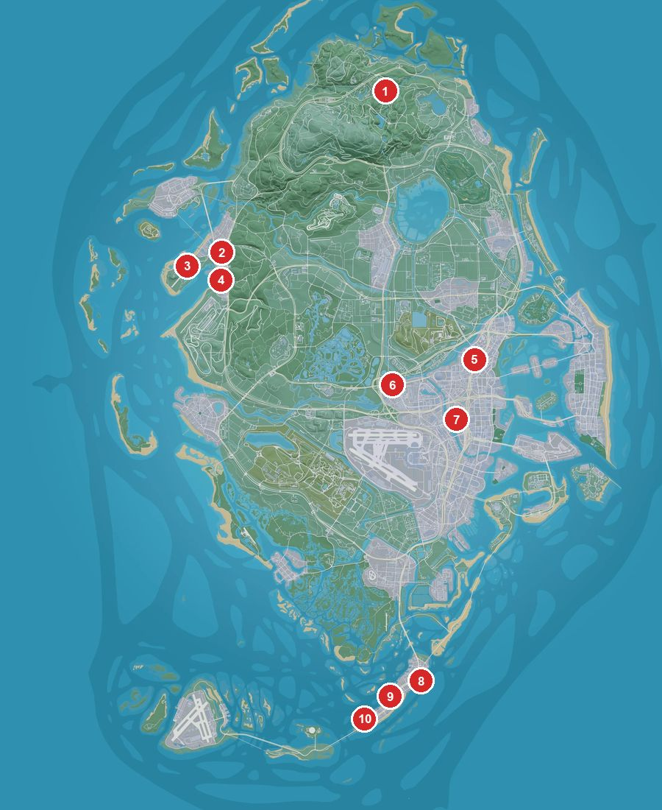
Où trouver les contacts et les inconnus, du nord au sud — 1. Killtelligence Provisions ; 2. Dunk's Trailer ; 3. Pete ; 4. Moses ; 5. Tyrone ; 6. Randy ; 7. Yasmani ; 8. Kenton ; 9. Donnie's Trailer ; 10. Brian's Lockup
⚠️ Et un doute : Billy, Andy, Randy et Tyrone seraient exclus du décompte, alors que chacun a son propre trophée de fin d'arc. Les deux informations ne s'accordent pas. À vérifier en jeu.
- Les trophées d'arcs individuels :
| Trophée | Arc | Personnage |
|---|---|---|
| This Was No Boat Accident | La chasse au trésor sous-marine | Kenton |
| The Lone Rider | Hometown Heroes | Billy |
| Road to Rehabilitation | Puff Puff Pass | Andy |
| Supply & Demand | Randy's Wish List | Randy |
| Spin On This! | Spin On This | Tyrone |
| Fair Game | Chasser un animal unique | Bret Vogel |
Les 80 défis
- Le poids : il faut 70 des 80 défis pour 1 % du compteur. Le trophée One Last Thing en demande 50.
- Les huit catégories, telles que les conditions de déblocage des codes de triche les nomment :
| Catégorie | Code de triche qu'elle débloque |
|---|---|
| Défis de combat | Bateau Speeder 700 GT (5), Bravado Banshee (tous) |
| Défis de survie | Airboat 09 (5), Hauners Rhino Tank (tous) |
| Défis de fitness | Tuff BMX (5), '65 Vapid Dominator (tous) |
| Défis de shopping | Maibatsu Boomazoom (5), Truffade Thrax (tous) |
| Défis d'exploration | Nagasaki Sea Sparrow (5), Nagasaki Carbon RS (tous) |
| Défis de véhicules | Lapwing Mallard (5), Progen Emerus (tous) |
| Défis sportifs | Vapid Stanier G2 Taxi (5), Brimstone Golfer (tous) |
| Défis criminels | Maibatsu Sanchez (5), Western Zombie Bobber (tous) |
Tous les défis du jeu débloquent l'avion de chasse Hauners P-996 Lazer (partie 26).
Les événements aléatoires
- Ce que c'est : des rencontres non scriptées sur la carte. Leur détail n'est pas encore connu.
- Ce qu'on en sait : le jeu déclenche des « bruits étranges », des « confrontations » et des « accidents » comme déclencheurs d'opportunités. Les briques de coke s'y trouvent, et la première rencontre du Singe qui pue en est un.
- Le réflexe : si tu entends un dialogue plus fort que les autres ou si quelqu'un t'interpelle, va voir.
Quêtes et lieux
Toutes les manquables du jeu, en un tableau
C'est le tableau le plus utile de cette partie.
| Manquable | Condition de perte | Partie |
|---|---|---|
| Bad Driver! | ⚠️ Lancer Power Play avant de la faire. Perte de 20 000 $ ou du véhicule de Felipe | 11 |
| Dubious Provenance parties 2 et 3 | ⚠️ Refuser la statue à Halifax et ne jamais le rappeler. Perte à la fin du chapitre 3 | 7 |
| Race Against Yago | Laisser le sablier se vider. Jouable uniquement à ce point de l'histoire | 8 |
| Pick Up Shayna | Limitée dans le temps, après Cooties | 9 |
| This Is a Free Call From… | Limitée dans le temps. Probablement la même affaire que Pick Up Shayna, datée du chapitre 4 | 21 |
| Get Shirley's Rum | Marquée manquable. Conditionne la voiture pailletée | 4 |
| Steal the Scooter | Marquée manquable | 4 |
| Meditate with Lucia | Marquée manquable | 4 |
| Ring the Bell! | Marquée manquable | 4 |
| Le bijou à 450 $ | Commandé trop tard : il met plusieurs jours en jeu à arriver | 4 |
| Les objets uniques de mission | Le pistolet de Monty, le fusil à pompe du bowling, la Photo de Home Sweet Home, le sac rouge de Bricked Up, les 600 $ des conteneurs SCOOP | 3, 6, 7, 9 |
Pour tout le reste : rien n'est manquable pour le 100 %, et tout se termine en monde libre après la fin de l'histoire (partie 27).
Butin exhaustif
| Nom exact | Type | Où / comment l'obtenir | Utilité |
|---|---|---|---|
| Voiture pailletée de Shirley | Véhicule | Récompense de Get Shirley's Rum et Steal the Scooter | Véhicule rapide très tôt |
| 20 000 $ | Argent | Bad Driver!, en tuant Felipe | ⚠️ Manquable |
| Véhicule de Felipe | Véhicule | Collect Felipe's Gift, en l'épargnant | L'autre branche du même choix |
| Fusil à petit gibier W-22 | Arme unique | Opération des Kingfishers, nord du comté de Mariana | Premier fusil silencieux |
| Fusil à pompe unique | Arme unique | Opération du bowling de Kolt & Associates | Close combat |
| Coffre du bowling | Argent | Même opération, code 0300 | Argent |
| Les 8 coffres de banque | Argent | Débloqués par That's Where the Money Is… | 2 % du compteur, trophée Maximum Withdrawal |
| Animal unique de Bret | Trophée de chasse | L'arc de Bret Vogel | Trophée Fair Game |
| Bret's Target Decks | Collection | L'arc de Bret, réservé à Jason, après Pause Café | 15 jeux, tous requis pour le 100 % |
| Jusqu'à 3 800 $ | Argent | Race Against Yago, première place au Freeway Run | Manquable |
Conseils et pièges
Fais Bad Driver! avant Power Play. C'est la seule manquable du jeu causée par une mission principale précise, et elle vaut 20 000 $.
Ouvre la liste des objectifs à chaque session. Croix directionnelle droite sur la carte. C'est le seul inventaire fiable de ce qui est disponible maintenant.
Fouille entièrement les planques de gang. Ce que tu laisses ne revient qu'au bout d'un long moment.
Nettoie les opérations à deux. Vingt-cinq opérations faites avec ton partenaire débloquent un filtre, et le switch double ton arsenal dans une planque pleine d'ennemis.
Parle aux gens. Shirley, Kirk, les passants qui t'interpellent : la plupart des arcs d'inconnus commencent par un dialogue que rien n'annonce.
Les sabliers sont des ultimatums. Une icône de sablier veut dire « maintenant ou jamais ».
Ne te fie pas aux noms pour les huit arcs. On ne sait pas exactement lesquels comptent pour Strangers & Freaks. Le plus simple est d'en finir plus de huit.
Alertes
- ⚠️ Manquable définitivement : Bad Driver! si Power Play est lancée avant.
- ⚠️ Manquable définitivement : les parties 2 et 3 de Dubious Provenance si tu refuses la statue sans jamais rappeler Halifax.
- ⏳ Manquables et limitées dans le temps : Race Against Yago et Pick Up Shayna.
- ⏳ Manquables : Get Shirley's Rum, Steal the Scooter, Meditate with Lucia, Ring the Bell!.
- ⚠️ Butin qui ne revient pas vite : les objets de valeur laissés dans une opération de gang.
- ⚠️ Contradiction de sources : les personnages dont l'arc compte pour Strangers & Freaks. À vérifier en jeu.
- ⚠️ Fiche inexistante : Pick Up Shayna. Aucun détail publié.
- ⚠️ Affaire Shayna : elle apparaît au chapitre 3 sous le nom Pick Up Shayna, ou au chapitre 4 sous le nom This Is a Free Call From…, manquable et limitée dans le temps. Fais-la dès qu'elle apparaît, quel que soit le chapitre. À vérifier en jeu.
Check-list
- 100 tâches optionnelles terminées
- Les 13 optionnelles du chapitre 1 faites
- Les optionnelles du chapitre 2 faites
- Les 4 optionnelles du chapitre 3 faites
- Bad Driver! faite avant Power Play
- That's Where the Money Is… faite
- Attend Eddie Acosta's Party faite
- This Is a Free Call From… faite dès son apparition
- Collect Felipe's Gift récupéré, si Felipe a été épargné
- 39 opérations de gang nettoyées
- 25 opérations nettoyées avec ton partenaire
- Une opération par gang braquée (trophée Pest Control)
- 8 arcs d'inconnus terminés (trophée Strangers & Freaks)
- Arcs de Kenton, Billy, Andy, Randy, Tyrone et Bret Vogel terminés
- 70 des 80 défis terminés
- 50 défis terminés (trophée One Last Thing)
- Les huit catégories de défis entamées
Complément
Les collections
L'essentiel
- Le plus gros morceau : 480 cartes à collectionner, réparties en 18 séries de 18 à 36 cartes. Il en faut 15 séries complètes.
- Le piège des flamants : seuls ceux au bec noir et blanc contiennent de la cocaïne. Ceux au bec jaune et noir sont décoratifs et ne comptent pas.
- Ne pas rater : les Bret's Target Decks sont réservés à Jason et il faut les 15, sans exception.
- Avant de partir : rien n'est manquable. Toutes les collections se terminent en monde libre après la fin de l'histoire.
Objectif
Inventorier tout ce qui se ramasse, se scanne, se détruit ou se découvre dans Leonida, avec les chiffres exacts et les seuils du compteur de complétion.
C'est la partie la plus chiffrée du guide : la liste de complétion s'affiche en fin de partie, compteur par compteur.
⚠️ Ce que cette partie ne contient pas : les emplacements des centaines d'objets. Ils ne sont pas tous relevés deux jours après la sortie, et je ne vais pas inventer 480 coordonnées. Pour les positions, utilise une carte interactive (partie 14).
Itinéraire
Les collections se suivent dans le menu Progression → Collections → Exploration.
Pour les emplacements, deux cartes :
📍 La zone en images : gta6map.io en français, et la carte interactive d'IGN, plus complète mais en anglais — c'est le meilleur choix si tu veux vraiment tout, y compris les poissons. Clique sur Tout masquer, puis réactive un seul type à la fois.
Déroulé pas à pas
Les objets à ramasser
-
Les cartes à collectionner : 480 cartes, en 18 séries de 18 à 36 cartes chacune.
- Le compteur demande 15 séries complètes, pour 1 %.
- Le trophée Don't Touch My Deck n'en demande que 3.
- La série des 24 Vice City Flamingos, complétée, débloque le filtre visuel Bubblegum (partie 26).
![Cartes à collectionner situées à ce jour (86 sur 480) : le nord-ouest (Port Gellhorn, Grayson et le comté de Kelly) — 1. Nine1Nine card: Chrissie (Deep Red) ; 2. Nine1Nine card: Lavinia (Purple) ; 3. Nine1Nine card: Serena (Silver) ; 4. Nine1Nine card: Lavinia (Deep Red) ; 5. Nine1Nine card: Braelynn (Deep Red) ; 6. Nine1Nine card: Chrissie (Purple) ; 7. Nine1Nine card: Chrissie (Pink) ; 8. Jack of Hearts card: MonaLi$a (Silver) ; 9. Jack of Hearts card: Kelly (Deep Red) ; 10. Jack of Hearts card: Lexi Campbell (Gold) ; 11. Jack of Hearts card: Jada Watts (Bronze) ; 12. Jack of Hearts card: Zaria RI RI Luckett (Silver) ; 13. Jack of Hearts card: Kadisha (Purple) ; 14. Jack of Hearts card: Jada Watts (Gold) ; 15. Delights card: Nevaeh (Standard) ; 16. Delights card: Jason (Standard) ; 17. Delights card: Harley (Standard)](images/22-cartes-a-collectionner-nord-ouest.jpg)
Cartes à collectionner situées à ce jour (86 sur 480) : le nord-ouest (Port Gellhorn, Grayson et le comté de Kelly) — 1. Nine1Nine card: Chrissie (Deep Red) ; 2. Nine1Nine card: Lavinia (Purple) ; 3. Nine1Nine card: Serena (Silver) ; 4. Nine1Nine card: Lavinia (Deep Red) ; 5. Nine1Nine card: Braelynn (Deep Red) ; 6. Nine1Nine card: Chrissie (Purple) ; 7. Nine1Nine card: Chrissie (Pink) ; 8. Jack of Hearts card: MonaLi$a (Silver) ; 9. Jack of Hearts card: Kelly (Deep Red) ; 10. Jack of Hearts card: Lexi Campbell (Gold) ; 11. Jack of Hearts card: Jada Watts (Bronze) ; 12. Jack of Hearts card: Zaria RI RI Luckett (Silver) ; 13. Jack of Hearts card: Kadisha (Purple) ; 14. Jack of Hearts card: Jada Watts (Gold) ; 15. Delights card: Nevaeh (Standard) ; 16. Delights card: Jason (Standard) ; 17. Delights card: Harley (Standard) · Carte : gtadb.org et contributeurs, CC BY 4.0 (GTA Wiki)![Cartes à collectionner situées à ce jour (86 sur 480) : le nord-est (Ambrosia, Millport et le comté de Lummox) — 1. Nine1Nine card: Braelynn (Purple) ; 2. Vice City Club De Fútbol card ; 3. Nine1Nine card: Serena (Bronze) ; 4. Backyard Wrestling card: J.D. Wild ; 5. Nine1Nine card: Lavinia (Pink) ; 6. Nine1Nine card: Georgia (Deep Red) ; 7. Nine1Nine card: Meghan (Silver) ; 8. Jack of Hearts card: Brianna Blue (Pink) ; 9. Jack of Hearts card: Pricilla Pace (Bronze) ; 10. Jack of Hearts card: Malena (Pink) ; 11. Jack of Hearts card: Lexi Campbell (Bronze) ; 12. Jack of Hearts card: Vanessa (Bronze) ; 13. Jack of Hearts card: Zaria RI RI Luckett (Gold) ; 14. Jack of Hearts card: Malena (Deep Red) ; 15. Delights card: Cleo (Standard)](images/22-cartes-a-collectionner-nord-est.jpg)
Cartes à collectionner situées à ce jour (86 sur 480) : le nord-est (Ambrosia, Millport et le comté de Lummox) — 1. Nine1Nine card: Braelynn (Purple) ; 2. Vice City Club De Fútbol card ; 3. Nine1Nine card: Serena (Bronze) ; 4. Backyard Wrestling card: J.D. Wild ; 5. Nine1Nine card: Lavinia (Pink) ; 6. Nine1Nine card: Georgia (Deep Red) ; 7. Nine1Nine card: Meghan (Silver) ; 8. Jack of Hearts card: Brianna Blue (Pink) ; 9. Jack of Hearts card: Pricilla Pace (Bronze) ; 10. Jack of Hearts card: Malena (Pink) ; 11. Jack of Hearts card: Lexi Campbell (Bronze) ; 12. Jack of Hearts card: Vanessa (Bronze) ; 13. Jack of Hearts card: Zaria RI RI Luckett (Gold) ; 14. Jack of Hearts card: Malena (Deep Red) ; 15. Delights card: Cleo (Standard) · Carte : gtadb.org et contributeurs, CC BY 4.0 (GTA Wiki)
Cartes à collectionner situées à ce jour (86 sur 480) : l'ouest (Grassrivers et les marais) — 1. Nine1Nine card: Braelynn (Pink) ; 2. Nine1Nine card: Amie (Deep Red) ; 3. Nine1Nine card: Meghan (Gold) ; 4. Nine1Nine card: Clarissa (Silver) ; 5. Nine1Nine card: Amie (Purple) ; 6. Nine1Nine card: Clarissa (Gold) ; 7. Jack of Hearts card: Malena (Purple) ; 8. Jack of Hearts card: Pricilla Pace (Gold) ; 9. Jack of Hearts card: Brianna Blue (Purple) ; 10. Jack of Hearts card: Kadisha (Deep Red) · Carte : gtadb.org et contributeurs, CC BY 4.0 (GTA Wiki)![Cartes à collectionner situées à ce jour (86 sur 480) : Vice City et ses plages — 1. Nine1Nine card: Jesenia (Bronze) ; 2. Nine1Nine card: Jesenia (Gold) ; 3. Nine1Nine card: Georgia (Pink) ; 4. Nine1Nine card: Meghan (Bronze) ; 5. Nine1Nine card: Lenora (Pink) ; 6. Nine1Nine card: Julia (Gold) ; 7. Card basketball ; 8. Nine1Nine card: Clarissa (Bronze) ; 9. Nine1Nine card: Louise (Bronze) ; 10. Nine1Nine card: Lenora (Purple) ; 11. Nine1Nine card: Lenora (Deep Red) ; 12. Nine1Nine card: Julia (Silver) ; 13. Jack of Hearts card: Kelly (Pink) ; 14. Jack of Hearts card: Christel (Deep Red) ; 15. Jack of Hearts card: Jemila (Purple) ; 16. Jack of Hearts card: Christel (Purple) ; 17. Jack of Hearts card: Christel (Pink) ; 18. Jack of Hearts card: Kadisha (Pink) ; 19. Jack of Hearts card: Kelly (Purple) ; 20. Jack of Hearts card: Vanessa (Silver) ; 21. Jack of Hearts card: Jemila (Pink) ; 22. Delights card: Daisy (Standard) ; 23. Delights card: Lucky (Standard) ; 24. Delights card: Amber (Standard) ; 25. Delights card: Perla (Standard) ; 26. Delights card: Kandi (Standard) ; 27. Delights card: Crystal (Standard) ; 28. Delights card: Tracy (Standard) ; 29. Delights card: Lance (Standard) ; 30. Delights card: Cyrus (Standard) ; 31. Delights card: Mario (Standard) ; 32. Delights card: Vicki (Standard)](images/22-cartes-a-collectionner-vice-city.jpg)
Cartes à collectionner situées à ce jour (86 sur 480) : Vice City et ses plages — 1. Nine1Nine card: Jesenia (Bronze) ; 2. Nine1Nine card: Jesenia (Gold) ; 3. Nine1Nine card: Georgia (Pink) ; 4. Nine1Nine card: Meghan (Bronze) ; 5. Nine1Nine card: Lenora (Pink) ; 6. Nine1Nine card: Julia (Gold) ; 7. Card basketball ; 8. Nine1Nine card: Clarissa (Bronze) ; 9. Nine1Nine card: Louise (Bronze) ; 10. Nine1Nine card: Lenora (Purple) ; 11. Nine1Nine card: Lenora (Deep Red) ; 12. Nine1Nine card: Julia (Silver) ; 13. Jack of Hearts card: Kelly (Pink) ; 14. Jack of Hearts card: Christel (Deep Red) ; 15. Jack of Hearts card: Jemila (Purple) ; 16. Jack of Hearts card: Christel (Purple) ; 17. Jack of Hearts card: Christel (Pink) ; 18. Jack of Hearts card: Kadisha (Pink) ; 19. Jack of Hearts card: Kelly (Purple) ; 20. Jack of Hearts card: Vanessa (Silver) ; 21. Jack of Hearts card: Jemila (Pink) ; 22. Delights card: Daisy (Standard) ; 23. Delights card: Lucky (Standard) ; 24. Delights card: Amber (Standard) ; 25. Delights card: Perla (Standard) ; 26. Delights card: Kandi (Standard) ; 27. Delights card: Crystal (Standard) ; 28. Delights card: Tracy (Standard) ; 29. Delights card: Lance (Standard) ; 30. Delights card: Cyrus (Standard) ; 31. Delights card: Mario (Standard) ; 32. Delights card: Vicki (Standard) · Carte : gtadb.org et contributeurs, CC BY 4.0 (GTA Wiki)![Cartes à collectionner situées à ce jour (86 sur 480) : le sud (Hamlet et les Leonida Keys) — 1. Nine1Nine card: Serena (Gold) ; 2. Los Santos Panic card: Marquise Bernard ; 3. Nine1Nine card: Jesenia (Silver) ; 4. Nine1Nine card: Georgia (Purple) ; 5. The Legends of Ratface card: Wokester (Blue) ; 6. Jack of Hearts card: Jada Watts (Silver) ; 7. Jack of Hearts card: Brianna Blue (Deep Red) ; 8. Jack of Hearts card: Pricilla Pace (Silver) ; 9. Jack of Hearts card: MonaLi$a (Gold) ; 10. Delights card: Chip (Standard) ; 11. Delights card: Nicole (Standard) ; 12. Delights card: Thelma (Standard)](images/22-cartes-a-collectionner-sud.jpg)
Cartes à collectionner situées à ce jour (86 sur 480) : le sud (Hamlet et les Leonida Keys) — 1. Nine1Nine card: Serena (Gold) ; 2. Los Santos Panic card: Marquise Bernard ; 3. Nine1Nine card: Jesenia (Silver) ; 4. Nine1Nine card: Georgia (Purple) ; 5. The Legends of Ratface card: Wokester (Blue) ; 6. Jack of Hearts card: Jada Watts (Silver) ; 7. Jack of Hearts card: Brianna Blue (Deep Red) ; 8. Jack of Hearts card: Pricilla Pace (Silver) ; 9. Jack of Hearts card: MonaLi$a (Gold) ; 10. Delights card: Chip (Standard) ; 11. Delights card: Nicole (Standard) ; 12. Delights card: Thelma (Standard) · Carte : gtadb.org et contributeurs, CC BY 4.0 (GTA Wiki) -
Les magazines, livres et bandes dessinées : 27 objets, plus 7 Book Swaps, soit 34 en tout.
- Le compteur en demande 30, pour 1 %.
![Les magazines (1 à 25) et les Book Swaps (26 à 31) situés à ce jour — 1. Trigger Happy 1 ; 2. 11:59 1 ; 3. Drive Shaft 1 ; 4. Off the Hook 3 ; 5. Trigger Happy 3 ; 6. Endowed 2 ; 7. Foiled 2 ; 8. Endowed 3 ; 9. Body Copy 3 ; 10. ¡Bombazo! 3 ; 11. Endowed 1 ; 12. Drive Shaft 2 ; 13. High Rollerz 3 ; 14. Drive Shaft 3 ; 15. ¡Bombazo! 1 ; 16. High Rollerz 1 ; 17. Body Copy 2 ; 18. High Rollerz 2 ; 19. 11:59 2 ; 20. Pêche 1 ; 21. ¡Bombazo! 2 ; 22. Foiled 1 ; 23. Pêche 2 ; 24. Off the Hook 2 ; 25. Trigger Happy 2 ; 26. Book Swap 5 ; 27. Book Swap 4 ; 28. Book Swap 6 ; 29. Book Swap 7 ; 30. Book Swap 3 ; 31. Book Swap 2](images/22-magazines.jpg)
Les magazines (1 à 25) et les Book Swaps (26 à 31) situés à ce jour — 1. Trigger Happy 1 ; 2. 11:59 1 ; 3. Drive Shaft 1 ; 4. Off the Hook 3 ; 5. Trigger Happy 3 ; 6. Endowed 2 ; 7. Foiled 2 ; 8. Endowed 3 ; 9. Body Copy 3 ; 10. ¡Bombazo! 3 ; 11. Endowed 1 ; 12. Drive Shaft 2 ; 13. High Rollerz 3 ; 14. Drive Shaft 3 ; 15. ¡Bombazo! 1 ; 16. High Rollerz 1 ; 17. Body Copy 2 ; 18. High Rollerz 2 ; 19. 11:59 2 ; 20. Pêche 1 ; 21. ¡Bombazo! 2 ; 22. Foiled 1 ; 23. Pêche 2 ; 24. Off the Hook 2 ; 25. Trigger Happy 2 ; 26. Book Swap 5 ; 27. Book Swap 4 ; 28. Book Swap 6 ; 29. Book Swap 7 ; 30. Book Swap 3 ; 31. Book Swap 2 · Carte : gtadb.org et contributeurs, CC BY 4.0 (GTA Wiki) -
Les montres de luxe : 34, comptées dans les styles découverts.
- Trouver 10 montres débloque le code Avancer l'heure, et 20 montres le code Mettre le temps en pause.
- La Crowex Octane « Bobby Ambrose » d'Halifax en fait partie (partie 7).
-
Les armes standard : 66 Standard Issue Weapons à trouver, dont 50 pour 1 %.
Les choses à détruire
- Les flamants de cocaïne : 125 sur la carte, dont 100 pour 1 %.
- ⚠️ Attention au piège : seuls ceux au bec noir et blanc lâchent de la cocaïne et comptent. Ceux au bec jaune et noir sont purement décoratifs.
- En détruire 50 débloque le code Bouée Flamant rose.
Les choses à scanner
-
Les modèles de base de véhicules : 277 à scanner à la WAiNK, dont 200 pour 1 %.
- ⚠️ Les 280 Standout Vehicles ne comptent pas dans ce compteur. Ce sont deux listes différentes.
-
Les lieux WAiNK : il en faut 100 scannés, pour 1 % et pour le trophée You WAiNKer!.
![Lieux WAiNK à scanner (monuments, sculptures, curiosités) : le nord-ouest (Port Gellhorn, Grayson et le comté de Kelly) — 1. Bonanza Giant ; 2. Lawton Co. Paper Mill ; 3. Kalaga Lookout ; 4. Grayson Cairns ; 5. Hoffman Observatory ; 6. Wild Hog Point Radar Base ; 7. Gellhorn Fun Fair ; 8. Sky Ride ; 9. Chariot to Valhalla ; 10. Monument of Leonidan Supremacy ; 11. Thrillbilly Mascot ; 12. Monument of Leonida ; 13. Wreck of the Meerwunder ; 14. C0-B8 Fairing ; 15. C0-B8 Engine ; 16. C0-B8 Debris ; 17. Fossilized Prints ; 18. Grayson Assembly ; 19. Pet Cemetery ; 20. Fairy Lane ; 21. Imperial Spanish Ruins ; 22. Lovers Lookout ; 23. Dino Golf ; 24. Selkie Hole ; 25. Deserted Home](images/22-lieux-waink-nord-ouest.jpg)
Lieux WAiNK à scanner (monuments, sculptures, curiosités) : le nord-ouest (Port Gellhorn, Grayson et le comté de Kelly) — 1. Bonanza Giant ; 2. Lawton Co. Paper Mill ; 3. Kalaga Lookout ; 4. Grayson Cairns ; 5. Hoffman Observatory ; 6. Wild Hog Point Radar Base ; 7. Gellhorn Fun Fair ; 8. Sky Ride ; 9. Chariot to Valhalla ; 10. Monument of Leonidan Supremacy ; 11. Thrillbilly Mascot ; 12. Monument of Leonida ; 13. Wreck of the Meerwunder ; 14. C0-B8 Fairing ; 15. C0-B8 Engine ; 16. C0-B8 Debris ; 17. Fossilized Prints ; 18. Grayson Assembly ; 19. Pet Cemetery ; 20. Fairy Lane ; 21. Imperial Spanish Ruins ; 22. Lovers Lookout ; 23. Dino Golf ; 24. Selkie Hole ; 25. Deserted Home · Carte : gtadb.org et contributeurs, CC BY 4.0 (GTA Wiki)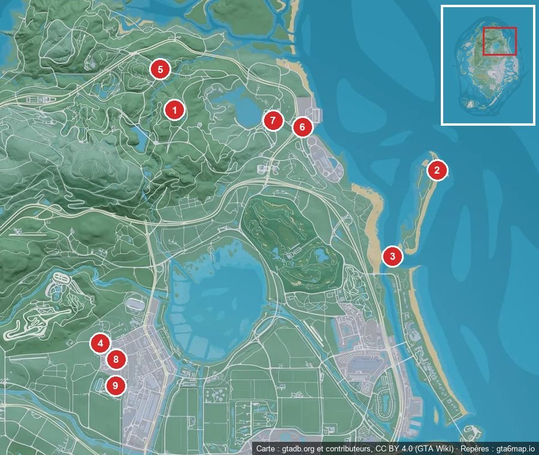
Lieux WAiNK à scanner (monuments, sculptures, curiosités) : le nord-est (Ambrosia, Millport et le comté de Lummox) — 1. Tallaloko Amphitheater ; 2. St. Lucia Lighthouse ; 3. Unidentified Building ; 4. Old Goliath ; 5. Junkyard T-Rex ; 6. Mother Rushwood ; 7. Intriguing Substance ; 8. Spaceship House ; 9. Anti Sugar Residence · Carte : gtadb.org et contributeurs, CC BY 4.0 (GTA Wiki)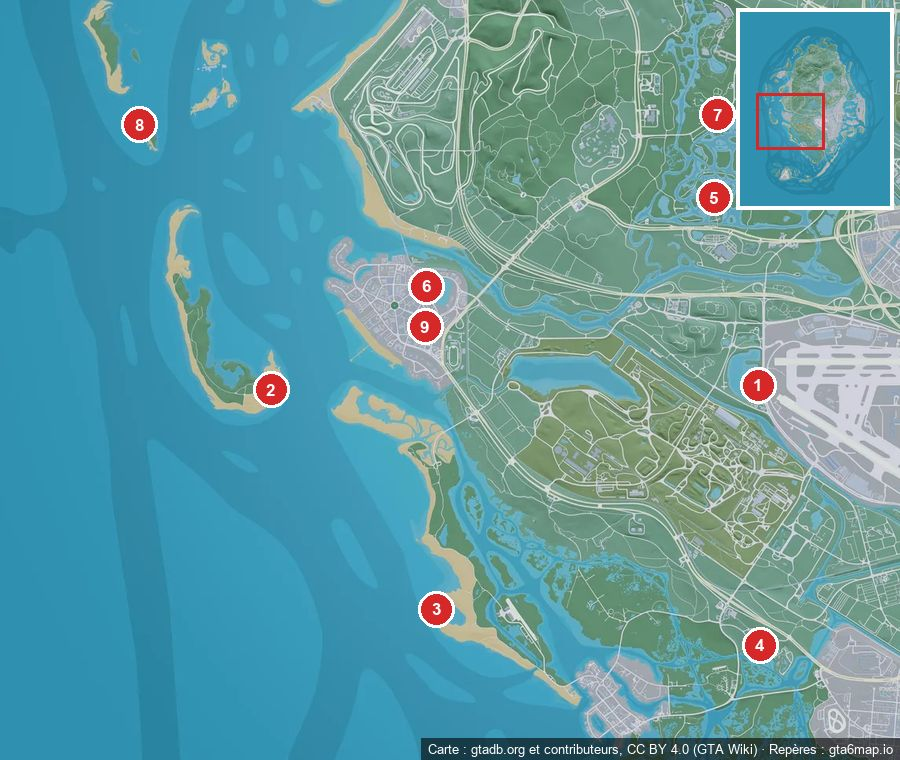
Lieux WAiNK à scanner (monuments, sculptures, curiosités) : l'ouest (Grassrivers et les marais) — 1. Vice City Sign ; 2. Belpoint Lighthouse ; 3. Bobcat Key Experimental Home ; 4. Pelican Valley Observation Tower ; 5. Buckskin Swamp Totem ; 6. The Grand Turkey of Capri ; 7. Camp Moonflower ; 8. Hovercraft Crash ; 9. Halloween House · Carte : gtadb.org et contributeurs, CC BY 4.0 (GTA Wiki)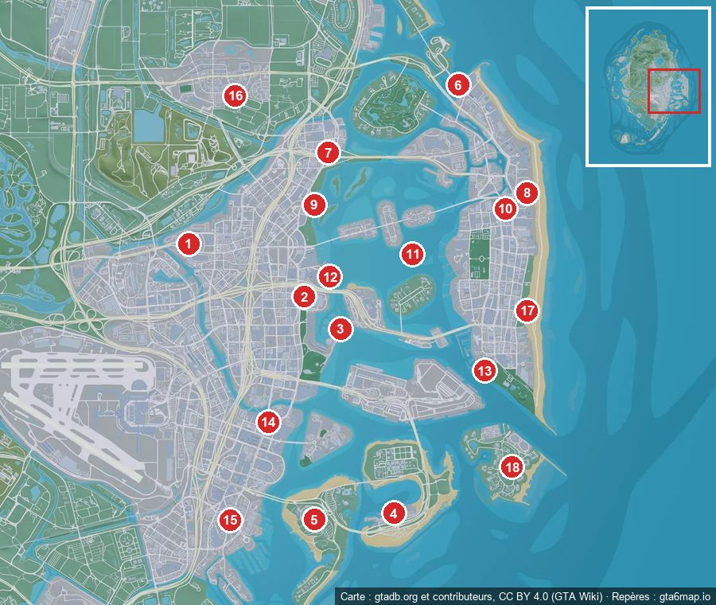
Lieux WAiNK à scanner (monuments, sculptures, curiosités) : Vice City et ses plages — 1. Fleeca Field ; 2. Sahara Arena ; 3. Dock Ring ; 4. Aqua Stadium ; 5. Courtland Park Stadium ; 6. Neptune Rises ; 7. Gimme All Your Oil ; 8. Princess Robot Bubblegum Statue ; 9. Catalan Blvd Garden ; 10. Vice Museum of Art Sculpture ; 11. Blanco Memorial ; 12. Flam Gummies ; 13. Large Lure ; 14. Pixel Fountain ; 15. Colossus ; 16. Belville Topiary ; 17. Promotional Sand Vehicles ; 18. Big Entrance · Carte : gtadb.org et contributeurs, CC BY 4.0 (GTA Wiki)![Lieux WAiNK à scanner (monuments, sculptures, curiosités) : le sud (Hamlet et les Leonida Keys) — 1. Badger R&D Tower ; 2. Derelict Spy Vessel ; 3. Riquezas Keys Radome ; 4. Thicc Herbie ; 5. Triangler Sculpture ; 6. Grassrivers Visitor Center Statue ; 7. The Wonder Whale ; 8. Fatal Incursion Plaque ; 9. Unidentified Animal Pen (UAP) ; 10. NoFlusher Homestead ; 11. Wetman Bay Carcass ; 12. Dead Sharks ; 13. Vibrant Pond ; 14. Desert Island Piano ; 15. Goose Key Carcass ; 16. Christmas House ; 17. Beach Party Site ; 18. Fingerpost ; 19. Plunge Masters Deep Sea Chalet ; 20. Abismo Key Carcass](images/22-lieux-waink-sud.jpg)
Lieux WAiNK à scanner (monuments, sculptures, curiosités) : le sud (Hamlet et les Leonida Keys) — 1. Badger R&D Tower ; 2. Derelict Spy Vessel ; 3. Riquezas Keys Radome ; 4. Thicc Herbie ; 5. Triangler Sculpture ; 6. Grassrivers Visitor Center Statue ; 7. The Wonder Whale ; 8. Fatal Incursion Plaque ; 9. Unidentified Animal Pen (UAP) ; 10. NoFlusher Homestead ; 11. Wetman Bay Carcass ; 12. Dead Sharks ; 13. Vibrant Pond ; 14. Desert Island Piano ; 15. Goose Key Carcass ; 16. Christmas House ; 17. Beach Party Site ; 18. Fingerpost ; 19. Plunge Masters Deep Sea Chalet ; 20. Abismo Key Carcass · Carte : gtadb.org et contributeurs, CC BY 4.0 (GTA Wiki) -
Les débris spatiaux : tous les scanner débloque le filtre visuel Sucre glace.
-
Les véhicules Girlypop : découvrir les 16 débloque le filtre Jungle néon.
-
Les animaux : 255 animaux étudiés au total, dont 100 pour 1 %.
- Le jeu contient 170 espèces selon la couverture de Game Informer.
- ⚠️ Attention au POACH, le service de protection des animaux et de la chasse encadrée (partie 14).
Les choses à faire sur place
-
Les découvertes sous-marines : 33 épaves, et il faut les 33, pour 1 %.
- ⚠️ Les 7 séries de Kenton sont nécessaires pour compléter ce compteur (partie 25).
-
Les trésors de Kenton Rees : 7 séries, dont 5 pour 1 % — mais les 7 pour les découvertes sous-marines.
-
Les spots de méditation : 10 lieux, mais 18 validations possibles parce que Jason et Lucia comptent séparément. Il en faut 15 pour 1 %.
- Le trophée Positive Mental Attitude demande de méditer à chaque spot.
- 50 séances de méditation débloquent le filtre Avance rapide.
-
Les paniers de basket : 100 sur la carte, dont 90 différents pour 1 %.
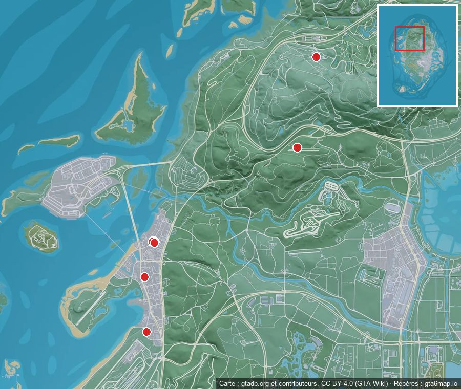
Les paniers de basket : le nord-ouest (Port Gellhorn, Grayson et le comté de Kelly) · Carte : gtadb.org et contributeurs, CC BY 4.0 (GTA Wiki)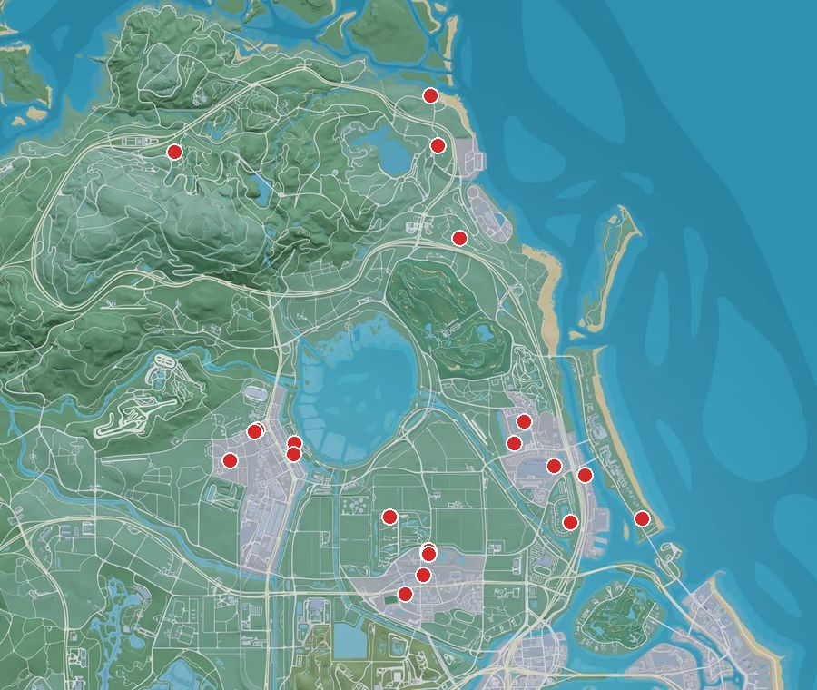
Les paniers de basket : le nord-est (Ambrosia, Millport et le comté de Lummox) · Carte : gtadb.org et contributeurs, CC BY 4.0 (GTA Wiki)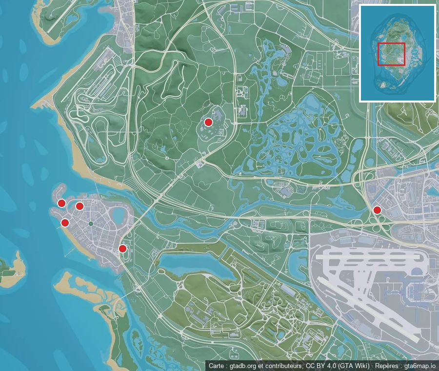
Les paniers de basket : l'ouest (Grassrivers et les marais) · Carte : gtadb.org et contributeurs, CC BY 4.0 (GTA Wiki)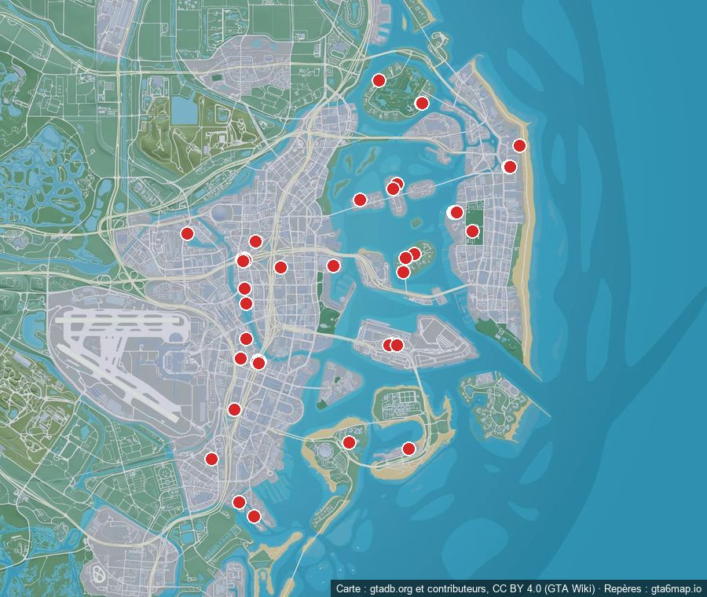
Les paniers de basket : Vice City et ses plages · Carte : gtadb.org et contributeurs, CC BY 4.0 (GTA Wiki)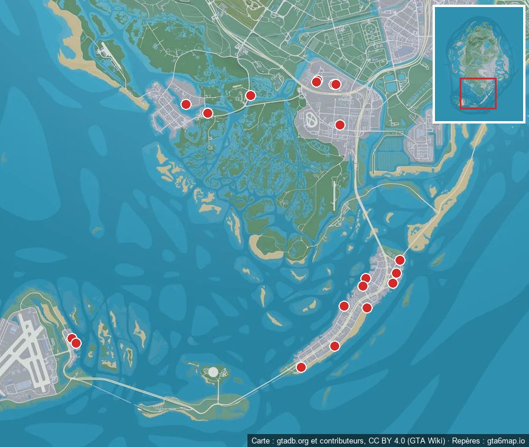
Les paniers de basket : le sud (Hamlet et les Leonida Keys) · Carte : gtadb.org et contributeurs, CC BY 4.0 (GTA Wiki) -
Les cascades : 397 au total, dont 300 pour 1 %.
| Type de cascade | Nombre |
|---|---|
| Stunt Jumps | 130 |
| Under the Bridges | 202 |
| Knife Flights | 40 |
| Base Jumps | 25 |
![Les Stunt Jumps (sauts) : le nord-ouest (Port Gellhorn, Grayson et le comté de Kelly) — 1. Bonanza Harbor Stunt Jump ; 2. Macalister Gold Mine Stunt Jump ; 3. Grayson Rail Tunnel Stunt Jump ; 4. Kalaga Ramp Stunt Jump ; 5. Kalaga Ridge Stunt Jump ; 6. Manifest Canyon Stunt Jump ; 7. Axiom House Stunt Jump ; 8. Draper Island Stunt Jump ; 9. North Kelly County Ledge Stunt Jump ; 10. Manifest Canyon Trail East Stunt Jump ; 11. North Kelly County Railroad Stunt Jump ; 12. Manifest Canyon Trail West Stunt Jump ; 13. Mud Club Pond Stunt Jump ; 14. Saputka River Stunt Jump ; 15. Gellhorn Drive-In Theatre Stunt Jump ; 16. Port Gellhorn Center of Praise & Purpose Stunt Jump ; 17. Gellhorn Roadworks West Stunt Jump ; 18. Prairie Court Stunt Jump ; 19. Gellhorn Roadworks East Stunt Jump ; 20. Starlet Motel Construction Stunt Jump ; 21. Howe Dairy Stunt Jump ; 22. Abandoned Radio Station Stunt Jump ; 23. Gellhorn Hilltop Stunt Jump ; 24. Gellhorn Campsite Stunt Jump](images/22-sauts-nord-ouest.jpg)
Les Stunt Jumps (sauts) : le nord-ouest (Port Gellhorn, Grayson et le comté de Kelly) — 1. Bonanza Harbor Stunt Jump ; 2. Macalister Gold Mine Stunt Jump ; 3. Grayson Rail Tunnel Stunt Jump ; 4. Kalaga Ramp Stunt Jump ; 5. Kalaga Ridge Stunt Jump ; 6. Manifest Canyon Stunt Jump ; 7. Axiom House Stunt Jump ; 8. Draper Island Stunt Jump ; 9. North Kelly County Ledge Stunt Jump ; 10. Manifest Canyon Trail East Stunt Jump ; 11. North Kelly County Railroad Stunt Jump ; 12. Manifest Canyon Trail West Stunt Jump ; 13. Mud Club Pond Stunt Jump ; 14. Saputka River Stunt Jump ; 15. Gellhorn Drive-In Theatre Stunt Jump ; 16. Port Gellhorn Center of Praise & Purpose Stunt Jump ; 17. Gellhorn Roadworks West Stunt Jump ; 18. Prairie Court Stunt Jump ; 19. Gellhorn Roadworks East Stunt Jump ; 20. Starlet Motel Construction Stunt Jump ; 21. Howe Dairy Stunt Jump ; 22. Abandoned Radio Station Stunt Jump ; 23. Gellhorn Hilltop Stunt Jump ; 24. Gellhorn Campsite Stunt Jump · Carte : gtadb.org et contributeurs, CC BY 4.0 (GTA Wiki)
![Les Stunt Jumps (sauts) : le nord-est (Ambrosia, Millport et le comté de Lummox) — 1. North Moreau Broken Bridge Stunt Jump ; 2. US Route 628 Stunt Jump ; 3. Moreau Coal Mound Stunt Jump ; 4. Moreau Broken Bridge Stunt Jump ; 5. Dock Coal Company Freeway Stunt Jump ; 6. Kalaga Pond Stunt Jump ; 7. Mount Kalaga Visitor Center Stunt Jump ; 8. West Kalaga Logging Stunt Jump ; 9. Millport Harbor Stunt Jump ; 10. Kalaga Roadside Stunt Jump ; 11. Mount Kalaga Lookout Point Stunt Jump ; 12. The Free State of Henry Perculay Stunt Jump ; 13. Kalaga River Stunt Jump ; 14. Richard Barebone Overpass North Stunt Jump ; 15. Richard Barebone Overpass South Stunt Jump ; 16. Lake Leonida Lock Northwest Stunt Jump ; 17. Lake Leonida Lock West Stunt Jump ; 18. Lake Leonida Lock East Stunt Jump ; 19. Thundergolf Stunt Jump ; 20. Lake Leonida Lock Southwest Stunt Jump ; 21. Lake Leonida Lock South Stunt Jump ; 22. South Ambrosia Water Treatment Stunt Jump ; 23. Lake Bonner Construction West Stunt Jump ; 24. Lake Bonner Construction East Stunt Jump ; 25. Kelly River Stunt Jump ; 26. County Route 62 Roadworks Stunt Jump ; 27. South Ambrosia Broken Bridge Stunt Jump](images/22-sauts-nord-est.jpg)
Les Stunt Jumps (sauts) : le nord-est (Ambrosia, Millport et le comté de Lummox) — 1. North Moreau Broken Bridge Stunt Jump ; 2. US Route 628 Stunt Jump ; 3. Moreau Coal Mound Stunt Jump ; 4. Moreau Broken Bridge Stunt Jump ; 5. Dock Coal Company Freeway Stunt Jump ; 6. Kalaga Pond Stunt Jump ; 7. Mount Kalaga Visitor Center Stunt Jump ; 8. West Kalaga Logging Stunt Jump ; 9. Millport Harbor Stunt Jump ; 10. Kalaga Roadside Stunt Jump ; 11. Mount Kalaga Lookout Point Stunt Jump ; 12. The Free State of Henry Perculay Stunt Jump ; 13. Kalaga River Stunt Jump ; 14. Richard Barebone Overpass North Stunt Jump ; 15. Richard Barebone Overpass South Stunt Jump ; 16. Lake Leonida Lock Northwest Stunt Jump ; 17. Lake Leonida Lock West Stunt Jump ; 18. Lake Leonida Lock East Stunt Jump ; 19. Thundergolf Stunt Jump ; 20. Lake Leonida Lock Southwest Stunt Jump ; 21. Lake Leonida Lock South Stunt Jump ; 22. South Ambrosia Water Treatment Stunt Jump ; 23. Lake Bonner Construction West Stunt Jump ; 24. Lake Bonner Construction East Stunt Jump ; 25. Kelly River Stunt Jump ; 26. County Route 62 Roadworks Stunt Jump ; 27. South Ambrosia Broken Bridge Stunt Jump · Carte : gtadb.org et contributeurs, CC BY 4.0 (GTA Wiki)
![Les Stunt Jumps (sauts) : l'ouest (Grassrivers et les marais) — 1. Gellhorn International Raceway Stunt Jump ; 2. Gellhorn Pylons Stunt Jump ; 3. The Hog House Stunt Jump ; 4. Schlott Construction West Vice-Dale County Stunt Jump ; 5. Interstate 404 Stunt Jump ; 6. West Vice-Dale County Broken Bridge Stunt Jump ; 7. West Vice-Dale County Landfill Stunt Jump ; 8. VCIA North Central Gate Stunt Jump ; 9. Goliath Global Quarry Conveyor Stunt Jump ; 10. Goliath Global Quarry Lakeside Stunt Jump ; 11. Go Postal Stunt Jump ; 12. Goliath Global Quarry Storage Stunt Jump ; 13. Goliath Global Quarry Heap Stunt Jump ; 14. Goliath Global Quarry Railroad Stunt Jump ; 15. US Route 82 Construction Stunt Jump](images/22-sauts-ouest.jpg)
Les Stunt Jumps (sauts) : l'ouest (Grassrivers et les marais) — 1. Gellhorn International Raceway Stunt Jump ; 2. Gellhorn Pylons Stunt Jump ; 3. The Hog House Stunt Jump ; 4. Schlott Construction West Vice-Dale County Stunt Jump ; 5. Interstate 404 Stunt Jump ; 6. West Vice-Dale County Broken Bridge Stunt Jump ; 7. West Vice-Dale County Landfill Stunt Jump ; 8. VCIA North Central Gate Stunt Jump ; 9. Goliath Global Quarry Conveyor Stunt Jump ; 10. Goliath Global Quarry Lakeside Stunt Jump ; 11. Go Postal Stunt Jump ; 12. Goliath Global Quarry Storage Stunt Jump ; 13. Goliath Global Quarry Heap Stunt Jump ; 14. Goliath Global Quarry Railroad Stunt Jump ; 15. US Route 82 Construction Stunt Jump · Carte : gtadb.org et contributeurs, CC BY 4.0 (GTA Wiki)
![Les Stunt Jumps (sauts) : Vice City et ses plages — 1. Waste Transfer Services Lake Stunt Jump ; 2. Waste Transfer Services Pond Stunt Jump ; 3. Opulence Construction Stunt Jump ; 4. Interstate 97 West Stunt Jump ; 5. Waste Transfer Services North Stunt Jump ; 6. Interstate 97 East Stunt Jump ; 7. Dolly and Darrel Zimmermann Parking Stunt Jump ; 8. Waste Transfer Services South Stunt Jump ; 9. Hoopla Construction Stunt Jump ; 10. Mastodon U.S.A Stunt Jump ; 11. La Perle Parking Lot Stunt Jump ; 12. Ocean Beach MVP Park North Stunt Jump ; 13. 7777 Ocean Beach Parking Stunt Jump ; 14. Blackwell Sandrock Stunt Jump ; 15. Nolan Center Parking Stunt Jump ; 16. Vice Beach Park In Stunt Jump ; 17. Leone Street Stunt Jump ; 18. Apollo Aggregates South Stunt Jump ; 19. Vice City Parking Department Ocean Beach Stunt Jump ; 20. Cruda Y Asi Stunt Jump ; 21. Ocean Beach MVP Park South Stunt Jump ; 22. Sixth & Harper Parking Stunt Jump ; 23. Vice Beach Police Headquarters Stunt Jump ; 24. Ocean Beach Plus Parking Stunt Jump ; 25. Harrison Harbor Parking Stunt Jump ; 26. Shoreline Park Amphitheater Stunt Jump ; 27. Valdemar on the River Parking South Stunt Jump ; 28. Valdemar on the River Parking North Stunt Jump ; 29. Ocean Beach Marina Stunt Jump ; 30. Port Vice City Plus Parking Stunt Jump ; 31. Vice City Parking Department Downtown Stunt Jump ; 32. Downtown MVP Park Stunt Jump ; 33. Banner Hotel & Spa Parking Stunt Jump ; 34. SW 4th Avenue Construction Stunt Jump ; 35. VCIA Gator Parking Stunt Jump ; 36. VCIA Concourse Stunt Jump ; 37. Tequesta Park In Stunt Jump ; 38. Vice City Parking Department Salton Stunt Jump ; 39. Tequesta MVP Park Stunt Jump ; 40. DTH Depot Parking Stunt Jump ; 41. VCIA Storage Facility Stunt Jump ; 42. Dalton Island Sculpture Park Stunt Jump ; 43. Vice City Parking Department Tequesta Stunt Jump ; 44. Cargo Road Construction Stunt Jump ; 45. Skorpen Brothers Recycling Stunt Jump ; 46. Gator Plaza Parking Stunt Jump ; 47. Apollo Aggregates Quarry Stunt Jump](images/22-sauts-vice-city.jpg)
Les Stunt Jumps (sauts) : Vice City et ses plages — 1. Waste Transfer Services Lake Stunt Jump ; 2. Waste Transfer Services Pond Stunt Jump ; 3. Opulence Construction Stunt Jump ; 4. Interstate 97 West Stunt Jump ; 5. Waste Transfer Services North Stunt Jump ; 6. Interstate 97 East Stunt Jump ; 7. Dolly and Darrel Zimmermann Parking Stunt Jump ; 8. Waste Transfer Services South Stunt Jump ; 9. Hoopla Construction Stunt Jump ; 10. Mastodon U.S.A Stunt Jump ; 11. La Perle Parking Lot Stunt Jump ; 12. Ocean Beach MVP Park North Stunt Jump ; 13. 7777 Ocean Beach Parking Stunt Jump ; 14. Blackwell Sandrock Stunt Jump ; 15. Nolan Center Parking Stunt Jump ; 16. Vice Beach Park In Stunt Jump ; 17. Leone Street Stunt Jump ; 18. Apollo Aggregates South Stunt Jump ; 19. Vice City Parking Department Ocean Beach Stunt Jump ; 20. Cruda Y Asi Stunt Jump ; 21. Ocean Beach MVP Park South Stunt Jump ; 22. Sixth & Harper Parking Stunt Jump ; 23. Vice Beach Police Headquarters Stunt Jump ; 24. Ocean Beach Plus Parking Stunt Jump ; 25. Harrison Harbor Parking Stunt Jump ; 26. Shoreline Park Amphitheater Stunt Jump ; 27. Valdemar on the River Parking South Stunt Jump ; 28. Valdemar on the River Parking North Stunt Jump ; 29. Ocean Beach Marina Stunt Jump ; 30. Port Vice City Plus Parking Stunt Jump ; 31. Vice City Parking Department Downtown Stunt Jump ; 32. Downtown MVP Park Stunt Jump ; 33. Banner Hotel & Spa Parking Stunt Jump ; 34. SW 4th Avenue Construction Stunt Jump ; 35. VCIA Gator Parking Stunt Jump ; 36. VCIA Concourse Stunt Jump ; 37. Tequesta Park In Stunt Jump ; 38. Vice City Parking Department Salton Stunt Jump ; 39. Tequesta MVP Park Stunt Jump ; 40. DTH Depot Parking Stunt Jump ; 41. VCIA Storage Facility Stunt Jump ; 42. Dalton Island Sculpture Park Stunt Jump ; 43. Vice City Parking Department Tequesta Stunt Jump ; 44. Cargo Road Construction Stunt Jump ; 45. Skorpen Brothers Recycling Stunt Jump ; 46. Gator Plaza Parking Stunt Jump ; 47. Apollo Aggregates Quarry Stunt Jump · Carte : gtadb.org et contributeurs, CC BY 4.0 (GTA Wiki)
![Les Stunt Jumps (sauts) : le sud (Hamlet et les Leonida Keys) — 1. Hamlet Backyard Stunt Jump ; 2. Peregrine Bay Coastal Stunt Jump ; 3. Southpoint Airfield Stunt Jump ; 4. Ocean Sound Road Stunt Jump ; 5. Longneck Trail Stunt Jump ; 6. Schlott Construction Key Lento Stunt Jump ; 7. Key Lento Bridge East Stunt Jump ; 8. Saltrock Bridge West Stunt Jump ; 9. Mile Zero Air Station Southeast Stunt Jump ; 10. Key Lento Bridge West Stunt Jump ; 11. Mile Zero Air Station South Stunt Jump ; 12. Saltrock Bridge East Stunt Jump](images/22-sauts-sud.jpg)
Les Stunt Jumps (sauts) : le sud (Hamlet et les Leonida Keys) — 1. Hamlet Backyard Stunt Jump ; 2. Peregrine Bay Coastal Stunt Jump ; 3. Southpoint Airfield Stunt Jump ; 4. Ocean Sound Road Stunt Jump ; 5. Longneck Trail Stunt Jump ; 6. Schlott Construction Key Lento Stunt Jump ; 7. Key Lento Bridge East Stunt Jump ; 8. Saltrock Bridge West Stunt Jump ; 9. Mile Zero Air Station Southeast Stunt Jump ; 10. Key Lento Bridge West Stunt Jump ; 11. Mile Zero Air Station South Stunt Jump ; 12. Saltrock Bridge East Stunt Jump · Carte : gtadb.org et contributeurs, CC BY 4.0 (GTA Wiki)
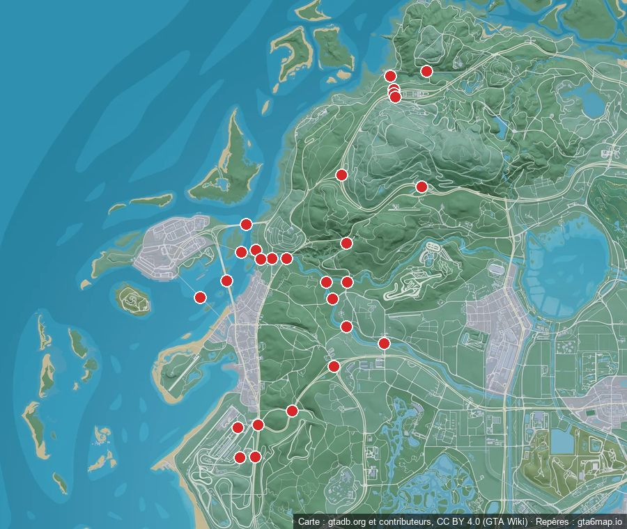
Les cascades aériennes (Under the Bridge et Knife Flights) : le nord-ouest (Port Gellhorn, Grayson et le comté de Kelly) · Carte : gtadb.org et contributeurs, CC BY 4.0 (GTA Wiki)
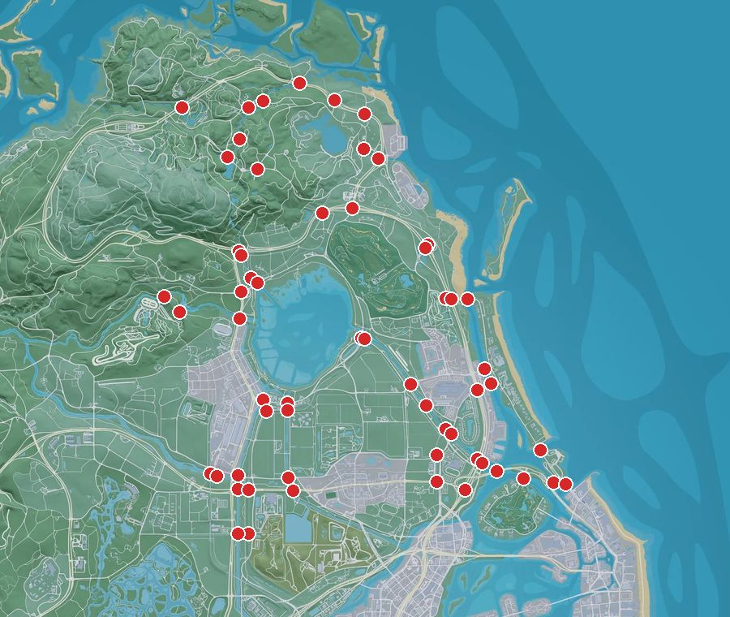
Les cascades aériennes (Under the Bridge et Knife Flights) : le nord-est (Ambrosia, Millport et le comté de Lummox) · Carte : gtadb.org et contributeurs, CC BY 4.0 (GTA Wiki)
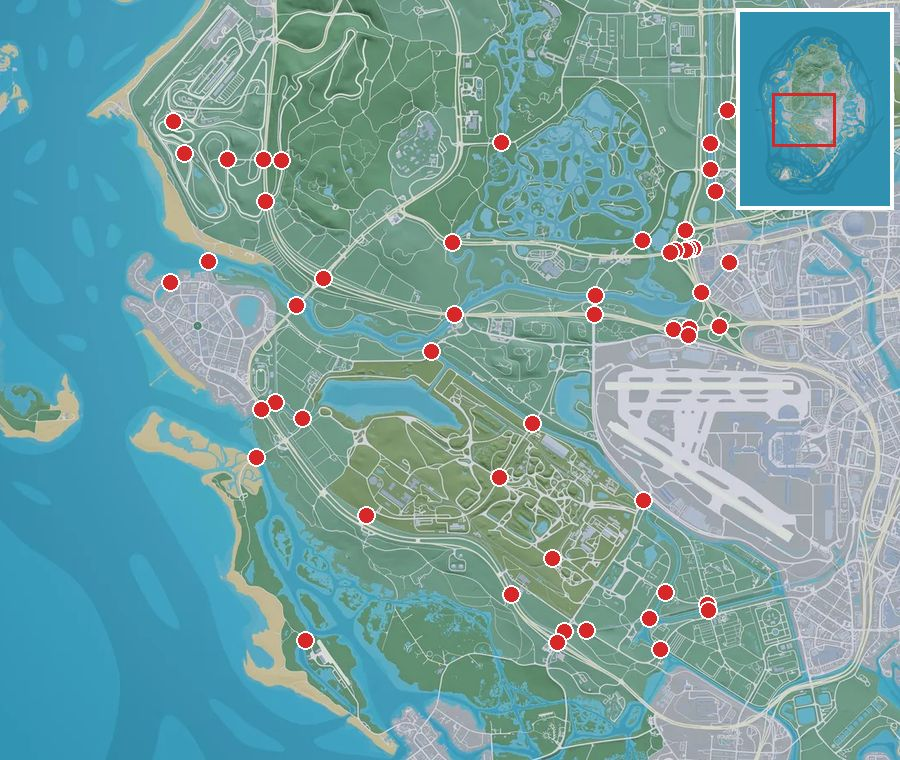
Les cascades aériennes (Under the Bridge et Knife Flights) : l'ouest (Grassrivers et les marais) · Carte : gtadb.org et contributeurs, CC BY 4.0 (GTA Wiki)
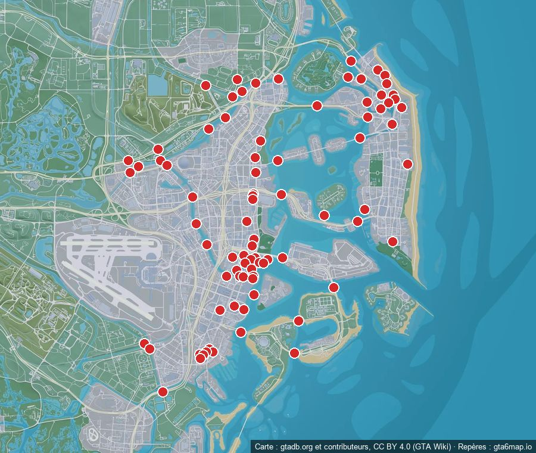
Les cascades aériennes (Under the Bridge et Knife Flights) : Vice City et ses plages · Carte : gtadb.org et contributeurs, CC BY 4.0 (GTA Wiki)
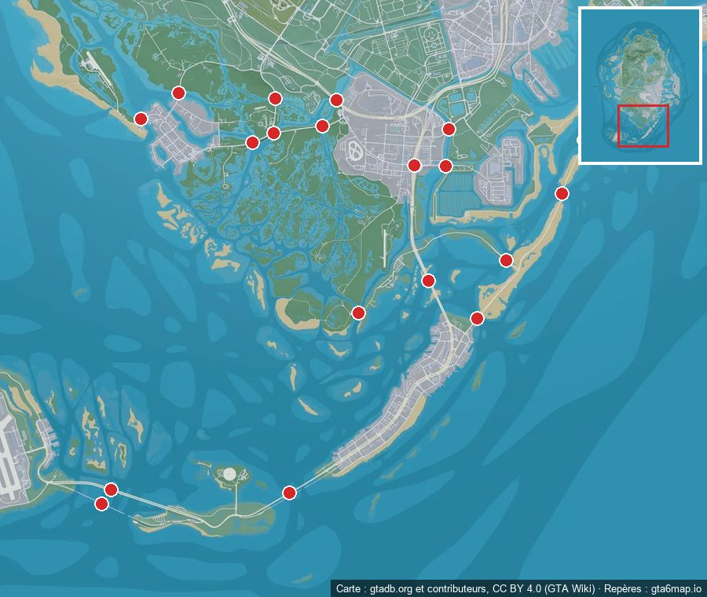
Les cascades aériennes (Under the Bridge et Knife Flights) : le sud (Hamlet et les Leonida Keys) · Carte : gtadb.org et contributeurs, CC BY 4.0 (GTA Wiki)
![Les Base Jumps — 1. Kalaga Outcrop Base Jump ; 2. Mount Kalaga Base Jump ; 3. Providence Canyon Antenna Mast Base Jump ; 4. Crimson Palms Base Jump ; 5. La Villette Base Jump ; 6. Archipelago Apartments North Base Jump ; 7. One Stracathro Tower Base Jump ; 8. Maven Residences Base Jump ; 9. Arcadia Towers East Base Jump ; 10. Arcadia Towers South Base Jump ; 11. Vice Civic Center Base Jump ; 12. Valdemar on the River Base Jump ; 13. High Life Hotel Base Jump ; 14. Heath Bank Base Jump ; 15. Pike Financial Center Base Jump ; 16. Rico Huxley Hotels Base Jump ; 17. Tequesta Tides Hotel & Spa North Base Jump ; 18. Tequesta Tides Hotel & Spa West Base Jump ; 19. Tequesta Tides Hotel & Spa South Base Jump ; 20. Fenestra Plaza Base Jump ; 21. Sahara Tower Base Jump ; 22. Eternity Apartments Base Jump ; 23. The Borough Condominiums Base Jump ; 24. Bluegrass Antenna Mast Base Jump](images/22-base-jumps.jpg)
Les Base Jumps — 1. Kalaga Outcrop Base Jump ; 2. Mount Kalaga Base Jump ; 3. Providence Canyon Antenna Mast Base Jump ; 4. Crimson Palms Base Jump ; 5. La Villette Base Jump ; 6. Archipelago Apartments North Base Jump ; 7. One Stracathro Tower Base Jump ; 8. Maven Residences Base Jump ; 9. Arcadia Towers East Base Jump ; 10. Arcadia Towers South Base Jump ; 11. Vice Civic Center Base Jump ; 12. Valdemar on the River Base Jump ; 13. High Life Hotel Base Jump ; 14. Heath Bank Base Jump ; 15. Pike Financial Center Base Jump ; 16. Rico Huxley Hotels Base Jump ; 17. Tequesta Tides Hotel & Spa North Base Jump ; 18. Tequesta Tides Hotel & Spa West Base Jump ; 19. Tequesta Tides Hotel & Spa South Base Jump ; 20. Fenestra Plaza Base Jump ; 21. Sahara Tower Base Jump ; 22. Eternity Apartments Base Jump ; 23. The Borough Condominiums Base Jump ; 24. Bluegrass Antenna Mast Base Jump · Carte : gtadb.org et contributeurs, CC BY 4.0 (GTA Wiki)
Le trophée Cunning Stunts en demande 250, et 50 cascades uniques débloquent le code Nitro illimitée.
-
Les contre-la-montre de drone Top Fun : 14 emplacements × 3 épreuves = 42, et il faut les 42, pour 1 %.
![Les épreuves de drone Top Fun (trois par lieu) — 1. Top Fun Drones - Abandoned Mining Pit ; 2. Top Fun Drones - Adler Creek ; 3. Top Fun Drones - MacAlister Gold Mine ; 4. Top Fun Drones - Tallaloko Lakeside Resort ; 5. Top Fun Drones - Rushwood Logging ; 6. Top Fun Drones - Millport ; 7. Top Fun Drones - Draper Refinery West ; 8. Top Fun Drones - Draper Refinery East ; 9. Top Fun Drones - Draper Island Terminal ; 10. Top Fun Drones - Port Gellhorn ; 11. Top Fun Drones - Red Apple Orchard ; 12. Top Fun Drones - Manifest Canyon ; 13. Top Fun Drones - Evergreen Mall ; 14. Top Fun Drones - Thundergolf ; 15. Top Fun Drones - Hot Skidz ; 16. Top Fun Drones - Waste Transfer Services ; 17. Top Fun Drones - Allied Crystal ; 18. Top Fun Drones - St. Vitus Medical Center ; 19. Top Fun Drones - Vice Regal Hotel ; 20. Top Fun Drones - Leaf Links ; 21. Top Fun Drones - Camp Moonflower ; 22. Top Fun Drones - Kowaachobee Village ; 23. Top Fun Drones - Tisha-Wocka Flea Market ; 24. Top Fun Drones - Apollo Aggregates ; 25. Top Fun Drones - Navitrak ; 26. Top Fun Drones - Capri Lake ; 27. Top Fun Drones - Ravella Drive ; 28. Top Fun Drones - Capri Train Station ; 29. Top Fun Drones - Wildland Zoo ; 30. Top Fun Drones - Shoreline Market ; 31. Top Fun Drones - Future Leonida Art Museum ; 32. Top Fun Drones - Ivory Tower ; 33. Top Fun Drones - The Jamaica ; 34. Top Fun Drones - Avarice Petroleum ; 35. Top Fun Drones - Marshland Animal Park ; 36. Top Fun Drones - Watson Bay ; 37. Top Fun Drones - Leonida RC Raceway ; 38. Top Fun Drones - Power Station South ; 39. Top Fun Drones - Power Station North ; 40. Top Fun Drones - Deep Roots](images/22-drones.jpg)
Les épreuves de drone Top Fun (trois par lieu) — 1. Top Fun Drones - Abandoned Mining Pit ; 2. Top Fun Drones - Adler Creek ; 3. Top Fun Drones - MacAlister Gold Mine ; 4. Top Fun Drones - Tallaloko Lakeside Resort ; 5. Top Fun Drones - Rushwood Logging ; 6. Top Fun Drones - Millport ; 7. Top Fun Drones - Draper Refinery West ; 8. Top Fun Drones - Draper Refinery East ; 9. Top Fun Drones - Draper Island Terminal ; 10. Top Fun Drones - Port Gellhorn ; 11. Top Fun Drones - Red Apple Orchard ; 12. Top Fun Drones - Manifest Canyon ; 13. Top Fun Drones - Evergreen Mall ; 14. Top Fun Drones - Thundergolf ; 15. Top Fun Drones - Hot Skidz ; 16. Top Fun Drones - Waste Transfer Services ; 17. Top Fun Drones - Allied Crystal ; 18. Top Fun Drones - St. Vitus Medical Center ; 19. Top Fun Drones - Vice Regal Hotel ; 20. Top Fun Drones - Leaf Links ; 21. Top Fun Drones - Camp Moonflower ; 22. Top Fun Drones - Kowaachobee Village ; 23. Top Fun Drones - Tisha-Wocka Flea Market ; 24. Top Fun Drones - Apollo Aggregates ; 25. Top Fun Drones - Navitrak ; 26. Top Fun Drones - Capri Lake ; 27. Top Fun Drones - Ravella Drive ; 28. Top Fun Drones - Capri Train Station ; 29. Top Fun Drones - Wildland Zoo ; 30. Top Fun Drones - Shoreline Market ; 31. Top Fun Drones - Future Leonida Art Museum ; 32. Top Fun Drones - Ivory Tower ; 33. Top Fun Drones - The Jamaica ; 34. Top Fun Drones - Avarice Petroleum ; 35. Top Fun Drones - Marshland Animal Park ; 36. Top Fun Drones - Watson Bay ; 37. Top Fun Drones - Leonida RC Raceway ; 38. Top Fun Drones - Power Station South ; 39. Top Fun Drones - Power Station North ; 40. Top Fun Drones - Deep Roots · Carte : gtadb.org et contributeurs, CC BY 4.0 (GTA Wiki) -
Les Bret's Target Decks : 15, et il faut les 15, pour 1 %.
- ⚠️ Réservés à Jason, et disponibles à partir de Pause Café (partie 6).
-
Les playlists uniques : 2, et il faut les 2, pour 1 %.
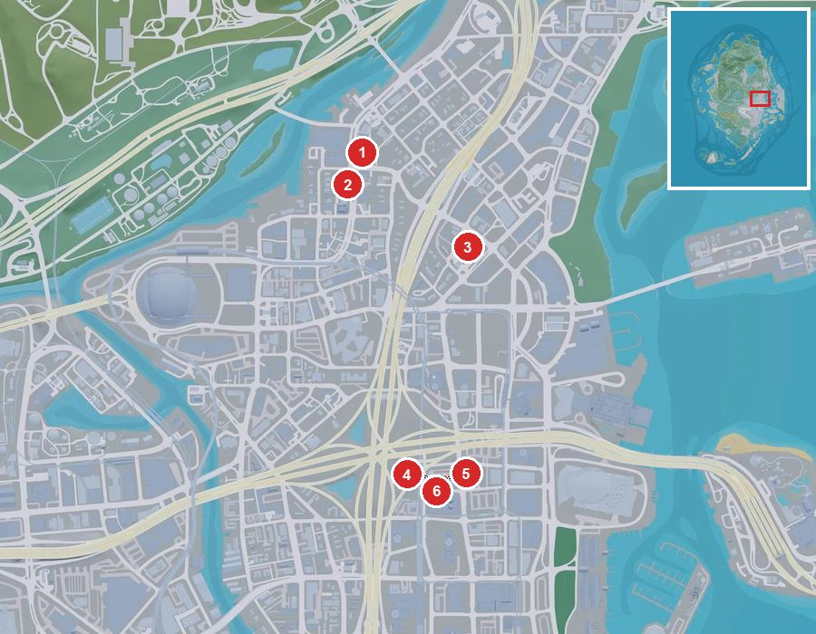
Les morceaux à trouver pour les deux playlists uniques — 1. The Sniper of La Perle 2 ; 2. The Sniper of La Perle 4 ; 3. The Sniper of La Perle 3 ; 4. The Vault Radio 1 ; 5. The Vault Radio 2 ; 6. The Vault Radio 3 · Carte : gtadb.org et contributeurs, CC BY 4.0 (GTA Wiki) -
Les jeux vidéo : 4 joués, pour 1 %. Deux sont connus — Lux Tenebrae et Street Trash III: Dezombifier, débloqués par Feng Shui (partie 2).
![Les bornes d'arcade — 1. Bang For Your Buck ; 2. Bang For Your Buck ; 3. Bang For Your Buck ; 4. Street Trash 3: Dezombifier ; 5. Bang For Your Buck ; 6. Street Trash 3: Dezombifier ; 7. Bang For Your Buck ; 8. Street Trash 3: Dezombifier ; 9. Bang For Your Buck ; 10. Street Trash 3: Dezombifier ; 11. Street Trash 3: Dezombifier ; 12. Bang For Your Buck ; 13. Bang For Your Buck ; 14. Street Trash 3: Dezombifier ; 15. Street Trash 3: Dezombifier ; 16. Street Trash 3: Dezombifier ; 17. Street Trash 3: Dezombifier ; 18. Bang For Your Buck ; 19. Bang For Your Buck ; 20. Street Trash 3: Dezombifier ; 21. Bang For Your Buck ; 22. Street Trash 3: Dezombifier ; 23. Street Trash 3: Dezombifier ; 24. Bang For Your Buck ; 25. Street Trash 3: Dezombifier ; 26. Bang For Your Buck ; 27. Street Trash 3: Dezombifier ; 28. Street Trash 3: Dezombifier ; 29. Bang For Your Buck ; 30. Bang For Your Buck ; 31. Street Trash 3: Dezombifier](images/22-bornes-arcade.jpg)
Les bornes d'arcade — 1. Bang For Your Buck ; 2. Bang For Your Buck ; 3. Bang For Your Buck ; 4. Street Trash 3: Dezombifier ; 5. Bang For Your Buck ; 6. Street Trash 3: Dezombifier ; 7. Bang For Your Buck ; 8. Street Trash 3: Dezombifier ; 9. Bang For Your Buck ; 10. Street Trash 3: Dezombifier ; 11. Street Trash 3: Dezombifier ; 12. Bang For Your Buck ; 13. Bang For Your Buck ; 14. Street Trash 3: Dezombifier ; 15. Street Trash 3: Dezombifier ; 16. Street Trash 3: Dezombifier ; 17. Street Trash 3: Dezombifier ; 18. Bang For Your Buck ; 19. Bang For Your Buck ; 20. Street Trash 3: Dezombifier ; 21. Bang For Your Buck ; 22. Street Trash 3: Dezombifier ; 23. Street Trash 3: Dezombifier ; 24. Bang For Your Buck ; 25. Street Trash 3: Dezombifier ; 26. Bang For Your Buck ; 27. Street Trash 3: Dezombifier ; 28. Street Trash 3: Dezombifier ; 29. Bang For Your Buck ; 30. Bang For Your Buck ; 31. Street Trash 3: Dezombifier · Carte : gtadb.org et contributeurs, CC BY 4.0 (GTA Wiki)
Les styles découverts
Un compteur à part, qui regroupe quatre collections.
| Collection | Nombre |
|---|---|
| Tatouages de magazine de Jason | 13 |
| Tatouages de magazine de Lucia | 15 |
| Autres tatouages de magazine, via WAiNK | 17 |
| Montres de luxe | 34 |
| Total | 79 |
Il en faut 70 sur 79 pour 1 %.
Les tenues comptent aussi dans la découverte des styles : celles de la penderie de la suite du Y Hotel, les tenues du Thrillbilly, celle de Nola, les tenues de sport de l'Ajax Gym, les Lunettes du Chien Cool et les baskets DWNPLY.
Quêtes et lieux
Toutes les collections, en un tableau
| Collection | Total | Pour le 100 % | Poids |
|---|---|---|---|
| Séries de cartes à collectionner | 480 cartes en 18 séries | 15 séries | 1 % |
| Magazines, livres et BD | 34 | 30 | 1 % |
| Découvertes sous-marines | 33 | 33 | 1 % |
| Séries de Kenton | 7 | 5 | 1 % |
| Lieux WAiNK scannés | — | 100 | 1 % |
| Spots de méditation | 18 validations | 15 | 1 % |
| Flamants de cocaïne | 125 | 100 | 1 % |
| Playlists uniques | 2 | 2 | 1 % |
| Styles découverts | 79 | 70 | 1 % |
| Courses uniques gagnées | 40 | 30 | 1 % |
| Médailles d'or de défi de course | 13 | 10 | 1 % |
| Médailles d'or de stand de tir | 42 | 42 | 1 % |
| Jeux vidéo joués | 4 | 4 | 1 % |
| Adversaires de billard battus | 7 | 5 | 1 % |
| Mini-golfs joués | 3 | 2 | 1 % |
| Paniers de basket | 100 | 90 | 1 % |
| Contre-la-montre de drone | 42 | 42 | 1 % |
| Cascades | 397 | 300 | 1 % |
| Défis | 80 | 70 | 1 % |
| Bret's Target Decks | 15 | 15 | 1 % |
| Modèles de base scannés | 277 | 200 | 1 % |
| Armes standard trouvées | 66 | 50 | 1 % |
| Animaux étudiés | 255 | 100 | 1 % |
Les trophées de collection
| Trophée | Condition | Grade |
|---|---|---|
| Don't Touch My Deck | 3 séries de cartes complètes | Argent |
| You WAiNKer! | 100 lieux scannés | Argent |
| Cunning Stunts | 250 cascades | Argent |
| Whip It Good | 100 véhicules découverts | Bronze |
| Positive Mental Attitude | Méditer à chaque spot | Bronze |
| Top Fun | Une course de drone gagnée à chaque emplacement | Bronze |
| Stick Fiddler | Terminer un jeu d'arcade | Bronze |
| One Last Thing | 50 défis | Bronze |
Les collections qui débloquent un code de triche
| Collection | Code débloqué |
|---|---|
| 10 montres | Avancer l'heure |
| 20 montres | Mettre le temps en pause |
| 24 cartes Vice City Flamingos | Bubblegum |
| 50 flamants de cocaïne détruits | Bouée Flamant rose |
| Tous les débris spatiaux | Sucre glace |
| 16 véhicules Girlypop | Jungle néon |
| 50 cascades uniques | Nitro illimitée |
| 50 séances de méditation | Avance rapide |
| 100 poissons pêchés | Fisheye |
| 250 000 $ de collections vendues | Pixel Art |
Butin exhaustif
Les objets de collection dont l'emplacement précis est connu à ce jour.
| Nom exact | Type | Où / comment l'obtenir | Utilité |
|---|---|---|---|
| Crowex Octane « Bobby Ambrose » | Montre de luxe | Capri, laissée par Halifax si tu acceptes sa proposition | Styles découverts |
| Lunettes du Chien Cool | Cosmétique | Île des chiens, en fouillant le sable de la plage | Styles découverts |
| Baskets DWNPLY | Cosmétique | Magasin Eris, Downtown : ballon de basket sur le vendeur | Styles découverts, et 1 580 $ économisés |
| Lux Tenebrae | Jeu vidéo | Sur la télé de la maison de Jason, après Feng Shui | 1 des 4 jeux à jouer |
| Street Trash III: Dezombifier | Jeu vidéo | Même télé, après Feng Shui | 1 des 4 jeux à jouer |
| Bret's Target Decks | Collection | L'arc de Bret Vogel, Jason seul, après Pause Café | Les 15 sont requis |
| Fusil à petit gibier W-22 | Arme unique | Camp des Kingfishers | Compte dans les armes trouvées |
| Trésors des épaves | Objets de valeur | Les 33 épaves de Kenton (partie 25) | Découvertes sous-marines |
| Tenues de la penderie | Cosmétiques | Suite 701 du Y Hotel, en interagissant avec la penderie | Styles découverts |
| Tenues du Thrillbilly | Cosmétiques | À acheter sur place, pour les deux personnages | Styles découverts |
| Tenue de Nola | Cosmétique | Watch It : une des deux sur les mannequins | Styles découverts |
Conseils et pièges
Regarde le bec des flamants. C'est le piège le plus coûteux en temps de tout le jeu. Bec noir et blanc, ça compte. Bec jaune et noir, non.
Ne scanne pas les Standout Vehicles pour le compteur. Les 280 véhicules remarquables ne font pas partie des 277 modèles de base. Deux listes, deux objectifs.
Les cascades se font en roulant. 202 des 397 sont des passages sous les ponts. Prends l'habitude de passer dessous plutôt que dessus, et la moitié du compteur se remplit toute seule.
Médite avec les deux personnages. Dix lieux, dix-huit validations. Si tu ne médites qu'avec un seul, tu plafonnes à dix et le seuil est à quinze.
Les Bret's Target Decks sont pour Jason. Et il faut les quinze, sans exception. Ne les commence pas avec Lucia.
Fais les 7 séries de Kenton, pas 5. Le compteur n'en demande que cinq, mais les découvertes sous-marines exigent les sept et elles demandent les 33 épaves.
Une carte, un type d'icône. Les cartes interactives sont illisibles si tu affiches tout. Tout masquer, puis un seul type à la fois.
Rien n'est perdu. Toutes les collections se terminent après le générique, avec les deux personnages jouables. Ne te stresse pas pendant l'histoire.
Alertes
- ⚠️ Piège de comptage : les flamants au bec jaune et noir ne comptent pas.
- ⚠️ Piège de comptage : les 280 Standout Vehicles ne comptent pas dans les 277 modèles de base.
- ⚠️ Réservé à un personnage : les Bret's Target Decks sont pour Jason seul.
- ⚠️ Seuil trompeur : les 7 séries de Kenton sont nécessaires aux découvertes sous-marines, alors que le compteur n'en demande que 5.
- ⚠️ Emplacements non publiés : les positions exactes des centaines d'objets de collection. Utilise une carte interactive.
- ⏳ Rien n'est manquable pour le 100 % : tout reste faisable après la fin de l'histoire.
Check-list
- 15 des 18 séries de cartes complétées
- Série des 24 Vice City Flamingos complétée
- 30 des 34 magazines, livres et BD trouvés
- 34 montres de luxe trouvées
- 70 des 79 styles découverts
- 100 des 125 flamants de cocaïne détruits, bec noir et blanc
- 200 des 277 modèles de base scannés
- 100 lieux WAiNK scannés
- Débris spatiaux tous scannés
- 16 véhicules Girlypop découverts
- 100 des 255 animaux étudiés
- Les 33 découvertes sous-marines trouvées
- Les 7 séries de Kenton complétées
- 15 des 18 validations de méditation
- 90 des 100 paniers de basket
- 300 des 397 cascades réalisées
- Les 42 contre-la-montre de drone
- Les 15 Bret's Target Decks avec Jason
- Les 2 playlists uniques complétées
- Les 4 jeux vidéo joués
- 50 des 66 armes standard trouvées
Complément
Les activités et les loisirs
L'essentiel
- Le trophée à viser tôt : Master of None demande d'essayer chaque type d'activité une fois. Fais-le au fil de l'eau.
- Ne pas rater : le Waiver Pass à 5 $ des stands de tir. Sans lui, pas de défis, donc pas de 42 médailles d'or.
- Le bon plan : les courses du Thrillbilly Mud Club sont rentables, et elles montent le cardio au passage.
- Avant de partir : le tennis n'est pas jouable, contrairement à ce qu'on pourrait croire. Ne le cherche pas.
Objectif
Recenser tout ce que Leonida propose entre deux missions. Ce n'est pas du remplissage : les activités alimentent sept compteurs du 100 %, montent tes statistiques, débloquent une bonne moitié des codes de triche et font monter la relation du couple.
Itinéraire
Les lieux dédiés aux loisirs :
- Le Griffin Shooting Range et le Rodgers Ranch : les deux stands de tir.
- Le Thrillbilly Mud Club, comté de Kelly : le festival, les courses tout-terrain, la boutique de tenues.
- Le Gellhorn Raceway et le Boone Speedway : les deux autres circuits.
- L'Ajax Gym, la Muscle Beach gym et les salles de sport : musculation, vélo d'intérieur, tapis de course.
- Leaf Links : le golf.
- Le ponton de ta maison et les bateaux : la pêche.
- Mount Kalaga National Park : la chasse, les sentiers, le kayak.
- Grassrivers : les hydroglisseurs.
- Les dix spots de méditation, dans tout l'État.
📍 La zone en images : la carte interactive française, filtrable par type de lieu — https://gta6map.io/
Déroulé pas à pas
Les seize activités recensées
Ce sont les activités à part entière, nécessaires au 100 % sans l'être pour l'histoire.
| Activité | Note |
|---|---|
| Base Jumping / Parachuting | 25 base jumps comptent dans les cascades |
| Basketball | 100 paniers, dont 90 pour le compteur |
| Boxing / Fighting | — |
| Fishing | La meilleure méthode pour la concentration : 5 à 10 % par poisson |
| Gym / Working Out | Vélo d'intérieur et tapis de course, très efficaces mais payants |
| Hunting | ⚠️ Attention au POACH |
| Kayaking | Monte le cardio |
| Mini Golf | 3 lieux, dont 2 pour le compteur |
| Off-Road Races | Le Thrillbilly Mud Club |
| Pool | 7 adversaires, dont 5 à battre. Tu y joues pour la première fois au bar d'Enfin Libre |
| Scuba Diving | Débloqué par Island Dreams (partie 25) |
| Sea Races | — |
| Shooting Range | 42 médailles d'or à décrocher |
| Street Races | 40 courses uniques, dont 30 gagnées pour le compteur |
| Wrestling | — |
| Wyman's Classic Car Collection | Une collection de voitures classiques à visiter |
![Les spots de pêche — 1. Hotspot - Tiger Grouper ; 2. Hotspot - Black Grouper ; 3. Hotspot - Hogfish ; 4. Hotspot - Largemouth Bass ; 5. Hotspot - Stoplight Parrotfish ; 6. Hotspot - Black Drum ; 7. Hotspot - Sea Rock Bass ; 8. Hotspot - Channel Catfish ; 9. Hotspot - Yellowfin Tuna ; 10. Hotspot - Atlantic Spadefish ; 11. Hotspot - Redfin Pickerel ; 12. Hotspot - Cobia ; 13. Hotspot - Mahi-Mahi ; 14. Hotspot - Common Snook ; 15. Hotspot - Florida Gar ; 16. Hotspot - Salt Fish ; 17. Hotspot - Candy Fish ; 18. Hotspot - Yellowtail Snapper ; 19. Hotspot - Red Northern Snapper ; 20. Hotspot - Green Moray Eel ; 21. Hotspot - Red Lionfish ; 22. Hotspot - Great Barracuda ; 23. Hotspot - Spanish Mackerel ; 24. Hotspot - Littlehead Porgy ; 25. Hotspot - Redbreast Sunfish ; 26. Hotspot - Blue Striped Grunt ; 27. Hotspot - Atlantic Herring ; 28. Hotspot - Lake Chubsucker ; 29. Hotspot - Striped Bass ; 30. Hotspot - Greater Amberjack ; 31. Hotspot - Spotted Moray Eel ; 32. Hotspot - Permit ; 33. Hotspot - American Eel ; 34. Hotspot - Bluegill ; 35. Hotspot - Atlantic Tarpon](images/23-peche.jpg)
Les spots de pêche — 1. Hotspot - Tiger Grouper ; 2. Hotspot - Black Grouper ; 3. Hotspot - Hogfish ; 4. Hotspot - Largemouth Bass ; 5. Hotspot - Stoplight Parrotfish ; 6. Hotspot - Black Drum ; 7. Hotspot - Sea Rock Bass ; 8. Hotspot - Channel Catfish ; 9. Hotspot - Yellowfin Tuna ; 10. Hotspot - Atlantic Spadefish ; 11. Hotspot - Redfin Pickerel ; 12. Hotspot - Cobia ; 13. Hotspot - Mahi-Mahi ; 14. Hotspot - Common Snook ; 15. Hotspot - Florida Gar ; 16. Hotspot - Salt Fish ; 17. Hotspot - Candy Fish ; 18. Hotspot - Yellowtail Snapper ; 19. Hotspot - Red Northern Snapper ; 20. Hotspot - Green Moray Eel ; 21. Hotspot - Red Lionfish ; 22. Hotspot - Great Barracuda ; 23. Hotspot - Spanish Mackerel ; 24. Hotspot - Littlehead Porgy ; 25. Hotspot - Redbreast Sunfish ; 26. Hotspot - Blue Striped Grunt ; 27. Hotspot - Atlantic Herring ; 28. Hotspot - Lake Chubsucker ; 29. Hotspot - Striped Bass ; 30. Hotspot - Greater Amberjack ; 31. Hotspot - Spotted Moray Eel ; 32. Hotspot - Permit ; 33. Hotspot - American Eel ; 34. Hotspot - Bluegill ; 35. Hotspot - Atlantic Tarpon · Carte : gtadb.org et contributeurs, CC BY 4.0 (GTA Wiki)
⚠️ Le tennis n'est pas jouable.
Les autres choses à faire
Elles n'ont pas de compteur. Elles comptent probablement pour Master of None, et surtout elles font vivre le monde.
| Hydroglisseur | Parcs d'attractions | Catch de jardin |
| Rassemblements de motos | Rassemblements de bateaux | Rassemblements de voitures |
| Danser | Boire | Jet-ski |
| Boîtes de nuit | Événements aléatoires | Braquer les épiceries |
| Faire ses courses | Réseaux sociaux | Arcs d'inconnus |
| Strip clubs | Étudier les animaux | Bronzer |
| Jeux vidéo | Visiter le zoo | Regarder la télé |
Les stands de tir
- Le Waiver Pass : il coûte 5 $ et débloque les défis. Sans lui, tu ne peux pas décrocher les médailles.
- Les deux stands :
| Stand | Médailles d'or |
|---|---|
| Griffin Shooting Range | 18 |
| Rodgers Ranch | 24 |
- Les 42 médailles d'or valent 1 % du compteur et le trophée argent The Shootist.
- Les paliers de médailles débloquent trois codes de triche (partie 26) :
| Palier | Code |
|---|---|
| 25 médailles de bronze ou plus | Munitions au maximum |
| 25 médailles d'argent ou plus | Munitions infinies |
| 25 médailles d'or | Aucun rechargement |
Les courses
-
Les trois circuits : le Gellhorn Raceway, le Thrillbilly Mud Club et le Boone Speedway.
- Finir premier dans dix courses sur ces trois pistes débloque le code Réparer le véhicule.
-
Les 40 courses uniques : il en faut 30 gagnées pour 1 %. Le trophée Earn Cash, Not Kudos en demande 20 différentes.
![Les départs de course — 1. Animal Crackers - Red Canyon Run ; 2. Animal Crackers - Farm Tour ; 3. Animal Crackers - Log Jam ; 4. Animal Crackers - Golf Tour ; 5. Mount Kalaga - Cycling Trial ; 6. Waning Sands - Motocross Stunt Run ; 7. Thrillbilly Mud Club - Oval Trial ; 8. Thrillbilly Mud Club - Drag Trial ; 9. Thrillbilly Mud Club - Skid Loop ; 10. Thrillbilly Mud Club - Figure 8 Blitz ; 11. Thrillbilly Mud Club - Swamp Run Trial ; 12. Thrillbilly Mud Club - Air Time Stunt Run ; 13. Thrillbilly Mud Club - Hill Climb Trial ; 14. Ambrosia Raceway - Oval ; 15. Ambrosia Raceway - Figure 8 ; 16. Thrillbilly Mud Club - Big Mud ; 17. Thrillbilly Mud Club - Hog Hustle ; 18. Thrillbilly Mud Club - Muck Scramble ; 19. Thrillbilly Mud Club - Dirt Slam ; 20. Thrillbilly Mud Club - Sludge Rush ; 21. Thrillbilly Mud Club - Trash Dash ; 22. Ambrosia Raceway - Raceway Trial ; 23. Thrillbilly Mud Club - Dirt Track Trial ; 24. Gellhorn Raceway - Dragway Trial ; 25. Gellhorn Raceway - Long Loop ; 26. Gellhorn Raceway - Intermediate Loop CCW ; 27. Gellhorn Raceway - Short Loop ; 28. Gellhorn Raceway - Basic Loop ; 29. Gellhorn Raceway - Introduction ; 30. Gellhorn Raceway - Full Loop CCW ; 31. Gellhorn Raceway - Long Loop CCW ; 32. Gellhorn Raceway - Short Loop CCW ; 33. Gellhorn Raceway - Full Loop ; 34. Gellhorn Raceway - Raceway Trial ; 35. Gellhorn Raceway - Intermediate Loop ; 36. Gellhorn Raceway - Basic Loop CCW ; 37. Animal Crackers - Wetlands Circuit ; 38. Animal Crackers - Landfill ; 39. Hamlet - BMX Stunt Run ; 40. Boone Speedway - Speedway Trial ; 41. Boone Speedway - Oval ; 42. Boone Speedway - Figure 8](images/23-courses.jpg)
Les départs de course — 1. Animal Crackers - Red Canyon Run ; 2. Animal Crackers - Farm Tour ; 3. Animal Crackers - Log Jam ; 4. Animal Crackers - Golf Tour ; 5. Mount Kalaga - Cycling Trial ; 6. Waning Sands - Motocross Stunt Run ; 7. Thrillbilly Mud Club - Oval Trial ; 8. Thrillbilly Mud Club - Drag Trial ; 9. Thrillbilly Mud Club - Skid Loop ; 10. Thrillbilly Mud Club - Figure 8 Blitz ; 11. Thrillbilly Mud Club - Swamp Run Trial ; 12. Thrillbilly Mud Club - Air Time Stunt Run ; 13. Thrillbilly Mud Club - Hill Climb Trial ; 14. Ambrosia Raceway - Oval ; 15. Ambrosia Raceway - Figure 8 ; 16. Thrillbilly Mud Club - Big Mud ; 17. Thrillbilly Mud Club - Hog Hustle ; 18. Thrillbilly Mud Club - Muck Scramble ; 19. Thrillbilly Mud Club - Dirt Slam ; 20. Thrillbilly Mud Club - Sludge Rush ; 21. Thrillbilly Mud Club - Trash Dash ; 22. Ambrosia Raceway - Raceway Trial ; 23. Thrillbilly Mud Club - Dirt Track Trial ; 24. Gellhorn Raceway - Dragway Trial ; 25. Gellhorn Raceway - Long Loop ; 26. Gellhorn Raceway - Intermediate Loop CCW ; 27. Gellhorn Raceway - Short Loop ; 28. Gellhorn Raceway - Basic Loop ; 29. Gellhorn Raceway - Introduction ; 30. Gellhorn Raceway - Full Loop CCW ; 31. Gellhorn Raceway - Long Loop CCW ; 32. Gellhorn Raceway - Short Loop CCW ; 33. Gellhorn Raceway - Full Loop ; 34. Gellhorn Raceway - Raceway Trial ; 35. Gellhorn Raceway - Intermediate Loop ; 36. Gellhorn Raceway - Basic Loop CCW ; 37. Animal Crackers - Wetlands Circuit ; 38. Animal Crackers - Landfill ; 39. Hamlet - BMX Stunt Run ; 40. Boone Speedway - Speedway Trial ; 41. Boone Speedway - Oval ; 42. Boone Speedway - Figure 8 · Carte : gtadb.org et contributeurs, CC BY 4.0 (GTA Wiki) -
Les 13 défis de course : il faut 10 médailles d'or pour 1 %.
-
Le Thrillbilly : tu dois acheter des tenues sur place pour les deux personnages avant de participer. Les courses tout-terrain y sont relativement rentables, et le festival vaut le détour (partie 6).
-
Les courses de drones Top Fun : 14 emplacements × 3 contre-la-montre = 42, et il faut les 42 pour 1 %. Le trophée Top Fun demande une victoire à chaque emplacement.
- Elles se découvrent dans la zone du chapitre 2.
Les jeux vidéo
- Quatre jeux à jouer pour 1 %. Deux sont connus, et tous deux se débloquent par Feng Shui au chapitre 1 (partie 2).
- Lux Tenebrae : une parodie des jeux de Kojima croisés avec les titres obscurs de développeurs solo. Le puzzle se résout en éliminant les quatre obstacles en diagonale avec la tour noire, sans toucher l'autre tour, puis en amenant la tour brune en contact avec la noire.
- Street Trash III: Dezombifier : inspiré des titres de Capcom. Reste mobile, utilise les tonneaux explosifs, et ramasse six engrenages pour appeler l'évacuation en moins de 20 minutes.
- Les sessions s'interrompent pendant la mission, mais les deux jeux sont accessibles à tout moment sur ta télé ensuite.
- Le trophée : Stick Fiddler demande de terminer un jeu d'arcade.
⚠️ Les deux autres jeux ne sont pas encore identifiés. À vérifier en jeu.
Les autres compteurs de loisir
-
Le billard : 7 adversaires, dont 5 à battre pour 1 %. Tu y joues pour la première fois au bar d'Enfin Libre.
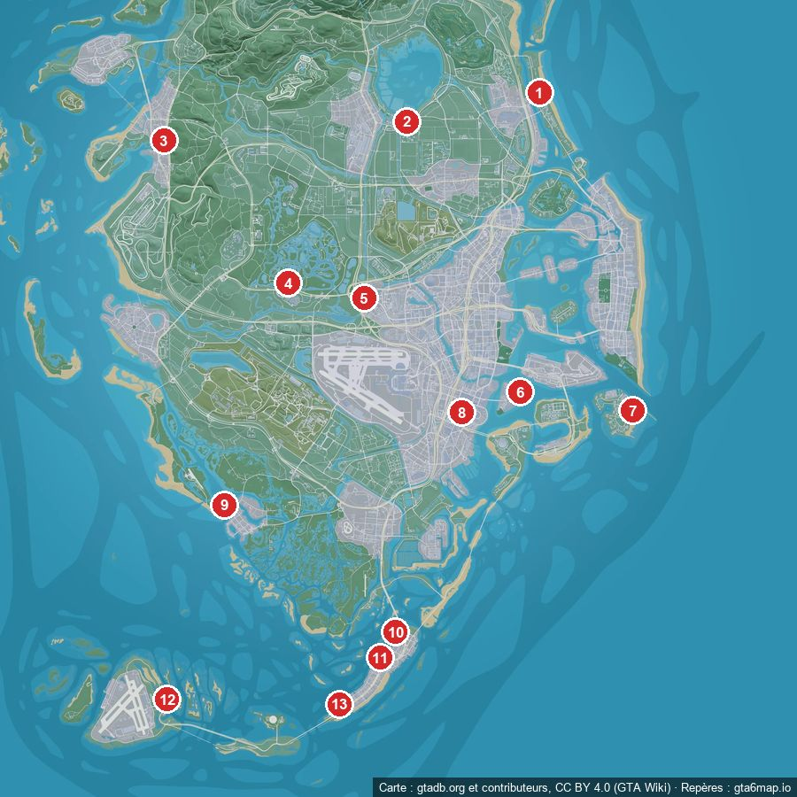
Les tables de billard — 1. Pool - Sands Of Time ; 2. Opponent Pool - The Thirsty Wolf ; 3. Opponent Pool - Delights ; 4. Opponent Pool - Kowaachobee ; 5. Pool - Tisha-Wocka Flea Market ; 6. Pool - Pegassi Residences ; 7. Pool - Dalton Island ; 8. Pool - Grand Majestic ; 9. Pool - The White Clam ; 10. Opponent Pool - Rusty Anchor ; 11. Tiki Touchdown ; 12. Pool - Riquezas Keys ; 13. Pool - Isla Tropical · Carte : gtadb.org et contributeurs, CC BY 4.0 (GTA Wiki) -
Le mini-golf : 3 lieux, dont 2 joués pour 1 %.
-
Les paniers de basket : 100, dont 90 différents pour 1 %.
-
Les playlists uniques : 2, et il faut les 2 pour 1 %.
-
La méditation : 10 lieux, 18 validations possibles, 15 requises (partie 22).
-
La pêche : au-delà de la concentration, le trophée Baited My Tackle demande de battre Cal à un défi de pêche, et 100 poissons pêchés débloquent le filtre Fisheye.
-
L'étude des animaux : 255 animaux, dont 100 pour 1 %. Le jeu contient 170 espèces.
Le sport et les statistiques
Les activités physiques ne sont pas que décoratives : elles montent tes statistiques (partie 18).
| Statistique | Les meilleures activités |
|---|---|
| Concentration | La pêche, 5 à 10 % par poisson |
| Cardio | Le punching-ball de la remise, puis le sprint, la natation, le kayak, le vélo, le tapis de course |
| Force | Les poids et kettlebells de la piscine du Starlet Motel |
⚠️ Il y a des seuils par activité : une même discipline finit par ne plus rien rapporter. Alterne.
Quêtes et lieux
Les trophées de loisir
| Trophée | Condition | Grade |
|---|---|---|
| The Shootist | Une médaille d'or à tous les défis de stand de tir | Argent |
| Cunning Stunts | 250 cascades | Argent |
| Master of None | Essayer chaque type d'activité une fois | Bronze |
| Earn Cash, Not Kudos | Gagner 20 courses différentes | Bronze |
| Top Fun | Une course de drone gagnée à chaque emplacement | Bronze |
| Baited My Tackle | Battre Cal à un défi de pêche | Bronze |
| Stick Fiddler | Terminer un jeu d'arcade | Bronze |
| Positive Mental Attitude | Méditer à chaque spot | Bronze |
| Fair Game | Chasser un animal unique pour Bret | Bronze |
Les loisirs qui débloquent un code de triche
Un bon tiers des codes du jeu passe par les activités (partie 26).
| Activité | Code débloqué |
|---|---|
| 10 courses gagnées sur les trois circuits | Réparer le véhicule |
| 25 médailles de bronze au stand de tir | Munitions au maximum |
| 25 médailles d'argent | Munitions infinies |
| 25 médailles d'or | Aucun rechargement |
| 100 séances d'entraînement | Gilet pare-balles |
| 50 cascades uniques | Nitro illimitée |
| 50 sauts en parachute ou base jumps à 90 m et plus | Parachute |
| 20 chutes libres de 12 m survécues | Aucun dégât de chute |
| 100 poissons pêchés | Fisheye |
| 50 séances de méditation | Avance rapide |
| 2 500 $ dépensés en alcool | Ivresse |
| 100 grenades lancées | Toutes les armes explosives |
| 100 cocktails Molotov lancés | Bouteilles explosives |
| 100 ennemis brûlés | Munitions incendiaires |
| 100 véhicules explosés | Lance-roquettes Hauners H-AT |
| 50 flamants de cocaïne détruits | Bouée Flamant rose |
| 100 véhicules de police volés | Paysage infernal |
Butin exhaustif
| Nom exact | Type | Où / comment l'obtenir | Utilité |
|---|---|---|---|
| Waiver Pass | Laissez-passer | 5 $, aux stands de tir | Débloque les défis, donc les 42 médailles |
| Canne à pêche (Fishing Rod) | Équipement | Dès le chapitre 1 | Concentration |
| Punching-ball | Équipement | Remise sous la maison de Jason, à accrocher à une poutre | Cardio |
| Poids et kettlebells | Équipement | Piscine du Starlet Motel | Force et santé |
| Tenues du Thrillbilly | Cosmétiques | À acheter sur place, pour les deux personnages | Obligatoires pour les courses du Mud Club |
| Lux Tenebrae | Jeu vidéo | Télé de la maison, après Feng Shui | 1 des 4 jeux |
| Street Trash III: Dezombifier | Jeu vidéo | Même télé | 1 des 4 jeux |
| Détecteur de métaux | Équipement | Island Dreams, fourni par Kenton | Chasse au trésor (partie 25) |
| Lance-harpons | Arme | Island Dreams, fourni par Kenton | Requins, et pêche |
| Binoculars | Équipement | Dans la liste d'équipement du jeu | Observation, étude des animaux |
Conseils et pièges
Achète le Waiver Pass tout de suite. Cinq dollars pour débloquer un compteur entier et un trophée argent, il n'y a pas à hésiter.
Essaie tout une fois, tôt. Le trophée Master of None se gagne sans effort si tu touches à chaque activité en passant, et c'est pénible à rattraper à la fin.
Pêche pendant les temps morts. Le jeu te fait souvent attendre plusieurs jours en jeu. La pêche remplit ce temps et monte la statistique la plus utile du jeu.
Alterne tes entraînements. Chaque activité physique a un plafond. Punching-ball, sprint, natation, vélo : un peu de chaque.
Le Thrillbilly rapporte. Les courses tout-terrain du Mud Club sont rentables, et l'offroad occupe une bonne partie des 40 courses uniques.
Les drones se découvrent au chapitre 2. Profite du temps libre avant Et Moi Dunk ! pour repérer leurs emplacements.
Ne cherche pas le tennis. Il n'est pas jouable.
Alertes
- ⏳ Bloquant sans lui : le Waiver Pass à 5 $ conditionne les défis de stand de tir, donc les 42 médailles d'or.
- ⚠️ Obligatoire pour participer : les tenues du Thrillbilly, à acheter sur place pour les deux personnages.
- ⚠️ Seuils par activité : une même discipline cesse de faire progresser une statistique. Alterne.
- ⚠️ Non jouable : le tennis.
- ⚠️ Non identifiés : les deux autres jeux vidéo parmi les quatre à jouer. À vérifier en jeu.
- ⚠️ Attention au POACH pendant la chasse.
Check-list
- Chaque type d'activité essayé une fois (trophée Master of None)
- Waiver Pass à 5 $ acheté
- 18 médailles d'or au Griffin Shooting Range
- 24 médailles d'or au Rodgers Ranch (trophée The Shootist)
- 30 des 40 courses uniques gagnées
- 10 des 13 médailles d'or de défi de course
- 10 courses gagnées sur les trois circuits
- Tenues du Thrillbilly achetées pour les deux personnages
- Les 42 contre-la-montre de drone terminés
- 5 des 7 adversaires de billard battus
- 2 des 3 mini-golfs joués
- 90 des 100 paniers de basket
- Les 2 playlists uniques complétées
- Les 4 jeux vidéo joués (trophée Stick Fiddler)
- Cal battu à la pêche (trophée Baited My Tackle)
- 100 poissons pêchés
- 15 des 18 validations de méditation
- 100 des 255 animaux étudiés
- Animal unique de Bret chassé (trophée Fair Game)
- Wyman's Classic Car Collection visitée
Complément
Les propriétés et les garages
L'essentiel
- Le total à prévoir : les huit garages achetables coûtent 160 000 $ en tout, et le trophée Little Boxes demande de les avoir tous.
- Ne pas rater : quatre garages sont gratuits, débloqués par l'histoire. Deux arrivent d'un coup au chapitre 5.
- Les planques ne s'achètent pas : les quatre sont prêtées par le scénario, dans l'ordre des chapitres.
- Avant de partir : aucune entreprise à revenus passifs n'a été trouvée dans ce jeu. Ne cherche pas un empire à bâtir.
Objectif
Savoir où dormir, où garer ses voitures, et combien ça coûte. GTA VI sépare nettement les deux : les planques viennent avec l'histoire et sont gratuites, les garages s'achètent et servent à ta collection de véhicules.
Itinéraire
Les quatre planques, dans l'ordre où le jeu te les donne :
- La maison des Leonida Keys, sur Key Lento : dès le début.
- Le Starlet Motel, à Port Gellhorn : au début du chapitre 2.
- L'appartement de Bayside, sur Catalan Boulevard à Vice City : au chapitre 3.
- La suite 701 du Y Hotel, à Ocean Beach : au chapitre 4.
Les garages se répartissent entre Port Gellhorn et Vice City. L'achat passe par l'application Vice City Real Estate (partie 19).
📍 La zone en images : la carte interactive française, filtrable sur les propriétés — https://gta6map.io/
Déroulé pas à pas
Les quatre planques
- La maison de Key Lento : disponible dès le départ, prêtée par Brian Heder.
- Elle a un ponton pour pêcher, une remise sous la maison pour le punching-ball, un banc de musculation dans la cour arrière, une télé avec les jeux d'arcade, et une planque sous le parquet de la chambre.
- Les quatre chantiers de rénovation sont à finir avant la fin de Feng Shui (partie 4).
- ⚠️ Tu la perds à la fin du chapitre 1, pendant Home Sweet Home, et l'argent sous le parquet avec elle.
- Le Starlet Motel : au début du chapitre 2.
- Il a une piscine avec des poids et des kettlebells, trois chats dans les environs, et la chambre de Jason à visiter chaque soir.
- ⚠️ Tu le perds définitivement quand tu lances Heurts de Départ. C'est un point de non-retour.
- L'appartement de Bayside : au chapitre 3, prêté par Boobie Ike sur Catalan Boulevard.
- ⚠️ Gare-toi sous l'auvent : c'est le seul endroit où tes voitures sont conservées pendant ce chapitre.
- Plusieurs missions démarrent depuis un sac du placard ou de la chambre.
- Tant que vous y vivez, vous travaillez pour Boobie.
- La suite 701 du Y Hotel : au chapitre 4, offerte par Valentina — qui s'en sert pour blanchir de l'argent.
- Septième étage, à gauche puis tout au bout du couloir.
- Interagis avec la penderie de la chambre : de nouvelles tenues s'y débloquent.
- Le voiturier prend ta voiture à l'arrivée, et le service de voiture de l'hôtel est un taxi gratuit pour tout le reste du jeu.
- ⚠️ De Making Gainz à VCIA Takedown, c'est le seul endroit où le couple peut se retrouver.
⚠️ Aucune planque ne s'achète. Elles arrivent toutes avec le scénario.
Le box de stockage
- Big House Storage : Jason achète un box pendant Caught Slipping, au chapitre 3. Il se trouve au sud de Bayside, et c'est là que l'équipe planque le disque dur que Raul réclame dans Heavy Lifting.
Les huit garages achetables
Tous passent par l'application Vice City Real Estate. Du moins cher au plus cher.
| Garage | Prix |
|---|---|
| Mitchell Auto Center | 4 000 $ |
| Persistence Road Garage | 7 600 $ |
| 7th Avenue Garage | 12 000 $ |
| Store n' Bolt | 16 800 $ |
| Wyatt Motors | 21 600 $ |
| Vela Rota Driver Garage | 24 000 $ |
| Bonita Court Garage | 34 000 $ |
| Atlantic Court Garage | 40 000 $ |
| Total | 160 000 $ |
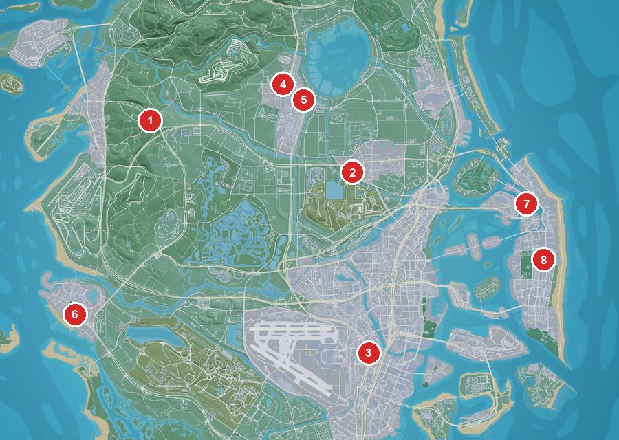
Les huit garages achetables, numérotés dans l'ordre du tableau — 1. Mitchell Auto Center ; 2. Persistence Road Garage ; 3. 7th Avenue Garage ; 4. Store n' Bolt ; 5. Wyatt Motors ; 6. Vela Rota Driver Garage ; 7. Bonita Court Garage ; 8. Atlantic Court Garage
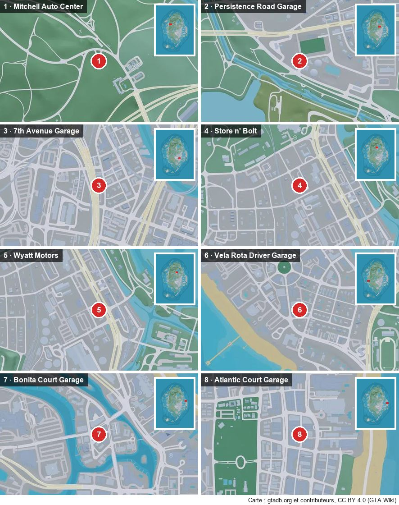
Chaque garage achetable de près
Le trophée Little Boxes demande de les acheter tous.
Les quatre garages gratuits de l'histoire
| Garage | Places | Débloqué par |
|---|---|---|
| Port Gellhorn Station Garage | — | Véhicule Quotidien, chapitre 2 |
| Thompson Court Garage | 2 | Company Cars, chapitre 4 |
| NE 15th Street Garage | 2 | Operation Savage Glory, chapitre 5 |
| Pegassi Residences Garage | 3 | Operation Savage Glory, chapitre 5 |
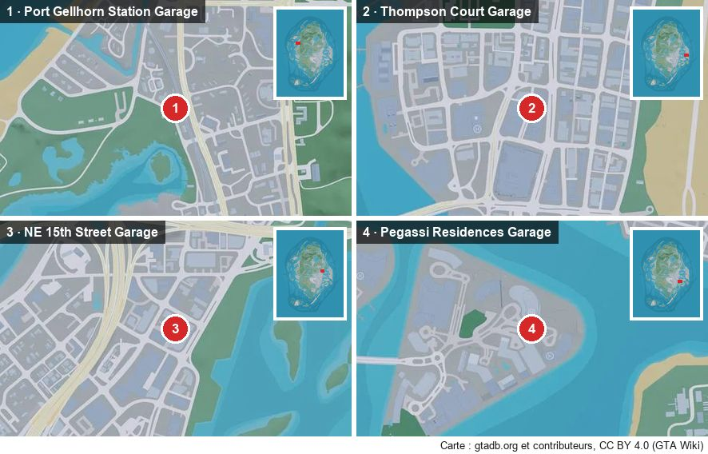
Les quatre garages gratuits de l'histoire, dans l'ordre du tableau
Deux garages d'un coup au chapitre 5 : Operation Savage Glory en débloque deux, soit cinq places gratuites. Garde-le en tête si tu commences à manquer de place.
Les trois garages liés à une édition
Ceux-là ne s'obtiennent pas en jouant.
| Garage | Comment |
|---|---|
| GTA+ Crosstown Garage | Abonnement GTA+ |
| Paradise Garage | Ultimate Edition |
| Shore Court Garage | Bonus de précommande |
⚠️ Ils dépendent de ton édition du jeu. Si tu as l'édition standard sans précommande ni abonnement, tu ne les auras pas, et le trophée Little Boxes ne devrait porter que sur les garages achetables ⚠️ à vérifier en jeu.
Ce qui n'existe pas
- Pas d'entreprise à revenus passifs. Aucune n'a été trouvée dans GTA VI. Pas de blanchisserie à acheter, pas de boîte de nuit à gérer, pas de rente mensuelle.
- Pas de propriété résidentielle à acheter non plus : seules les places de garage s'achètent.
L'argent sert donc à trois choses : les garages, la personnalisation des véhicules et des tenues, et l'Épargne familiale qui décide de la fin du jeu (partie 13).
Quêtes et lieux
Récapitulatif complet des propriétés
| Propriété | Type | Coût | Quand |
|---|---|---|---|
| Maison de Key Lento | Planque | Gratuite | Dès le début, perdue au chapitre 1 |
| Starlet Motel | Planque | Gratuite | Chapitre 2, perdue à Heurts de Départ |
| Appartement de Bayside | Planque | Gratuite | Chapitre 3 |
| Suite 701 du Y Hotel | Planque | Gratuite | Chapitre 4 |
| Box de Big House Storage | Stockage | Payé par Jason | Chapitre 3, Caught Slipping |
| Port Gellhorn Station Garage | Garage | Gratuit | Chapitre 2 |
| Thompson Court Garage | Garage, 2 places | Gratuit | Chapitre 4 |
| NE 15th Street Garage | Garage, 2 places | Gratuit | Chapitre 5 |
| Pegassi Residences Garage | Garage, 3 places | Gratuit | Chapitre 5 |
| Mitchell Auto Center | Garage | 4 000 $ | Chapitre 3 |
| Persistence Road Garage | Garage | 7 600 $ | Chapitre 3 |
| 7th Avenue Garage | Garage | 12 000 $ | Chapitre 3 |
| Store n' Bolt | Garage | 16 800 $ | Chapitre 3 |
| Wyatt Motors | Garage | 21 600 $ | Chapitre 3 |
| Vela Rota Driver Garage | Garage | 24 000 $ | Chapitre 3 |
| Bonita Court Garage | Garage | 34 000 $ | Chapitre 3 |
| Atlantic Court Garage | Garage | 40 000 $ | Chapitre 3 |
| GTA+ Crosstown Garage | Garage | Abonnement GTA+ | — |
| Paradise Garage | Garage | Ultimate Edition | — |
| Shore Court Garage | Garage | Précommande | — |
Douze garages dans le jeu de base, plus trois liés à une édition.
Ce que chaque planque apporte
| Planque | Ce qu'on y trouve |
|---|---|
| Key Lento | Ponton de pêche, remise et punching-ball, banc de musculation, télé et jeux d'arcade, planque sous le parquet |
| Starlet Motel | Piscine, poids et kettlebells, les trois chats, la chambre de Jason |
| Bayside | L'auvent où les voitures sont conservées, les sacs qui lancent des missions |
| Y Hotel | Penderie et tenues, voiturier, service de voiture gratuit, balcon, piscine et cabanas |
Butin exhaustif
| Nom exact | Type | Où / comment l'obtenir | Utilité |
|---|---|---|---|
| Vice City Real Estate | Appli | Chapitre 3 | Acheter les huit garages, 160 000 $ |
| Port Gellhorn Station Garage | Garage | Gratuit après Véhicule Quotidien | Premier garage du jeu |
| Thompson Court Garage | Garage, 2 places | Gratuit après Company Cars | Places gratuites |
| NE 15th Street Garage | Garage, 2 places | Gratuit après Operation Savage Glory | Places gratuites |
| Pegassi Residences Garage | Garage, 3 places | Gratuit après Operation Savage Glory | Places gratuites |
| Punching-ball | Équipement | Remise de la maison de Key Lento | Cardio |
| Poids et kettlebells | Équipement | Piscine du Starlet Motel | Force et santé |
| Tenues de la penderie | Cosmétiques | Suite 701, en interagissant avec la penderie | Styles découverts |
| Service de voiture du Y Hotel | Service | Company Cars | Taxi gratuit pour tout le reste du jeu |
| Box de Big House Storage | Stockage | Caught Slipping | Planquer le disque dur |
Conseils et pièges
Achète les garages dans l'ordre des prix. Mitchell Auto Center à 4 000 $ est accessible dès l'arrivée à Vice City, et l'Atlantic Court Garage à 40 000 $ peut attendre. Le total de 160 000 $ se réunit sans forcer avec les contrats du chapitre 3.
Gare-toi sous l'auvent de Bayside. Au chapitre 3, c'est le seul endroit où tes voitures survivent.
Vide la maison avant Home Sweet Home. L'argent sous le parquet est en danger pendant cette mission, et la planque disparaît ensuite. Dépose sur BuckMe.
Fais le tour de Port Gellhorn avant Heurts de Départ. Tu perds le Starlet Motel définitivement, et la région est loin de Vice City.
Attends le chapitre 5 si tu manques de place. Operation Savage Glory débloque cinq places gratuites d'un coup.
Ne cherche pas d'entreprise à acheter. Il n'y en a pas dans ce jeu. L'argent va dans les garages, la personnalisation et l'Épargne familiale.
Le voiturier du Y Hotel n'est pas un garage. Il prend ta voiture à l'arrivée, mais tes véhicules enregistrés se rappellent depuis l'application (partie 19).
Alertes
- ⚠️ Point de non-retour : lancer Heurts de Départ te fait perdre le Starlet Motel définitivement.
- ⚠️ Perte de planque : la maison de Key Lento est perdue à la fin du chapitre 1, pendant Home Sweet Home, et l'argent sous le parquet avec elle.
- ⚠️ Seul endroit sûr : sous l'auvent de l'appartement de Bayside, au chapitre 3.
- ⚠️ Dépend de l'édition : les trois garages GTA+, Ultimate Edition et précommande. Leur effet sur le trophée Little Boxes n'est pas confirmé. À vérifier en jeu.
- ⚠️ N'existe pas : aucune entreprise à revenus passifs n'a été trouvée dans le jeu.
Check-list
- Maison de Key Lento entièrement rénovée avant Feng Shui
- Argent du parquet déposé sur BuckMe avant Home Sweet Home
- Starlet Motel exploité : piscine, poids, chats, visites à Jason
- Tour de Port Gellhorn fait avant Heurts de Départ
- Appartement de Bayside occupé, voiture sous l'auvent
- Box de Big House Storage visité
- Suite 701 occupée, penderie ouverte
- Service de voiture du Y Hotel essayé
- Port Gellhorn Station Garage obtenu
- Thompson Court Garage obtenu
- NE 15th Street Garage obtenu
- Pegassi Residences Garage obtenu
- Mitchell Auto Center acheté (4 000 $)
- Persistence Road Garage acheté (7 600 $)
- 7th Avenue Garage acheté (12 000 $)
- Store n' Bolt acheté (16 800 $)
- Wyatt Motors acheté (21 600 $)
- Vela Rota Driver Garage acheté (24 000 $)
- Bonita Court Garage acheté (34 000 $)
- Atlantic Court Garage acheté (40 000 $)
- Trophée Little Boxes obtenu
Complément
La chasse au trésor de Kenton
L'essentiel
- Le meilleur plan d'argent sans combat du jeu, débloqué dès le chapitre 1 par Island Dreams.
- Le seuil trompeur : le compteur de complétion ne demande que 5 des 7 séries de Kenton, mais les 33 découvertes sous-marines exigent les 7.
- Ne pas rater : le lance-harpons sorti à l'avance. Un requin arrive, et le temps de le dégainer peut coûter cher.
- Avant de partir : fais le tour des épaves du sud, puis retourne parler à Kenton. Il en marque de nouvelles.
Objectif
Exploiter l'arc de Kenton Rees, l'explorateur rencontré au chapitre 1. Il ouvre la plongée sous-marine, la chasse au trésor et les 33 découvertes sous-marines, c'est-à-dire deux compteurs du 100 %, un trophée, et une source d'argent régulière qui ne demande jamais de tirer sur quelqu'un.
Itinéraire
Tout se passe en mer, au sud de Leonida, et ça commence aux Leonida Keys.
- Le bateau de Kenton : son point de départ. Tu peux aussi utiliser le tien, une fois le matériel de plongée transféré à bord.
- Les épaves du sud : les premières, marquées après Island Dreams.
- Les nouvelles épaves : Kenton en marque d'autres au fil de l'eau, quand tu reviens lui parler.
📍 La zone en images : la carte interactive d'IGN est la plus complète pour les positions sous-marines, et gta6map.io la seule en français — https://gta6map.io/
Déroulé pas à pas
Island Dreams : le tutoriel grandeur nature
C'est la mission qui ouvre tout. Elle devient disponible un peu après l'épisode Arnold, au chapitre 1.
- La barre : prends le gouvernail du bateau de Kenton et mène les participants de l'enterrement de vie de garçon jusqu'au point de plongée.
- L'escorte : accompagne-les jusqu'à l'épave, puis profite qu'ils s'amusent pour sortir le détecteur de métaux.
- Le détecteur : le signal clignote en vert de plus en plus vite quand tu chauffes.
- Cible le sol progressivement : les trois trésors de cette expédition sont enfouis dans le sable.
- ⚠️ Le temps est limité pour déterrer un maximum de richesses. Ne traîne pas.
- Le marié : les participants se mettent dans le pétrin. Soulève la grille de la cale de l'épave pour décoincer sa jambe.
- Entre vite à l'intérieur : il y a un quatrième trésor.
- Le requin : remonte vers la surface et équipe le lance-harpons par avance. Il arrive rapidement.
- Un carreau bien placé et il s'enfuit.
- La surface : remonte avec les touristes pour terminer la mission et débloquer l'activité pour de bon.
Exploiter la chasse au trésor
- Le matériel : Kenton te fournit le détecteur de métaux et le lance-harpons.
- Le bateau : emprunte le sien, ou utilise le tien une fois le matériel de plongée transféré à bord.
- La tournée : fais le tour des épaves du sud, celles qui sont marquées.
- Le renouvellement : retourne lui parler. Au bout d'un moment, il marque de nouvelles épaves à explorer.
- La rentabilité : c'est simple et rentable, et surtout sans aucun combat. C'est le seul gros plan d'argent du jeu dans ce cas, ce qui en fait le meilleur quand tu veux remplir ton compte sans risquer ton liquide (partie 20).
Les deux compteurs
- Les séries de Kenton : 7 séries de trésors.
- Le compteur de complétion en demande 5, pour 1 %.
- ⚠️ Mais il faut les 7 pour compléter les découvertes sous-marines. Fais-les toutes.
- Les découvertes sous-marines : 33 épaves, et il faut les 33, pour 1 %.
| Compteur | Total | Pour le 100 % |
|---|---|---|
| Séries de Kenton | 7 | 5 |
| Découvertes sous-marines | 33 | 33 |
Le trophée
- This Was No Boat Accident : il récompense la dernière mission de l'arc de Kenton. Bronze, 15 G sur Xbox.
Le nom est un clin d'œil aux Dents de la mer, ce qui est cohérent avec le requin de la première mission.
⚠️ Le détail des missions suivantes de l'arc n'est pas encore connu : l'arc, ses sept séries, son trophée de fin et sa mécanique sont sûrs, pas le déroulé mission par mission. À vérifier en jeu.
Quêtes et lieux
La place de Kenton dans le jeu
| Élément | Détail |
|---|---|
| Qui il est | Kenton Rees, explorateur, rencontré au chapitre 1 aux Leonida Keys |
| Quand il arrive | Un peu après l'épisode Arnold, dans le chapitre 1 |
| Ce qu'il débloque | La plongée sous-marine, la chasse au trésor, les 33 épaves |
| Son trophée | This Was No Boat Accident |
| Son statut | ⚠️ On ne sait pas s'il compte pour Strangers & Freaks. À vérifier en jeu (partie 21) |
L'équipement de plongée
| Objet | Rôle |
|---|---|
| Détecteur de métaux | Repérer les trésors enfouis. Signal vert, de plus en plus rapide |
| Lance-harpons | Faire fuir le requin, et pêcher ensuite |
| Matériel de plongée | Transférable sur ton propre bateau |
Ce que la plongée sert aussi
- Les flamants de cocaïne, les débris spatiaux et les poissons se trouvent aussi en partie dans l'eau ou depuis un bateau. La carte interactive d'IGN est la seule à recenser les poissons.
- Le cardio : la natation du côté des Leonida Keys monte l'endurance (partie 18).
- La concentration : la pêche depuis un bateau, de préférence sur un banc de poissons, est la meilleure méthode du jeu.
Butin exhaustif
| Nom exact | Type | Où / comment l'obtenir | Utilité |
|---|---|---|---|
| Détecteur de métaux | Équipement | Island Dreams, fourni par Kenton | Trouver les trésors enfouis |
| Lance-harpons | Arme | Island Dreams, fourni par Kenton | Le requin, et la pêche |
| Trois trésors enfouis | Objets de valeur | Island Dreams : dans le sable, autour de l'épave | À revendre |
| Quatrième trésor | Objet de valeur | Island Dreams : dans la cale de l'épave, après avoir libéré le marié | À revendre |
| Les 7 séries de Kenton | Collections | Les épaves qu'il marque, au fil de l'arc | 1 % du compteur à 5 séries, mais les 7 sont nécessaires aux découvertes sous-marines |
| Les 33 découvertes sous-marines | Collection | Les 33 épaves de Leonida | 1 % du compteur |
| Matériel de plongée | Équipement | Transférable sur ton bateau | Plonger sans emprunter le sien |
Conseils et pièges
Sors le lance-harpons avant d'en avoir besoin. Le requin arrive vite, et chercher son arme sous l'eau n'est pas le bon moment pour apprendre les menus.
Entre dans la cale. Le quatrième trésor d'Island Dreams n'est pas annoncé, et il faut profiter de la fenêtre où tu libères le marié.
Fais les sept séries, pas cinq. Le compteur te laisse croire que cinq suffisent. Les découvertes sous-marines, elles, exigent les sept, et elles valent aussi 1 %.
Reviens lui parler. Kenton ne marque pas les 33 épaves d'un coup. La tournée du sud, puis retour, puis nouvelles épaves. C'est un cycle.
C'est le plan d'argent le plus sûr du jeu. Pas de combat, donc pas de mort, donc pas de liquide perdu. Quand tu veux remplir ton Épargne familiale sans risque, c'est là qu'il faut aller (partie 13).
Transfère ton matériel. Une fois l'équipement sur ton propre bateau, tu n'as plus besoin d'aller chercher le sien.
Alertes
- ⏳ Manquable dans la mission : le quatrième trésor dans la cale de l'épave d'Island Dreams, et les trois trésors enfouis si tu laisses le temps s'écouler.
- ⚠️ Seuil trompeur : 5 séries suffisent au compteur de Kenton, mais les 7 sont nécessaires aux 33 découvertes sous-marines.
- ⚠️ Le requin arrive vite. Lance-harpons équipé à l'avance.
- ⚠️ Détail non publié : le déroulé des missions de l'arc de Kenton après Island Dreams. À vérifier en jeu.
- ⚠️ Statut incertain : on ne sait pas si l'arc de Kenton compte parmi les 8 arcs du trophée Strangers & Freaks.
Check-list
- Island Dreams terminée
- Les trois trésors enfouis déterrés
- Le quatrième trésor de la cale récupéré
- Requin repoussé au lance-harpons
- Plongée et chasse au trésor débloquées
- Matériel de plongée transféré sur ton bateau
- Tournée des épaves du sud faite
- Kenton recontacté pour de nouvelles épaves
- Les 7 séries de Kenton complétées
- Les 33 découvertes sous-marines trouvées
- Arc de Kenton terminé (trophée This Was No Boat Accident)
Complément
Les codes de triche
L'essentiel
- Impossible de tricher avant la fin : l'onglet des codes n'apparaît qu'après le générique. Il y en a 61.
- Le prix à payer : activer un code désactive immédiatement les trophées, les succès et la sauvegarde pour le reste de la session.
- Quatre codes seulement sont utilisables dès la fin de l'histoire. Les 57 autres demandent un défi ou une condition précise.
- Avant de partir : sauvegarde manuellement avant de t'amuser. Recharger ou relancer le jeu désactive les codes.
Objectif
Donner la liste complète des 61 codes de triche de GTA VI sur PS5, avec leur condition de déblocage et leur combinaison quand elle est connue.
⚠️ Au 21 novembre 2026, seules 17 combinaisons sur 61 sont publiées. La communauté les découvre au fil des jours. Les conditions de déblocage, elles, sont toutes connues. Les codes dont la combinaison manque sont marqués « à confirmer » — je ne les invente pas.
Itinéraire
Tout se passe dans le menu Progression, puis dans l'onglet Liste des codes de triche (Cheats List), qui apparaît une fois le générique passé.
Déroulé pas à pas
Débloquer les codes
- Termine l'histoire principale. Il n'y a pas de raccourci : aucun code n'est accessible avant le générique de fin.
- L'onglet apparaît : Liste des codes de triche, dans le menu Progression.
- Les codes utilisables sont ceux qui figurent dans cette liste. Tant qu'une condition n'est pas remplie, le code existe mais ne fonctionne pas.
- Quatre codes sont utilisables immédiatement — ceux dont la seule condition est « terminer l'histoire principale » :
- 250 000 $
- Concentration illimitée
- Force d'attaque
- Changer la météo
- Les 57 autres demandent un défi ou une condition de jeu précise, listée plus bas.
Entrer un code
- Ouvre le téléphone en appuyant sur la croix directionnelle.
- Maintiens une touche, puis appuie sur une seconde.
- ⚠️ Les deux touches exactes : à vérifier en jeu ; le menu des codes affiche la manipulation.
- Saisis la combinaison directionnelle à la croix directionnelle.
Ce que ça coûte
- ⚠️ Activer un code désactive immédiatement les trophées, les succès et la sauvegarde pour le reste de ta session de jeu.
- Sauvegarde manuellement avant de commencer à jouer avec les codes.
- Pour les désactiver : charge une partie, retourne au menu principal, ou relance le jeu.
Autrement dit : finis ton 100 % et tes trophées d'abord, amuse-toi ensuite.
Quêtes et lieux
Les codes liés au joueur
Dix codes connus sur les onze annoncés. ⚠️ Un code de cette catégorie n'est pas encore recensé.
| Code | Effet | Condition | Combinaison |
|---|---|---|---|
| 250 000 $ | Ajoute 250 000 $ sur ton compte | Terminer l'histoire principale | Haut, Droite, Bas, Gauche, Haut, Gauche, Bas, Droite |
| Concentration illimitée | La jauge de concentration ne se vide jamais | Terminer l'histoire principale | Bas, Haut, Haut, Bas, Haut, Bas, Haut, Bas, Haut, Droite |
| Augmenter le niveau de tension | Augmente le niveau d'alerte sur toute la carte | Échapper 25 fois à un indice de recherche de 3 étoiles | Gauche, Bas, Droite, Bas, Haut, Bas, Haut |
| Gilet pare-balles | Ajoute un gilet pare-balles à l'équipement | Terminer 100 séances d'entraînement | Bas, Haut, Gauche, Haut, Haut, Haut, Haut, Haut, Bas, Bas |
| Augmenter l'indice de recherche | Ajoute des étoiles de police | Échapper 50 fois à un indice de 3 étoiles | à confirmer |
| Ivresse | Rend ton personnage et son partenaire ivres | Dépenser 2 500 $ en alcool | à confirmer |
| Aucun dégât de chute | Immunise contre les chutes | Survivre 20 fois à une chute libre de 12 mètres | à confirmer |
| Parachute | Ajoute un parachute à l'équipement | Réussir 50 sauts en parachute ou base jumps depuis 90 mètres et plus | à confirmer |
| Réparer le véhicule | Répare intégralement ton véhicule actuel | Terminer 1er dans 10 courses au Gellhorn Raceway, au Thrillbilly Mud Club et au Boone Speedway | à confirmer |
| Nitro illimitée | Carburant et nitro infinis | Réussir 50 cascades uniques | à confirmer |
Les codes de combat et d'armes
Onze codes.
| Code | Effet | Condition | Combinaison |
|---|---|---|---|
| Munitions au maximum | Remplit toutes tes munitions | 25 médailles de bronze ou plus aux stands de tir | Bas, Haut, Droite, Bas, Gauche, Gauche, Haut, Haut, Bas, Gauche |
| Munitions infinies | Tes munitions ne s'épuisent jamais | 25 médailles d'argent ou plus aux stands de tir | Bas, Haut, Droite, Bas, Gauche, Gauche, Haut, Bas, Bas, Bas |
| Aucun rechargement | Munitions infinies sans recharger | 25 médailles d'or aux stands de tir | Bas, Haut, Droite, Bas, Gauche, Gauche, Haut, Bas, Bas, Haut |
| Force d'attaque | Les balles et les coups projettent les cibles | Terminer l'histoire principale | Bas, Haut, Gauche, Gauche, Droite, Bas, Bas, Haut, Bas |
| Balles explosives | Les balles et les ballons de sport explosent à l'impact | Toucher 20 ennemis avec des dégâts explosifs | Bas, Haut, Gauche, Gauche, Droite, Bas, Bas, Haut, Droite |
| Force des véhicules | Les collisions projettent les cibles dans les airs | Éliminer 25 ennemis et civils avec un véhicule | Bas, Haut, Gauche, Gauche, Droite, Bas, Gauche, Haut, Bas |
| Toutes les armes explosives | Ajoute toutes les armes explosives, munitions pleines | Lancer 100 grenades | à confirmer |
| Munitions incendiaires | Toutes tes balles enflamment les cibles | Brûler 100 ennemis | à confirmer |
| Bouteilles explosives | Toutes les bouteilles explosent quand elles subissent des dégâts | Lancer 100 cocktails Molotov | à confirmer |
| Fusil à pompe explosif | Ajoute un Mason & Keen Shortstraw à cartouches explosives | Toucher 100 ennemis avec des dégâts explosifs | à confirmer |
| Lance-roquettes Hauners H-AT | Ajoute un Hauners H-AT à l'arsenal | Faire exploser 100 véhicules | à confirmer |
Les codes d'apparition de véhicules
Vingt et un codes. Trois combinaisons connues.
| Véhicule | Condition | Combinaison |
|---|---|---|
| Maibatsu Boomazoom | 5 défis de shopping | Gauche, Haut, Droite, Bas, Gauche, Gauche, Haut, Gauche |
| Camion de pompiers MTL Pumper | Découvrir le MTL Pumper dans le menu Progression | Gauche, Haut, Droite, Bas, Gauche, Droite, Droite, Haut |
| HVY Bulldozer | Découvrir le HVY Bulldozer dans le menu Progression | Gauche, Haut, Droite, Bas, Gauche, Droite, Droite, Bas |
| Ambulance | Découvrir l'Ambulance dans le menu Progression | à confirmer |
| Airboat 09 (hydroglisseur) | 5 défis de survie | à confirmer |
| Bravado Banshee | Tous les défis de combat | à confirmer |
| Tuff BMX | 5 défis de fitness | à confirmer |
| Nagasaki Carbon RS | Tous les défis d'exploration | à confirmer |
| '65 Vapid Dominator | Tous les défis de fitness | à confirmer |
| Progen Emerus | Tous les défis de véhicules | à confirmer |
| Bouée Flamant rose | Détruire 50 flamants de cocaïne | à confirmer |
| Vapid Stanier G2 Taxi | 5 défis sportifs | à confirmer |
| Avion de chasse Hauners P-996 Lazer | Tous les défis du jeu | à confirmer |
| Avion de voltige Lapwing Mallard | 5 défis de véhicules | à confirmer |
| Voiturette de golf Brimstone Golfer | Tous les défis sportifs | à confirmer |
| Char d'assaut Hauners Rhino Tank | Tous les défis de survie | à confirmer |
| Moto-cross Maibatsu Sanchez | 5 défis criminels | à confirmer |
| Hélicoptère Nagasaki Sea Sparrow | 5 défis d'exploration | à confirmer |
| Bateau Speeder 700 GT | 5 défis de combat | à confirmer |
| Truffade Thrax | Tous les défis de shopping | à confirmer |
| Moto Western Zombie Bobber | Tous les défis criminels | à confirmer |
Les codes de météo et de temps
Trois codes.
| Code | Effet | Condition | Combinaison |
|---|---|---|---|
| Changer la météo | Alterne entre les conditions climatiques | Terminer l'histoire principale | Bas, Droite, Haut, Bas, Droite, Haut, Droite |
| Avancer l'heure | Fait avancer l'heure de la journée | Trouver 10 montres à collectionner | à confirmer |
| Mettre le temps en pause | Fige l'heure de la journée | Trouver 20 montres à collectionner | à confirmer |
Les codes de filtres visuels
Seize codes. Trois combinaisons connues.
| Filtre | Effet | Condition | Combinaison |
|---|---|---|---|
| Cataclysme | Remplit le monde d'une épaisse fumée sombre | Découvrir le Vamos de Martha dans le menu Progression | Bas, Bas, Haut, Droite, Droite, Haut, Gauche, Gauche, Droite, Droite |
| Maison de poupée | Couleurs très vives, format d'image étroit | Passer 8 heures avec ton partenaire | Bas, Bas, Haut, Droite, Droite, Haut, Gauche, Gauche, Bas, Droite |
| Gloire passée | Filtre téléviseur cathodique en couleur | Braquer 50 magasins avec ton partenaire | Bas, Bas, Haut, Droite, Droite, Haut, Gauche, Gauche, Gauche, Droite |
| Heure dorée | Filtre doré, format cinéma grand écran | Passer 4 heures à se tenir la main | à confirmer |
| Sucre glace | Monde tout blanc, reflets scintillants | Scanner tous les débris spatiaux avec WAiNK | à confirmer |
| Sténopé | Filtre d'appareil photo à sténopé | Nettoyer 25 opérations de gangs avec ton partenaire | à confirmer |
| Jungle néon | Contours néon lumineux sur tout le décor | Découvrir les 16 véhicules Girlypop | à confirmer |
| Antan | Téléviseur cathodique en noir et blanc | Découvrir le Ridgeway | à confirmer |
| Cassette vidéo | Filtre façon vieille cassette VHS | Terminer 50 activités avec ton partenaire | à confirmer |
| Miroir sombre | Retourne le monde à l'envers et le teinte en noir | Gagner 500 000 $ en vendant des véhicules | à confirmer |
| Migraine | Filtre flou et déformé | Survivre 6 minutes avec un indice de recherche de 6 étoiles | à confirmer |
| Bubblegum | Teinte le monde en violet et jaune | Trouver les 24 cartes Vice City Flamingos | à confirmer |
| Avance rapide | Flou de mouvement, nuages accélérés | Terminer 50 séances de méditation | à confirmer |
| Fisheye | Effet optique grand-angle | Pêcher 100 poissons | à confirmer |
| Pixel Art | Filtre pixelisé rétro | Gagner 250 000 $ en vendant des objets de collection | à confirmer |
| Paysage infernal | Monde rouge et orange, brume de chaleur | Voler 100 véhicules de police | à confirmer |
Le compte, catégorie par catégorie
| Catégorie | Codes |
|---|---|
| Joueur | 11 annoncés, 10 publiés |
| Combat et armes | 11 |
| Apparition de véhicules | 21 |
| Météo et temps | 3 |
| Filtres visuels | 16 |
| Total | 61 |
Butin exhaustif
Les véhicules et les armes que les codes font apparaître, et qu'on n'obtient pas autrement.
| Nom exact | Type | Code qui le donne | Utilité |
|---|---|---|---|
| Hauners Rhino Tank | Char d'assaut | Char d'assaut Hauners Rhino Tank | Trophée Challenging Tank |
| Hauners P-996 Lazer | Avion de chasse | Avion de chasse, après tous les défis du jeu | La récompense ultime des défis |
| Hauners H-AT | Lance-roquettes | Lance-roquettes Hauners H-AT | Arme lourde |
| Mason & Keen Shortstraw | Fusil à pompe explosif | Fusil à pompe explosif | Arme lourde |
| Bouée Flamant rose | Bouée | Bouée Flamant rose | Clin d'œil aux 125 flamants |
| Brimstone Golfer | Voiturette de golf | Voiturette de golf | — |
| Nagasaki Sea Sparrow | Hélicoptère | Hélicoptère | — |
| Progen Emerus, Truffade Thrax, Bravado Banshee, '65 Vapid Dominator | Voitures | Les codes « tous les défis » de chaque catégorie | Véhicules haut de gamme |
Conseils et pièges
Finis ton 100 % avant de tricher. C'est le conseil le plus important de cette partie : un code actif coupe les trophées, les succès et la sauvegarde. Tu peux perdre une session entière de progression.
Sauvegarde manuellement, dans un emplacement libre. Tu en as quinze. Un code, un emplacement de sauvegarde propre.
Les codes se désactivent facilement. Charger une partie, revenir au menu principal ou relancer le jeu suffit.
Les défis débloquent les meilleurs codes. Les 80 défis du jeu, répartis en huit catégories, ouvrent la quasi-totalité des véhicules, dont l'avion de chasse pour qui les termine tous (partie 21).
Les stands de tir ouvrent trois codes d'un coup. Vingt-cinq médailles de bronze, d'argent, puis d'or : trois codes de munitions, et au passage un trophée argent (partie 23).
Les codes de couple récompensent ce que tu fais déjà. Si tu montes la relation pour obtenir la bonne fin, tu débloques mécaniquement Heure dorée, Maison de poupée, Cassette vidéo, Sténopé et Gloire passée.
Alertes
- ⚠️ Un code actif désactive les trophées, les succès et la sauvegarde pour toute la session. Sauvegarde avant.
- ⚠️ Aucun code avant la fin de l'histoire. L'onglet n'existe pas avant le générique.
- ⚠️ 44 combinaisons sur 61 ne sont pas encore publiées. Je ne les invente pas : elles sont marquées « à confirmer ». À vérifier en jeu, ou à surveiller du côté de la communauté.
- ⚠️ Manipulation incomplète : les deux touches à maintenir et à presser avant la combinaison restent à vérifier. Le menu des codes les affiche en jeu.
- ⚠️ Un code de la catégorie joueur n'est pas encore recensé : onze annoncés, dix connus.
Check-list
- Histoire principale terminée
- Onglet Liste des codes de triche trouvé dans le menu Progression
- 100 % et trophées faits avant de commencer à tricher
- Sauvegarde manuelle dans un emplacement libre
- Les quatre codes immédiats essayés : 250 000 $, Concentration illimitée, Force d'attaque, Changer la météo
- 25 médailles de bronze, d'argent puis d'or aux stands de tir : trois codes de munitions
- 100 séances d'entraînement : Gilet pare-balles
- 50 cascades uniques : Nitro illimitée
- 10 courses gagnées sur les trois circuits : Réparer le véhicule
- 10 puis 20 montres trouvées : les deux codes de temps
- 50 flamants détruits : Bouée Flamant rose
- 16 véhicules Girlypop découverts : Jungle néon
- Tous les débris spatiaux scannés : Sucre glace
- Les 24 cartes Vice City Flamingos : Bubblegum
- 100 poissons pêchés : Fisheye
- 50 séances de méditation : Avance rapide
- Tous les défis du jeu : l'avion de chasse Hauners P-996 Lazer
Complément
Le 100 % et l'après-histoire
L'essentiel
- La bonne nouvelle : rien n'est manquable pour le 100 %. Tout se termine en monde libre après le générique, avec les deux personnages jouables.
- L'histoire pèse la moitié : terminer le scénario donne 50 % d'un coup. Les 50 % restants sont répartis sur 34 compteurs.
- Ne pas rater : la liste de complétion n'est visible qu'après la fin de l'histoire, sous Progression → Statistiques → Complétion à 100 %.
- Avant de partir : compte environ 200 heures pour le platine, l'essentiel venant du trophée A Long Road.
Objectif
Donner le compteur de complétion ligne par ligne, avec ses pourcentages exacts, pour que tu saches en permanence ce qu'il te reste.
C'est la partie la plus sûre du guide, parce que la liste s'affiche en jeu, compteur par compteur.
Itinéraire
La liste se trouve dans le menu Progression → Statistiques → Complétion à 100 %.
⚠️ Elle n'est visible qu'une fois l'histoire terminée. Avant, tu n'as que le pourcentage de progression du scénario, visible sur l'intitulé de tes sauvegardes manuelles et dans le menu des statistiques.
Déroulé pas à pas
L'histoire — 50 %
- Terminer toutes les missions principales jusqu'au générique. C'est la moitié du compteur, et c'est aussi la moitié du contenu du jeu : finir le scénario correspond à environ 50 %.
Les contrats — 27 %
| Compteur | Objectif | Poids |
|---|---|---|
| Tâches optionnelles terminées | 100 | 6 % |
| Opérations de gang nettoyées | 39 sur 39 | 3 % |
| Bank Jobs entièrement faites | 22 sur 22 | 2 % |
| Payday Loan Jobs entièrement faites | 7 sur 7 | 2 % |
| Smash 'N' Grabs entièrement faites | 34 sur 35 | 2 % |
| Stick Ups entièrement faites | 50 sur 91 | 2 % |
| Coffres braqués | 8 sur 8 | 2 % |
| Narcotiques écoulés | 100 000 $ | 2 % |
| Bijoux écoulés | 100 000 $ | 2 % |
| Billets marqués écoulés | 250 000 $ | 2 % |
| Véhicules écoulés | 200 000 $ | 2 % |
Les détails sont dans les parties 20 et 21.
L'exploration et les activités — 20 %
Vingt compteurs, 1 % chacun.
| Compteur | Objectif |
|---|---|
| Séries de Kenton complétées | 5 sur 7 |
| Séries de cartes à collectionner trouvées | 15 sur 18 |
| Lieux WAiNK scannés | 100 |
| Découvertes sous-marines trouvées | 33 sur 33 |
| Magazines, livres et BD trouvés | 30 sur 34 |
| Spots de méditation complétés | 15 sur 18 |
| Flamants de cocaïne détruits | 100 sur 125 |
| Playlists uniques complétées | 2 sur 2 |
| Styles découverts | 70 sur 79 |
| Courses uniques gagnées | 30 sur 40 |
| Médailles d'or de défi de course | 10 sur 13 |
| Médailles d'or de stand de tir | 42 sur 42 |
| Jeux vidéo joués | 4 sur 4 |
| Adversaires de billard battus | 5 sur 7 |
| Mini-golfs joués | 2 sur 3 |
| Paniers de basket | 90 sur 100 |
| Contre-la-montre de drone terminés | 42 sur 42 |
| Cascades terminées | 300 sur 397 |
| Défis terminés | 70 sur 80 |
| Bret's Target Decks | 15 sur 15 |
Les détails sont dans les parties 22, 23 et 25.
La découverte — 3 %
Trois compteurs, 1 % chacun.
| Compteur | Objectif |
|---|---|
| Modèles de base de véhicules scannés | 200 sur 277 |
| Armes standard trouvées | 50 sur 66 |
| Animaux étudiés | 100 sur 255 |
Le total
| Bloc | Poids |
|---|---|
| Histoire | 50 % |
| Contrats | 27 % |
| Exploration et activités | 20 % |
| Découverte | 3 % |
| Total | 100 % |
Quêtes et lieux
Ce que l'après-histoire permet
- Rien n'est verrouillé. Après le générique, tu reviens juste avant le final, avec Jason et Lucia tous les deux jouables.
- Le marqueur du final reste sur la carte. Tu peux refuser de conclure et continuer à jouer librement.
- Tout reste disponible : les missions secondaires, les coffres de banque, les collections, les activités.
- N'importe quelle fin peut être rejouée. C'est précisément comme ça qu'on obtient la cinquième fin quand on a raté les 2 000 000 $ : on continue, on remplit l'Épargne familiale en monde libre, et on relance le final (partie 13).
- Deux choses se débloquent aussi : la liste de complétion à 100 % et l'onglet des codes de triche avec ses 61 codes (partie 26).
Ce que « rien n'est manquable » veut dire exactement
Rien n'est manquable pour le 100 %. C'est vrai pour les compteurs, et ça mérite une nuance.
| Ce qui n'est pas manquable | Ce qui est quand même manquable |
|---|---|
| Tous les 34 compteurs ci-dessus | ⚠️ Bad Driver! si Power Play est lancée avant |
| Les collections, les activités, les contrats | ⚠️ Les parties 2 et 3 de Dubious Provenance |
| Les coffres, les opérations de gang | Race Against Yago et Pick Up Shayna, limitées dans le temps |
| Les trophées d'exploration | Quatre optionnelles du chapitre 1 |
| — | Les objets uniques de mission : pistolet de Monty, fusil à pompe du bowling, Photo de Home Sweet Home, sac rouge de Bricked Up |
| — | ⚠️ La cinquième fin si tu ne refais pas le final |
Autrement dit : les compteurs sont rattrapables, les objets et les choix de mission ne le sont pas. Le tableau complet des manquables est dans la partie 21.
Le temps à prévoir
| Objectif | Durée estimée |
|---|---|
| L'histoire principale | 50 à 80 heures |
| Le 100 % et le platine | environ 200 heures |
L'écart tient presque entièrement au trophée A Long Road, qui demande les 100 %.
Les deux trophées les plus lourds
| Trophée | Condition | Grade |
|---|---|---|
| A Long Road | Atteindre 100 % de complétion | Or, 100 G |
| Vice Got a Price! | Obtenir tous les autres trophées | Platine |
Le détail des 55 trophées est dans la partie 28.
Butin exhaustif
Les déblocages qui conditionnent des compteurs entiers. Si tu les rates, tu bloques.
| Nom exact | Type | Où / comment l'obtenir | Ce qu'il débloque |
|---|---|---|---|
| Dye Pack Jammer | Outil | Credit Check, bureau de Karim | Les Bank Jobs et les Payday Loan Jobs, soit 4 % |
| That's Where the Money Is… | Mission optionnelle | Chapitre 4, au café | Les 8 coffres de banque, soit 2 % |
| Waiver Pass | Laissez-passer, 5 $ | Aux stands de tir | Les 42 médailles d'or, soit 1 % |
| Détecteur de métaux et lance-harpons | Équipement | Island Dreams, chapitre 1 | Les séries de Kenton et les 33 découvertes sous-marines, soit 2 % |
| Application Waink | Appli | Mission Moses, chapitre 2 | Les lieux scannés, les modèles de base et des styles, soit 3 % |
| Bret's Target Decks | Collection | L'arc de Bret Vogel, Jason seul, après Pause Café | 1 %, et il faut les 15 |
| Tenues du Thrillbilly | Cosmétiques | À acheter au Mud Club | L'accès aux courses tout-terrain |
| Compte BuckMe Black | Compte | Another Life, chapitre 4 | L'Épargne familiale et la cinquième fin |
Conseils et pièges
Ne stresse pas pendant l'histoire. Les compteurs se remplissent après le générique, avec les deux personnages jouables et toute la carte ouverte. Profite du scénario.
Mais fais attention aux cinq vraies manquables. Bad Driver! avant Power Play, la statue d'Halifax, Race Against Yago, Pick Up Shayna, et les quatre optionnelles du chapitre 1. Celles-là ne se rattrapent pas.
Débloque tôt ce qui conditionne des compteurs. Le Dye Pack Jammer, le Waiver Pass à 5 $, l'appli Waink et That's Where the Money Is… ouvrent à eux seuls 10 % du compteur.
Les seuils sont souvent inférieurs au total. 50 Stick Ups sur 91, 100 animaux sur 255, 300 cascades sur 397 : le jeu ne demande pas l'exhaustivité partout. Lis la colonne « objectif », pas la colonne « total ».
Sauf pour six compteurs. Les 39 opérations de gang, les 22 Bank Jobs, les 7 Payday Loans, les 8 coffres, les 33 découvertes sous-marines, les 42 médailles de stand de tir, les 42 contre-la-montre de drone, les 2 playlists, les 4 jeux vidéo et les 15 Bret's Target Decks demandent le total. Aucune marge.
Les 7 séries de Kenton, pas 5. Le compteur en demande cinq, mais les 33 découvertes sous-marines exigent les sept.
Attention aux faux compteurs. Les 280 Standout Vehicles ne comptent pas dans les 277 modèles de base, et les flamants au bec jaune et noir ne comptent pas dans les 125.
Alertes
- ⚠️ Non visible avant la fin : la liste de complétion à 100 % n'apparaît qu'après le générique.
- ⏳ Rien n'est manquable pour les compteurs, mais cinq missions et plusieurs objets uniques le sont. Voir le tableau des manquables en partie 21.
- ⚠️ Aucune marge sur dix compteurs qui demandent leur total exact.
- ⚠️ Faux compteurs : les 280 Standout Vehicles et les flamants au bec jaune et noir.
- ⚠️ Seuil trompeur : les 5 séries de Kenton suffisent au compteur, mais les 7 sont nécessaires aux découvertes sous-marines.
Check-list
Histoire — 50 %
- Toutes les missions principales terminées jusqu'au générique
Contrats — 27 %
- 100 tâches optionnelles (6 %)
- 39 opérations de gang (3 %)
- 22 Bank Jobs (2 %)
- 7 Payday Loan Jobs (2 %)
- 34 Smash 'N' Grabs (2 %)
- 50 Stick Ups (2 %)
- 8 coffres braqués (2 %)
- 100 000 $ de narcotiques écoulés (2 %)
- 100 000 $ de bijoux écoulés (2 %)
- 250 000 $ de billets marqués écoulés (2 %)
- 200 000 $ de véhicules écoulés (2 %)
Exploration et activités — 20 %
- 5 séries de Kenton (et les 7 pour les épaves)
- 15 séries de cartes
- 100 lieux WAiNK
- 33 découvertes sous-marines
- 30 magazines, livres et BD
- 15 spots de méditation
- 100 flamants de cocaïne
- 2 playlists uniques
- 70 styles découverts
- 30 courses uniques gagnées
- 10 médailles d'or de défi de course
- 42 médailles d'or de stand de tir
- 4 jeux vidéo joués
- 5 adversaires de billard battus
- 2 mini-golfs joués
- 90 paniers de basket
- 42 contre-la-montre de drone
- 300 cascades
- 70 défis
- 15 Bret's Target Decks
Découverte — 3 %
- 200 modèles de base scannés
- 50 armes standard trouvées
- 100 animaux étudiés
Les deux gros trophées
- A Long Road — 100 % de complétion
- Vice Got a Price! — le platine
Complément
Les trophées PS5
L'essentiel
- 55 trophées : 1 platine, 2 or, 6 argent, 46 bronze. Et 28 d'entre eux sont cachés parce qu'ils spoilent l'histoire.
- Aucun trophée en ligne : le platine s'obtient entièrement en solo, GTA Online n'intervient jamais.
- Le mur : A Long Road, le trophée des 100 %, qui représente l'essentiel des 200 heures du platine.
- Avant de partir : un code de triche actif désactive les trophées pour toute la session. Fais ton platine d'abord.
Objectif
Donner la liste complète des 55 trophées avec leur condition, leur grade et leur valeur en Gamerscore sur Xbox, en séparant les visibles des cachés.
⚠️ Les noms français des trophées ne sont pas encore connus. Les noms ci-dessous sont donc en anglais, tels que la liste officielle les affiche, et rassemblés dans les annexes avec la mention « nom français à vérifier en jeu ». Les conditions, elles, sont traduites parce que ce sont des phrases, pas des noms.
Itinéraire
Rien à parcourir. Deux remarques utiles :
- La liste Xbox est identique : mêmes 55 entrées, mêmes noms, mêmes conditions, réparties sur 1 000 Gamerscore. La seule différence est le platine, qui devient un succès à 0 G débloqué quand tu as tous les autres.
- Les 28 trophées cachés se répartissent ainsi : 12 suivent l'histoire principale, 5 ferment des arcs d'inconnus, et 11 récompensent des moments particuliers que tu croiseras sans les chercher.
Déroulé pas à pas
Les grades
| Grade | Nombre | Gamerscore Xbox |
|---|---|---|
| Platine | 1 | 0 G |
| Or | 2 | 150 G |
| Argent | 6 | 210 G |
| Bronze | 46 | 640 G |
| Total | 55 | 1 000 G |
Les deux trophées or sont A Long Road, pour les 100 %, et You Gotta Know When to Get Off, pour la mission finale.
Les 27 trophées visibles
Dans l'ordre de la liste officielle.
| Trophée | Condition | Grade | G |
|---|---|---|---|
| Vice Got a Price! | Obtenir tous les autres trophées | Platine | 0 |
| A Long Road | Atteindre 100 % de complétion | Or | 100 |
| Cunning Stunts | Réaliser 250 cascades | Argent | 40 |
| Master of None | Essayer chaque type d'activité une fois | Bronze | 20 |
| The Shootist | Une médaille d'or à tous les défis de stand de tir | Argent | 40 |
| Top Fun | Gagner une course de drone Top Fun à chaque emplacement | Bronze | 15 |
| Earn Cash, Not Kudos | Gagner 20 courses différentes | Bronze | 20 |
| Baited My Tackle | Battre Cal à un défi de pêche | Bronze | 10 |
| Stick Fiddler | Terminer un jeu d'arcade | Bronze | 10 |
| Strangers & Freaks | Terminer 8 arcs d'inconnus à travers Leonida | Argent | 30 |
| Positive Mental Attitude | Méditer à chaque spot de Leonida | Bronze | 10 |
| Don't Touch My Deck | Compléter 3 séries de cartes à collectionner | Argent | 30 |
| You WAiNKer! | Scanner 100 lieux à la WAiNK | Argent | 30 |
| One Last Thing | Terminer 50 défis | Bronze | 5 |
| Hot Together | Perdre un indice de recherche 4 étoiles avec ton partenaire et semer la police | Bronze | 20 |
| Retail Therapy | Braquer 3 boutiques d'affilée avec ton partenaire sans perdre l'indice de recherche | Bronze | 20 |
| Whip It Good | Découvrir 100 véhicules | Bronze | 20 |
| Gunslinger | Abattre 5 ennemis en une seule utilisation de la concentration | Bronze | 10 |
| Sneakthief | Braquer une bijouterie sans être repéré | Bronze | 10 |
| Maximum Withdrawal | Braquer 5 coffres de banque et s'échapper | Argent | 40 |
| A Classic Blitz Play | Braquer un fourgon blindé et s'échapper | Bronze | 10 |
| The Goodtime State | Explorer tout Leonida | Bronze | 20 |
| Pest Control | Braquer une opération illégale de chaque gang | Bronze | 20 |
| Dime on the Dollar | Blanchir 250 000 $ de billets marqués chez tes contacts | Bronze | 20 |
| Treat Yo Self | Dépenser 100 000 $ dans les boutiques | Bronze | 15 |
| Little Boxes | Acheter tous les garages | Bronze | 15 |
| On the Spot | Enregistrer 10 véhicules sur l'appli Scooter Bros | Bronze | 15 |
Les 12 trophées cachés de l'histoire
⚠️ Spoilers de structure : ces noms révèlent les titres de chapitres et de missions.
| Trophée | Condition | Grade | G |
|---|---|---|---|
| Just Like Paradise | Terminer Partie de Pêche | Bronze | 5 |
| Paradise Lost | Terminer le chapitre 1 | Bronze | 20 |
| T**s Ass Drug Money | Terminer le chapitre 2 | Bronze | 20 |
| Vice City, Baby! | Terminer le chapitre 3 | Bronze | 20 |
| Top Of The World, Ma | Terminer le chapitre 4 | Bronze | 20 |
| You Gotta Know When to Get Off | Terminer la mission finale | Or | 50 |
| Trust | Terminer Course Matinale | Bronze | 10 |
| Break the Bank | Terminer The Cartel Heist | Bronze | 25 |
| Family Matters | Terminer Child's Play | Bronze | 15 |
| DWNFALL | Terminer Headliners | Bronze | 15 |
| Hi-Jacked | Terminer VCIA Takedown | Bronze | 25 |
| Snow Storm | Terminer Operation Savage Glory | Bronze | 25 |
À remarquer : chaque trophée de chapitre porte le nom du chapitre suivant, pas celui que tu viens de finir. C'est cohérent avec la façon dont le jeu te fait entrer dans le chapitre d'après.
Les 5 trophées cachés des arcs d'inconnus
| Trophée | Condition | Personnage | Grade | G |
|---|---|---|---|---|
| Road to Rehabilitation | Terminer la dernière mission pour Andy | Andy | Bronze | 15 |
| This Was No Boat Accident | Terminer la dernière mission pour Kenton | Kenton | Bronze | 15 |
| The Lone Rider | Terminer la dernière mission pour Billy | Billy | Bronze | 15 |
| Supply & Demand | Terminer la dernière mission pour Randy | Randy | Bronze | 20 |
| Spin On This! | Terminer la dernière mission pour Tyrone | Tyrone | Bronze | 15 |
Les 11 autres trophées cachés
| Trophée | Condition | Grade | G |
|---|---|---|---|
| Fair Game | Chasser un animal unique pour Bret | Bronze | 15 |
| Catch Me If You Can | Faire un départ non programmé au VCIA | Bronze | 10 |
| Challenging Tank | « Il fait un peu chaud dans ces Rhino » | Bronze | 10 |
| In The Beginning… | Savourer un cocktail avec vue à Ocean Beach | Bronze | 5 |
| Capital Offense | Sortir en force d'un showroom automobile, à l'ancienne | Bronze | 5 |
| Let's Go Bowling | Aller au bout des choses au bowling de Kolt & Associates | Bronze | 5 |
| Ten Pin | Faire un drive-by au corps-à-corps au bowling | Bronze | 5 |
| Personal Best | « Un partenariat qui a du ressort » | Bronze | 5 |
| Actions Speak Louder | « Des choix faits, pour le meilleur ou pour le pire » | Bronze | 5 |
| Bad Luck, I Guess | « La deuxième fois est la bonne » | Bronze | 5 |
| The Truth Is Out There | « Mais qu'est-ce qui vient de se passer ? » | Bronze | 5 |
⚠️ Quatre conditions restent volontairement énigmatiques : Challenging Tank, Personal Best, Bad Luck, I Guess et The Truth Is Out There. Deux pistes raisonnables, à prendre comme des hypothèses :
- The Truth Is Out There ressemble beaucoup à la rencontre scriptée du Singe qui pue, qui se termine par un évanouissement et un réveil sans explication (partie 4).
- Challenging Tank évoque le Hauners Rhino Tank, obtenu par le code de triche qui récompense tous les défis de survie (partie 26) — mais les codes désactivent les trophées, ce qui rend l'hypothèse douteuse.
À vérifier en jeu.
Quêtes et lieux
Ce que vaut le platine
| Donnée | Valeur |
|---|---|
| Trophées | 55 |
| Durée estimée du platine | environ 200 heures |
| Trophées en ligne | aucun |
| Trophées cachés | 28 |
| Manquables | ⚠️ peut-être un trophée manquable, non identifié |
⚠️ Sur cette dernière ligne, je n'en sais pas plus. Les cinq vraies manquables du jeu sont listées en partie 21, et deux d'entre elles touchent des trophées : Supply & Demand dépend de l'arc de Randy, et Bad Driver! n'a pas de trophée propre. La prudence consiste à faire les manquables dès qu'elles apparaissent.
Les trophées par partie du guide
| Partie | Trophées concernés |
|---|---|
| 2 — Chapitre 1, début | Just Like Paradise, Stick Fiddler |
| 3 — Chapitre 1, fin | Paradise Lost, Baited My Tackle |
| 6 — Chapitre 2, fin | Trust, Let's Go Bowling, Ten Pin |
| 7 — Chapitre 3, début | T**s Ass Drug Money |
| 9 — Braquage du cartel | Break the Bank, Vice City, Baby!, Supply & Demand |
| 10 — Chapitre 4, début | In The Beginning… |
| 11 — Chapitre 4, milieu | Family Matters, DWNFALL |
| 12 — Chapitre 4, fin | Hi-Jacked, Catch Me If You Can, Maximum Withdrawal |
| 13 — Chapitre 5 et fins | Top Of The World, Ma, You Gotta Know When to Get Off, Snow Storm, Actions Speak Louder |
| 14 — La carte | The Goodtime State, Pest Control |
| 16 — Combat et police | Gunslinger, The Shootist, Hot Together, Retail Therapy, Sneakthief, Challenging Tank |
| 17 — Véhicules | Whip It Good, On the Spot, Little Boxes, Cunning Stunts, Earn Cash, Not Kudos, Top Fun, Capital Offense |
| 18 — Le duo | Positive Mental Attitude, Personal Best, Master of None |
| 20 — L'argent | Dime on the Dollar, Treat Yo Self, A Classic Blitz Play |
| 21 — Optionnelles et gangs | Strangers & Freaks, One Last Thing, Road to Rehabilitation, The Lone Rider, Spin On This!, Fair Game |
| 22 — Collections | Don't Touch My Deck, You WAiNKer! |
| 25 — Kenton | This Was No Boat Accident |
| 27 — Le 100 % | A Long Road, Vice Got a Price! |
Butin exhaustif
Les trophées ne donnent pas d'objet. Voici en revanche les objets et déblocages sans lesquels certains trophées sont impossibles.
| Nom exact | Type | Où / comment l'obtenir | Trophée qu'il conditionne |
|---|---|---|---|
| Waiver Pass | Laissez-passer, 5 $ | Aux stands de tir | The Shootist |
| Dye Pack Jammer | Outil | Credit Check | Dime on the Dollar |
| That's Where the Money Is… | Mission optionnelle | Chapitre 4, au café | Maximum Withdrawal |
| Application Waink | Appli | Mission Moses | You WAiNKer!, Whip It Good |
| Scooter Bros | Appli | Mission d'histoire dédiée aux voitures | On the Spot |
| Vice City Real Estate | Appli | Chapitre 3 | Little Boxes — 160 000 $ de garages |
| Détecteur de métaux et lance-harpons | Équipement | Island Dreams | This Was No Boat Accident |
| Liste de requêtes de Randy | Contrats | Steal the Zorrusso for Randy | Supply & Demand |
| Lux Tenebrae ou Street Trash III | Jeux d'arcade | Télé de la maison, après Feng Shui | Stick Fiddler |
Conseils et pièges
Pas de codes avant le platine. Un code actif coupe les trophées pour toute la session. C'est la seule erreur vraiment irréparable de cette partie.
Le platine est entièrement solo. Aucun des 55 trophées ne touche à GTA Online. Tu peux ignorer le multijoueur.
Tout passe par A Long Road. Le trophée des 100 % est à lui seul l'essentiel des 200 heures. Le reste tombe en chemin (partie 27).
Fais les manquables dès qu'elles apparaissent. Supply & Demand dépend de l'arc de Randy, et les arcs d'inconnus sont la partie du jeu la moins signalée.
Vise plus de huit arcs. On ne sait pas exactement lesquels comptent pour Strangers & Freaks. En finir plus de huit règle le problème (partie 21).
Trois trophées se gagnent au même endroit. Le bowling de Kolt & Associates donne Let's Go Bowling et Ten Pin, et le chapitre 2 donne Trust juste à côté.
Un cocktail avec vue à Ocean Beach. In The Beginning… ne demande rien de plus que de s'asseoir et de boire un verre. C'est le trophée le plus facile du jeu, et il est caché.
Alertes
- ⚠️ Un code de triche actif désactive les trophées pour toute la session.
- ⚠️ Noms français non publiés : les 55 noms de trophées. Ils sont rassemblés dans les annexes.
- ⚠️ Quatre conditions énigmatiques : Challenging Tank, Personal Best, Bad Luck, I Guess et The Truth Is Out There. Mes deux hypothèses sont données comme telles. À vérifier en jeu.
- ⚠️ Un trophée est peut-être manquable, sans qu'on sache lequel. Fais les manquables du jeu dès qu'elles apparaissent.
- ⚠️ Contradiction de sources sur les arcs qui comptent pour Strangers & Freaks (partie 21).
Check-list
Les deux or et le platine
- A Long Road — 100 % de complétion
- You Gotta Know When to Get Off — mission finale
- Vice Got a Price! — le platine
Les six argent
- Cunning Stunts — 250 cascades
- The Shootist — toutes les médailles d'or de stand de tir
- Strangers & Freaks — 8 arcs d'inconnus
- Don't Touch My Deck — 3 séries de cartes
- You WAiNKer! — 100 lieux scannés
- Maximum Withdrawal — 5 coffres de banque
Les 12 trophées d'histoire
- Just Like Paradise, Paradise Lost, T**s Ass Drug Money, Vice City, Baby!, Top Of The World, Ma
- Trust, Break the Bank, Family Matters, DWNFALL, Hi-Jacked, Snow Storm
Les 5 arcs d'inconnus
- Road to Rehabilitation, This Was No Boat Accident, The Lone Rider, Supply & Demand, Spin On This!
Les 21 autres bronze
- Master of None, Top Fun, Earn Cash, Not Kudos, Baited My Tackle, Stick Fiddler
- Positive Mental Attitude, One Last Thing, Hot Together, Retail Therapy, Whip It Good
- Gunslinger, Sneakthief, A Classic Blitz Play, The Goodtime State, Pest Control
- Dime on the Dollar, Treat Yo Self, Little Boxes, On the Spot, Fair Game
- Catch Me If You Can, Challenging Tank, In The Beginning…, Capital Offense
- Let's Go Bowling, Ten Pin, Personal Best, Actions Speak Louder, Bad Luck, I Guess, The Truth Is Out There
Complément
Annexes
L'essentiel
- Un seul vrai point de non-retour par chapitre, et le plus brutal est Heurts de Départ, qui te fait perdre le Starlet Motel.
- Ne pas rater : les cinq missions définitivement manquables du jeu, rassemblées ici dans un seul tableau.
- Les quatre codes : 0420, 0300, 44017 et 2404. Note-les, ils ne se devinent pas.
- Avant de partir : la check-list finale de cette partie reprend tout le 100 %, bloc par bloc.
Objectif
Rassembler en un seul endroit ce qu'on vient chercher après coup : l'index des objets, la liste des manquables, les points de non-retour, les codes, et tout ce que le guide signale comme restant à vérifier en jeu.
Itinéraire
Le sommaire du guide
Déroulé pas à pas
L'ordre conseillé pour viser le 100 %
- Règle le jeu : flou cinétique à 0, schéma classique, aide à la visée réduite, unités métriques (partie 1).
- Chapitre 1, avant Feng Shui : termine les quatre chantiers de la maison. Le compte à rebours de la sortie de Lucia démarre à la fin de cette mission.
- Chapitre 1, les secrets : les deux courses de Shirley pour la voiture pailletée, Bruits Suspects, le Chien Cool, et le Fusil à petit gibier W-22 au camp des Kingfishers. Achète le silencieux de pistolet.
- Chapitre 1, la sortie : vide les Keys, dépose tout sur BuckMe, puis enchaîne Piège à Touristes, Home Sweet Home — en prenant la Photo — et Sortie d'Hôpital.
- Chapitre 2 : exploite Moses à fond, découvre les courses de drones et les circuits, fais le bowling au code 0300 en prenant le fusil à pompe unique, réunis les 15 000 $.
- Chapitre 2, la sortie : fais le tour complet de la région. ⚠️ Heurts de Départ te fait perdre le Starlet Motel définitivement.
- Chapitre 3, le piège : accepte de confier la statue à Halifax. Refuser sans jamais le rappeler supprime deux tiers de la quête.
- Chapitre 3, les sabliers : fais Race Against Yago et Pick Up Shayna dès leur apparition.
- Chapitre 3, les outils : Credit Check donne le Dye Pack Jammer et ouvre les billets marqués. Livre le Zorrusso intact pour 10 000 $ de bonus. N'oublie pas le pistolet de Monty dans la pièce photo.
- Chapitre 3, le braquage : sauve les deux caisses dans Company Property pour avoir trois charges dans Hidden Charges, et donc plus de temps pendant The Cartel Heist.
- Chapitre 4, l'argent : dès Another Life, vire sur l'Épargne familiale. Objectif 2 000 000 $.
- Chapitre 4, les deux pièges : fais tes activités de couple avant Making Gainz, et Bad Driver! avant Power Play.
- Chapitre 4, l'optionnelle : That's Where the Money Is… débloque les 8 coffres de banque.
- Chapitre 5, la préparation : relation au palier Amour Ardent, 2 000 000 $ déposés, les deux profils criminels propres, et une sauvegarde manuelle dans un emplacement libre. Puis seulement, dis oui au final.
- Les deux choix : Tirer à la fin de Protective Custody, Nager au pont.
- Après le générique : tout est ouvert et rien n'est verrouillé. Remplis les 34 compteurs du 100 % (partie 27).
- En dernier : les codes de triche, une fois le platine en poche.
Quêtes et lieux
Les points de non-retour
Ils sont peu nombreux, et c'est une bonne nouvelle.
| Moment | Ce qu'il ferme | Partie |
|---|---|---|
| Feng Shui | Déclenche le compte à rebours invisible de la sortie de Lucia. Finis la maison avant | 2 |
| Home Sweet Home | Tu perds la maison de Key Lento et l'argent planqué sous le parquet | 3 |
| ⚠️ Heurts de Départ | Ferme le chapitre 2 et te fait perdre le Starlet Motel définitivement | 6 |
| Fin du chapitre 3 | Fait disparaître l'objectif Dubious Provenance si tu n'as jamais rappelé Halifax | 7 |
| Power Play | Fait disparaître Bad Driver! définitivement | 11 |
| Starting From Zero | Ferme le chapitre 4 | 12 |
| ⚠️ « Es-tu prêt à conclure l'histoire ? » | Enchaîne toutes les missions restantes jusqu'au générique | 13 |
Toutes les manquables du jeu
| Manquable | Condition de perte | Partie |
|---|---|---|
| Bad Driver! | Lancer Power Play avant. Perte de 20 000 $ ou du véhicule de Felipe | 11 |
| Dubious Provenance parties 2 et 3 | Refuser la statue et ne jamais rappeler Halifax | 7 |
| Race Against Yago | Laisser le sablier se vider | 8 |
| Pick Up Shayna | Limitée dans le temps, après Cooties | 9 |
| Get Shirley's Rum et Steal the Scooter | Marquées manquables. Conditionnent la voiture pailletée | 4 |
| Meditate with Lucia et Ring the Bell! | Marquées manquables | 4 |
| Bijou à 450 $ | Commandé trop tard : plusieurs jours en jeu de livraison | 4 |
| Pistolet de Monty | Ne pas revenir dans la pièce photo. Introuvable autrement | 9 |
| Fusil à pompe unique | Ne pas le prendre sur la table centrale du bowling | 6 |
| Photo de Home Sweet Home | Ne pas la prendre sur le mur avant de fuir | 3 |
| Sac rouge de Bricked Up | Sans lui, Boobie ne paie pas les 3 500 $ | 9 |
| 600 $ et Cigare des conteneurs SCOOP | Ne pas ouvrir les conteneurs supplémentaires | 7 |
| 10 000 $ de bonus du Zorrusso | Livrer la voiture abîmée | 9 |
| Montre Crowex Octane | Refuser la proposition d'Halifax | 7 |
| Fin 5 — Deux ans plus tard | Moins de 2 000 000 $ sur l'Épargne familiale au moment du final | 13 |
Pour tout le reste, rien n'est manquable pour le 100 % : les compteurs se terminent en monde libre après le générique.
Les codes et chiffres à noter
| Code ou chiffre | À quoi il sert | Partie |
|---|---|---|
| 0420 | La porte du labo, dans Frais de Labo | 2 |
| 0300 | Le coffre du bowling de Kolt & Associates | 6 |
| 44017 | Le coffre de la caravane de l'île des chiens | 4 |
| 2404 | Le panneau du garage de Waxman Island | 8 |
key_cloner_v1.6.9 |
L'outil à installer depuis le téléphone | 9 |
| L3 + R3 | La concentration | 1 |
| 15 000 $ | Exigés pour quitter le chapitre 2 | 6 |
| 2 000 000 $ | Le seuil de la meilleure fin | 13 |
| 160 000 $ | Le total des huit garages achetables | 24 |
| 6 750 $ | Enregistrer une voiture au Pay 'n' Spray | 15 |
| 450 $ | Le bijou de Lucia | 4 |
| 5 $ | Le Waiver Pass des stands de tir | 23 |
| 20 $ | Le tuyau du voisin de Charles | 7 |
| 1 580 $ | Les baskets DWNPLY, ⏳ gratuites au ballon de basket | 9 |
Les points à vérifier en jeu
Le guide signale chaque information qu'il n'a pas pu confirmer. Les voici toutes, rassemblées. Deux grandes familles : les noms français non publiés, et les détails de missions dont la soluce n'est pas encore sortie.
| Partie | Point à vérifier |
|---|---|
| 02 | Hamlet : le bourg où Brian t'envoie faire ses courses, avec sa boutique et son Pay N Spray. Il serait dans le comté de Vice-Dale, alors qu'on t'y envoie depuis les Keys : à vérifier en jeu. |
| 03 | On ignore encore si laisser la maison à moitié vide ou le drapeau en haut a des conséquences plus loin dans le scénario. à vérifier en jeu. |
| 04 | 22. La suite : l'arc se poursuit avec Kirk. Le détail des missions suivantes n'est pas encore publié : à vérifier en jeu. |
| 05 | Play Nurse nom français à vérifier en jeu |
| 05 | Overnight Charges nom français à vérifier en jeu |
| 05 | Pick Up a Gun nom français à vérifier en jeu |
| 05 | New Look et How Do I Look? noms français à vérifier en jeu |
| 05 | Got Pills? nom français à vérifier en jeu |
| 05 | Behind on Payments nom français à vérifier en jeu |
| 06 | Self Défense serait une mission principale du chapitre ; c'est probablement le contrat optionnel Twist Wrist, Smash, Grab de Billy : à vérifier en jeu. |
| 06 | Prepare for Vice City nom français à vérifier en jeu |
| 07 | Les titres de missions des chapitres 3 à 5 sont donnés en anglais : nom français à vérifier en jeu. |
| 08 | La fiche de cette mission se contredit sur sa nécessité pour le 100 % : son encadré dit oui, son texte dit non. À vérifier en jeu. |
| 09 | Le déroulé de cette mission n'est pas encore connu. Elle est obligatoire et comptée dans le 100 %. À vérifier en jeu. |
| 09 | Aucune fiche n'est publiée pour cette mission : la page qui devrait la décrire n'existe pas. Je sais seulement qu'elle est optionnelle, manquable et sensible au temps. Fais-la dès qu'elle apparaît. À vérifier en jeu. |
| 09 | Détail non publié : le déroulé de Heist Planning et celui de Pick Up Shayna. À vérifier en jeu. |
| 10 | Le déroulé de cette mission n'est pas encore connu, ni le personnage jouable. C'est une mission de rendez-vous, sans combat annoncé. À vérifier en jeu. |
| 10 | Détail non publié : le déroulé de It's a Date!. À vérifier en jeu. |
| 11 | Le déroulé pas à pas de Fresh Evidence, Child's Play et Headliners reste non publié. À vérifier en jeu. |
| 11 | Détail non publié : le déroulé de Fresh Evidence, Power Play, Child's Play et Headliners. À vérifier en jeu. |
| 12 | Le déroulé de cette mission n'est pas encore connu, ni le personnage jouable. Elle est obligatoire et comptée dans le 100 %. À vérifier en jeu. |
| 12 | Détail non publié : le déroulé de Tie Up Loose Ends et celui de That's Where the Money Is…. À vérifier en jeu. |
| 13 | Unfinished Business n'apparaît que chez une seule source sur trois. Son existence est donc incertaine. À vérifier en jeu. |
| 13 | La cargaison perdue de 2 milliards de dollars. À vérifier en jeu. |
| 13 | La scène de choix et le point de départ de la branche « accord » (hangar avec Méndez, ou chez Cal). À vérifier en jeu. |
| 13 | Les fins : leur nombre et l'existence même de conditions. À vérifier en jeu. |
| 14 | Ambrosia : un lieu du comté de Kelly, ou un comté à part avec son propre shérif ? À vérifier en jeu. |
| 14 | Deux services d'autoroute portent deux noms différents. Il s'agit peut-être du même. À vérifier en jeu. |
| 14 | Divergence de sources : Ambrosia est décrit comme un lieu du comté de Kelly, mais un « comté d'Ambrosia » est nommé ailleurs, avec son propre shérif. À vérifier en jeu. |
| 14 | Divergence de sources : les deux services d'autoroute, Leonida Highway Patrol et Highway Patrol Agency, sont peut-être le même. À vérifier en jeu. |
| 15 | 10. Little Havana : le quartier cubain. Les missions parlent aussi de Little Cuba pour l'arrêt boisson d'Andrés : il s'agit peut-être du même quartier sous deux noms. À vérifier en jeu. |
| 15 | 14. Tequesta Retreat : la Sinfrontera National Bank et le Velvet Palm Motel sont donnés à « Tequesta » par les missions. Même remarque : probablement le même lieu, à vérifier en jeu. |
| 15 | Hamlet serait dans le comté de Vice-Dale, mais les corvées du chapitre 1 t'y envoient depuis les Leonida Keys. À vérifier en jeu. |
| 15 | Little Havana et Little Cuba, Tequesta Retreat et Tequesta : sans doute les mêmes quartiers sous deux noms. À vérifier en jeu. |
| 15 | Divergence de rattachement : Hamlet est listé dans le comté de Vice-Dale, mais les corvées du chapitre 1 t'y envoient depuis les Leonida Keys. À vérifier en jeu. |
| 16 | Système encore mal connu : le détail de l'indice de recherche, de la mémoire policière et de la dissimulation. À vérifier en jeu. |
| 17 | Deux applis : Waink pour le scan, Scooter Bros pour l'enregistrement. À vérifier en jeu. |
| 18 | Il serait aussi lié à la famille de Jason. À vérifier en jeu. |
| 18 | Noms non publiés : les paliers 1 et 2 de la relation, et la liste complète des statistiques. À vérifier en jeu. |
| 19 | Les applis des véhicules : Waink, l'appli de rappel et Scooter Bros. À vérifier en jeu. |
| 19 | Divergence de sources : la répartition exacte des rôles entre WAiNK et Scooter Bros. À vérifier en jeu. |
| 20 | Montants non publiés : plusieurs missions, dont VCIA Takedown, ne publient pas leur gain. À vérifier en jeu. |
| 21 | Billy, Andy, Randy et Tyrone seraient exclus du décompte, alors que chacun a son propre trophée de fin d'arc. À vérifier en jeu. |
| 21 | Contradiction de sources : les personnages dont l'arc compte pour Strangers & Freaks. À vérifier en jeu. |
| 21 | L'affaire Shayna : chapitre 3 (Pick Up Shayna) ou chapitre 4 (This Is a Free Call From…), manquable et limitée dans le temps. À vérifier en jeu. |
| 23 | Les deux autres jeux ne sont pas encore identifiés. À vérifier en jeu. |
| 23 | Non identifiés : les deux autres jeux vidéo parmi les quatre à jouer. À vérifier en jeu. |
| 24 | Ils dépendent de ton édition du jeu. Si tu as l'édition standard sans précommande ni abonnement, tu ne les auras pas, et le trophée Little Boxes ne devrait porter que sur les garages achetables À vérifier en jeu. |
| 24 | Dépend de l'édition : les trois garages GTA+, Ultimate Edition et précommande. Leur effet sur le trophée Little Boxes n'est pas confirmé. À vérifier en jeu. |
| 25 | Le détail des missions suivantes de l'arc n'est pas encore connu. À vérifier en jeu. |
| 25 | Son statut : on ne sait pas s'il compte pour Strangers & Freaks. À vérifier en jeu (partie 21) |
| 25 | Détail non publié : le déroulé des missions de l'arc de Kenton après Island Dreams. À vérifier en jeu. |
| 26 | Les deux touches exactes de la manipulation : le menu des codes les affiche en jeu. |
| 26 | 44 combinaisons sur 61 ne sont pas encore publiées. Je ne les invente pas : elles sont marquées « à confirmer ». À vérifier en jeu, ou à surveiller du côté de la communauté. |
| 28 | Les noms français des trophées : donnés en anglais, nom français à vérifier en jeu. |
| 28 | À vérifier en jeu. |
| 28 | Quatre conditions énigmatiques : Challenging Tank, Personal Best, Bad Luck, I Guess et The Truth Is Out There. Mes deux hypothèses sont données comme telles. À vérifier en jeu. |
Butin exhaustif
Index alphabétique
Tous les objets, armes, véhicules, propriétés, applis et services nommés dans les tableaux de butin du guide, avec la partie où les trouver.
#
- 1 500 $ — partie 09
- 20 000 $ — parties 11, 21
- 1 000 $ — partie 11
- 6 000 $ — partie 11
- 2 500 $ en bijoux et liquide — partie 15
- 600 $ en petites boîtes — partie 07
- 600 $ et un Cigare — partie 15
A
- Acide — partie 02
- Adrénaline — partie 06
- Affaires de Donnie — partie 03
- Ambulance — partie 05
- Animal unique de Bret — partie 21
- Appareil photo du téléphone — partie 11
- Appartement de Bayside — partie 07
- Application Waink — parties 00, 05, 17, 19, 27, 28
- Argent de Brian — partie 02
- Argent de la bouche de ventilation — parties 04, 20
- Argent et drogue du camp — partie 04
- Argent sous le parquet — partie 03
- Arme de police à lampe — partie 09
- Armes de la dernière mission — partie 03
- Armes des M7 — partie 07
- Armurerie du commissariat — partie 13
- Articles du motel — partie 05
- Auto Dialer — partie 19
B
- Baskets DWNPLY — parties 09, 15, 22
- Batte — partie 02
- Batte et bombe de peinture — partie 09
- Bières — partie 03
- Bijou à 450 $ — parties 04, 18
- Bijoux et liquide du conteneur — partie 07
- Billets marqués — parties 08, 20
- Binoculars — partie 23
- Bombes collantes — parties 06, 08, 16, 20
- Bonus de concentration — partie 05
- Bouée Flamant rose — partie 26
- Box de Big House Storage — parties 08, 24
- Bret's Target Decks — parties 21, 22, 27
- Brimstone Golfer — partie 26
- Briques de coke — partie 20
- BuckMe — partie 19
- BuckMe Black — partie 19
- Butin du braquage — partie 09
- Bœuf trafiqué — partie 13
C
- Camion Plane & Simple — partie 12
- Canne à pêche — parties 00, 18, 23
- Cargaison de cocaïne — partie 13
- Casier à armes du bateau — partie 12
- Chaussure — partie 10
- Cigare — parties 02, 07, 18
- Clé de voiture — partie 13
- Clé USB — partie 12
- Clés de DWNPLY — partie 09
- Cocktails Molotov — parties 04, 14, 16
- Coffre de l'arrière-boutique — partie 04
- Coffre de la caravane — parties 14, 20
- Coffre de la cuisine — partie 06
- Coffre du bowling — parties 06, 14, 20, 21
- Coffre-fort de la caravane — partie 04
- Coke — partie 03
- Compte BuckMe — partie 00
- Compte BuckMe Black — parties 10, 18, 27
- Crawler 82 — partie 05
- Crowex Octane « Bobby Ambrose » — parties 07, 15, 22
D
- Déguisement du van — partie 07
- Détecteur de métaux — parties 02, 23, 25
- Détecteur de métaux et lance-harpons — parties 00, 27, 28
- Dispositif d'écoute — partie 11
- Disque dur — parties 11, 12
- Dossiers de Cal — partie 13
- Drone de surveillance — partie 12
- Dye Pack Jammer — parties 08, 15, 20, 27, 28
E
- Effigie du Singe qui pue — parties 04, 14
F
- Faux billets — partie 12
- Fourgon de Billy — partie 06
- Fusil à petit gibier W-22 — parties 04, 14, 16, 21, 22
- Fusil à pompe du lit — partie 06
- Fusil à pompe unique — parties 06, 14, 16, 21
- Fusil d'assaut — parties 08, 09, 11
G
- Gain de Yago — partie 08
- Gilet pare-balles — parties 08, 13
- Gilets Bravo Security — partie 12
- Grenades à fragmentation — parties 06, 13
- Grenades flash — parties 08, 16
H
- Hauners H-AT — partie 26
- Hauners P-996 Lazer — partie 26
- Hauners Rhino Tank — partie 26
- Hélicoptère de transport lourd — partie 13
- '32 Hustler — parties 07, 15
- Hydravion — partie 14
- Hydravion des Kingfishers — partie 04
I
- Immobilizer Bypass — partie 17
J
- Jusqu'à 3 800 $ — partie 21
K
- Kalinga .50 — parties 09, 15, 16
- Key Cloner — parties 09, 15, 17, 19
- Kitty Litter — partie 07
- Klose K17 — parties 08, 15, 16
L
- La concentration — partie 00
- La statue — parties 07, 12
- Lance-grenades — partie 09
- Lance-harpons — parties 02, 23, 25
- Lance-roquettes — partie 11
- Les 33 découvertes sous-marines — partie 25
- Les 7 séries de Kenton — partie 25
- Les 8 coffres de banque — partie 21
- Les deux voitures de Company Cars — partie 17
- Les trois chats — partie 18
- Liste de requêtes de Randy — partie 28
- Liste des codes de triche — partie 19
- LMG — parties 09, 11
- Lock Pick — partie 17
- Loot Bag — partie 20
- Lunettes du Chien Cool — parties 04, 14, 22
- Lux Tenebrae — parties 22, 23
- Lux Tenebrae ou Street Trash III — partie 28
M
- Mason & Keen Shortstraw — partie 26
- Masques — parties 08, 20
- Matériel de plongée — partie 25
- Mot de la réception — partie 12
- Moto des junkies — partie 05
- Moto du motard — partie 06
- Mouchards — partie 12
- Munitions non létales — partie 13
N
- Nagasaki Sea Sparrow — partie 26
- NE 15th Street Garage — parties 13, 24
- Nouvelles tenues — partie 10
O
- Objets de soin — partie 09
- Outil de crochetage — partie 05
- Outil de découpe — parties 07, 15, 20
P
- Paquets — partie 03
- Parachute — partie 09
- Part du butin — partie 12
- Passeports et identités — partie 12
- Pegassi Residences Garage — parties 13, 24
- Pelleteuse — partie 07
- Penumbra de Paul Walker — partie 15
- Petit coffret — partie 02
- Pfister Comet S2 — partie 10
- Phoenix — partie 02
- Photo — partie 03
- Photo des plans de l'aéroport — partie 12
- Pistolet de Monty — parties 09, 15, 16
- Pistolet silencieux — partie 10
- Planches, clous, marteau, échelle, peinture — partie 04
- Poches des clients — partie 06
- Poids et kettlebells — parties 05, 18, 23, 24
- Poissons — partie 03
- Port Gellhorn Station Garage — parties 05, 17, 24
- Portefeuille — partie 04
- Portefeuille du Chien Cool — parties 14, 20
- Progen Emerus, Truffade Thrax, Bravado Banshee, '65 Vapid Dominator — partie 26
- Punching-ball — parties 00, 18, 23, 24
Q
- Quatrième trésor — partie 25
R
- Radio du FAP — partie 10
- Reçu de l'Aline's Thrift Store — partie 07
- Réparation gratuite — parties 00, 17, 19
- Rhum — partie 04
- RideMe — parties 07, 19
S
- Sac à dos de Dre'Quan — partie 07
- Sac de Synthol — partie 11
- Sac rouge de Boobie — partie 09
- Sacs des voleurs — partie 08
- Sangle de musculation — partie 11
- Schafter V12 — partie 08
- Scooter Bros — parties 19, 28
- Scooter de Peggy — partie 04
- Service de voiture du Y Hotel — parties 10, 17, 19, 24
- Silencieux de pistolet — parties 00, 04, 16
- Slim Jim — partie 17
- Snap Gun — parties 08, 17, 20
- Starlet Motel — partie 05
- Street Trash III: Dezombifier — parties 22, 23
- Suite 701 du Y Hotel — partie 10
- Surf and Turf — partie 18
T
- Télécommande du coffre — partie 09
- Téléphone de Nate — partie 11
- Téléphone du frère Guardia — partie 08
- Tenue de livreur — partie 12
- Tenue de Nola — parties 11, 22
- Tenue de sport — partie 11
- Tenues de la penderie — parties 22, 24
- Tenues de Lucia — partie 05
- Tenues du Thrillbilly — parties 06, 22, 23, 27
- Tequila Sunrise — partie 10
- That's Where the Money Is… — parties 27, 28
- Thompson Court Garage — partie 24
- Tracker Jammer — partie 17
- Trésors de l'épave — partie 02
- Trésors des épaves — partie 22
- Trésors sous-marins — partie 20
- Trois trésors enfouis — partie 25
V
- Van de Rialto Islands — partie 08
- Véhicule de Felipe — parties 11, 21
- Vélo d'intérieur et tapis de course — partie 18
- Vice City Real Estate — parties 19, 24, 28
- Voiture de Donnie — partie 03
- Voiture de Jason — parties 02, 10
- Voiture de Lucia — partie 10
- Voiture pailletée de Shirley — parties 04, 14, 21
W
- Waiver Pass — parties 23, 27, 28
Z
- Zombix — partie 06
- Zorrusso — partie 09
Conseils et pièges
Les manquables d'abord. C'est le seul endroit où le jeu est impitoyable. Le reste se rattrape après le générique, avec toute la carte ouverte et les deux personnages jouables.
Trois conditions, préparées sur cinquante heures. La relation, l'épargne et les profils criminels ne se montent pas à la fin. Chacune se construit depuis le chapitre 1.
Note les quatre codes. 0420, 0300, 44017 et 2404 ne se devinent pas et ne sont donnés nulle part en jeu de façon évidente.
Le guide signale ses propres trous. Une quinzaine de missions des chapitres 4 et 5 n'ont pas encore de soluce publiée, et les noms français des chapitres 3 à 5 n'existent pas. C'est écrit à chaque fois plutôt que comblé.
Tout est encore jouable après la fin. Y compris les fins elles-mêmes : le marqueur du final reste sur la carte et n'importe quel dénouement peut être rejoué.
Alertes
Toutes les alertes du guide, partie par partie.
Partie 00 — Grand Theft Auto VI — bien commencer
- ⚠️ Argent définitivement perdu : mourir hors mission avec du liquide sur soi.
- ⚠️ Conséquence sur la fin du jeu : la relation, les deux profils criminels et les 2 000 000 $ d'Épargne familiale décident de laquelle des cinq fins tu obtiens.
- ⏳ Cinq missions sont définitivement manquables. Le tableau complet est en partie 21.
- ⚠️ Un code de triche actif désactive les trophées et la sauvegarde pour toute la session.
- ⚠️ Missions peu connues : une quinzaine de missions des chapitres 4 et 5 n'ont pas encore de déroulé détaillé. Le guide le signale à chaque fois.
Partie 01 — Prologue et premiers pas
- ⏳ Manquable : les dialogues avec les détenues ne reviennent pas. Ce ne sont que des dialogues, mais ils donnent le ton du personnage.
Partie 02 — Chapitre 1 : les petits boulots de Jason
- ⚠️ Compte à rebours invisible : il démarre à la fin de Feng Shui et court jusqu'à la sortie de Lucia. Termine la rénovation de la maison et tes activités en cours avant.
- ⏳ Manquable : l'argent de Brian dans le mobil-home de Partie de Pêche. Repartir sans lui change la fin de la mission.
- ⏳ Manquable : le Cigare chez Mandy et le petit coffret du labo. Une fois la mission finie, tu ne reviens pas.
- ⚠️ Mort hors mission : tout l'argent liquide que tu portes est définitivement perdu, et la sauvegarde automatique t'empêche d'y remédier. Dépose sur BuckMe avant toute activité risquée.
Partie 03 — Chapitre 1 : l'arrivée de Lucia et la fin des Keys
- ⚠️ Donnie meurt pendant Bourbier. Scripté, inévitable, quoi que tu aies fait avant.
- ⚠️ Game over possible : pendant la fusillade finale de Piège à Touristes, Jason meurt s'il prend trop de balles. C'est un échec de mission, pas une mort de personnage.
- ⏳ Manquable : la Photo du mur de l'entrée pendant Home Sweet Home.
- ⏳ Manquable : les objets surlignés chez Donnie pendant Bye Bye Don, et le drapeau à baisser.
- ⚠️ Argent perdu : l'argent planqué sous le parquet est en danger pendant Home Sweet Home. Dépose tout sur BuckMe avant.
- ⏳ Manquable : les opportunités de carte du chapitre 1 disparaissent avec la progression. Fais le tour avant Piège à Touristes.
Partie 04 — Chapitre 1 : les optionnelles, la maison et les secrets
- ⏳ Manquables : Get Shirley's Rum, Steal the Scooter et Meditate with Lucia. Les deux premières conditionnent la voiture pailletée.
- ⚠️ Mort quasi certaine : t'amarrer directement au ponton du camp des Kingfishers. Passe par la plage à l'ouest.
- ⚠️ Noms français non publiés : les onze optionnelles listées en anglais dans cette partie n'ont pas encore de titre français publié. Elles sont rassemblées dans les annexes.
- ⏳ Manquable : commander le bijou à 450 $ trop tard. Il met plusieurs jours en jeu à arriver.
Partie 05 — Chapitre 2 : Port Gellhorn et le Starlet Motel
- ⚠️ Moses refuse les voitures trop sécurisées. Scanne avec Waink avant d'embarquer.
- ⏳ Manquable : les visites du soir à Jason. Chaque cinématique ratée est un gain de relation perdu, et la relation pèse vraiment sur la suite du scénario.
- ⚠️ Noms français non publiés : Play Nurse, Overnight Charges, Pick Up a Gun, New Look, How Do I Look?, Got Pills? et Behind on Payments. Ils sont rassemblés dans les annexes.
Partie 06 — Chapitre 2 : le Thrillbilly et le départ pour Vice City
- ⚠️ Point de non-retour : Heurts de Départ ferme le chapitre 2 et te fait perdre le Starlet Motel définitivement.
- ⚠️ Bug connu : mourir pendant la poursuite en moto de Heurts de Départ peut rendre la mission infaisable. Relance-la.
- ⏳ Manquable : le fusil à pompe unique sur la table centrale du bowling.
- ⏳ Manquable : faire les poches des clients pendant Course Matinale.
- ⚠️ Abandonner Lucia pendant Heurts de Départ est possible, et abîme la relation.
- ⚠️ Noms français non publiés : Prepare for Vice City, Twist Wrist, Smash, Grab, Hit Avery Pawn, Hit Kingpin Bowling, Impounded Vehicle, Veteran Hunted.
Partie 07 — Chapitre 3 : bienvenue à Vice City
- ⚠️ Perte définitive : refuser la statue à Halifax et ne jamais le rappeler supprime les parties 2 et 3 de Dubious Provenance à la fin du chapitre 3, avec leurs récompenses.
- ⚠️ Noms français non publiés : toutes les missions de cette partie. Elles sont rassemblées dans les annexes.
- ⏳ Manquable : la montre Crowex Octane, si tu refuses la proposition d'Halifax.
- ⏳ Manquable : les 600 $ et le Cigare des conteneurs SCOOP supplémentaires de Meet the Heders.
- ⏳ Manquable : le Surf and Turf à commander pour Lucia au rooftop bar.
- ⚠️ Échec de mission : ne pas tirer assez vite sur l'alligator qui attrape Mia pendant Mami Knows Best.
- ⚠️ Filature ratée : suivre les ravisseurs de trop près pendant South Leonida Real Estate. Surveille le marqueur jaune.
Partie 08 — Chapitre 3 : les contrats, le label et l'équipe de Raul
- ⏳ Manquable et limitée dans le temps : Race Against Yago. Icône de sablier, jouable uniquement à ce point de l'histoire.
- ⚠️ Gros malus de profil criminel : tirer sur le chien du chop shop pendant Car Service.
- ⏳ Manquable : le Klose K17 silencieux et les grenades flash du coffre, au début de Car Service.
- ⏳ Manquable : le fusil d'assaut et le gilet pare-balles des sièges arrière du bateau, pendant Crosstown Traffic.
- ⚠️ Noms français non publiés : toutes les missions de cette partie.
Partie 09 — Chapitre 3 : la préparation et le braquage du cartel
- ⚠️ Conséquence directe sur le braquage : chaque caisse perdue dans Company Property retire une charge explosive dans Hidden Charges, et chaque charge manquante retire du temps pendant The Cartel Heist.
- ⏳ Manquable et introuvable autrement : le pistolet de Monty, dans la pièce photo de The Missing Link.
- ⏳ Manquable : le sac rouge de Bricked Up. Sans lui, Boobie ne paie pas les 3 500 $.
- ⏳ Manquable et limitée dans le temps : Pick Up Shayna, juste après Cooties.
- ⏳ Manquable : les 10 000 $ de bonus du Zorrusso, si la voiture est abîmée.
- ⚠️ Note Psychopathe : écraser les cyclistes ou les pierres tombales du cimetière pendant la livraison du coffre de Safe Word.
- ⚠️ Mort de Monty : le plonger complètement dans le bassin aux alligators pendant l'interrogatoire.
- ⚠️ Détail non publié : le déroulé de Heist Planning et celui de Pick Up Shayna. À vérifier en jeu.
Partie 10 — Chapitre 4 : la belle vie au Y Hotel
- ⚠️ Conséquence sur la fin du jeu : l'Épargne familiale du BuckMe Black conditionne la meilleure fin. Seul l'argent viré compte, et il n'est pas retirable.
- ⚠️ Fenêtre qui se ferme : à partir de Making Gainz (partie 11) et jusqu'à VCIA Takedown, le couple ne peut plus se montrer en public. Fais les activités à deux avant.
- ⏳ Manquable : les tenues de la penderie de la suite, à débloquer en interagissant avec elle.
- ⚠️ Détail non publié : le déroulé de It's a Date!. À vérifier en jeu.
- ⚠️ Noms français non publiés : toutes les missions de cette partie.
Partie 11 — Chapitre 4 : l'Ajax Gym et la préparation du coup de l'aéroport
- ⚠️ Manquable définitivement : Bad Driver! disparaît si tu lances Power Play avant de la faire. C'est la manquable la plus coûteuse du chapitre.
- ⚠️ Choix irréversible : accepter les stéroïdes de Nate dans Making Gainz change le physique de Lucia pour le reste du jeu.
- ⚠️ Fenêtre fermée : de Making Gainz à VCIA Takedown, le couple ne peut pas être vu ensemble en public.
- ⚠️ Filature ratée : marqueur jaune dans Heavy Lifting. Lève le pied.
- ⚠️ Profil criminel : les civils touchés pendant la fusillade de Adventures in Babysitting.
- ⚠️ Détail non publié : le déroulé de Fresh Evidence, Power Play, Child's Play et Headliners. À vérifier en jeu.
- ⚠️ Noms français non publiés : toutes les missions de cette partie.
Partie 12 — Chapitre 4 : le casse de l'aéroport et la trahison
- ⚠️ Comptes gelés après Sunset, et avis de recherche aux deux noms pendant Starting From Zero.
- ⏳ À ne pas sauter : That's Where the Money Is…, qui débloque les coffres de banque et se perd à la fin du chapitre.
- ⚠️ Échec de mission : l'indic des toits pendant VCIA Takedown, qui peut faire fermer l'aéroport.
- ⚠️ Mauvais câble : le gros au lieu du bleu fin, pendant VCIA Takedown.
- ⚠️ Fusillade difficile : Sunset démarre avec un indice de recherche élevé et des ennemis sur plusieurs flancs.
- ⏳ Manquable : le casier à armes du bateau pendant la poursuite de Sunset.
- ⚠️ Détail non publié : le déroulé de Tie Up Loose Ends et celui de That's Where the Money Is…. À vérifier en jeu.
- ⚠️ Noms français non publiés : toutes les missions de cette partie.
- ⚠️ Ordre variable : Headliners, Close Surveillance et Delivery Method peuvent s'enchaîner différemment. Suis tes marqueurs.
Partie 13 — Chapitre 5 : la fin et ses dénouements
- ⚠️ Perte d'argent certaine : ton compte courant disparaît quand l'accord d'Honest Abe passe. Vire ou dépense avant de signer.
- ⚠️ Virements irréversibles : l'argent mis sur l'Épargne familiale n'est pas retirable.
- ⚠️ Point de non-retour : après Honest Abe, l'appel d'Abe enchaîne la fin de l'histoire.
- ⚠️ Choix décisif : Tirer à la fin de Protective Custody est nécessaire pour atteindre le pont.
- ⚠️ Choix décisif : Pas de reddition au pont tue les deux personnages, quoi que tu aies préparé.
- ⚠️ Fins incertaines : le nombre de fins et l'existence même des conditions restent à confirmer. À vérifier en jeu.
- ⚠️ Mission incertaine : Unfinished Business n'apparaît pas dans toutes les listes.
- ⚠️ Information incertaine : la cargaison de 2 milliards évoquée dans Taking Liberties.
- ⚠️ Sauvegarde : les missions ne se rejouent pas et l'unique sauvegarde automatique est écrasée après chacune.
Partie 14 — La carte de Leonida
- ⚠️ Divergence de sources : Ambrosia est décrit comme un lieu du comté de Kelly, mais un « comté d'Ambrosia » est nommé ailleurs, avec son propre shérif. À vérifier en jeu.
- ⚠️ Divergence de sources : les deux services d'autoroute, Leonida Highway Patrol et Highway Patrol Agency, sont peut-être le même. À vérifier en jeu.
- ⚠️ Zone peu connue : le comté de Leonard.
Partie 15 — Vice City quartier par quartier
- ⚠️ Divergence de noms : Little Havana et Little Cuba d'un côté, Tequesta Retreat et Tequesta de l'autre. Les deux formes désignent sans doute les mêmes quartiers. À vérifier en jeu.
- ⚠️ Divergence de rattachement : Hamlet est listé dans le comté de Vice-Dale, mais les corvées du chapitre 1 t'y envoient depuis les Leonida Keys. À vérifier en jeu.
- ⚠️ Chiffre non confirmé : les « plus de 700 boutiques accessibles » sont une rumeur, pas un décompte officiel.
- ⏳ Manquable au mauvais moment : la Penumbra de Vespucci Island ne peut pas être conservée avant que l'enregistrement des voitures ne soit débloqué.
Partie 16 — Le combat, les armes et la police
- ⚠️ Perte définitive : les armes rangées dans le coffre d'un véhicule volé disparaissent avec lui.
- ⚠️ Conséquence sur la fin du jeu : les deux profils criminels doivent être propres pour obtenir les fins 4 et 5 (partie 13).
- ⚠️ Gros malus de profil : faire du mal aux chiens. C'est le pire de tous.
- ⚠️ Système encore mal connu : le détail de l'indice de recherche, de la mémoire policière et de la dissimulation. À vérifier en jeu.
- ⚠️ Liste incomplète : sur les 206 armes du jeu, seules celles nommées ci-dessus sont vérifiées. Je ne complète pas la liste de mémoire.
Partie 17 — La conduite et les véhicules
- ⚠️ Moses refuse les voitures dont le niveau de sécurité est trop élevé. Scanne avant d'embarquer.
- ⚠️ Traceur avancé : rouler trop lentement remplit la jauge et envoie ta position à la police.
- ⚠️ Perte définitive : les armes stockées dans le coffre d'un véhicule volé disparaissent avec lui.
- ⚠️ Les 280 Standout Vehicles ne comptent pas dans le compteur des modèles de base.
- ⚠️ Deux applis : WAiNK et Scooter Bros sont sans doute distinctes, l'une pour scanner, l'autre pour enregistrer. À vérifier en jeu.
Partie 18 — Jason, Lucia, la relation et les statistiques
- ⚠️ Conséquence sur la fin du jeu : il faut le palier Amour Ardent et les deux profils criminels propres pour les fins 4 et 5 (partie 13).
- ⚠️ Fenêtre fermée : de Making Gainz à VCIA Takedown, le couple ne peut pas être vu ensemble en public.
- ⚠️ Choix irréversible : accepter les stéroïdes de Nate change le physique de Lucia pour le reste du jeu.
- ⏳ Manquable : les icônes en forme de cœur sur la carte, et le bijou à 450 $ s'il est commandé trop tard.
- ⚠️ Abandonner Lucia pendant Heurts de Départ abîme la relation.
- ⚠️ Noms non publiés : les paliers 1 et 2 de la relation, et la liste complète des statistiques. À vérifier en jeu.
Partie 19 — Le téléphone et ses applications
- ⚠️ Argent perdu : mourir hors mission avec du liquide sur soi. Dépose sur BuckMe.
- ⚠️ Conséquence sur la fin du jeu : le palier 2 000 000 $ de l'Épargne familiale sépare la quatrième fin de la cinquième.
- ⏳ Manquable : les opportunités cachées dans les posts des réseaux sociaux, si tu ne les consultes jamais.
- ⚠️ Divergence de sources : la répartition exacte des rôles entre WAiNK et Scooter Bros. À vérifier en jeu.
Partie 20 — L'argent : braquages, recel et revente
- ⚠️ Argent définitivement perdu : mourir hors mission avec du liquide sur soi.
- ⚠️ Compte courant perdu : quand l'accord d'Honest Abe passe, au chapitre 5. Vire sur l'Épargne familiale avant de signer.
- ⚠️ Conséquence sur la fin du jeu : le palier 2 000 000 $ de l'Épargne familiale sépare la fin 4 de la fin 5.
- ⏳ Manquable : les 10 000 $ de bonus du Zorrusso si la voiture est abîmée.
- ⏳ Manquable : les 3 500 $ de Bricked Up si tu laisses le sac rouge.
- ⏳ À ne pas sauter : That's Where the Money Is…, qui débloque les coffres de banque.
- ⚠️ Montants non publiés : plusieurs missions, dont VCIA Takedown, ne publient pas leur gain. À vérifier en jeu.
Partie 21 — Les missions optionnelles, les défis et les gangs
- ⚠️ Manquable définitivement : Bad Driver! si Power Play est lancée avant.
- ⚠️ Manquable définitivement : les parties 2 et 3 de Dubious Provenance si tu refuses la statue sans jamais rappeler Halifax.
- ⏳ Manquables et limitées dans le temps : Race Against Yago et Pick Up Shayna.
- ⏳ Manquables : Get Shirley's Rum, Steal the Scooter, Meditate with Lucia, Ring the Bell!.
- ⚠️ Butin qui ne revient pas vite : les objets de valeur laissés dans une opération de gang.
- ⚠️ Contradiction de sources : les personnages dont l'arc compte pour Strangers & Freaks. À vérifier en jeu.
- ⚠️ Fiche inexistante : Pick Up Shayna. Aucun détail publié.
- ⚠️ Affaire Shayna : elle apparaît au chapitre 3 sous le nom Pick Up Shayna, ou au chapitre 4 sous le nom This Is a Free Call From…, manquable et limitée dans le temps. Fais-la dès qu'elle apparaît, quel que soit le chapitre. À vérifier en jeu.
Partie 22 — Les collections
- ⚠️ Piège de comptage : les flamants au bec jaune et noir ne comptent pas.
- ⚠️ Piège de comptage : les 280 Standout Vehicles ne comptent pas dans les 277 modèles de base.
- ⚠️ Réservé à un personnage : les Bret's Target Decks sont pour Jason seul.
- ⚠️ Seuil trompeur : les 7 séries de Kenton sont nécessaires aux découvertes sous-marines, alors que le compteur n'en demande que 5.
- ⚠️ Emplacements non publiés : les positions exactes des centaines d'objets de collection. Utilise une carte interactive.
- ⏳ Rien n'est manquable pour le 100 % : tout reste faisable après la fin de l'histoire.
Partie 23 — Les activités et les loisirs
- ⏳ Bloquant sans lui : le Waiver Pass à 5 $ conditionne les défis de stand de tir, donc les 42 médailles d'or.
- ⚠️ Obligatoire pour participer : les tenues du Thrillbilly, à acheter sur place pour les deux personnages.
- ⚠️ Seuils par activité : une même discipline cesse de faire progresser une statistique. Alterne.
- ⚠️ Non jouable : le tennis.
- ⚠️ Non identifiés : les deux autres jeux vidéo parmi les quatre à jouer. À vérifier en jeu.
- ⚠️ Attention au POACH pendant la chasse.
Partie 24 — Les propriétés et les garages
- ⚠️ Point de non-retour : lancer Heurts de Départ te fait perdre le Starlet Motel définitivement.
- ⚠️ Perte de planque : la maison de Key Lento est perdue à la fin du chapitre 1, pendant Home Sweet Home, et l'argent sous le parquet avec elle.
- ⚠️ Seul endroit sûr : sous l'auvent de l'appartement de Bayside, au chapitre 3.
- ⚠️ Dépend de l'édition : les trois garages GTA+, Ultimate Edition et précommande. Leur effet sur le trophée Little Boxes n'est pas confirmé. À vérifier en jeu.
- ⚠️ N'existe pas : aucune entreprise à revenus passifs n'a été trouvée dans le jeu.
Partie 25 — La chasse au trésor de Kenton
- ⏳ Manquable dans la mission : le quatrième trésor dans la cale de l'épave d'Island Dreams, et les trois trésors enfouis si tu laisses le temps s'écouler.
- ⚠️ Seuil trompeur : 5 séries suffisent au compteur de Kenton, mais les 7 sont nécessaires aux 33 découvertes sous-marines.
- ⚠️ Le requin arrive vite. Lance-harpons équipé à l'avance.
- ⚠️ Détail non publié : le déroulé des missions de l'arc de Kenton après Island Dreams. À vérifier en jeu.
- ⚠️ Statut incertain : on ne sait pas si l'arc de Kenton compte parmi les 8 arcs du trophée Strangers & Freaks.
Partie 26 — Les codes de triche
- ⚠️ Un code actif désactive les trophées, les succès et la sauvegarde pour toute la session. Sauvegarde avant.
- ⚠️ Aucun code avant la fin de l'histoire. L'onglet n'existe pas avant le générique.
- ⚠️ 44 combinaisons sur 61 ne sont pas encore publiées. Je ne les invente pas : elles sont marquées « à confirmer ». À vérifier en jeu, ou à surveiller du côté de la communauté.
- ⚠️ Manipulation incomplète : les deux touches à maintenir et à presser avant la combinaison restent à vérifier. Le menu des codes les affiche en jeu.
- ⚠️ Un code de la catégorie joueur n'est pas encore recensé : onze annoncés, dix connus.
Partie 27 — Le 100 % et l'après-histoire
- ⚠️ Non visible avant la fin : la liste de complétion à 100 % n'apparaît qu'après le générique.
- ⏳ Rien n'est manquable pour les compteurs, mais cinq missions et plusieurs objets uniques le sont. Voir le tableau des manquables en partie 21.
- ⚠️ Aucune marge sur dix compteurs qui demandent leur total exact.
- ⚠️ Faux compteurs : les 280 Standout Vehicles et les flamants au bec jaune et noir.
- ⚠️ Seuil trompeur : les 5 séries de Kenton suffisent au compteur, mais les 7 sont nécessaires aux découvertes sous-marines.
Partie 28 — Les trophées PS5
- ⚠️ Un code de triche actif désactive les trophées pour toute la session.
- ⚠️ Noms français non publiés : les 55 noms de trophées. Ils sont rassemblés dans les annexes.
- ⚠️ Quatre conditions énigmatiques : Challenging Tank, Personal Best, Bad Luck, I Guess et The Truth Is Out There. Mes deux hypothèses sont données comme telles. À vérifier en jeu.
- ⚠️ Un trophée est peut-être manquable, sans qu'on sache lequel. Fais les manquables du jeu dès qu'elles apparaissent.
- ⚠️ Contradiction de sources sur les arcs qui comptent pour Strangers & Freaks (partie 21).
Check-list
L'histoire
- Prologue et chapitre 1 terminés (trophée Paradise Lost)
- Chapitre 2 terminé
- Chapitre 3 terminé (trophées Break the Bank et Vice City, Baby!)
- Chapitre 4 terminé (trophées Hi-Jacked et Top Of The World, Ma)
- Chapitre 5 terminé (trophée You Gotta Know When to Get Off)
- Fin 5 — Deux ans plus tard obtenue
- Scène post-générique de Cal vue
Les manquables
- Les deux courses de Shirley faites
- Meditate with Lucia et Ring the Bell! faites
- Bijou à 450 $ commandé à temps
- Statue confiée à Halifax, parties 2 et 3 jouées
- Race Against Yago et Pick Up Shayna faites au sablier
- Bad Driver! faite avant Power Play
- Pistolet de Monty, fusil à pompe du bowling, Photo, sac rouge et conteneurs SCOOP récupérés
Les contrats — 27 %
- 100 tâches optionnelles
- 39 opérations de gang
- 22 Bank Jobs, 7 Payday Loan Jobs, 8 coffres
- 34 Smash 'N' Grabs, 50 Stick Ups
- 100 000 $ de narcotiques, 100 000 $ de bijoux, 250 000 $ de billets marqués, 200 000 $ de véhicules écoulés
L'exploration et les activités — 20 %
- 5 séries de Kenton (et les 7 pour les épaves) et 33 découvertes sous-marines
- 15 séries de cartes, 30 magazines, 70 styles
- 100 lieux WAiNK, 100 flamants, 15 méditations
- 30 courses, 10 médailles de course, 42 médailles de stand de tir
- 4 jeux vidéo, 5 adversaires de billard, 2 mini-golfs, 2 playlists
- 90 paniers, 42 drones, 300 cascades, 70 défis, 15 Bret's Target Decks
La découverte — 3 %
- 200 modèles de base, 50 armes standard, 100 animaux
Les trophées
- Les 6 trophées argent
- Les 2 trophées or, dont A Long Road
- Le platine — Vice Got a Price!
Pour finir
- 100 % de complétion atteints
- Onglet des codes de triche débloqué
- Les quatre codes immédiats essayés, après le platine
Références
Sources — Grand Theft Auto VI
Guide écrit le 21 novembre 2026, deux jours après la sortie du jeu. Toutes les pages ci-dessous ont été consultées à cette date.
Avertissement sur la nature des sources
Rockstar Games ne publie pas de guide officiel. Il n'existe donc aucune source primaire pour le contenu du jeu : tout vient de sites de joueurs et de la presse spécialisée, qui relèvent ce qu'ils voient à l'écran. Le guide recoupe systématiquement et signale chaque divergence.
Deux sources portent l'essentiel du travail :
- jeuxvideo.com — la seule source française professionnelle à publier les noms de missions tels que la version française les affiche. C'est la référence du guide pour toute la terminologie française. Sa soluce était, au 21/11/2026, complète pour les chapitres 1 et 2 seulement.
- gtabase.com — la seule source à publier la liste ordonnée complète des 108 missions numérotées, les compteurs exacts du 100 %, les prix des garages et la géographie par comté. En anglais.
Divergences tranchées
Chaque décision est prise une fois et tenue dans tout le guide.
| Sujet | Les sources | Décision | Pourquoi |
|---|---|---|---|
| Nom de l'État | « Leonida » (gta.fandom.com fr, gtabase) contre « Léonida » et « la province de Léonida » (jeuxvideo.com) | Leonida, et « l'État de Leonida » | La série n'a jamais traduit sa géographie : Los Santos, Blaine County et Vinewood sont restés tels quels en version française de GTA V. « Province » est de surcroît faux pour un État américain |
| Nombre de missions principales | 91 (jeuxvideo.com), « 91 à 93 » (presse citée par gtabase), 108 entrées numérotées, 122 entrées avec les petites tâches (gtabase) | 91 missions principales, et le guide traite les 108 entrées numérotées | 91 est le chiffre de la source française, cohérent avec la presse. Les entrées supplémentaires de gtabase sont des corvées scénarisées, que le guide garde mais signale comme telles |
| Missions du chapitre 1 | 22 (jeuxvideo.com) contre 24 (gtabase) | Les deux : le guide traite les 24 entrées | L'écart tient à trois corvées (dépôt sur BuckMe, épargne, travaux de la maison) que jeuxvideo.com ne compte pas comme des missions. Elles comptent pour la progression, donc elles restent |
| Missions du chapitre 2 | 13 (jeuxvideo.com) contre 18 (gtabase) | Les deux listes sont fusionnées | Même raison. jeuxvideo.com ajoute en revanche deux missions que gtabase classe ailleurs : Thrillbilly et Self Défense |
| Ordre des missions 4 à 7 du chapitre 1 | jeuxvideo.com : Juste une Égratignure, Frais de Labo, Attention Indésirable, Plomberie. gtabase : Unwanted Attention, Lab Fees, Pipework, Just a Scratch | Le guide dit que les quatre sont disponibles en même temps | Deux sources sérieuses qui divergent sur un ordre, c'est le signe que l'ordre n'est pas imposé par le jeu. Le guide ne force donc pas un ordre faux |
| Numéro de mission | La liste de gtabase et ses fiches individuelles ne donnent pas le même numéro à la même mission | Le guide numérote dans son propre ordre et ne cite jamais un numéro de source | Citer un numéro de source serait citer une incohérence |
| Durée de l'histoire | « plus de 50 heures » (jeuxvideo.com), « 50 à 80 heures » (gtabase) | Les deux fourchettes sont données | Elles ne se contredisent pas : l'une est un plancher, l'autre une fourchette de complétion |
| Les fins du jeu | gtabase.com décrit cinq fins nommées, avec trois conditions chiffrées. outputlag.com n'en confirme que trois, dit qu'une quatrième « devrait exister », et affirme que « rien de tout cela n'apparaît à l'écran : aucune vérification d'épargne ni de profil » | Les deux versions sont données côte à côte dans la partie 13 | Deux sources sérieuses se contredisent sur une information décisive. Trancher à leur place serait malhonnête. Le guide donne ce qui est certain — les deux choix — et présente les conditions comme ce qu'elles sont : affirmées par une source, qualifiées de rumeurs par l'autre | | Le seuil de 2 000 000 $ | Condition ferme de la meilleure fin (gtabase) contre rumeur (outputlag) | Le guide conseille d'épargner quand même | Parce qu'une autre conséquence est certaine : Honest Abe fait disparaître le compte courant, et seule l'épargne est protégée. L'épargne se justifie sans la fin | | Nombre de missions du chapitre 5 | 9 (gtabase), 8 (outputlag), 7 (keengamer) | Le guide suit l'ordre d'outputlag, la seule source à publier de vraies soluces pas à pas de ce chapitre | Une source qui décrit les étapes a vu le jeu. Les écarts sont signalés dans la partie 13 | | Unfinished Business | Présente chez gtabase, absente chez outputlag et keengamer | Mentionnée, avec sa mise en doute | Une mission sur trois sources n'est pas une mission établie | | Ordre de VC Baby et Doggie Bag | gtabase met VC Baby avant, outputlag l'inverse | L'ordre d'outputlag | Même raison : c'est la source qui décrit les étapes | | Ordre des dernières missions du chapitre 4 | gtabase place Headliners avant Close Surveillance, outputlag après Fully Catered | Le guide dit que les deux sources divergent et que Close Surveillance et Delivery Method sont interchangeables | Les sites le disent eux-mêmes : l'ordre n'est pas imposé | | L'affaire Shayna | Pick Up Shayna, chapitre 3 (gtabase) contre This Is a Free Call From…, chapitre 4 (keengamer) | Les deux sont listées, avec la note qu'il s'agit probablement de la même affaire | Les deux la donnent manquable et limitée dans le temps. Le joueur doit la faire dès qu'elle apparaît, peu importe le chapitre | | Gang des Keys | « Kingfishers » (deux mentions) contre « Fishkings » (une) chez jeuxvideo.com | Kingfishers | Deux occurrences contre une, dans la même source | | Little Havana / Little Cuba et Tequesta Retreat / Tequesta | Les deux formes sont employées | Les deux sont citées, avec la mention qu'il s'agit peut-être des mêmes quartiers | Rien ne permet de trancher à ce stade | | Rattachement de Hamlet | Listé dans le comté de Vice-Dale, mais les corvées du chapitre 1 y envoient depuis les Leonida Keys | Les deux faits sont donnés, marqués à vérifier | Les deux peuvent être vrais si la route relie les Keys au continent, mais rien ne le confirme | | L'appli de transport | « RideMe » (gtabase) contre un fichier de capture nommé « rydeme » sur le wiki | RideMe, forme publiée en toutes lettres | Un nom de fichier n'est pas une source. Marqué à vérifier | | WAiNK et Scooter Bros | jeuxvideo.com nomme Waink pour le scan, le trophée On the Spot nomme Scooter Bros pour l'enregistrement | Les deux, avec leur rôle probable | Aucune source ne dit explicitement comment les deux se répartissent |
Nom français à confirmer
Les titres des missions des chapitres 3, 4 et 5 ne sont publiés nulle part en français au 21/11/2026 : jeuxvideo.com annonce ces chapitres « à venir ». Le guide donne leur titre anglais et le marque. Ce sont les seuls noms du guide dans ce cas, et ils sont tous rassemblés dans les annexes.
Missions dont il est confirmé que la version française garde le titre anglais, et qui ne portent donc aucun avertissement : Island Dreams, Feng Shui, Moses, BuckMe, Thrillbilly, Home Sweet Home.
Sources par section
Phase 1 — structure, noms et état de la documentation
| Page | Ce qu'elle a servi à établir |
|---|---|
| https://www.jeuxvideo.com/wikis-soluce-astuces/1010113/solution-complete-de-grand-theft-auto-6.htm | Sommaire de la soluce française, inventaire de ce qui est publié et de ce qui manque |
| https://www.jeuxvideo.com/news/2116101/tous-les-chapitres-gta-6-comment-finir-la-mission-principale-de-jason-et-lucia.htm | 5 chapitres, 91 missions, chapitre 1 = 22 missions, chapitre 2 = 13, chapitres 3 à 5 à venir, histoire ≈ 50 % de la complétion |
| https://www.jeuxvideo.com/news/2115879/combien-de-chapitres-dans-gta-6.htm | Plus de 90 missions, plus de 50 heures, le chapitre 1 fait office d'introduction, le jeu décolle à la moitié du chapitre 2 |
| https://www.gtabase.com/gta-6/missions/ | Liste ordonnée des 108 missions numérotées, les 5 noms de chapitres, les entrées OPTIONAL et MISSABLE, 122 entrées au total |
| https://gta.fandom.com/fr/wiki/Grand_Theft_Auto_VI | Fiche technique en français, date, plateformes, PEGI, moteur, « l'État de Leonida », présentation de Jason et Lucia. Contenu sous licence CC BY-SA |
| https://gta-6-france.fr/gta-6-vf-langues | La version française est en textes et sous-titres, sans doublage ; 13 langues annoncées sur la fiche Microsoft Store |
| https://www.gtabase.com/gta-6/map/ | Les six régions, carte environ 1,7 fois Los Santos + Blaine County réunis |
Parties 01 à 04 — prologue et chapitre 1
| Page | Ce qu'elle a servi à établir |
|---|---|
| https://www.jeuxvideo.com/news/2115487/chapitre-1-gta-6-comment-finir-toutes-les-missions-principales.htm | Les 22 missions du chapitre 1 avec leur nom français, le déroulé de chacune, les trucs à retenir, le compte à rebours de la sortie de Lucia |
| https://www.jeuxvideo.com/news/2115442/partie-de-peche-gta-6-comment-finir-cette-mission-parfaitement.htm | Concentration L3 + R3, l'infiltration pas à pas, l'argent du mobil-home, le bonus de réputation sans tuer, le mode de commandes classique |
| https://www.jeuxvideo.com/news/2115452/attention-indesirable-gta-6-ou-trouver-la-voiture-phoenix-pour-finir-cette-mission.htm | L'infiltration de la fourrière, la Phoenix sur la dépanneuse, le tir sur la commande du portail, le Pay N Spray de Hamlet |
| https://www.jeuxvideo.com/news/2115574/mandy-gta-6-une-romance-est-elle-possible-lors-de-la-mission-tuyauterie.htm | Plomberie : déclenchement à Key Lento (comté de Mariana), la Ventouse au sol de la salle de bains, la Clé anglaise automatique, R3 puis R2 |
| https://www.jeuxvideo.com/news/2115777/arnold-gta-6-le-tuer-ou-l-epargner-quel-choix-faire.htm | Le choix Arnold : réputation seulement, aucune conséquence scénaristique connue ; seule la romance pèse sur l'histoire |
| https://www.jeuxvideo.com/news/2115462/island-dreams-gta-6-comment-reussir-la-mission-de-chasse-au-tresor.htm | Island Dreams : le détecteur de métaux, les trois trésors enfouis, le quatrième dans la cale, le requin et le lance-harpons |
| https://www.jeuxvideo.com/news/2115965/feng-shui-gta-6-quel-choix-faire-lors-de-cette-mission-et-comment-terminer-les-jeux-video.htm | Le compte à rebours invisible déclenché à la fin de Feng Shui, le refus sans conséquence de la table basse, les solutions de Lux Tenebrae et de Street Trash III: Dezombifier |
| https://www.jeuxvideo.com/news/2116081/donnie-gta-6-pouvez-vous-sauver-ce-personnage-du-chapitre-1.htm | Donnie meurt pendant Bourbier, c'est inévitable ; le drapeau à baisser et les objets à ramasser dans Bye Bye Don |
| https://www.jeuxvideo.com/news/2115447/gta-6-comment-reparer-la-maison-a-100.htm | Les quatre chantiers de la maison de Jason : marches, balustrade, toit, cloisons et peinture |
| https://www.jeuxvideo.com/news/2115477/shirley-gta-6-comment-finir-les-missions-annexes-de-la-voisine.htm | Les deux courses de Shirley, le scooter de Peggy, la voiture pailletée en récompense |
| https://www.jeuxvideo.com/news/2115457/bruits-suspects-gta-6-comment-finir-ce-braquage.htm | Bruits Suspects : la ruelle de droite, le perroquet, le magot près du générateur ; la liste des objectifs par croix directionnelle à droite sur la carte |
| https://www.jeuxvideo.com/news/2115468/chien-cool-gta-6-ou-trouver-le-secret-du-chien-en-jetski.htm | Le Chien Cool : la balade en jetski, le portefeuille à plus de 1 000 $, les lunettes dans le sable, le coffre à 44017 |
| https://www.jeuxvideo.com/news/2116013/fusil-de-sniper-gta-6-ou-trouver-une-arme-avec-silencieux.htm | Le Fusil à petit gibier W-22 des Kingfishers : position au nord du comté de Mariana, l'approche par la plage ouest, les Molotov, l'hydravion de fuite |
| https://www.jeuxvideo.com/news/2115885/bigfoot-gta-6-ou-trouver-le-singe-qui-pue-et-que-faut-il-faire.htm | Le Singe qui pue : la rencontre scriptée dans la mangrove, l'effigie repérée en concentration, les affiches de Kirk |
| https://www.jeuxvideo.com/news/2115483/comment-sauvegarder-dans-gta-6.htm | 15 emplacements de sauvegarde manuelle, l'existence bien réelle de la sauvegarde automatique |
| https://www.jeuxvideo.com/news/2115689/gta-6-changez-tous-ces-parametres-avant-de-debuter-votre-partie.htm | Les quatre réglages : flou cinétique de 3 à 0, schéma classique, aide à la visée, unités métriques |
| https://www.jeuxvideo.com/news/2115716/gta-6-7-erreurs-a-eviter-absolument-pour-bien-debuter.htm | Les sept erreurs de début de partie, dont le coffre des voitures volées et l'argent sous le parquet |
| https://www.jeuxvideo.com/news/2116091/gta-6-nos-5-meilleures-astuces-pour-profiter-de-la-carte-a-100.htm | Les opportunités non scriptées (réseaux sociaux, affiches, passants), la liste des objectifs sur la carte, le jeu qui décolle au chapitre 2 |
| https://www.jeuxvideo.com/news/2115907/argent-gta-6-comment-devenir-riche-rapidement.htm | La perte de l'argent liquide à la mort hors mission, la Façade d'animaux exotiques, Donnie paye mieux que Brian |
| https://www.jeuxvideo.com/news/2115842/concentration-gta-6-comment-ameliorer-rapidement-le-ralentissement-du-temps.htm | La concentration : jauge violette, repères rouges et jaunes, 5 à 10 % par poisson |
| https://www.jeuxvideo.com/news/2115808/cardio-gta6-comment-augmenter-son-endurance-facilement.htm | Le cardio : le punching-ball de la remise comme meilleure méthode gratuite, les seuils par activité |
| https://gtaside.com/games/gta6/trophies/ | Les 55 trophées PS5 avec leur nom et leur condition, dont Just Like Paradise, Paradise Lost, Stick Fiddler et Baited My Tackle |
Parties 05 et 06 — chapitre 2
| Page | Ce qu'elle a servi à établir |
|---|---|
| https://www.jeuxvideo.com/news/2115971/chapitre-2-gta-6-comment-finir-toutes-les-missions-principales.htm | Les 13 missions du chapitre 2 avec leur nom français, leur déroulé, le switch débloqué à Pause Café, la revente à Moses comme meilleur plan |
| https://www.jeuxvideo.com/news/2115958/bowling-gta-6-quel-est-le-code-du-coffre-de-ce-braquage-du-chapitre-2.htm | Le bowling de Kolt & Associates : code 0300, le fusil à pompe unique de la table centrale, les cloisons en contreplaqué |
| https://www.jeuxvideo.com/news/2115932/comment-enregistrer-une-nouvelle-voiture-dans-gta-6.htm | L'appli Waink, le niveau de sécurité des véhicules, le refus de Moses au-delà d'un certain niveau |
| https://www.gtabase.com/gta-6/missions/take-care-of-jason | Play Nurse : visites du soir à Jason, icône rose du motel, fin automatique après Course Matinale, poids de la piscine |
| https://www.gtabase.com/gta-6/missions/painkiller-supplier | Got Pills? : les deux appels de Dunk, les missions qui accélèrent l'attente, les trois chats du Starlet Motel |
| https://www.gtabase.com/gta-6/missions/prepare-for-vice-city | Les 15 000 $ exigés, la liste des contrats qui servent à les réunir |
| https://www.gtabase.com/gta-6/missions/checking-out | Point de non-retour du chapitre 2, le fusil à pompe du lit, le bug de la poursuite en moto, Zombix et Adrénaline |
Parties 07 à 09 — chapitre 3
| Page | Ce qu'elle a servi à établir |
|---|---|
| https://www.gtabase.com/gta-6/missions/welcome-to-vice-city | L'auvent de Bayside, les Pay 'n' Spray qui enregistrent les voitures |
| https://www.gtabase.com/gta-6/missions/dealers-choice | Le choix coupé ou pur, le bonus de réputation Professionnel pour un deal pacifique |
| https://www.gtabase.com/gta-6/missions/meet-the-heders | Le Surf and Turf, les conteneurs SCOOP, le Cigare et les 600 $, l'outil de découpe gardé définitivement |
| https://www.gtabase.com/gta-6/missions/dubious-provenance | Les trois parties, le choix de la statue et sa perte définitive, la montre Crowex Octane « Bobby Ambrose », les 2 500 $ et la '32 Hustler du conteneur |
| https://www.gtabase.com/gta-6/missions/mami-knows-best | Mia Caminos, l'alligator à abattre, la pelleteuse |
| https://www.gtabase.com/gta-6/missions/south-leonida-real-estate | La filature au marqueur jaune, Terro et Viper, les 2 000 $ versés bien plus tard |
| https://www.gtabase.com/gta-6/missions/here-kitty-kitty | Le choix soudoyer à 20 $ ou entrer par effraction, le reçu de l'Aline's Thrift Store, le Kitty Litter |
| https://www.gtabase.com/gta-6/missions/car-service | Le Klose K17 silencieux du coffre, le chien à ne pas abattre, le Schafter V12, Randy comme point de dépôt |
| https://www.gtabase.com/gta-6/missions/top-billing | Le chien de Jacki à libérer, Kaamal, le boîtier électrique vert |
| https://www.gtabase.com/gta-6/missions/boobie-time | Les deux collectes, la poursuite en Seashark, Yasmani qui paie le mieux |
| https://www.gtabase.com/gta-6/missions/first-impressions | Le code 2404 du garage de Waxman Island, le pont de Rialto Islands, les 3 000 $ |
| https://www.gtabase.com/gta-6/missions/caught-slipping | Les deux voleurs aux jambes, le box de Big House Storage |
| https://www.gtabase.com/gta-6/missions/crosstown-traffic | Le train et son arrêt d'urgence, le fusil d'assaut et le gilet des sièges arrière, l'hélico abattu au pare-brise |
| https://www.gtabase.com/gta-6/missions/credit-check | Le Dye Pack Jammer, les masques, les quatre tiroirs marqués par banque, les 6 000 $, le déblocage des Payday Loans |
| https://www.gtabase.com/gta-6/missions/steal-the-zorrusso-for-randy | Le Key Cloner key_cloner_v1.6.9, le traceur qui se remplit à basse vitesse, 21 250 $ + 10 000 $ |
| https://www.gtabase.com/gta-6/missions/sinfrontera-national-bank | Les quatre points de sécurité, La Polilla Negra, Nicole Park |
| https://www.gtabase.com/gta-6/missions/security-expert | Waning Sands, rester collé à Jason en portant Nicole |
| https://www.gtabase.com/gta-6/missions/ride-or-die | Les baskets DWNPLY gratuites au ballon de basket, « Montrer les chaussures », Cash City |
| https://www.gtabase.com/gta-6/missions/company-property | Pilot Pete, l'IAA, le LMG, et la règle : une caisse perdue = une charge en moins |
| https://www.gtabase.com/gta-6/missions/the-missing-link | Le pistolet de Monty, introuvable autrement, et l'interrogatoire au-dessus du bassin |
| https://www.gtabase.com/gta-6/missions/safe-word | Le choix participer ou non, le Kalinga .50, les 1 500 $, les trois gestes du coffre, la note Psychopathe au cimetière |
| https://www.gtabase.com/gta-6/missions/cooties | Le tournage du clip, la fuite hors de la zone rouge |
| https://www.gtabase.com/gta-6/missions/bricked-up | Le sac rouge et ses 3 500 $, le capitaine Méndez, le troisième étage sombre |
| https://www.gtabase.com/gta-6/missions/hidden-charges | Les trois tours relais, le nombre de charges lié à Company Property, le parachute du toit |
| https://www.gtabase.com/gta-6/missions/the-cartel-heist | Les dix objectifs, les 120 000 $, le lance-grenades à munitions illimitées |
| https://www.gtabase.com/gta-6/missions/race-against-yago | La course manquable à l'icône de sablier, Freeway Run, jusqu'à 3 800 $ |
Parties 10 à 12 — chapitre 4
| Page | Ce qu'elle a servi à établir |
|---|---|
| https://www.gtabase.com/gta-6/missions/ocean-beach | La suite 701 du Y Hotel, Valentina, Santino, la penderie |
| https://www.gtabase.com/gta-6/missions/another-life | Le compte BuckMe Black et son plafond de 2 000 000 $, Tomás |
| https://www.gtabase.com/gta-6/missions/pool-day | Le Tequila Sunrise, Eddie Acosta et sa fête optionnelle |
| https://www.gtabase.com/gta-6/missions/company-cars | Les deux voitures offertes, le Pfister Comet S2, le taxi gratuit du Y Hotel, le showroom à scanner |
| https://www.gtabase.com/gta-6/missions/lawyer-up | Abe Gonzalez, Sandy, la proposition faite à Lucia |
| https://www.gtabase.com/gta-6/missions/party-hard | Les neuf objectifs, le pistolet silencieux sans munitions de rechange, les otages, l'hélicoptère |
| https://www.gtabase.com/gta-6/missions/heavy-lifting | Kordell Grant, la sangle du banc de bronzage, l'appli WhatUp, la filature au marqueur blanc, Giorgio Gallo et Bilgeco |
| https://www.gtabase.com/gta-6/missions/photo-shoot | Les 6 000 $, la voiture des ravisseurs invulnérable, les renforts du deuxième saut |
| https://www.gtabase.com/gta-6/missions/bad-driver | ⚠️ Manquable définitivement si Power Play est lancée avant. 20 000 $ si Felipe est tué, Collect Felipe's Gift s'il est épargné |
| https://www.gtabase.com/gta-6/missions/making-gainz | Le choix des stéroïdes qui change le physique de Lucia, et l'interdiction de se montrer en public jusqu'à VCIA Takedown |
| https://www.gtabase.com/gta-6/missions/too-much-baggage | Le repérage du VCIA, le tracteur à bagages, le mouchard derrière la cuvette |
| https://www.gtabase.com/gta-6/missions/watch-it | Le parking Cruda, la boutique Nola, Royce Jones et le VYB |
| https://www.gtabase.com/gta-6/missions/cash-injections | Le sac de Synthol, le conducteur qu'on ne peut pas abattre, la glace de Vice Beach |
| https://www.gtabase.com/gta-6/missions/amateur-hour | Cisco, le Coochie Camper arrêté aux pneus, Judd, les 1 000 $ |
| https://www.gtabase.com/gta-6/missions/dirty-work | Raina, les conteneurs comme poste d'observation, les photos par la fenêtre |
| https://www.gtabase.com/gta-6/missions/adventures-in-babysitting | The Vault, la vision déformée, les civils qui comptent pour le profil, les rotors de queue des hélicos, Rafa |
| https://www.gtabase.com/gta-6/missions/sunset | Les neuf objectifs, Camila Fuentes et Giorgio Gallo, la trahison de Valentina, la mort de Raul, le casier à armes du bateau, le pilote automatique entre les barges |
| https://www.gtabase.com/gta-6/missions/close-surveillance | Le drone espion. Soluce annoncée « à venir » |
| https://www.gtabase.com/gta-6/missions/delivery-method | Jason sous couverture pour Andrea. Soluce « à venir » |
| https://www.gtabase.com/gta-6/missions/team-building | Lucia face à Kordell. Soluce « à venir » |
| https://www.gtabase.com/gta-6/missions/fully-catered | Le camion de traiteur. Soluce « à venir » |
| https://www.gtabase.com/gta-6/missions/vcia-takedown | Le casse de l'aéroport. Soluce « à venir » |
| https://www.gtabase.com/gta-6/missions/tie-up-loose-ends | Les traces à effacer. Soluce « à venir » |
| https://www.gtabase.com/gta-6/missions/thats-where-the-money-is | L'optionnelle qui débloque les coffres de banque. Soluce « à venir » |
| https://www.gtabase.com/gta-6/missions/chapter-4-finale | Starting From Zero, mission finale du chapitre 4. Soluce « à venir » |
Partie 13 — chapitre 5 et les cinq fins
| Page | Ce qu'elle a servi à établir |
|---|---|
| https://www.gtabase.com/gta-6/articles/gta-6-endings-explained | Les cinq fins et leurs conditions exactes : les deux choix (Tirer/Accepter l'accord, Nager/Pas de reddition), les trois conditions (Amour Ardent, 2 000 000 $, profils propres), les paliers d'épargne, les cinq choix de scénario qui comptent, le fait que Plomberie ne compte pas, l'absence de verrouillage après le générique, la scène post-générique de Cal |
| https://www.gtabase.com/gta-6/missions/protective-custody | L'évasion du commissariat, Méndez, le délai d'une minute avant l'apparition d'Accepter l'accord, les dossiers du 40e étage |
| https://www.gtabase.com/gta-6/missions/bird-in-the-hand | Soluce annoncée « à venir » |
| https://www.gtabase.com/gta-6/missions/taking-liberties | Soluce « à venir » |
| https://www.gtabase.com/gta-6/missions/vc-baby | Mattia. Soluce « à venir » |
| https://www.gtabase.com/gta-6/missions/doggie-bag | Vinny. Soluce « à venir » |
| https://www.gtabase.com/gta-6/missions/operation-savage-glory | La cargaison, et les deux garages gratuits. Soluce « à venir » |
| https://www.gtabase.com/gta-6/missions/honest-abe | La négociation avec Abe. Soluce « à venir » |
| https://www.gtabase.com/gta-6/missions/unfinished-business | Soluce « à venir » |
| https://www.gtabase.com/gta-6/missions/the-end-of-the-road | Mission finale. Soluce « à venir », mais le choix du pont est documenté par l'article sur les fins |
Phase 4 — les recoupements qui ont corrigé ou complété le guide
Ces pages ont été consultées après une première rédaction, pour combler les trous laissés par gtabase.com et pour recouper ce qui paraîssait trop affirmatif. Elles ont changé le contenu du guide, en particulier la partie 13.
| Page | Ce qu'elle a corrigé ou apporté |
|---|---|
| https://outputlag.com/guides/gta-6-endings/ | ⚠️ La correction la plus importante du guide : seulement trois fins confirmées, et « rien n'apparaît à l'écran » pour les conditions, données comme des rumeurs. Confirme en revanche les deux choix et la réplique d'ouverture de Jason |
| https://outputlag.com/guides/gta-6-honest-abe-mission/ | ⚠️ Le compte courant est perdu quand l'accord passe, seule l'épargne est protégée, le compte doit être vieux d'au moins deux mois, trust offshore à la signature, acquis au bout de deux ans, revient à Tommy |
| https://outputlag.com/guides/gta-6-chapter-5-walkthrough/ | Le déroulé complet de Bird in the Hand, Taking Liberties, Doggie Bag, VC Baby et Operation Savage Glory, et l'ordre du chapitre |
| https://outputlag.com/guides/gta-6-protective-custody-mission/ | Les sept objectifs de l'évasion, le Hamlet Police Department, le capitaine Aldo Méndez de la Serious Crime Task Force |
| https://outputlag.com/guides/gta-6-vcia-takedown-mission/ | Le câble bleu fin, Lucia à la place de Janice, le traceur de Karim, l'indic des toits |
| https://outputlag.com/guides/gta-6-close-surveillance-mission/ | Le drone, l'appartement 405, les mouchards, Omar retourné |
| https://outputlag.com/guides/gta-6-delivery-method-mission/ | TSS, la clé USB, l'alarme incendie, les 90 secondes, la sortie par le toit |
| https://outputlag.com/guides/gta-6-team-building-mission/ | Arlo, le combat en cage, Riverbank à Little Cuba, la part négociée de 20 à 30 % d'environ 10 millions |
| https://outputlag.com/guides/gta-6-fully-catered-mission/ | Le camion Plane & Simple, les faux sacs à bourrer, les passeports d'Abe |
| https://outputlag.com/guides/gta-6-power-play-mission/ | Vice Dale Water and Sewage à Sultan, le tableau blanc à retourner, la Hamilton Highway et Juice |
| https://outputlag.com/guides/gta-6-starting-from-zero-mission/ | Les comptes gelés, l'Aqua Stadium, Andrea dans les gradins, Acai Dreams, la trahison de Mattia |
| https://outputlag.com/guides/gta-6-sunset-mission/ | Recoupement de la mission charnière |
| https://outputlag.com/guides/gta-6-chapter-4-walkthrough/ | L'ordre des missions du chapitre 4 et les donneurs d'ordre |
| https://outputlag.com/guides/gta-6-walkthrough-missions/ | Les résumés de Fresh Evidence, Child's Play et Headliners, signalés comme peu fiables |
| https://www.keengamer.com/articles/guides/gta-6-walkthrough-all-chapters-and-story-missions-in-order/ | La missable This Is a Free Call From…, le décompte 22 + 11 + 26 + 25 + 7, et la confirmation que la méditation avec Lucia est indisponible après le chapitre 1 |
| https://gtaside.com/games/gta6/gameplay/ | L'indice de recherche à six étoiles, les icônes visage / vêtements / véhicule, les étoiles creuses, le masque dans la roue d'objets |
| https://gtaside.com/games/gta6/characters/jason-duval/ | La voix de Dylan Rourke, le métier de Jason |
| https://gtaside.com/games/gta6/characters/lucia-caminos/ | La voix de Manni L. Perez |
| https://gtaside.com/games/gta6/characters/ | La liste des huit personnages principaux |
| https://techwiser.com/gta-6-missions/ | Recoupement des noms et des types de missions des chapitres 4 et 5 |
| https://gta.fandom.com/wiki/File:CoverArt-GTAVI.png | La jaquette officielle du jeu. Contenu sous licence CC BY-SA |
| https://www.gtabase.com/gta-6/weapons/ | 206 armes, plus de 120 variantes uniques, les dix classes, les 24 objets d'équipement, la règle deux armes de poing + deux armes d'épaule |
| https://www.gtabase.com/gta-6/gangs/ | Final Chapter MC, PTT Youngin$, San4San, et les douze services de police |
| https://www.gtabase.com/gta-6/side-missions/ | Les 16 activités, et le fait que le tennis n'est pas jouable |
| https://www.gtabase.com/gta-6/strangers-missions/ | Les arcs d'inconnus, et la contradiction sur ceux qui comptent pour le trophée |
| https://www.gtabase.com/gta-6/properties/ | Les 4 planques, les 12 garages et leurs prix |
| https://www.gtabase.com/gta-6/map-locations/ | Les cinq comtés et leurs lieux nommés |
| https://www.gtabase.com/articles/gta-6/gta-6-100-completion-guide-interactive-checklist | Le compteur de complétion complet, ligne par ligne, avec ses pourcentages |
| https://www.jeuxvideo.com/news/2115361/codes-de-triche-gta-6-la-liste-complete-des-cheat-codes-pour-ps5.htm | Les 61 codes de triche avec leurs conditions, et 17 combinaisons |
| https://www.jeuxvideo.com/news/2115685/carte-gta-6-quelle-interactive-map-de-vice-city-et-de-leonida-utiliser.htm | La carte poster officielle, gta6map.io en français, la carte d'IGN, et les 125 km² |
| https://www.jeuxvideo.com/news/2116105/voiture-paul-walker-gta-6-ou-trouver-la-voiture-de-fast-furious.htm | La Penumbra de Vespucci Island et les 6 750 $ d'enregistrement |
Cartes d'emplacement (21/11/2026)
| Page | Ce qu'elle apporte |
|---|---|
| https://gta.fandom.com/wiki/Map:GTA_VI_Places_of_Interest | La carte interactive du GTA Wiki : 622 repères placés (contacts, garages, banques, coffres-forts, armureries, Pay 'n' Spray, garages de personnalisation, véhicules de Moses et de Randy, lieux WAiNK, cascades). Fond de carte de gtadb.org et contributeurs, sous licence CC BY 4.0, crédité sur chaque image. Les 25 cartes du guide sont dessinées par outils/cartes/reperes.py (liste : outils/cartes/listes/gta-6.json). Les noms de lieux des légendes sont ceux du wiki anglais, sauf deux garages écrits comme dans le reste du guide (« Mitchell Auto Center » et « Vela Rota Driver Garage », que le wiki écrit « Mitchel » et « Vela Rota Drive ») : ⚠️ graphie à vérifier en jeu. |
| https://gta6map.io/ | Repères de la carte interactive gta6map.io (2 510 lieux, relevés le 21/11/2026) : cartes à collectionner (86 sur 480 situées), magazines et Book Swaps, lieux WAiNK (81), paniers de basket (97), Stunt Jumps (125), cascades aériennes (240), Base Jumps (24), drones Top Fun (40), playlists, bornes d'arcade, opérations de gang (39), spots de pêche, courses et billards. Ces repères sont le travail de gta6map.io, sans licence libre : chaque carte porte la mention « Repères : gta6map.io ». Recalage sur le fond de carte du wiki par 179 lieux communs (écart médian de 5 pixels en pleine résolution) : outils/cartes/cartes/gta-6-calage-gta6map.json. Les noms des repères sont ceux de gta6map.io, en anglais. |